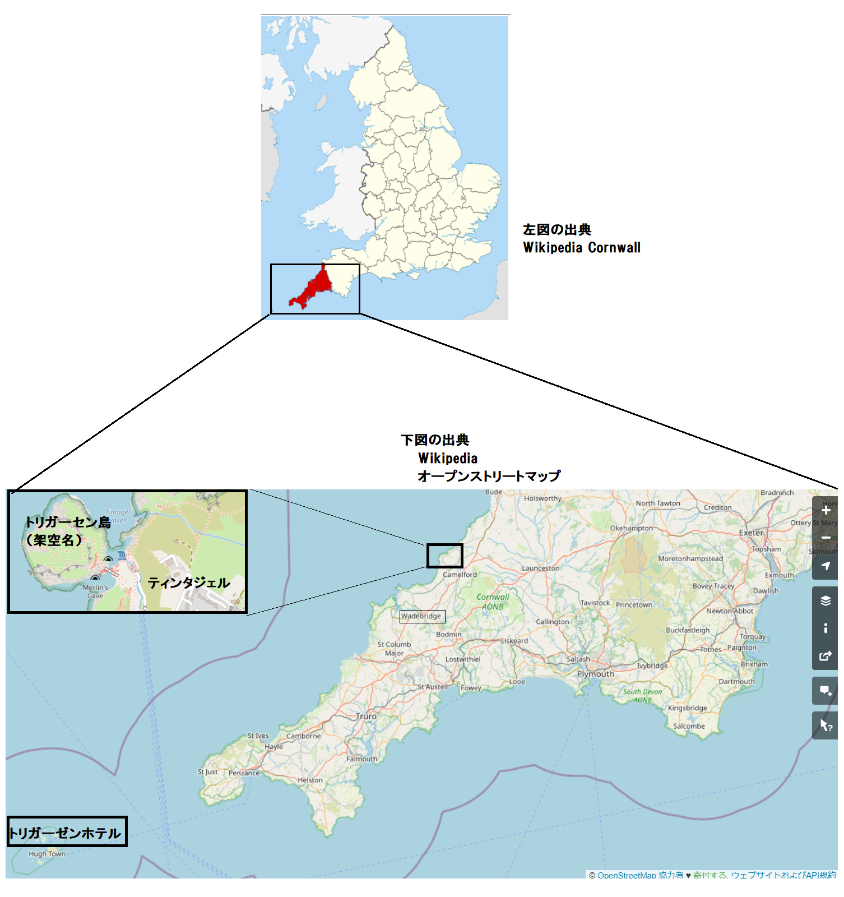

主な登場人物
メアリ 主人公
ミリアム 新聞社主
ホークス 漁師の船頭
トリガーセン 島の支配者
トリタイア 乳兄弟
トリガース 教区長
ナオミ 島の老女
ルース ナオミの姪
ガイ牧師 雇われ牧師
ジュリアン医師 島の医師
モード嬢 アイルランド人
カットリス技師 橋の建設技師
ビショップ 漁師
プレスコット 技術者
マッスン親方 橋建設の元締め
フィンレイ 不満労務者
［＃改ページ］
［＃ページの左右中央］
［＃改ページ］
第一章 休眠庭園
休眠庭園にはヒナゲシ一輪も咲いていないけれど、時季に訪れたら、多くの花々がある。その時季とは、皆が吹雪を話題にし、子供達が十二夜のケーキにつかの間そわそわする頃だ。
このとき、トリガーセン島は花々が華やぎ、大花壇となる。ラッパスイセンやキズイセンが頭を垂れ、サボテン生け垣の軒下で、高貴な紫スミレが良い香りを漂わせる。ごうごうと押し寄せる大西洋の大波に、花々が揺れなびき、咲き誇る。
そこはどこ？ どうした？
場所はティンタジェルからそんなに遠くなく、住人はアーサー王物語を話し、島の中央には大りんご園があり、そこでランスロットが殺したドラゴンの歯は燃える剣のようだったとか。そこにもグラジオラスが真っ赤に咲いている。
トリガーセン島は緑豊かで快適な細長い離れ島であり、長さ13
 、幅８。東と北は切り立った高さ30
、幅８。東と北は切り立った高さ30 の花崗岩の崖で守られ、聞こえる音は大西洋の海鳴りと
の花崗岩の崖で守られ、聞こえる音は大西洋の海鳴りとお嬢が言った。
「ミリアム、ここは天国ですね」
ミリアムは持参した黒い小箱に損傷がないことを願った。お嬢が良く通る甲高い声で言ったことは見当違いだった。
どうでもいいことだが、二人を運んでくれたトリボース村の漁師はちょっと野暮ったくないか。果たしてミリアムは気付いていたか、漁師の分厚い胸板、
お嬢は小箱が陸揚げされるのをじっと見ていた。お嬢はお嬢様以外の何物でもないから当然、衣装は豪華だ。ここらの地域では誰もあんな衣装は今まで見たことはないし、プリマスやエクセタのような大都市を旅行した者ですらそうだ。

お嬢は背が高く、美形、瞳は海のように青く、髪は上陸した砂浜のように金色。征服民族の娘のように横柄に振る舞い、指にはダイヤ、耳にはサンゴをつけている。化粧室で秘密を学んだ女性なら、混色毛織コートや、銀
またお嬢はアメリカ人であり、大金持なことも知られている。以上は勘のいい女性なら全て当てる。一人娘のメアリとして知られ、父はペンシルバニア州ピッツバーグの故サイラス、世間が知っているように２年前の１８８５年に死亡。ダンクニュウと壮絶な仕手戦をした挙句、ダンクニュウは４百万ドルを失い、わずか１千万ドルそこらの比較的貧乏人のまま亡くなった。なかにはこうして人生を失敗する人もいる。
メアリには跡取り娘以上の何かがあり、とびきりの美人だった。善良で、賢く、もちろんわがままで、我が道を好む。跡取り娘じゃない一般の娘も、同じような傾向があるのは否めない。メアリがどんな女か、やがて分ろう。
付き人のミリアムは対照的だった。ミリアムは50歳だとされるが、実際は10歳若いことを伏せていた。痩せてひょろひょろ、小麦色の肌はしわがなく健康だ。上唇には猜疑心が漂い、大口、滑稽、ひとたび茶色の瞳を見れば、この女性は男に生まれるべきだったと妄想しかねない。
ミリアムは20年前タイピストとして出発し、お金を稼ぎ、40歳で三つの人気日刊紙の所有者となり、すべてを一人で築き上げた。多忙、幸福、聡明、親切、よく働くこの女性の唯一の不満は議会に出馬できず、大統領に立候補できないことだった。しかしそんなことを言えば、お嬢メアリの名前を名誉毀損するかもしれないし、おそらくそうなっただろう。
船頭のホークスは、手の切れるようなお札を驚いて見つめた。メアリが褐色の大きな手のひらに置いた紙だ。
ホークスがけんか腰に言った。
「俺は字が読めねえ。学問なんて必要か、タラとサバを数えるだけの男に」
メアリが優しく説明した。
「お駄賃の５ポンド紙幣です。私の知っている唯一のたしなみは敵対的な非難をしないことです」
ホークスは頭をひねり、疑わしげに紙幣を見ていた。銀行とかそんなものを聞いたことがあった。トリタイア地区のトリファーセンは全財産を一度に失ったとか。
「半クラウン銀貨にしてくれないか」
とホークスがおずおず尋ねた。
メアリが笑ったので、ホークスもつられて笑った。コーンウォールの漁師は、苦境にあってもスコットランド人より冗談を飛ばすけれども、この種のおふざけはしないから、メアリが堂々と笑うのを聞いちゃ、精神的にも道徳的にも耐えられなかったのだろう。
ミリアムが言った。
「お嬢は船頭を
ホークスは半クラウン銀貨を３枚もらって退散し、半ポンド金貨は馬鹿にして拒んだが、物欲しげであり、別れ際に、その内また戻って来て、二人を乗せると言い、島に留まるつもりというメアリの嫌みを軽蔑して、こう言った。
「トリガーセンは泊めてくれないぞ。あの島はよそ者を入れない。来ても、来ざるを得なくてもだ――しかも女だし」
こんな捨て
ミリアムはホークスが船で運んできた黒い小箱に腰掛けて、周辺を静かに眺めていた。２月の午後だが、陽光を浴びて座っていれば、ちっとも不快じゃない。空気は花々の香りでむせかえり、外海は荒れつつあり、大きなうねりが大西洋から押し寄せてくる。大波が数日続くと、天気が良くてもトリガーセン島に着岸できない。ホークスはこれを指摘したのだが、メアリはかえって都合がいいと言い返した。さすがのトリガーセンも天候は左右できまい。
「お嬢、いまこそ打ち明ける時です。たたき上げの女史として私にも知る権利があります。あなたを喜ばすためにはるばる６千
やってきました。私の弱点につけ込み――」「それと、私に対する愛にもね」
ミリアムが鼻眼鏡をかけた。そうすると怖れられた。屈強な男でも、破廉恥な金貸しでも、この鼻眼鏡の前には震え上がった。メアリが笑って言った。
「ふふふ、いいですよ。かまいません。ここへ来たのは我家の始祖がトリガーセンの流れ者だったからですよ。宗教上で迫害され、アメリカのニューイングランドへ逃げたのです。メイフラワー号で移住したピルグリムファーザーズの一員でした」
「統計によれば現在、25万人もの米国家族がピルグリムファーザーズの直系と称しています。出港の前週、ニューヨークでその一人に会いました。
「ペテン師です。でも私の話は本当だと知っているでしょう。私の先祖マーシャの日記を見たでしょう。実際この島で書かれました。魅力的で古風な表現はすべてここで著されました。考えてごらん、島を探検する喜びを。先祖のアマイアスが敵の命を救った場所を見たいのです。そこで先祖のマーシャが瀕死のスペイン人を発見しました。スペインのガリオン船サンタマリア号がここで難破したからです。あなたも興味があるでしょう」
ミリアムは率直に認めた。事実、マーシャの貴重な日記が入っている小さな黒箱には、メアリのダイヤモンドもはいっていたので、心配だった。
「私はアメリカ人であることを誇りにしていますが、もう少し古かったらよかったのに。歴史というか、移住してきた人々の過去を知りたい。ですからここを見たいというお嬢の希望に付き合ったのです。そろそろ見に行きませんか。この島はトリガーセンのものです。氏でも卿でも閣下でもなく、呼び捨てのトリガーセンです。滑稽なほど封建的です。島の所有者トリガーセンがすべての法律を作り、税金も物品税も国へ納めません。特殊な男だと聞いたことがあるでしょう。島の人々はキリスト共同体を造り、自活して、土地代も、いかなる組合費も払わず、誰とも交際しません。ここを聞きつけて上陸しようとする旅人は厳しく排除されます。お嬢は美人で跡取り娘ですから、単なる侵入者として島民に撃ち殺される心配は無いと思います」
メアリがかがみ込んだ
「ミリアム、あなたの自慢の友情はどこ？ 私を拒んだ男を今まで見たことある？ ありのままを見せましょう。私がその男に笑いかければ、いちころですよ。そのあと、あなたが鼻眼鏡をかけて、ねめ回せば敵はひれ伏して楽勝でしょう」
メアリが海に浮かぶ灰色のカモメに手を軽く振った。その指には海水に濡れた宝石が光っていた。
「先祖の島から追い出されてたまりますか」
とメアリが言い、喜びに浸り、ほっと一息入れた。
確かに、命の喜びに満ちた細身の若い女性、メアリは指にダイヤモンドをつけ、瞳にも輝石があった。健康、裕福、美貌、斬新な感覚の持ち主の新人類であり、若葉であった。これ以上何を望もうか。
メアリは完璧に、厳しく育てられた。季節は２月だが、太陽はありがたい陽光を降り注ぎ、大西洋から吹く浜風は、すがすがしくて清浄だ。背後の島には花々や果樹園や緑の草原がある一方、花崗岩の島崖には、大波がどどーんと打ちつけている。
長々とうねる波間がゴーゴー砕け散るたび、無数のレース状の白い泡は、まるで崖下を
「いよいよ楽しくなりそうね。ミリアム、飽きるまでここに居ましょう」
ミリアムが何事か、新聞の方針とか、ある編集長の欠点とか、つぶやいた。それでも島の魅力にはあらがえなかった。
ここに滞在するのは嬉しいだろうし、あの風変わりな古い日記に書かれた場面を探検するのも楽しいだろう。メアリが親戚だと打ち明けたら、トリガーセンはなんと言うだろうか。だって日記のマーシャはかつてマーシャ・トリガーセンだもの。
ミリアムが突然言った。
「
「トリガーセンと？ おあいにく様。もしナポレオン的な態度をとるなら、こちらの番兵を持ち出して、秘宝を見せます。秘宝を使う場面はないかも知れませんが、最悪になった場合に保留しておきます」
「そうでした。忘れていました。ところで、そろそろ移動しませんか。あっ、現地人が来ます」
男がよろよろ浜へ歩いてきた。船員のような服装で、赤い毛糸帽子を素敵な後頭部にかぶっていた。若くて、上体をかがめ、広い胸板と、精力と活力に溢れている。きれいな小麦色の肌がマホガニ色に焼け、ジプシーのような黒い瞳が大胆にもメアリの青い瞳を見つめた。目線には好奇心と驚きがあった。
「ここで何をしている？」
漁師に間違いない、典型的なコーンウォールの若い漁師で、怖れ知らず、ざっくばらんで、男や女にも対等に接する。数世代にわたる自立親方で、下劣な金儲け方法などこれぽっちも知らず、どんな男にも師事しない。幾多のうさん臭いお役人なんて、これらフェニキヤ子孫の漁民に比べれりゃ、ちっとも専制君主じゃない。
メアリは少しいらついた。同じ家系の片側にやって来たのだが、始祖が貧しかったので、今の高い地位を捨て去りたい気分になった。ミリアムが笑った。もしメアリにこのささやかな弱点がなかったら、ミリアムはメアリをあまり好きになれなかっただろう。
「あの尊大な男はお嬢を正しく評価していません。お嬢が大金持ちということを知りません。ダイヤモンドに眼もやらない。財産とか、シカゴ鉄道株式を教えてやりなさい。美貌はよく分っているようですから」
メアリが笑った。いらだちは鏡に吹き付けた吐息の曇りのように、とらえどころがなかった。
「どこへ行ったらトリガーセン氏に会えますか」
「僕はトリガーセンの
メアリが小声で説明した。人生で初めて味方が欲しくなった。ミリアムはと見ればこの状況を楽しんでいる。メアリがただの男と最悪の出会いになったのを見るのは愉快だった。
メアリは男に対して嫌みを全く言わず、
「トリガーセンのご親切に感謝します。トリガーセンは私達をどうすると思いますか、トリタイアさん」
「ええっ？ 何だって？」
メアリが同じ質問を繰り返した。この男は人生において“さん”付けで呼ばれたことがなかったので、メアリの口から出た自分の姓が分らなかった。やっと分った。即座に答えた。
「送り戻せだ。うねりが
「よそ者ですって。礼儀を欠いています。明らかに流れ者ってことですよ。私達は疑われています、メアリ」
「じゃあ、その間どうすればいいのですか」
「聖地へ行け」
「聖地ですって。うれしい。そこでお祈りするのですか」
トリタイアが怪訝そうに、
「お祈りのことは知らない。自分らで部屋を掃除して、自炊することだな」
メアリには夢のようだった。ここには楽観的な期待以上に中世的慣習がある。
一方のトリタイアは明らかにめろめろになっていた。メアリのお世辞に感じない男はいない。
すると、話の途中で、３人組がいる浜へ降りてきたのは背の高い痩せ型の男、目鼻の整った夢見るような顔立ちで、海のような瞳だ。長年、40歳未満で押し通せるだろうが、髪は真っ白だ。でも不愉快じゃなく、事実、とても魅力的だった。
トリタイアは気さくに向き直ったが、敬意がないわけじゃない。
「トリガーセン、こちらが例のミリアムとメアリです。メアリは素敵な人です」
第二章 トリガーセン
男が言った。
「お目にかかれて光栄でございますと言えたら良かったでしょうが……。トリボース村で聞かなかったですか、どんな事情があろうと、よそ者はトリガーセン領土に入れません。私はここの国王であり、独自の法律を作り、妨害や邪魔されることなく、人民を収監できます。あなたを牢に入れることも出来ますし、英国の下院も口出しできません」
「トリボース村で全部聞きました。女性という特権でここへ来ました」
トリガーセンの薄い唇に笑顔のようなものが見えた。
「でも、あなた方の来島に
「長引けば長引くほどよろしい」
トリガーセンが軽くいなした。
「おそらく考えを改める羽目になります。時々私達も本土の人々を受け入れざるを得ません、例えば去年のようにニシンが不漁で、トリボース住民の半分が飢えた時です。この時も私達の規則に従わせました。申し訳ありませんが、あなた好みの例外は適用できません。聖地には貧しい人々がいて、貧民収容施設と呼びたければそう呼んで下さい。そこに行って下さい。実際、ほかに居場所はありません。白い
男は、メアリの極上のツィード・ドレスと宝石をひどく軽蔑して、指差した。またしてもミリアムが笑った。メアリの
メアリが冷静に言った。
「私達の正体を言ったら、少しは扱いが良くなるかも知れません。私はアメリカ人です」
トリガーセンがもう一回ダイヤモンドを見た。
「そうじゃないかと思っていました」
本当にこの君主は率直すぎる。メアリがすぐ続けた。
「私は英国血統で、先祖の姓はトリガーセンです。この島のアマイアスの直系子孫だと証明できます」
「どうぞ続けて。とても興味深いです」
メアリが一瞬で打ち解けた。日記の内容はほとんどそらんじており、トリガーセンしか知らないと思われる島の歴史場面を話した。疑いなく、メアリはメアリに他ならない。
トリガーセンはあたかも私権剥奪された原告に
「あなたの言い分は否定できません。近いうちにその日記を見たいものですが、その日記は島の公文書に何回も引用されています」
「手に入れるようにしましょう」
これはメアリの駆け引きだ。正当かつ緊急の理由から、トリガーセンに日記を見せなかった。なぜ見せたくなかったか、見せたらどうなるかはやがて分ろう。メアリは両眼に笑みを浮かべ約束した。
「やはり聖地へ行く運命ですか」
「残念ながらそうです。実際、あなたの行ける場所は他にありません。たとえ私の妹であっても、規則は破れません。私の家には男の召使いが一人居るだけですから、入れるわけにはいきません。言うのも恥ずかしいのですが、私の小屋はみすぼらしい最たる物です。この島は惨めなほど貧しくて、魚もたまにしか捕れないし、
クロムウェルやウルジーならそう言われたかもしれない。つかの間メアリは深く感動した。
ミリアムが尋ねた。
「産業はないのですか。貧しい女性に仕事はないのですか。意味は分るでしょう」
トリガーセンの目がギラリ。ミリアムが言った狂信的な考えはのっけからバッサリ。反論をまくし立てる様子は黒牡丹から水がほとばしるかのよう。
ミリアムがトリガーセンを見つめ、どきどきしながら興味深く思った印象は、人間性を学ぶ学生が新人類に対して抱く感情のようだった。
トリガーセンは波打ち際を行ったり来たりしながら、二人のことをすっかり忘れて、叫んだ。
「そんなことになれば真っ先に私の右腕を切り落としてやる。いっそ人民を餓死させてもいい。いまどきの商業は
ミリアムが応じた。
「おっしゃることは大いに結構ですが、同時に多くの偏見があります。私が自分の努力で財産をなしたことを知っていますか」
「心から同情します」
とトリガーセンが思いやった。
実際、あまりにもまじめに言うものだから、ミリアムの心から、
「まったく、あなたは絶対に間違っています。女性には大きな分野が待っており、呼びかけています。いえ、私は一般の女性と変わらないし、女性も世の中の富を求めています。一方、誘惑に飢えた大勢の男も知っており、そんな男は想像も出来ないでしょう。もし私に任せたら、あなたにも何か出来ます」
とミリアムが言い、鼻眼鏡でにらんだ。今度はメアリが口論を楽しむ番だった。
「あなたのお願いとやらをおっしゃってくださいませんか」
とトリガーセンが尋ねた。
「そうですね、あなたを
「女性が働くなんて、しかも男の仕事を行うとは、神の前では虐待です。ここでは絶対にありません」
トリガーセンはかたくななだ。
「花が不作になったらどうなります？」
とメアリが尋ねた。
トリガーセンが認めて、
「飢えて、餓死寸前になります。でも我々は受難者です。泣き言は子供のいうこと。人民は苦難の火にあぶられても黙って耐えます」
ミリアムは静かに聞いていたが、両目には戦いの炎がギラリ。女性の使命に関しては米国で最高の権威だ。雇い主は
「人民と共に飢えに苦しむのですか」
とミリアムが繰り返した。
「ええ、そうです」
「この豊かな島でわざわざ飢えるのですか。ご存じですか？ 私ならこの島をモンテカルロのように有益な資産に作り上げられます。もちろん
メアリがうめいて、
「ミリアム、やめて、どうかやめて、」
ミリアムの眼から戦火が消え、微笑んだ。同時にトリガーセンをひどく軽蔑した。この男は帝王のように振る舞うが、頑固で偏狭だ。しかも花が不作になったら、人民と飢餓に苦しむという。
「花の収穫は今ですか」
とミリアムが訊いた。
「今から４月初旬までです。つまり次の６週間です。シリー諸島とフランスの
というくだりにはひどい軽蔑があった。
「収穫時、雪や霜が時々降ります。見てもらえば分るでしょうが、私達の花卉はシリー諸島の物よりずっと活きがいいです。だが豊作でも実入りはわずかです」
「イワシは？」
とメアリが訊いた。
「今は２〜３年に１回しか来ません。島の突端にあるポートグィンに50〜60軒の廃屋があるでしょう。かつては一番栄えた村でした。でもイワシが不漁に次ぐ不漁で、村は捨てられ、次々
ミリアムがぴしゃり。
「アメリカでは有り得ない。米国人は何かしようと動き回ります。もしあなたが時代遅れの考えを押しつけたら、退任させられるでしょう」
トリガーセンが苦笑い。この新聞女性は脅威だが、次第に好きになり始めたのは、皆と同じ。
でも目下の話や目線はメアリに向いていた。いままでこんなに輝いて華麗な女性を見たことがなかった。
セントミンバーの牧師の妻であるガイ夫人は、美人だが、メアリほどのかわいさも服もない。トリガーセンはほっとしてメアリに向き直った。
「花を見せて下さい」
とメアリが言った。
トリガーセンが無言で道を案内し、サボテンとキョウチクトウの長い生垣を越え、向かいの畑へ行った。そこは盆地になり、高木、ヤシ、竹、シロガネヨシに囲まれ、暖かい陽光が降り注ぎ、端から端まで一面の花々で覆われている。
メアリが思わず歓声を上げた。目の届く限り花ばかり、間には碁盤状の細道がある。ラッパスイセンが黄色や深紅の大輪を咲かせ、揺れるスイセンやキズイセンの向こうには、鮮やかなグラジオラスとチューリップが耀き、大きくて青白いヒヤシンスが華麗にぴんと伸びている。小さな窪地も、スミレで覆われている。そのほかにもメアリが見たこともない花々があった。
太陽が桃源郷の上でくっきり耀き、空気は香りでむせかえっている。崖の向こうから、海鳴りが聞こえる。トリガーセンが誇らしげに情景を見渡した。
「これが私達の重要な庭園です。この島でこれ以上、手入れされた場所はありません。果樹園と小麦畑もあり、西側斜面にはジャガイモを育てています。この場所こそ、希望と関心の中心です」
「広さはどれくらいですか」
と実業家のミリアムが訊いた。
「およそ５万坪です。女性のほとんどがここにいます」
女性や少女達が、老いも若きも花々を摘んでおり、おそらく全部で百人ぐらいだろう。全員が地味な青い羊毛服を短く着て、スカートをはき、丈夫な靴と、手織りの黒いストッキングを履き、頭には堅い縁取りで扇風機のような丸帽子を優雅にかぶっている。
一人か二人立ち上がったとき、メアリは女性らの物腰に、自由さと優雅さを感じた。一人の少女が、人なつっこく大胆にチラ見して通り過ぎた。よそ者の私達に対して、少女は下卑た興味を示さなかった。メアリが親しげに少女の方へ歩いて行った。
「あの少女に話しかけていいですか」
とメアリがトリガーセンに尋ねた。
「どうぞ。あなたはここに数日いる予定だし、皆と同じ服を着て、皆と同じように生活することになりますから。ジェーン、こっちへ来なさい」
少女が臆せずにやってきた。
「はい、ご用ですか、トリガーセン」
ジェーンは全く自然体で、落ち着いていた。メアリの質問に答える態度には、多くの共同体がうらやみかねないものがあった。
話した内容は、花々の収穫や、球根の植え付けや、卸業者が葉っぱをもっと付けろという要求などだが、後者は親
オリーブ油を塗った肌は牛乳のように透き通り、黒目は全く怖れ知らずだが、悲劇の兆しがあった。その時も、定期的に襲う飢餓が目前にあった。
「あの少女にもっと会いたいですね」
ジェーンと別れたとき、メアリはラッパスイセン畑にうなずきながらこう言った。
トリガーセンが帝王然として言った。
「お好きなだけ会えます。この島の組織も全て見られます。ところで聖地では私物を全て預かります。夕食の際は支給する衣服を身につけて下さい。あしたは都合のいいときに島を探検してよろしい。そして午後１時に私と食事して下されば光栄です」
退去する口調だ。メアリは引き留めていいものかどうか分らなかった。うっかり忘れていたのは、この男と、その先祖が７百年間この島の支配者だったこと。
「ひとつお忘れですよ」
とメアリが言った。
「ほう、何ですか」
「聖地の場所です。みなさんは歓迎してくれますか。部屋はありますか。邪魔になりませんか」
「全て準備済みです。聖地には常に空き部屋があります。夕食の配給を受け取って、共同テーブルで食べて、そのあと自由行動できますが、夜10時には消灯します。あした午後１時に私と一緒に食事して下されば光栄です」
トリガーセンが中折れ帽を取って低くお辞儀して、去って行った。メアリは突っ立って、見えなくなるまで見ていた。
メアリの言葉に熱がないわけじゃなかった。
「素敵な美男で、人民のために生きている男ですね。ミリアム、６世紀に戻ったような気分です。ここで楽しい時間を過ごせそうですね」
「はい、ここの人々はやがて良くなるでしょう。お嬢にとっては素敵な男ですが、観念的で愚かです。人民が平和で豊かになれるというのに、どんなことをして、人民を飢えさすはめになるのですか。この王国には最高の作物が数種採れますから、小規模な事業でも、この島を一変できるかも知れません。さっき私達が話し合った素晴らしい少女をご覧なさい。侯爵夫人になれるかも知れません、とびきりの美人です。でも、眼に悲劇の兆しがあったのを見たでしょう。トリガーセンを自活させるか、飢餓に遭うか、させるべきです。もし説得して世界を旅行させたらいいのですが。ここの人民を救いましょう、メアリ」
「そう、そう。教訓を与えるべきです、できればお手やわらかにですが、やはり教えるべきです。このような楽園に
ミリアムもうなずいて認めた。秘宝が何なのか、トリガーセンにどんな影響を与えるかは、そのうち分るだろう。さしあたり、メアリは健全で現実的な空腹を訴え、聖地へ行きたかった。
聖地は
なだらかな斜面、起伏のある盆地が眼前に横たわり、緑の遊歩道の側溝には水が流れ、シダ類、ホウライシダや、王シダなどで縁取られている。果樹園には何百本もの木々があり、リンゴの木がちょうど薄緑の色を点々と付けたばかりで、つぼみがほころんでいる。
盆地の後ろに、石造りの長屋があり、古風なねじれ煙突が
メアリが叫んだ。
「テニスンの『古代平和霊場』です。欠けているのが、鳩の鳴き声、蜂の羽音、これで完璧です。今までこんなに素敵なものを見たことがありますか。実際にこんな素晴らしい場所に住めるなんて」
ミリアムもひどく熱くなっていた。たぶんミリアムが考えていたのは、霜や雪、ジェーンの素敵な目に浮かんでいた悲劇のこと。それに、この桃源郷を所有し、無知・愚劣で、日ごと悲劇を見ながら、防ぐ手立てを何もしない男のことだった。
ミリアムは考えた。
「戦ってやる。戦って、敵の得意分野で負かしてやる。死を免れない人間が、あんな神意をのたまう権利は誰にもない」
メアリが言葉尻を捉えて、
「でも人民と一緒に飢えます」
「都合のいい言い訳です、まったく。私には財力もあり、先見のない男に、ずけずけ意見を言えます。あの男の魅力に負けないで、メアリ。あの男の愚劣に惑わされないで。私ならこの場所を１年以内に裕福にして、たった一つの幻想である純粋なものは、失わせません。ぞっとします、メアリ、全くぞっとします。ここの女性はみんな自立しており、いい人達です。覚えていませんか、あの日記がスペイン織物のことに触れていましたね」
メアリが思い出した。いま全てがよみがえってきた。
メアリが案じた。
「でも技術が絶えていたら……。私の先祖のマーシャと、他にこの島の二人の女性が技術を持っていました。スペイン無敵艦隊の壊滅後、ガレオン船の生存者から学びました。スペイン織物を作る偉大な技術です。このあいだパリで現代作を見ましたが、１
当たり10ギニーとのことでした」「もちろん買ったのでしょう？」
「もちろんです。素敵な蜘蛛の糸のようでした。むかしこの島で織っていたとはねえ、もしかして島内の誰かがまだ技術を持っているかも。そんなことがあるかしら、ミリアム」
ミリアムが頭を左右に振ってから、聖地を指差して、言った。
「行ってみましょう。いろいろ聞けば、いろんなことが分ります」
第三章 聖地
広い道は両側が花々で縁取られ、聖地へと続き、修道院らしい碑文が刻まれた古い日時計が、開け放たれた扉の前に鎮座していた。非常に静かで美しいが、ひどい困窮が透けて見え、窓には飾りがなく、さび色の
ミリアムが批判的に言った。
「リンゴの木は全面的に剪定すれば生き返ります。すべてが修道院的、中世風で、あきらかにローマカトリックです。でもトリガーセンはプロテスタントですよね。どういうことですか」
メアリが説明した。
「華やかな昔、トリガーセン島民はカトリックでした。一族の中で世間を騒がせた唯一の人物が故ルパート、宗教改革で重要な役割を果たしました。全て日記に書いてあり、ここの修道院の語り草になっています」
二人は見事なアーチ道をくぐり、回廊付き中庭に入った。緑の芝生の上に、部屋もしくは独房が多数近接し、優美な飾り格子で区切られている。端っこには高い屋根の部屋があり、明らかに昔は礼拝堂だったが、今は食堂というか、共同大食堂になっている。芝生の真ん中は、昔の泉跡であり、丸くなっており、そこに数人が集まっていた。
年取った男女の引退者達だ。メアリが周りを見渡すと、もう一つ食堂があり、まさに男性用食堂と正確に見抜いた。でも今一番興味をそそられるのが、泉跡に集まっている前述の一団だ。歳を取り、やつれて衰えているように見えるけれども、とても清潔だ。
人生の仕事を終え、初老期にあった。見るからに幸せで、のんびりひなたぼっこをしている。空腹とか、飢餓とか死とかに結びつけられない。だって花々に囲まれて座っているし、大西洋の大波が夢音楽となり、呼吸する空気は命そのものだもの。
皆が人なつっこい眼で二人の方を向いた。メアリとミリアムは、ジェーンとトリタイアがいるのに気付いた。ここにはお世辞や階級差がなく、トリガーセンに対してもそうだが、後者は何でもしてもらえる。皆が重々しくお辞儀して、白髪の古老が麻痺した体で口走ったのは歓迎の挨拶か。そのあと再び話し始めたが、一人の老女を除き、二人のよそ者など眼中になかった。ちっとも興味がなかったのだろう。連中の話は、ずっと海や船やイワシや、トリボース村にあがるサバのことだった。時々、悪天候時の
一人の老女が一団から離れて、メアリとミリアムの方へやってきた。メアリが喜色満面になった。老女はと見れば苦しみが何年も続き、70年間の難儀や心配や不安のために腰が曲がっている。昔は背が高かったようだ。今は粗末な羊毛服を着ているけれど、依然として美しい。扇風機のような帽子は、ふさふさの髪色より黒ずんでいる。
薄茶色の顔にはしわがあり、無数のしわはメロン皮のようだが、頬は赤く、黒い瞳は子供のように澄んでいる。ゆっくり静かに話し、丁重に敬意を払っている。サテン服を着て、長い指に高価な家宝をはめているので、大邸宅の女主人としても通用しかねない。話しかけてきた態度には、明らかに二人を第三者と見ている。
老女が言った。
「私はガロウ地区アイザックの未亡人、ナオミと申します。夫と二人の息子と、娘婿は19年前に９月の大嵐で
「ご親切にどうも」
とメアリが小声で言った。それだけしか言えなかった。行儀良くするには、表面上、ナオミをじろじろ見ない以外にない。今までの所、この驚愕の島こそが、最大の驚きだ。
「ご主人は漁師だったのですか」
とミリアムが訊いた。
「はい、そうです。私達は物心ついてから全員漁師でしたが、そのうちトリガーセンがここに花を持ち込みました。私は、何回も貧しい夫のために漁業を手伝い、船を出しましたが、夫は死にました。さあ、こちらへどうぞ」
メアリが驚きながらついて行った。口をぽかんと開けているのをナオミに見られないか案じた。今までの経験と知識の中で、こんな事例に行き当たったことはない。質問する気力を失った。要点を突くミリアムですら、黙っている。
ナオミが説明した。
「今夜は私の姪のルースが
メアリが叫んだ。
「もちろんです。ナオミさん」
ナオミは親切で如才なく去って行った。眼で合図したのは、ベッドに置いた羊毛服だった。メアリはそれを素早く着て、欠けた鏡でじろじろ見た。
メアリが気取って言った。
「私の追っかけファンがよく言ってたけど、私なら何でも悪く見えないって。まあ私なら、この服もうまく着こなせる。でもあなたは見られたものじゃない」
ミリアムが冷静に言った。
「美貌より頭脳をもらって、むしろ良かった。お嬢は今この場所に酔っていますが、あしたはゆっくり休めません。針と布でその服を仕立て直す仕事があります。トリガーセンがお嬢のレッドファーン作、ワース作の服を取り上げるでしょうが、いくら何でもワース作のコルセットまでは取り上げないでしょう。あの服を体型に合わせたら、お嬢は今までと同じように美しいでしょう、メアリ」
「それは間違いないでしょう」
まさに素敵な夜、愉快な夜だ。何より、例の壮麗な古い食堂が
おそらく全部で50人程の女性が食堂におり、老女達はこの離れ聖地に住み、若い親族が同居することを許されて、面倒を見ており、老女らは自分で料理を作らない。
食事は魚、ジャガイモ、パンで、木製大皿から取って食べる。飲み物はお茶が少々、それと地酒は臭いのきつい、薄いリンゴ酒であり、ミリアムが残念がったのは聖地の果樹園に剪定ばさみを入れていないことだ。
ナオミよりずっと年長、白髪の老女がテーブルの先頭に座り、奇妙な神の恵みを長々と言い、そのあと全員がゆっくり、上品に食べ始めた。メアリは、有名レストランで高価なごちそうを見慣れていたので、大いに楽しませてもらった。
メアリがつぶやいた。
「みなさん急いでいない。これこそ
「みんな明らかに７百年の家系です。深酒はしない、悪口は言わない、欲望は求めない。はたしてこの島でさやエンドウを育てているかしら」
「どういう意味？ あなた支離滅裂ね」
「ええ、エンドウ豆を食べているか疑問です。二股フォークしかなかったでしょう。二股フォークでは、鉄製でも何製でもエンドウ豆はつまめません。事実上確実なことは、ここの人は誰一人、いままでナイフを口に入れたことがありません。エンドウ豆の季節までここに留まり、謎を解きましょう」
メアリが屈託のない笑顔で、ミリアムの言葉尻をほがらかに笑ったので、向かいの娘が見上げた。すぐメアリがまたも深刻になった。というのも今まで出会った中で一番きれいな娘だと心から思ったからだ。メアリは自分が一番きれいでかわいいと、うぬぼれていたので、他人の美貌は認めがたい。
見れば、顔は完璧な
「あんな娘を見たことがありますか」
とメアリがささやいた。
「ありません。何という容姿、何という顔。鋭くて頑固で教養もある。驚きです、メアリ。どこで勉強したのかしら」
メアリが見当違いなことを言った。
「あの娘の名前は？ ナオミに訊きましょう。ミリアム、あの娘とお友達になりましょう。なにか引きつけられます。私達にとても興味がありそうです」
衝動的にメアリがテーブルの反対側へうなずき、微笑んだ。とたんに娘の横柄さと不安が消え、笑顔を返した。率直で魅力的な笑顔だった。
ミリアムが言った。
「意外や、社会に順応しています。あの娘はこの島で半飢餓状態ですが、少なくとも１年で公爵夫人にもなれようというもの。でも言わせてもらえば、どこかの漁師の
「あの娘には野心があります。食事が終わって、向こうのマザー・シプトンが感謝のお祈りを捧げたあとで、ナオミの所へ行って聞きましょう」
食事がやっと終わり、蝋燭が消され、一同がゆっくり解散した。誰もよそ者の二人を詮索しないし、完璧な行儀だ。メアリは回廊伝いにナオミの後を追った。
メアリが尋ねた。
「少しお邪魔してよろしいですか」
「どうぞ、おはいりなさい。これから座って、聖書を半時間読んでから、老体を休める予定です。時間はたっぷりあります。おはいりなさい」
メアリが入室すると、ミリアムも続いた。他の全てと同じく、部屋は
「聞いていいですか。今晩、私の向かい側に座っていた娘さんですが、とてもきれい……」
メアリが口ごもったのは、誰かが部屋に入ってきたからだ。振り返ってみれば、まさにその娘が後ろに立っていた。
「こちらはメアリとミリアムです。こちらがルースです」
娘はちょっと尊大に頭を持ち上げた。しかし、唇が震え、目が涙で光っていた。メアリが片手を差し伸べて言った。
「会えて嬉しいです、ルース。私をメアリと呼んで下さい」
娘が強く片手を握って叫んだ。
「そうします。ああ、どんなに待ち望んでいたことか、この日を。――メアリに神のご加護がありますように」
第四章 島
メアリは頑として当分ここを動かなかった。疲れてだるかったが、幸せな理由は
早起きして、じっと眺めていたのは、太陽で黄金色に染められた格子窓や、聖地の古風なねじれ煙突群だった。また回廊の影が移り変わる様子や、子供達が芝生で遊んでいるのを眺めていた。子供達はメアリを小馬鹿にしていたが、それも用心深く軽蔑するという冷静さであった。メアリは宮殿を見て、王権に息もたじたじとなり、冷静でいられなかった。
それは島民の全て、男、女、子供に共通するものだった。メアリをまっすぐ見て、怖れる風もなく質問に答えたが、みんなが平等ということは、このひねた民主主義者メアリをちょっぴりいらいらさせた。みんな貧しく、恐ろしいほど無知だが、自尊心があり、たとえば双子の姉妹などだが、確実に洗練されており、不作法なそぶりは微塵もない。
ほとんど信じられないことだが、胸板が厚く、手足の長い男達が王子のように振る舞うのに、読み書きが出来ないことだ。確かに、この問題はトリガーセンが声を大にして答えなければならない。
メアリが見た村の小屋は小さくて清潔だが、貧しさを物語っていた。男や女と言葉を交わし、眼をじっと覗き込んだ。みんなの目にあったのが、悲劇の
さて、きざな哲学者によれば、こんな島民は完全に幸福なはずだという。だって地代や税金は国に払わないし、世帯主それぞれが厳密に土地と遺産の所有者だもの。稼ぎの10分の１をトリガーセンが独り占めして、残りが小作人の物になる。パブも新聞も郵便局もない。このすばらしい島と気候は完璧な神が英国諸島に
だが、みんな、きちんと育てられた家系であり、勇敢だけれども、誰も踊ったりしなかった。野外競技はしないし、ラッパスイセンと海以外のことは話さないし、滅多に笑わないわけは飢饉の幻影が常に眼前にあったからだ。
メアリは腹立たしく思った。トリガーセンなら権限で飢饉を無くせる。無くすべきだし、メアリもそうするように進言したい。まず議論して、道理などを説くつもりだが、もし失敗したら、大きな政変が起こりかねない。トリガーセンが分ってくれたらなあ。
メアリは何もかも見たような気がした。
今まさに、トリガーセン城が有名な要塞になっており、崩壊が伝説で語られ、炉端話に造り上げられた。今までのところ、メアリは影のある城を探検しなかったが、機会を望んでいた。さしあたり興味のあったのが人間模様であり、ミリアムとルースの手助けと奉仕に感謝しっぱなしだ。ルースは太陽が昇る前に、自分の花を収穫していた。
メアリが座っていたのが『対照盆地』の尾根。そんな正式名は付いていないけど、まさにメアリの言うとおりだった。正面は風紋砂丘が浜辺へ延びて、雑草が乱雑に伸び、ハマカンザシに覆われている。荒涼とした場所は岩が連なり、その下に堅い砂地が広がり、海はサファイアのように青く、大西洋から大波が渦巻き、砂地に砕け、島の城壁にぶち当たり、粉々に砕ける様子は、延々と連なる最高の編物のようだった。
淀んだ空気は大波の砕ける音で震え、太陽が昇るにつれ、半透明の飛沫があたりを覆った。
以上が一方の情景であり、大西洋のうねりと強烈な海鳴りがあり、空気は天国のようにやさしく、その砂丘の後にメアリが座っており、片側には盆地に完璧な
「ずっとここに居たい」
ルースが笑った。何か絶望的な響きがあり、なにやら悶絶の暗夜とか、船の難破とか予感させた。
「居てはいけません。一晩の冷風で天国が荒涼砂漠へ変わるのを見てきました。なんて赤っぽく太陽が沈むことでしょう。今まで海原にあんな真っ赤な耀きを見たことがありますか」
メアリが感動して、そうだと言った。またしてもルースが笑って言った。
「霜が降りるようです。おそらく風が南へ少しずれて、霜を運びます。この時季の霜は悪夢です。霜が降りれば、盆地の花は朝に収穫できません。お分かりのように、この島は本土に近すぎます。もし20
離れていたら避けられるでしょう。霜が降りたら、ここは駄目になります。春が来るまで、必死にもがく羽目になります。２年前に起こりました……。願わくは、そんな光景を見ませんように。それにイワシが不漁になって、トリボース村から何の期待もできません。多くの子供達が死に、丈夫な男達も死にました。残念なことは、簡単に避けられたことです」「誰によって、ですか」
とミリアムが切り込んだ。
「トリガーセンによってです。トリガーセンは正直な男で、島民を心から愛していますが、あることに関してはただの狂人です。ここでは王様であり、私達は臣下になります。私達は何でもして差し上げます。しかし女性に対しては何もしてくれません。女性が働くのは犯罪であり、商売がもたらす金銭欲は恐ろしいとか。あなたも、女性のために何もできないでしょう」
ルースの目が輝き、両手を強く差し出した。砂州の上を行ったり来たりする様子はトラのようにしなやかだ。美しい絵画の中でも、これ以上美しいのはない。
メアリが言った。
「大いに出来ますよ、ルース。私がお金持ちというのが一つの理由です。それに他の手段も自由に使えます。ところで、この島で他にあなたと同じ考えの――」
「いません、ただナオミは別ですが、老女で臆病です。この桃源郷で私が唯一の裏切り者、いえ、トリタイアがいます。こんなことを感じたのは、私が読み書き出来て、理解できるからです」
ミリアムが言った。
「まあ、勉強したのですか。どこで？」
「内緒です。誰にも言ってはいけません。ナオミが読み方を教えてくれました。トリボースのセントミンバーの牧師が私に興味を持って、本を貸してくれました。牧師のガイ氏は学者であり、紳士であり、すばらしい本の持ち主です。蔵書のほとんどを読みました。シェークスピア、ミルトン、アディソン、スティール、テニスン、シェリー。それにカント、アダム・スミス、ミルも知っています。この村の人々が私の知識と感情を知ったら、魔女だと火あぶりにするでしょう。しかし、それもこれもみんなのためです。島民のために、バラのようにトリガーセン島を花咲かせましょう。今が好機かも知れません、いつでもいいと言うわけではありません。笑っていませんか」
ルースの大きな眼にふっと疑惑が沸いて、話を止めた。メアリは感動していた。ミリアムのゆるい口元すら震えていた。
メアリがやさしく言った。
「笑うなんてとんでもありません。トリガーセン島民のために何かやるつもりです。あなたも私の味方になって下さい。残念ながら、ここには商売とか商業とかありません。さあ、実利的な救済手段を考えましょう」
ルースが座り込み、大目を閉じた。
その日ルースの顔はしおれた濃黄色の形相であったが、これを聞いて喜んだ。そしてつぶやいた。
「そんなことを祈っていました。あなたは金持ちで、先祖はトリガーセンの家系だとか。再びこの地を飢餓が襲わないようにして下さい。トリガーセンと戦って、目を覚まさせて。女性の仕事は子供を産んで育てることばかりじゃないことを分らせて」
「ルース、最後の
とミリアムが控えめに言った。
ルースも認めた。
「スペンサーだったと思います。でも趣旨は分るでしょう。ここの男達は花を育て、魚を捕りますが、私達は花が不作で、イワシが不漁の時でも頼りになるものが欲しいのです。夏や春、それに秋に観光客が欲しいです、いや一年中欲しいです。セントミンバーのガイ牧師は３年前に肺病療養にここへ来ました。ここの空気がどれだけ効いたか、日曜日午後お説教をしに来られたとき自分で確かめてください。でも私達が欲しいものは空気以外の基幹産業です」
メアリが微笑んだ。そうせざるを得なかった。妙に思うかもしれないが、海や砂にまみれた野生の美女から、基幹産業とか、需要とか、供給などの話を聞くとは。だってルースはそんなものを見たことがないもの。
ルースが、
「私達に産業を下されば、それ以上何も要りません。あとは、キリスト共同体ですから。地代も税金もなく、トリガーセンに10分の１を納めるだけです。不作年は苦しみ、豊作年は潤います。私達が欲しいものは一年中働ける何かです」
メアリが考え込んでうなずいた。前面には崖に
「何か理想的なものがあるかもしれません。洗練され、夢見るようなものが。シカゴ人なら豚を勧めるでしょう。トリガーセン島に豚とは突飛ですね」
「やめて、やめて、メアリ」
「わかりました、やりません。全ての始まりは父ですが、父はお金のことばかりでした。ただし株に話を転じたら別です。この島では、お金も株も要りませんね。絵画や彫刻もありますが、彫刻はおもちゃでしょう。木製人形を正しく理解すれば、秘話がたくさんあります。次に紡績があります。たとえばジャコウソウの臭いのする毛織物です。ガウンを織るためなら英国デザイナのワースを雇えます。手織りはどうかしら」
ルースが熱く見上げた。ルースは広く雑学を身につけているが、世間に出たことがないし、物事を笑い飛ばすことは学んでいない。つまり、お金がなくても、軽口を叩けば、心の痛みは消えるものだ。
実業家のミリアムが訊いた。
「毛織りの羊はどこで手に入れるのですか。それよりもっといい案があります。レース編みはトリガーセン島の特産品です。ルース、この島の技法は失われたのですか」
ルースがびっくり
「誰がそれを？」
メアリが説明した。
「けさ話した日記に書いてあります。技法はスペインではとっくに失われたが、ここでは数世紀、いや２世紀前までは知られていました。ルース、ここでも失われたと言わないで」
ルースは、噂が広がらないかと怖れて、周りを見回した。メアリに熱くかがみ込んで、言った。
「技法は活きています。トリガーセンが４年前に見つけて、レース台やら糸巻きを全部壊しましたが、私のは別です。私の叔母ナオミが技法を教えてくれて、私がエクセタ町で12ポンドで売りました。そのお金はトリガーセンが６週間持っていました。トリガーセンは激怒して、ナオミがほとんど全部を壊しました。ですから私はやりませんし、出来ません。あの産業を私達にください。そうすればトリガーセン島民は二度と悲しまないし、飢えないと、分ります」
「ルース、やれますか」
ルースが誇らしげに応えた。
「できます。でもナオミのほうが上手です。とてもきれいです。今晩見せましょうか」
「革命万歳。あなたならやれます。きっと」
こうして反乱の赤旗が揚がった。
第五章 編み物
４人の共謀者はナオミの部屋に座り込んだ。ルースは不安そうだが開き直っており、ナオミは少し怖がり、恥じているようであり、人なつっこい美顔にしては妙に場違いな感がした。メアリとミリアムは冷静だ。
部屋の扉を回廊に開け放っているのは夜が暖かいからであり、オイルランプが彫刻装飾柱や、すり減った舗道や、向かいの静かな草地を照らしている。外気からは、巨大蜂巣が発するような海鳴りの音が聞こえる。他の部屋はどこも灯りが点いておらす、あたかも世界を独り占めしているかのようだ。まさに革命前夜であり、この場所から大事件が起ころうとしていた。
ナオミが言った。
「メアリ、こんなに恥じ入るとは思いませんでした」
「ナオミ、編み物の話をして何が悪いのですか」
ナオミがつぶやいて、トリガーセンに忠実じゃないとか。編み物を禁止され、二度と編まないと約束した。護国卿のトリガーセンも糸巻きや、支柱、風変わりな編物台は破壊したものと思っていた。同時にナオミの心も破壊したけども、些細なことだ。
ナオミが芸術家であることなど、トリガーセンは知らない。あの細い指先に、全身全霊が興奮し躍動し、編み進むにつれ詩情が広がっていくことも知らない。ナオミは我慢して服従したが、同時に人生から何かを失ってしまった。
考えてもごらん、マスカーニから音楽を奪い、ポインタやアルマ・タデマから刷毛や顔料を奪い、二度と絵を描くなと命令するようなもので、それはトリガーセン島の専制君主が貧しい老女ナオミを迫害するのと、どっこいどっこいだ。
ナオミは芸術を金儲けに使うことなど何ら関心が無いし、利益を主張するのはルースだし、ナオミがただ芸術を愛するわけは、この老女が無知、無学であり、編み物のチェリーニ、絹糸・亜麻糸のアンジェロに匹敵するからであり、それをミリアムは手に取るように見抜いた。
ミリアムが穏やかに言った。
「大事なものを奪われましたね」
ナオミがミリアムの手を取って、激しく揺さぶった。眼がきらきら輝いている。長い年月を経て、二人の女性がまみえ、お互いを理解し、メアリは両人の心情を本能で察知した。
ナオミがつぶやいた。
「ああ、知ってたらなあ。私は編み物が好きでした。母が教えてくれて、母より上手になれると言われ、その通りになりました。子供の頃から編み始め、年端もいかないうちに経糸や編み物に指がうずうずしました。その後、型も知らずに習い始め、すすむにつれ身につけました。編み物を売ろうと思ったことはありませんし、心にも浮かびませんでした。時々、１枚編むのに３年もかかりました。見せましょう」
ナオミが今や早口になり興奮して話している。眼にトリガーセンを怖れている風はない。ここに70年間無視され続けた芸術家がおり、ついに目の肥えた聞き手を見つけた。人生で一番幸福な瞬間とは分らなかったが、そうだった。二人の客人に価格以上の物、つまりお金では買えない物を見せようとしていることも分らなかった。
ナオミが板石敷きの床を横切り、隅にあるオーク製の食器棚を開けた。そこから取り出したカシミヤ製の肩掛けは、トリガーセン島の暗黒時代には破壊者がいたので、折り畳まれており、手のひらほどの小さな黒い塊になっていた。
塊をテーブルに置き、広げると、素晴らしい絹のような織物が現われ、その模様はイニゴ・ジョーンズか、ピュージンか、イタリアの巨匠の描画から飛び出たかというほど。模様は始まりも終わりもなく、蜘蛛の巣のように広がっているが、完璧なデザインで、見事で明確、上品な代物だった。
メアリが歓喜して叫んだ。こんなに素晴らしいものは今まで見たことがない。ナオミに対して本心から大げさに褒め称え、薄手の編み物に触れる様子は、指でつまんだらあたかも蝶の羽根のように縮むのじゃないかと怖れんばかりだ。
「ナオミってすごい。自分で編んだのですか」
ナオミの頬が誇らしげに耀き、眼が生き返り、きらきらさせながら、応えた。
「型無しで、５年かかりました。ルースが言うに、エクセタのホートンの店ならソブリン金貨百枚以下じゃ売ってくれないとか」
メアリが四角い編み物を取って、自分の肩にかけた。１
平方だが、アザミの「ナオミはすごい人です。創作者、大芸術家、独自の天才です。パリでも２千ギニー金貨で買えません。レース編み技術は失われており、もっと古い
ナオミが涙声で笑った。褒め言葉が耳に心地いいのは、専門家の称賛が芸術家にとって心地いいのと同じ。マシュー・アーノルドならメアリが伝えた言葉よりもっと正確に伝えたかもしれないが、大きな成果を
「気に入ってもらえましたか。あなたが保管して下されば、嬉しいです」
メアリが無言で椅子に座った。肩に掛けたショールを指で触らざるを得なかったのは、全てが楽しい
こんな哀れな
編むことは痛み、喜び、感動であり、それに苦悩と喜びが入り混じるのは珍品創造に伴うものであり、メアリはただ喜びに満ちて、編み物を押し戴き、美しさを鑑賞するばかりであった。メアリがミリアムに曰くありげに振り向いて、
「どうしましょうか」
「保管しなさい。こんな暗い夜、ひとりの米国人の跡取り娘が大西洋定期船の甲板から消えて、その後、若い記者がニューヨーク新聞の紙面で面白おかしくこう詳述するでしょう。つまりミリアムが帰米して、いままでよりずっと黄ばみ、不器量になったが、身に着けたレース編みのショールが五番街のご婦人方を注目させ、満足させたと書くことでしょう。ナオミ、あなたはメアリに値の付けられない贈り物をしましたね」
ナオミが頼むように言った。
「メアリは絵画のようです。メアリが保管しなさい。私ならもう一枚創れます」
ミリアムが言った。
「多分そうでしょうね。でもあなたが亡くなったら、誰が同じものを創れますか」
ルースがすぐキッと見上げた。かねがねメアリの美貌を率直に褒め称えていたが、自分の愛らしさもひときわ光っていた。その時まで、ミリアムはルースの長い指に気付いていなかった。
ルースが叫んだ。
「私が創れます。抜かりはありません。ナオミほど器用じゃないですが、間に合います。見せましょう」
古い樫製の食器棚から取り出したのが、レース台、糸巻き、その他編み物に必要な道具類だ。仕掛り品がレース台に乗っていた。興味津津の一同は、ルースの長い指が目もくらむ速さで糸巻きを
「なんて力持ち」
とメアリがつぶやいた。
ルースがこともなげに言った。
「ここの女性はみんな力持ちです。生きるためです。ところでこれを見て、メアリ。この模様はスペイン無敵艦隊が負けた後、難破したガレオン船からもたらされたものです。二人が生き残りました。アマンダ船長の妻と娘です。この二人がトリガーセン島民にレース編みを教え、娘の成長後、結婚したのがアンブローズで、この人が私の先祖です。その為、瞳が黒く、反抗的、短気で、配慮に欠けるなどと、トリガーセンは言います。でも私からこの技術は奪えませんし、次に島が困窮したとき、私が救って見せますし、そう言います」
ルースがカサンドラのように仁王立ちした。ルースこそ、光りと自由のために戦う島の宝かもしれない。ランプ灯りに立ち尽くした姿は一幅の絵画だ。
ナオミがおびえて言った。
「大声を出さないで。もしトリガーセンに聞かれたら」
開け放たれた扉を影が横切り、黒ずんだ石回廊を照らす灯りが消えた。外の海鳴りが高くなったような気がした。
「聞いたよ」
とはトリガーセンの声だった。
部屋に押し入った姿は大きくて、強そうで、堂々として、眼には怒りが燃えていた。まさに、帝王、支配者然としている。だが、男を見抜く力のあるミリアムは、男の口元に夢想家の影、つまり弱点と優柔不断を垣間見た。
ほとんどの女性は今までこの男を喜んで支配者と呼んできただろう。母親が危険から子供を守るかのように、ナオミがレース台に両手を置いて小さく叫んだ。
「怒らないで、怒らないで、トリガーセン」
メアリがサッと前に進み出た。頭を後ろにそらせ、目が輝いている。この甘やかされて育った財産持ちのメアリは、リンゴ泥棒で捕まった餓鬼のように扱われるのは我慢ならない。このように尊大に振る舞うトリガーセンとは何者だ。
メアリが甲高い声で言った。
「皆さん怖がらないで。何も怖れることはありません。ナオミとルースは編み物の手本を見せてくれて、編み方を教えてくれました。私が肩に掛けているものは２千ポンドの価値があります。もしあなたに見る目があって、頑固でなければ、この贈り物を育てて、島民は永久に飢えないでしょう」
トリガーセンが怒り始めた。これは自国や農民の前で、君主が容認しがたいことだ。メアリも腹が立ち、自由に物が言える権利こそ、アメリカ人が一番大切にする。だがトリガーセンはそれを嫌い、女性を称賛するどころか、この時点でメアリを見下した。
「私はそんな先祖の争いを何回も聞いてきました。私ならいつでもこの島を売って、快適に引退できます。あなた方西側の人には軽蔑に値するでしょうが、とうてい分りますまい。おとなしくそのレースを渡して下さい。残りはあした壊します」
メアリが言わなかった返答とは、トリガーセンをここぞとばかりに打ち負かす魂胆。あの秘宝のことを口に出しかかったが、かろうじて間に合って、気持ちが完全に萎えてしまった。この男にチャンスを与えよう、言い訳する機会を与えよう。いまはこの男を大目に見よう、ちょうどマックワース神父がチャールズ・レーベンシューを助けたように。
メアリが厳かに言った。
「そんな必要はありません。私に正当な権利があります、買い取りましたから。もしあなたが力ずくで壊したら、英国高等裁判所に訴えます。高価なものを奪ったと証明して、１万ポンドの訴えを起こします。あなたの年間収入の２倍に当たり、この島のどこにそんなお金がありますか。あなたは島を売らざるを得ませんし、島民はこの新しい編み物のために戦うでしょう。分りますか、トリガーセン」
良識の矛先がトリガーセンに突き刺さり、不安げに笑った。メアリの言葉には大きな力があり、君主は財産権の神聖な保護者であるべきだ。トリガーセンが去ろうとすると、ルースが前に進み出て、足元に身を投げ出した。トリガーセンの右手を握り、自分の唇に押し当てて、激しく情熱的に訴えた。
ルースが叫んだ。
「返してください。トリガーセン。返してください。
これ以上すばらしく、激しい劇的なものはない。ルースは一瞬の感情に我身をゆだねた。ひざまずいて人民の命を嘆願する女王であった。青銅のようなトリガーセンの顔に朱が差した。やさしく、しかし支配者然としてルースを立たせた。
「私にひざまずいてはいけないことを忘れています。赤い光りがティンタジェルで見えても、主がなされたことです」
頭を垂れる様は、心の祈りを黙祷しているかのようであり、頑固さと狂信が入り交じった表情は、メアリが以前見た顔だ。なりは大きくて強そうで、災難をはねのけるように見えるが、幻想のような気がした。
妙なことに、心に浮かんだ例えは、見事な焼き物がきれいに絵付けされているが、まだ
ルースは気落ちして立ち去った。波が岩にぶち当たるように、情熱を使い果たした。約束の地が見え、水先案内人も乗り込んだけれども、天国へ向かう船首を船長がわざと変えてしまった。
トリガーセンが出て行くと、メアリが後を追った。聖地の影をちょうど通り過ぎたとき、追いついて、あとにミリアムが続いた。
「あなたは自分の判断にこだわっていますね」
とメアリが訊いた。
「あなたも編み物と模様の保存にこだわっています」
「とうぜんです。どうして貴重なものを壊すのですか。いつか理由を知るでしょう、ええ、知ります、拒絶するでしょうが。ティンタジェルの赤い光りは、どういうことですか」
「霜の前兆で、厳しいこともあり、軽いこともあります。厳しければ花が全部枯れます。どのみち高台の花はやられます」
「高台にはリー、ホーキンズ、ブランドの小屋があります。もし３人の花が枯れたら、どうなりますか」
「当然、聖地に一時避難です」
「それでも、編み物を禁止しますか。あなたが手を差し伸べさえすれば、悲劇は永遠にこの島から無くなります。あなたは私の人生の中で一番たちの悪いわがままです」
「あなたとは議論しません。この島ではこれ以上編み物をさせません。ナオミに編み物を戻してはいけません」
「おっしゃるまで、この編み物はナオミに返しません」
「決してですよ」
メアリは、空高く輝く無数の星々を眺めて、ニヤリ。トリガーセンは気付かなかった。
メアリが控えめに繰り返した。
「返しません。あなたが返せと言うまでは」
トリガーセンが家路につくと、メアリが振り向いたので、論争に勝った気がした。
「あの女性に勝たねばならないなあ」
とトリガーセンが独り言。
その間、皆はそれぞれの部屋に戻って行った。ミリアムが物静かに微笑んでいる。
ミリアムが言った。
「成敗すべき男がいます。うぬぼれと無知に凝り固まり、メアリに勝ったと思っています。高慢君主はメアリの力を知らない。知ったら面白いことになるでしょうね」
メアリがお返しに笑ったが、夢を見ているかのようだった。
メアリが白状した。
「トリガーセンを好きになりました。なんとなくあの男が好きになりそうです」
第六章 牧師
朝あけと共に大うねりが静まり、もはや陰気な大波が崖にぶち当たることもなく、小舟がさざ波の青い湾に浮かんでいた。晴れた空から陽光が差し、怖れていた霜も降りていない。メアリは高台に行って、朝食前に眺めていた。
メアリが戻ってみると、白髪、聡明な男が、ミリアムと立ち話をしている。男の両眼は闘士と学者だ。きれいに剃った唇は薄くて愛嬌がある。出で立ちは牧師と野外活動家の折衷と行ったところ、ツィードのズボンを防水長靴に押込み、正式な牧師チョッキとネクタイをして、よれよれのノーフォークジャケットを着て、なにがしかの使い古した帽子をかぶっている。
背が高く痩せ型、
あとは、かつて司教職に立候補したことがあったが、いまはやむを得ずトリボース教区セントミンバーの臨時牧師になっていた。トリボース教区はみんな国教反対派だから、礼拝は数えるほどしか開かれなかった。以上がこの男、ガイ牧師であり、紳士の貴公子であり、最高にいい奴だ。
「この方がガイ氏、セントミンバーの牧師です」
とミリアムが説明した。
ガイ牧師が説明した。
「誰が物乞いに来たのですか、メアリさん。おそらく物乞いには驚かないでしょう。友人の話では最も大胆な物乞いが体制派に見つかったとか。これから申し上げる善意は好意によるものです。レディ・グレイタウンは妻の親戚ですが、この人が手紙で、あなた方が一時ここにおられると知らせました。１日か２日私どもと滞在なさってくだされば、大層光栄です。ここは町から人が滅多に来ませんが、夏はトリボース村に観光客の割り当てがあります。いらっしゃいませんか」
ガイ牧師の口調はほとんどお願いせんばかり。善良で、上品で学識のある人だが、美しい景色と無知な人々に囲まれて、孤独なことを、メアリは悟った。ミリアムを見て、うなずいて了承した。
ミリアムが言った。
「喜んで参ります。むかし病気をして太平洋沿岸で６ヶ月静養したことがありますので、あなたの気持ちはよく分ります」
やがて、ボートで岸を離れた一行はトリガーセンに反抗してそれぞれ衣装を変えていた。善良な女性二人と、地元の牧師一人は、牧師夫人に対して自らをひけらかすほど尊大じゃない。牧師夫人は羊毛製の青い修道服を着て、腰の位置は二人の腕より低い。
そのとき、一行が上陸した長い砂浜は、切り立っており、トリボース港を形成し、そこに漁師達がたむろし、高波を避けて舟を浜に上げていた。漁師達は平静に眺めており、誰一人牧師の船に手を貸す者はいなかったが、牧師の説教はおとなしく聞いてくれる。全体としてメアリが感じた印象は、牧師に対して申し訳ないと思っているようだ。
メアリが訊いた。
「連中はひどい無礼者か怠け者なのですか。聖職者を助けることは非国教徒にとって、ひどい罪になりますか」
「ははは、重罪ではありません。たぶんそのうち許しを請うでしょう。連中は私にへりくだりますし、読書室にも来ますし、小さな掲示板も使いますし、煙草も吸いに来ます。でも暗黙裏に分っていることですが、私は決して連中の宗派を変えないし、カトリック教へ導きません。牧師には牧師のやり方があります。漁民が何か欲しいとき、例えば船を無くしたり、網を廃棄せざるを得なかったりして、寄付金を募らねばならないときは、グレイタウン卿に相談することになっています。夏になると、みんな自分の家を貸し出すので、入居者の募集は私の担当になります。毎夏、５百通ぐらい手紙を書きます」
「ところで船の件は？」
「ええ、妙な連中です。ここに赴任するまで何となく思っていましたが、とても独立心が強いことです。それに誇りもです。変わらぬ自慢は自分達がコーンウォール人ということです。いまならブリトン人とか、スコットランド人とか、アイルランド人とかを自慢する男は理解できます。でもなぜ、うぬぼれるのですか、たまたまコーンウォール半島で光を見ただけの理由ですかね」
ミリアムが言った。
「面白いですが不十分です。田舎は些細なことが絡み合っているものです。ところで、まだ船に触らない理由は言ってませんよ」
「昔のことです。連中は漁で生計を立てていました。この沿岸の近くに魚の良く捕れる漁場があり、黄金漁場と呼ばれていました。でも連中は何世代も竿づりを続け、タラとサバを釣り、小売商人に百匹当たり高額、いやほとんど安く売っていました。だがここには極上の
３人は両側に白壁の長屋が接する村を通り、険しい
「さあ着きました。ここが私の家です」
美しい白壁小屋が
挨拶に出てきたガイ夫人は、上背のあるりりしい女性で、素敵な青い瞳をしており、優美な物腰は良家の
ガイ夫人が魅力的な笑顔で言った。
「会えて嬉しいと言うのは、ほんのご挨拶ですが、あなた方のお部屋にご案内しましょう。それから昼食にしましょう、実は午後１時の正餐です」
そこは全てがあまく、さわやか、健康的で、何もかも上品で趣味が良かった。至る所に花々があり、家全体が花の香りに満ちていた。食事は気取らない簡単なものだったが、夫人が一生懸命作ったのだろう。そして夫の会話も、吟味されたサラダのように新鮮だった。
夫の牧師が言った。
「食台に３種類のパイがあるでしょう。パイと焼き菓子には美食の想像をかき立てられますね。コーンウォール地区になぜ悪魔が来ないか分りますか、ミリアムさん」
「わかりません」
「このパイに閉じ込められると怖れているからです。何でも包みます。少し前のことですが、ウサギをもらったことがあります。この地区では非常に珍しい動物です。まさに当日、ウサギを包んだパイが出ました。とても心が痛みましたね」
メアリは座って聞いてきた。教会の影が顔に当たり、灰色の尖塔が陽光に輝くのを見た気がした。とてもけだるく、眠く、ゆったりして、やっとの事で尋ねた。
「本当は、あなたは教区長ではありませんね」
「そうです。私は仕事をして俸給をもらっていますが、教区長はトリガース邸宅に住むトリガース氏です。同氏は、家庭の事情で聖職に就きましたが、長兄が５年前に亡くなり、遺産を相続したので、教会の日常業務は辞めました。いまは在宅していますので、あした説教を有り難く拝聴することになるでしょう。聡明な男ですが、若い頃ひどい失恋をしたので、ちょっと変わっています。誰も気にしません。ところで、教会を見たくありませんか。７百年以上も古く、素晴らしい窓ガラスがあります」
メアリがサッと立ち上がって、
「ふふふ、私は善良なアメリカ人です。古い建築物を
ガイ牧師が悲しそうに言った。
「その半分も作れません。ここへ来てから何と懸命に勤めたことか。ここの集会者や聖歌隊は50人もいません。無関心なせいだと思います。一時は私とオルガン奏者だけでした。後者は妻ですがね」
ガイ夫人が笑った。
「これまでいろんな事がありました。今は大して気にしませんが、最初は大変失望しました。ここは教区の教会で、ほとんど誰も来ませんが、人口９百人の村には礼拝堂が三つもあり、ウェスレー派、バプテスト派、メソジスト派です。それなのに、トリボースの人々は死んだらここに埋葬され、夫のガイが弔辞を読みます」
ガイ牧師が説明した。
「
運ばれます。村に葬儀馬車はありません。漁師の葬儀は簡素ですが、とても心を打ち、哀れを誘いますね」４人はやっと家を出て、芝生を横切り、灰茶色の古い教会に入った。多くの記念碑や銘板があり、亡きトリガース家のもので、昔この地区で偉大な人々だったのか。
さて、日曜の朝、二人の客人は光栄に浴し、一族の家長が全体を仕切っている最中にまみえた。鋭い顔つきをした白髪の老・家長に敬意を払いながら、いつもは教会へ来ない人々が大勢押しかけた。全部で百人ぐらい居るかもしれない。
例えば引退した船長だとか、おっとトリボース通りで石を投げてはいけない、船長に当たるからだが、そのほか日焼けして背中が少し傾いた農夫とか、腰が曲がって手足の震える年金生活者などが自由席に座り、そのうしろにトリガース邸宅の召使いが控えていた。
それから妙なことが起こり、余りにも妙なので記録をためらうが、ただ事実として、善良な人々が真実を暴かれる。さらに度々のことなので、トリボース村では誰も気にかけない。
つまり、老教区長が耳障りな大声で公文書を発表することに、レベッカとローランドの結婚予告、両人はこの教区に住み、いま喜んでおり、大衆から見てみっともないほど太っていない、などとのたまい、それからこんなことを……。
「そして、これは解雇通告であるが、あしたから１ヶ月の予告でホーキンを、怠け者で無能な下男として、勤めを停止する。同様にジェーンを先週木曜日にドレスデン陶磁器皿を３枚割ったので解雇する」
メアリは我身をつねって夢じゃないかと思った。おそるおそる周りを見回して、大騒動にならないかしら。だが誰も何も言わない。馬鹿なホーキンや、同じく不真面目なジェーンも、不快そうに笑うだけで、ことは終わった。
式が終わると、教区長のトリガース氏が教会の庭でガイ牧師の一行に加わった。メアリはあまりにも
教区長は威厳のある顔つきで、紳士のように見えるが、羊毛製のシャツと古ぼけた黒服を着ており、この50年住民の古株も思い出せない代物だった。いっぱしの農夫や人夫ですらこんな洋服は安息日で見たことがない。そんなことはこの村では決して許されない。
「こちらのご婦人方はアメリカから来られました」
とガイ牧師が説明した。
トリガース氏がつぶやいた。
「なるほど、なるほど。で、ご用は？ お嬢さん、何のためですか」
メアリが愛想よく言った。
「トリガーセンに会いに来ました。私の遠い親戚になります。私の先祖はここから来ました」
銀縁の大きな眼鏡でトリガース氏がキッと見た。
「トリガーセンをどう思いますか」
とトリガースが訊いた。
メアリの意見は、
「ちょっと意固地かな」
トリガースの鋭い目が光った。
「空想家、夢想家、馬鹿者だ。あの無礼者が私に言うことに、正直者は商業に就かない。商売人は不正直になる宿命だ。あなたはアメリカ人で裕福だ。あなたのドレスはパリ製だと私でも分るし、私の服は６ペンスもしない。メアリ、奴を恋の
トリガースは帽子をあげ、堂々と自分の指にキスして、よれよれの上着を滑稽に脱いで、よろよろ教会の庭から去って行った。
ガイ牧師が言った。
「紳士で、いい男ですが、乞食に見られたいようですね。むかし新人の召使いに屋敷から追い出されたのを喜んでいたそうです」
メアリが、
「もっと別な人を見せてください。なんておもしろいのでしょう。漁師に会わせてくれませんか」
「煙草の煙に耐えられたら、今晩の村民集会に招待しますよ。今年は記念祭ですから、聖なる年を祝う行事をもくろんでいます。会合して、資金を調達する意見を述べ合います。漁師の何たるかを知る良い機会です」
「まあ、うれしい」
ミリアムがつぶやいた。
「絶対見逃したくない。ガイ牧師さん、ここへ来て、こんな素敵なものを見てとても嬉しいです。大変なお骨折で」
ガイ夫人が愉快に言った。
「とんでもないことです。私どもの勝手ですから。こちらの都合で退去されるとはお気の毒なことです。いままでは日の当たる一番良い面を見てこられましたね」
こんな暗い話をしながら、ガイ夫人が夕食へ先導した。
第七章 村人
漁船が帰港し、タラやリングやオヒョウやエイを水揚げし、ウェイドブリッジの小売商へ激安値で売って、漁師達が帰宅して体を洗い、サージ服に着替え、日曜の会合に出かけた。
今晩は海に関する話題はないし、チャレンの新造漁船や、ホークスの新しい帆のことを、ぐだぐだ自慢することもない。みんな会議に来ているが、まだ心を決めかねており、どんな記念祭をすべきか迷っていた。
チャレン長老は案を一つ持っており、ホークス老にも別案があった。二人は老人であり、厄介な敵同士であり、
もしトリボース村に二つの派閥があるとすれば、チャレン派とホークス派だ。当分、どっちの派閥が会議を牛耳るか、意見は真っ二つに割れている。
偉大な指導者の例にならい、チャレンとホークスは自派閥の誰にも自分の案を漏らさなかった。分っていたのは、二人とも対案は慈善事業や、社会改善などであった。
案を教えてくれという部下の圧力に対して、二人の指導者はもったいぶって頭を左右に振り、ただ待てと言うばかり。それから
沿岸警備隊のそばにある頑丈な古い小屋が、臨時会議のために、ニシン網を取っ払い、部屋を掃除して飾り立てられた。学校の教室から用紙を借りたり、タール樽で演壇を作ったり、妙な油ランプをいろいろ置いて、漁師の茶色顔をレンブラント風に染めた。船長や、そんな連中を脇に従えて、牧師のガイが開会を宣言した。
これら海の苦労人達は要点を掴むのが
メアリが想像したのは、１艘の船が、歯をむき出してうなる強風を前に、港へ一直線に突っ込み、乗組員全員が己の命を投げ出して、船を救おうとしているかのようだった。
牧師が開会の挨拶を締めくくり、企画の提案を促した。すると咳払いをしたり、足を引きずる音がしたりして、場の緊張が解けた。牧師はと言えば、全く公平だった。ここは貧しい共同体であり、とうてい大金は集まらず、せいぜい50ポンドぐらいだ。この金額を極力捻出することだった。
長い間、誰も話さず、動かなかった。チャレンはランプを上げたり下げたりしている。ホークスはキセルをごしごし掃除し、煙草を詰めて、盛大に煙を吐いている。両者はお互い陰険に笑い合った。
チャレンがだみ声で言った。
「ホークス、いいか？」
「大嵐でも聞くぜ、チャレン」
どっと笑いが起きた。掛け合いが当意即妙、やや個人的だったからだろう。でも典型的な下院の掛け合いよりずっといいだろう。
「俺が言おうとしたのは……」
と言って、チャレンがつっかえた。口火を切って、沈黙を破ろうとした。
「俺が言おうとしたのはこういうことだ。たぶんお前にも考えがあるだろうし、ないかもしれない。でも、波止場で２週間後の日曜日、お前のいわゆる言い分を聞くことになる。考えがあれば、言ってくれ。俺より年上だろ、ホークス」
「１年も違わねえ、チャレン。俺は皆と同じようにエクセタより遠くへ行ってねえ」
チャレンは、自分がずっと遠くを旅したことを脇に置いて、暗黙に誉めた。本当は両者、始めたがっていたが、恥ずかしかった。あとで１週間の大部分を費やして波止場で議論を続けたら、大衆はチャレンの巧みな話術にころりと参ってしまう。
「俺が言いたいのは、年長者から話せだ」
拍手がわき起こった。ホークスが渋々立ち上がった。巨体だが、動きは機敏だ。大きな赤ら顔が、かすかに光っている。
気まずい成り行きにため息をついて、ホークスが喋った。
「俺は考えた。そして考え倒した。ここで我々は何のために生きている？ 何によって生きている？ もちろん魚だ。魚が捕れなければ、我々は飢える。魚捕りは重労働だ。そのあとの価格交渉も重要だ。もし魚をウェイドブリッジまで運べたら、もっと金になる。でもできない、なぜだ。適当な運搬手段がないからだ」
有名な雄弁家にならい、ホークスがここで中断すると、期待の拍手がわき起こった。ホークスは大顔を拭いて、煙草を吸ってひらめきを待った。会場の全員が一斉にキセルを引っ張り出すと、議長の姿が紫煙に隠れ、しばらく見えなくなった。
ホークスが煙幕の向こうから話した。臭い煙幕に勇気を与えられたようだ。
「それじゃ言おう。魚の
いみじくも議長の隠れ場所から、不審な声が聞こえた様な気がした。議長は愛煙家だから、おそらく煙草に毒されたか、あるいは空想にふけり、餓鬼の頃のいたずらを思い出していたのかもしれない。
ホークス派から、うさん臭い荒々しい拍手が自発的に起こったどさくさに、ミリアムがささやいた。
「議長の顔色が良かったら５ドルさしあげます。笑わないで、メアリ。笑うとつまみ出されて、決議が分りませんから後味が悪いです。記念魚車ですって」
「ええ、分っています。もし大きな錆び釘を持っていたら、お願いだから私を思いっきり突いて。だってミリアム、今にも笑い出して、全てを台無しにしそうだもの」
幸いにも悲劇は避けられた。一人の村人が扉を開けたので、新鮮な海風が煙幕を吹き飛ばした。どの顔も驚くほど本気になっていたので、メアリが青くなった。明らかに、前述の提案が滑稽であり、ばかばかしいと心から思っていたのはわずかに３人だった。
更に追い打ちをかけた。拍手が収まると、チャレンは不安になって自分の派閥を計算した。このホークスのすばらしい演説が
「終わりか、ホークス。ほかに言うことは？」
ホークスが終わったと認めた。自分の感じでは雄弁に喋ったけど、場慣れした人に比べ上品さを欠いたかもしれないが、印象としては実利的な利便性に関して、魚車には何もかなわないだろう。おもむろに好敵手に向かい合った。
「お前にも何か考えがあるだろう、チャレン」
チャレンが重々しく立ち上がった。防水長靴と毛羽だったガーンジーンニットにくるまれて、村一番の巨体だ。だが声は小さく、態度はいたずらをとがめられた子供のようだった。会場の威厳に気おされたようだ。でも自派閥の目が注がれていたので、軽く微笑んだ。
みんなとても興奮している。村人の中で誰一人として、その場をおちょくるなんて考えはこれっぽちもない。網やタール、海の臭いが漂っているので、魚車の必要性はものすごい圧力だ。もしかして誰かのせいで、女王陛下が50年間、特にトリボース地区の利益と主要産業を、統治せず放置されたのかもしれない。
「もっと欠けている物がある」
とチャレンが切り出した。射出機から発射されたような言葉で、チャレン派が拍手喝采。実を言うと好敵手ホークスの提案は地域の観点から見て実用的なものであり、敵派閥も密かに認めた。まさに可能性があるとすれば、チャレンがこれよりいいものを提案することだ。
メアリがささやいた。
「あの男には提案がない」
ミリアムが応じて、
「ありますよ。眼に希望の明かりが見えます。光っており、顔が輝いています」
「男だったらそう見えるでしょうに」
チャレンの顔に大きな喜びが溢れた。支持者もそれも見て、心臓が高鳴った。チャレンは自分に打ち勝そうとしており、そうなる。
チャレンが重々しく言った。
「ホークスの提案には洞察力がある。世間を見聞した者は、もっともプリマスまでだが、そんな考えが時々浮かぶものだ。俺は魚車の必要性を否定しないし、利便性も否定しない。おそらく俺が最初に魚車のことを考えつけば、ホークスの代わりに俺が言っただろう」
巧妙な告白と、暗黙のお世辞によって、ホークスは両派閥にほめそやされた。はしゃぎぶりを見計らってメアリは笑うことが出来た。笑う機会こそメアリが切望していたものだった。
チャレンが厳粛に再開した。
「しかし、もっといいものがある。魚車よりもっと欲しいもの、トリボース地区でもっと欲しいものは何だ。新聞が急務と呼ぶものは何だ。ここからセントミンバーまでは長い道のりだし、２百
の丘を登らなきゃならん。諸君はこれまで全員丘を登った。仲間が死んだら、残りの者が肩に担いで丘を登る。これはまともじゃないし、我々は自前の焼却炉を持つべきだ。従って、俺の提案は、チャレンが遂に勤めを果たした。誇りに満ちた立ち姿は偉大な新発見をした者のようだ。チャレン派が拍手喝采する一方、ホークス派は抗議した。大騒音と混乱があり、３人にとっては有り難いことだった。
メアリはハンカチに口を当て、思う存分笑った。ミリアムもおおっぴらに笑った。会場で笑えた幸運な人間であった。牧師の口から笑い声がはっきり聞こえてから、牧師が我に返った。何とか努力して、やっと押さえ込んだ。後日、自慢げに言うことに、あんなに腹のよじれるおかしさに直面して、どんなに我身をねじ伏せたことか。
牧師の目が深刻になり、唇が引きつった。立ち上がって、ひどく興奮した民衆をなだめる羽目になった。村人は小集団になって議論しているが、どこにも怒る兆しはない。経験上、連中が怒ったことを一度も見たことがなかった。ひどく真剣、ひどく熱心だが、激情することはない。いや残念ながら、だれもおちょくることはしないし、立場をめっぽう軽んずることもしない。記念
「投票にかけた方がいいのじゃありませんか」
とガイ牧師がおもむろに提案した。牧師の真剣な態度は教区会議やそんな重要集会という風であり、牧師の考えでは地域の眼が今晩トリボース村に注がれている。
「紳士諸君、これは重大かつ真面目な場面です。下品な口論で台無しにすべきではありません。この問題を投票にかけて、多数決で決めましょう。必ずや、我が友人ホークスと、チャレンは多数決の意志に従うことでしょう」
「多数が大当たりだ」
とチャレンが率直に言った。
「多勢が総取りする」
とホークスが応じたのは、いかにもこの地らしい。
ガイ牧師が再開した。
「よろしい。ホークスの案に賛成の諸君、手を上げて。では、数えます」
毛むくじゃらの手が、かび臭い空中に上がると、ガイ牧師が慎重に数えはじめ、名前を確認していった。いわば、村人に永遠の繁栄を相談している状況であり、村人もそのことを十分知っている。
その後判明したことは、二つの提案が正確に同数、つまりそれぞれ47票だった。ガイ牧師が暗礁に乗り上げたことを説明し、会議を自らの管理下に置いた。
「議長は決定投票しないのか」
と泣き言があった。
ガイ牧師が厳粛に首を左右に振った。それほど重要でない場合なら、議長特権を積極的に行使したに違いないが、あえて責任を取らなかった。実を言うと、恐ろしい結果が待っていることを知っていた。立派だが幾分偏屈な47人を、確実にひどく傷つけることになるからだ。
勝ち組の議長は村人にうさん臭い目で見られるだろうし、後をつけられて行動を逐一監視されるだろう。賄賂とか腐敗とかを疑われ、噂になるだろう。あれこれの場面で、牧師と外で談笑しているのを見られたら、マキアベリの陰謀だと邪推されかねない。ニンジンの良い育て方を単に相談している場面かもしれないのに。だから何だっていうの？ さらにガイ牧師自身の見解でも、魚車や焼場は、恵み深く栄光ある統治を、適正かつ正しく記念するものとして、ふさわしい。
行き詰まりだ。目と目を合わせ、名案を探した。長い間、何も聞こえず、ただ足を引きずる音や荒い息づかいだけだった。その時ロバートがゆっくり立ち上がった。
皆がぼう然と見つめた。ロバートは村の中でも無口な男だった。村人は長い
ロバートがいらついて言った声は、長靴から出たかのようだった。
「ここにゃ大して意味が無いようだ。チャレンの言ったことは正しいし、ホークスの言ったことも正しいが、どっちも譲ろうとしないから、行き詰まった。俺が言いたいのはこうだ。つまり焼場と魚車の代わりになる物だ。あることで使えない場合、別な目的に使える物だ。さてと。俺がここに突っ立って、一晩中ベラベラ喋っていると思ったら、間違いだぜ」
ロバートが決然と向きを変えると、踏み荒らされた納屋の床に、長靴の音がコツコツ響いた。扉をバーンと開けて、夜に消えた。誰も笑わなかった。会議は依然として愚直で真剣だった。
ガイ牧師がぼそっと言った。
「一番良い方法は２週間、会議を延期することだ、そうすれば何か折り合うだろう。片方を採用しても良いし、もう片方を採用しても良いし、あるいは別なものを採用しても良い。たぶんロバートが言ったような素晴らしい独自のものを、採用した方がいいかもしれない」
村人がゆっくり移動し始めた。誰も議長にありがとうの一言も言わないし、議長にもう用はない。牧師ごときより、議論すべきもっと重要なことがあった。善良な牧師は、ただただ解放されたことを有り難く感謝するばかりだった。丘を登りながらそっと微笑んでいるが、涙が頬に流れていた。
「次回の会議はどうなりますか」
とメアリが訊いた。
ガイ牧師が答えた。
「もう会議はないでしょう。この問題はこれから12ヶ月間、優雅に議論され続けるでしょうから、次の冬には実のある議題となるでしょう。時々、何年もかかるでしょう。今回の英雄はロバートでしょう。でも、もう会議はないでしょう」
メアリは自由に笑った。険しい岩道を上りながら、愉快な出来事が思い出されたので、時々笑った。だが大いに楽しませてもらった事は何一つ思い出せなかった。
一行が無口になったとき、やっと牧師の家に着いた。メアリが上着を少しすぼめた。見上げると、空は晴れて、星々が盛大に散らばり、冷たい風が頬に当たった。
「とても冷えますね」
ガイ牧師がつぶやいて、
「ええ、今晩は霜が降ります」
メアリは何も言わなかったが、トリガーセン島の花のことを考えていた。
第八章 開花
ガイ夫人が涙ながらに別れの挨拶をしたのは、二人がまた来ますと固く約束した後だった。夫のガイ牧師は教区の病人を見舞うために早く出かけたので、二人だけで村へ降りて、ホークスの小舟をまた借り上げる羽目になった。
眼前の海は
「島にも霜が降りたかしら」
ミリアムが答えた。
「何とも言えません。ここ本土では東風が吹いて、昨夜は吹雪だったようです。トリガーセン島は島ですから、霜は海で和らげられたかも知れません。最善を祈りましょう、メアリ」
メアリも喜ばしい景色を期待した。見ればホークスが船を用意して、午後の潮流に備えていた。相変わらず驚いたような顔つきで見つめ、このおてんば共を島へ運べば、ちったあ稼げると思っている。
「トリガーセンに追放されたのか」
「それはありません。その証拠に私達を再入島させてください。もちろん行きたくなければ、他を探します」
ホークスが当てつけがましく、いつでもお客を乗せるぜという。島にも霜が降りていますかと訊くと、肩をすくませた。この男は、仲間同様それなりに達観している。もし花が駄目になる運命なら、島民も駄目になる運命、それまでさ。トリボース地区がひどい不漁になれば、村は飢える。パンがなければどうなるかは島民と同じように知っている。魚が餌を食わなきゃ、どうなる？
メアリが小声で言った。
「どうするかは分っています。あの頑固、美形、正直、絵のような男の頭に、常識を金槌で打ち込みたいです。ガイ牧師の言う底引き網を採用すれば、もう飢餓に遭わないと思いませんか。分りませんか」
ホークスが船をこぎながら、静かに見上げて、哀れげに言った。
「今風の新しい考えだ。だが俺達は親父や爺さんや先祖と同じように魚を釣る。先祖に良かったことは俺らにも良い。底引き網は使わん、俺も」
メアリは絶望して諦めた。だって、そんな男らに何が出来るか。ここと、あの島は双方とも頑固、愚鈍、保守的だ。学ばないし、学ぼうとしない。むしろ豊かさの中で飢えようとしている。
５
先のポート・ガバンに駅が建設中だ。完成後には仲買人がここへ大勢押し寄せ、トリボース村のタラやニシンやサバの値段が３倍になるだろう。しかし、もしトリボース村の男共がちょっぴり神を怖れず、そんな女性達が見えたのは、船がトリガーセン島へこぎ出したときだった。ポート・ガバンの砂浜に帆船を引き寄せて、一団の女達が石切場から石板を帆船に積んでいる。若い女や中年女が背中を曲げて、過酷な積み荷作業で汗を流していた。それもこれも不漁で、冬が長く、天候が当てにならないからだ。
「あれが見事な景色だと言えますか」
ホークスがぶすっと言うことに、ちっとも変だと思わない。
こうして人の眼は、こんなみっともないことに慣らされる。鉄道が開通すれば全部解決するとメアリが説明した。おそらく魚車は必要ないだろう。仲買人が自由に往来し、まともな競争が行われ、女性達の背中から重荷がなくなるだろう。
ホークスが言った。
「一種の雄牛だな。石板は鉄道で運ばれ、女房はやがて駄賃を失う。鉄道が開通したら、トリボース村は喪に服す。家に黒旗が上がる。留まって、見てみな」
開通の時が来るとホークスの予告通りになった。石板が鉄道で運ばれ、ポート・ガバンにもう白人奴隷は居なくなり、見よ、魚の仲買人が札束を持って来て、サバはこの地域で聞いたことのない高値で売れた。男性用帽子や女性用帽子がソロモン王の栄光のようになり、黒旗は物置に隠された。しかし誰も感謝しないし、潔く恥じることもないのは、漁村みたいな所じゃ全く珍しいことじゃない。
メアリはミリアムと一緒に島に上陸し、花がどうなったか心配だった。ハマカンザシや砂丘を通り、尾根に登り、アシが茂っているところから盆地を見て、ほっと感謝のため息をついた。陽光の下、花々が開花し揺れ、空気はスミレのかぐわしい匂いに満ちている。ルースがキズイセンの花壇から立ち上がり、興奮、紅潮して、親しく挨拶した。
「霜が降りなくて良かったですね」
とメアリが叫んだ。
ルースが説明した。
「場所によります。私達の希望と関心が詰まっているここは、霜の害はありませんでした。しかしポートグィンは、ビショップ一家が住んでいますが、霜害がひどいそうです。トリタイアが見に行っています」
「それにしても、素敵なお天気ですね」
とミリアムが悲しげに言った。
ルースがキッと見返した。目を光らせて、叫んだ。
「
トリタイアがゆっくりと盆地へ降りてきた。眼が深刻で、凶報の通信兵のように歩いてきた。ポートグィンは最悪だという。むき出しの丘斜面は、開花した花々が、霜のため大鎌でごっそり切られたかのようだとか。痛々しい所はビショップの土地だった。そしてビショップは小屋を閉めて、涙を流しながら聖地へ行った由。
「絶望的なのですか」
とメアリが訊いた。
トリタイアが答えた。
「ええ。今年は、ポートグィンでは一輪も出荷できないでしょう。全滅です。一夜で全部やられました。自分で行って見て下さい、メアリ。僕たちは馴れていますから」
「すべてはトリガーセンの失政ですね」
「そうです。ここの誰もが知っていますが、島民はそれを聞くと恥しらずと叫びます。僕はトリガーセンの命を２回も救いました。自分の命をかけて救いました。もしトリガーセンがランタン・ロックで滑落していれば、同家の断絶人物として死んで、もっと先見の明のある男が僕たちを支配して、今頃、神の恵みの陽光に感謝して、怖れることはなかったでしょう。ああ、なぜ救ったのか、なぜ溺れさせなかったのか」
話しぶりは、絶望が長く苦しく激しかったことを思わせて、復讐心に燃える衝動じゃない。ルースが、震える手でトリタイアの腕を掴んだ。
「トリガーセンをそんな風に言うなんて耐えられない」
とルースが優しく言った。
トリタイアの眼から炎が消え、
トリタイアが言った。
「忘れていた、きみは求婚されていたんだっけ」
メアリが叫んだ。
「求婚ですって。あなた、トリガーセンと婚約していたの？」
ルースの目は澄んでいたが、自慢する様子はない。
「ええ。知っていると思っていました。みんなが知っていますから。トリガーセンと私の結婚は恋愛ではありません。トリガーセンは同家の最後の人です。島の憲章によって、結婚が決まっています。この島には名門が４家あって、
ルースの口調には若干の当てこすりがあった。メアリはもう一つ質問をするつもりだったが、やめた。ルースとトリタイアが目を合わせているのを見て、全てを悟った。二人は愛し合っている。普通の知性を持っている女性なら誰でも、勘だけで事実を察知するだろう。
「これじゃ悲劇になる」
とメアリは思った。読者もそのうち知ることになろう。
「トリガーセンは自分の血族から選べないのですか」
ルースがこともなげに言った。
「死に絶えました。もし残っていれば、４名門家を選びません。もし娘が一人でも残っていれば、トリガーセンの妻になる権利があると言えますし、同じくトリガーセンも妻にする権利があると言えます。すべて島の憲章に書いてあり、確認できます」
メアリがさっと見上げるとミリアムの眼とあった。ミリアムはメアリの心を手に取るように読み、人生で初めてメアリを怖れた。というのもメアリがなにか狂ったこと、荒っぽい法外なことをしようとしており、誰もメアリの決意を変えられないと知っていたからだ。
相手が男なら何でも出来る。たとえば悪口を言ったり、さらにあざ笑ったり出来る。極端な場合、殴り倒すことも出来るが、一体誰がこの勇気あるかわいい若い女性に意見したり、いさめたり出来ようか。しかも大金持ちの跡取り娘を蹴ってまでやろうとする。
ミリアムが出し抜けに言った。
「ポートグィンへ一緒に行きましょう」
二人は一緒に出発し、ルースとトリタイアを
メアリが言った。
「邪魔はさせない。あの二人を見てごらん。駆け落ちしようとしている。もしトリガーセンがルースと結婚したら、とんでもない罪を犯します。結婚させてはいけません」
「お嬢は防ごうとしていますね」
「やりますよ。さて、正直に聞きますが、あなたは機会があれば、トリガーセンと結婚しますか」
ミリアムの怒りがすぐ消えた。メアリと長く居れば、誰も怒れない。新聞の社主にさえ、弱点がある。
「時間があればね。トリガーセンを教育するのは骨の折れる長い仕事ですよ。うぬぼれ具合は記念碑並みで、不変の法則の権化です。メアリ、あの男と結婚できますか」
「出来ると思います。第一にある種の女王になれるからです。今まで米国女性は公爵や王子と結婚しています。王子と結婚した女性は冷菓一族からでした。でも欲深いシカゴ長者が貴族を支援する例は思い出せませんね。トリガーセンは若くて美男です。楽しい夢見る詩人の側面もあります」
「それにとても厄介で頑固な性質があり、豚とは言わないまでも」
「目的は変えません。いいですか、君主は豚じゃありませんよ。しかもシカゴ人を大いに連想させます。それにトリガーセンは飼い慣らせます。自分の立場を正しく見るように変えられます」
「もちろん、お嬢が調教すると」
「そうよ、ミリアム、そういうことです。まあ、私がトリガーセンと結婚した方が、大きな面倒はないでしょう。島を正しくしようとしていることを忘れないで」
「もし島の憲章が言うように、血統が絶えたら、４家の名門が……」
「４家の名門は下流です。ルースが言ったことを思い出してみてごらん。しかも血統は絶えていません。私はトリガーセンの直系子孫じゃないですか。証明しなかったですか」
ミリアムがうめいた。予想したより分が悪い。
「お嬢はトリガーセンの世話をしようとしていますね。まさか、トリガーセンを結婚の罠にはめようとしているのでは」
「そうよ、ミリアム。本音はそんなところです」
第九章 限界
ポートグィンは、ルースが語った状況と同じだった。花々がしおれており、花々を生活の基盤にしていた人々は聖地に頼らざるを得なくなった。でも、ほとんどの人はまだ聖地へ行っておらず、食料と燃料が小屋にある限り、行かないだろう。
ポートグィンは美しい場所であり、荒々しい起伏に富む盆地になっており、緑の盆地に海が食い込む様子は、きらきら光る銀の槍を突き立てたかのよう。そこに海水が泡立ち、鳴き砂に打ち寄せている。
砂浜には岩が段々に重なり、押し寄せる波の浸食に絶えず冒されて穴だらけになっており、岩棚の上方に草花や木々が植わり、丘の斜面を彩っている。
平らな台地のあちこちに白い家が建っており、フクシアの木々で屋根が隠れ、家の背後には庭園があり、直前までキズイセンやスイセンやラッパスイセンが生い茂っていた。
多くの家が朽ちており、広い部屋は、隠花植物で覆われている。一世代、いやもっと前に廃墟になっており、事実ニシンが捕れなくなって以来だ。魚の梱包部屋はもう不要となり、炉壁は冷えて、鳥たちがひさしに巣を作っている。荒涼、美麗、伝記的で、もの悲しい。しかしもっと悲しい事態がやってくる。
太陽がギラギラ輝き、波が鳴き砂に打ち寄せており、そこで子供達が賑やかに遊んでいる。だが、小屋の前では女達が目に絶望感を浮かべて座り込んでいた。メアリとミリアムはその内の一人に近づいた。１日か２日前にルースの紹介で知り合いになっていた。近づくと、だるそうに目を上げた。
「最悪なのですか」
とメアリが訊いた。
静かな答えがあった。
「ええ。１日か２日前に、ここの庭園を心配しておられましたね。さあ、ご自分で見て下さい」
二人は小屋の側面を回り、背後の影になったところへやってきた。斜面には土壌がいくらかむき出しになっており、整然と区切られた茶色の土地に、しおれて元気のない植物があり、あちこち黄色や白い稲穂が立っていた。五月霜が降りた前後、花盛りのりんご園を見た人なら、この意味が分るだろう。これがポートグィン岬沿いの庭園の状況だった。
ミリアムが言った。
「とても悲しいことです。でも、ちっとも心配することはありません。とうぜん、ここらの庭園は全部同じです。哀れなジェニファの所へ行って話しましょう」
ジェニファの所もやや厳しかったが、前にもあったことだし、状況は充分わかっていた。楽じゃないが、施しを受けるつもりはない。ジェニファは若妻であり、小さな子供が二人、聖地の救護所より自宅のほうが好きだった。だが、トリガーセンを非難することなど考えられなかった。
「ここで同じ経験をされたのですか」
「ええ、何もかも失いました。メアリ、何も残りませんでした」
ジェニファが独特の挨拶をしたのち、体を前後に揺らした。ミリアムは深く同情した。
ミリアムが言った。
「ここには11家族います。もし聖地へ行かず、同じ生活を続けたら、１週間当たりいくら必要ですか」
ジェニファが即座に、９シリングで充分だと答えた。仲間全員なら、１週間当たり５ポンド、つまり年間２百ポンドで快適、幸せに暮らせる。その金額はメアリが通常１回の舞踏衣装に使うお金だ。１年に１回新調ドレスを
メアリが穏やかに言った。
「やりますよ。聖地へ行く必要はありません。縮れ毛の赤ちゃんと、ここへ居て下さい」
ジェニファはうなずいたが、嬉しそうでなかった。聖地へ行けば子供と別々にされる。無慈悲な陽光の下、霜の気配を含みつつ、子供達が砂浜で騒いでいた。子供達はここに居た方が良いだろう。だがトリガーセンは聞く耳を持たないだろう。
「恐ろしい、そんな考えをするとは」
とジェニファ。
メアリが
「あなた、奴隷ですか。トリガーセンの言いなりになって。トリガーセンはひどい自尊心がありますから、失敗を認めない限り、あなたの面倒は見てくれませんよ。他の人々はとっくに反発しています。支配者かも知れませんが、人々に飢餓を強いる権利はありません。私が会いに行って、提案を聞かせます。もし霜が再び降りて、花が全滅したら、どうなります？」
「飢饉になります」
このあきらめの境地は、前に経験したならではだ。ミリアムはジェニファの手を握っていいものか、肩を揺すっていいものか、分らなかった。激しい怒りがわき起こり、とりわけトリガーセンに対してだ。もし誰もついてこなかったら、赤旗を振っても何の意味があるか。ルースとトリタイアがいるが、力になりそうにない。
ところでトリガーセンは見つからなかった。島に関連することで本土へ出かけていた。盆地では大急ぎで花の収穫が行われた。あと一日おいた方が良いのに切ってしまう理由は、警告が来て、再びティンタジェルに赤い光が見えたからだ。また日没直前に、通り雨が降り、あられが混じっていたからだ。天気に詳しくない人でも、夜霜が降りると予想できる。
メアリとミリアムは、ルースとトリタイアの所へ行って、対策を話し合った。
「明日はどうなりますか」
とメアリが訊いた。
トリタイアが頭を左右に振って言った。
「悪くなります。ともかく霜だと思いますし、いまの通り雨で決定的です。赤い空と、ティンタジェルの照り返しを見て下さい。あれは凶兆です」
ティンタジェルは紫の夜霧に夢をむさぼり、肩口が雲に隠れている。まだ夕日が大壁を照らし、
トリタイアが続けた。
「あれは見たくなかった。あれは嘘をつかない。あの光りの後は必ず霜が降ります。時々無事なこともあり、乾き霜はめったに害を及ぼしません。でもこれは湿り霜になります。葉っぱや花がびしょ濡れですから。明日の今頃は全滅でしょう」
メアリが計画を打ち明けた。ある程度のお金を寄付するという。少額だが、次に良くなるまで島民が乗り切るには充分だろう。もしトリガーセンが嫌えば、無視しなければならない。トリタイアは熱狂したが、楽観はしていなかった。トリガーセンは拒否するだろうから、トリガーセンが拒否するほどに島民も拒否して、メアリのお金には一銭も触らないだろう。
トリタイアが言った。
「僕もできる限り尽くします。良ければトリガーセンと戦いましょう。でもねじふせてはいけません」
メアリは秘宝のことを考えたが、黙っていた。
黄褐色のかんぬきが夜明けの独房から外れたのは、メアリが夢から覚めて、誰かが扉を叩いていたからだ。ルースが呼んでおり、声色には深刻な悲劇の響きがあった。
「外へ出て見て下さい。盆地の花が全滅です」
メアリがサッと着替えて、ミリアムと出かけた。晴れて素敵な朝だが、空気がぴりっと冷たく、無数の露が草に光っていた。海は深い青色を呈し、砂はますます黄金色だ。トリガーセン島は四季の中でも桃源郷になったかのようで、とてもすばらしい。
だが、当てにならない桃源郷だった。盆地へ降りると、全島員が集まり、湿り霜の影響を見ていた。５万坪以上がぞっとするほど変わりはてている。もはや揺れる花々はなく、空中に漂う香りは、つんと刺す海の臭いだけだ。目の届く限り、褐色の葉っぱが落ちているばかりで、あたかも野獣の群れに踏み荒らされた湿地のよう。霞む風景をメアリが眺めれば、当分
「全滅ですか」
「そうじゃ。飢饉じゃ。１年の内で一番いいときに飢饉じゃ。メアリよ、逃げるが一番じゃ。ここに留まっちゃ駄目だ、運命を知ることじゃ。トリガーセン島には蝶々の居場所はない、今夏もな」
老人の話しぶりはやや荒っぽくて、たぶん感情を隠したのだろう。メアリは同情するばかり。
メアリがやさしく言った。
「蝶々でさえ役に立ちますよ。いや、手伝わせてもらえば、喜んでそうします。私には使い切れないお金があります。もし、よければ……」
「俺たちゃ、乞食じゃねえ、メアリ。金を受け取れん理由は……」
「自分の稼ぎじゃないからでしょう。では稼がせてあげましょう。私が、施しのパンを食べなさいと、トリガーセン島民を侮辱すると思いますか。自力で多くのことが出来ます。トリガーセンはその為の準備をすべきです。何の権利があって島民を飢餓という危険に晒さねばならないのですか、いろんな方法があるというのに。申し訳ないですが、答えてくれませんか、アベル」
アベルはあいまいだ。たぶん、かすかな明かりが意識の中に点灯している。
ルースがやってきて、最後の言葉に間に合い、その後、周りに小集団が集まった。大勢を前にして、ほっとした感情があった。ルースの目が輝いた。出来たらトリタイアがルースを止めただろうが、遅すぎた。
ルースがおおっぴらに話したので、澄んだ空気にのって、遠くまで聞こえた。
「そんな権利はありません。もしこのことで島民が死んだら、前にも死んだことがあったけど、トリガーセンに全責任があります。繁栄と快適の両方を預けているのに、トリガーセンは背を向けています。観光客も産業も何もない。なぜ？ 島に金が入ると、島民が堕落するからです。例えば編み物があります。二人のレディが私達を利用すれば、材料と市場があります。いまこそ編み物を作る意思があれば、飢饉は二度と起こりません。なのにトリガーセンは馬鹿にして拒絶します」
「トリガーセンが来るぞ」
と警告の声がした。
「来てください。私の言い分を聞かせましょう。トリガーセン、金貨が待っているのに、私達は飢えるのですか」
「金貨は持たせない」
とトリガーセンが不機嫌に言った。
トリガーセンが集団に割ってはいり、頭を
ミリアムが言った。
「失礼ですが、ここでお金を稼げることは充分承知でいらっしゃる。それに実直に働いて稼げることも」
「島民は嫌いだと思う。島民に訊いてくれ」
ミリアムが取りかかった。百対の眼に向かって、話をした。島民の眼には不安と願望があり、ミリアムが協力を呼びかけたが、誰一人として動かなかった。話が終わったとき、トリタイアとルースだけが大賛成したのみであった。
トリガーセンが叫んだ。
「きみか。きみが私の妻になる人か」
トリガーセンが一幅の絵のように気高く怒って、つかつかと歩み寄り、あたかもルースの手首を掴むようにして、引っ張った。このとき中世風の封建領主トリガーセンが感じたのは、予定妻ルースが領主の意志に
メアリもこの時点でルース同様、領主に感心しなかった。怒れる独裁者とトリタイアの間に割り込んだ。トリタイアの日焼けした顔が妙に青白くなっている。
メアリが落ち着き払って言った。
「ルースはあなたの妻になりません。トリガーセン、私の提案を認めないというのは厳然たる決定ですか」
「誰も私の決定を
メアリが辺りを見回して半ば期待したのは、群衆がトリガーセンに押し寄せてズタズタに引き裂くことだった。だが誰も動かなかった。意欲が全然なく、ただあるのは深いあきらめだけであり、全員そうだった。
メアリが静かに言った。
「わかりました。それでは、運命が
第十章 玉座へ
ミリアムがメアリを不安げに見た。跡取り娘である美貌のアメリカ人メアリは物事を堂々と行うのが常だ。今もし馬鹿なことに
ミリアムがつっけんどんに言った。
「私も連れて行ってください。まだトリガーセン邸を見ていませんし、興味があります」
「興味があるのは私の行動では？ そのように冷たく、無頓着に言うときは、いつも私を心配しています。今回は私の見せ場です。さてと……」
メアリがトリガーセンに毅然と向き直り、手を振った。現代版のエリザベス女王とバーリー男爵だ。トリガーセンは威厳を忘れてメアリを褒める始末。ルースは更に美しいけど、農民だし、もっと運のいい娘につきものの優雅さや、上品さがない。これらは宮廷の雰囲気や、教育があってこそ得られるものだろう。
その後、人々が道を譲り、３人が降りた草深い坂の両側には、干からびて、しなびた花々が陽光の下、既に悪臭を放ち、無残な姿を晒している。メアリがスイセンをちぎると興ざめの茶色、きのうまでは優雅で、きれいで、素敵な花だった。
メアリが言った。
「これを見てください。トリガーセンの不作為のせいです。無学、怠惰、無視のためにこの桃源郷を荒廃させました。分りますか。幸せな世なら、この花は単なる４月のお供え花になるところです。今は、人々の悲劇であり、人殺しにやられた無縁墓の象徴に成り下がりました」
「私のことですか」
とトリガーセンが厳しく問いただした。
その眼は冷たくて、怒っていたが、不本意ながら称賛がないこともない。メアリは公正に見ており、気安く話しており、怖れていない。これに対しトリガーセンは心の奥底で、絶えず不安な声で、自分はなんて悪いのだろう、メアリはなんて正しいのだろうとつぶやいていた。
「あなたのことですよ。ええ、ここで君主を演じ、妙な古い憲章を利用して、小さなブリキの王国を支配しています。でも神の役目を演じ、４百人を飢えさせる権利はありません。これからどうするのですか」
「なんとかできます。去年のオート麦や干しぶどうや、ジャガイモの蓄えがかなりあります。厳しくて辛いでしょうが、生き残れます。前もやってきました」
「民衆の食料を共有するということですか」
「そういうことです。私も島民の身内です。全ての作物が共用であり、一定の割合で分けられます。お金と同じです。私が10分の１を取り、後は島民のものです。季節がそれ相応な天候であれば、我々は世界一完璧な共同体です。外から何も必要としません」
「必要ないって？ 必要ないですか、肥料とか、新開発の球根とか、衣服とか、薬とか、そんなものが」
トリガーセンがこの点を認めるのは、全く心穏やかじゃない。また同様に認めざるを得ないのは、そんなものが今必要になれば、入手できない。花収穫のしょっぱなで霜が降れば、現金硬貨は実質的に空っぽ。君主にとって好ましくないのは、こんな失態を単なる一個人に責められることだ。
「ここで実際に厳しい天候に遭遇したことがありますか」
「ときどきあります」
とトリガーセンが説明した。話しぶりは大惨事、つまり神の悲しみを思い出したようで、言葉をゆっくり思慮深く選び、感情や情動を見せないようにしている。でも目に涙が光り、深刻な顔になり、人間味が表れて、ずっとりりしくなった。メアリはこの瞬間ほど、この男を好きになったことがない。
「あれは７年前、収穫が終わった直後でした。コーンウォールではあんな暴風雨は今まで知られていません。我々は何週間も孤立しました。村の誰もがトリタイアの奮闘を語るでしょう、ウェイドブリッジへの道を切り開き、我々を救ってくれました。恐ろしいことでした」
「私もトリタイアは大好きです」
「勇敢な男ですが、情熱的で頑固です。スペインの血が流れているからでしょう。反抗するのじゃないかと時々こわくなります。その事態をとても怖れています」
「もしそうなったら、どうなりますか」
「権利を行使して島から追放します」
人間としての男が消えて、再び君主然と話している。メアリは
「トリタイアはルースと結婚しますよ」
「いいえ、ルースは私と結婚します」
話しぶりは堂々としており、ひどく見下している。これに比べれば、コフェチュア王と乞食娘の物語は単なる下層階級の恋愛だ。
「それをルースにおっしゃったのですか」
「義務だと知っています。私の妻になる運命だと、もう聞いたでしょう。我々の間に親しい感情はありません」
「ええ、強く惹かれ合っているのは、ルースとトリタイアです。二人はお互いに愛し合っており、別れさすのは罪です。二人とも頑固で短気です。トリガーセン、もし二人を引き裂いたら、悲劇を招きますよ」
「ルースは高い地位に就くことを知っています」
「恋をあきらめて、そうするとでもお思いで……。間違いに気付いたときは遅すぎます。ルースとの結婚は許しません」
「ルースとの結婚を許さないだと。きみは……」
うろたえ憤慨して次第に声が消えた。誰だ、この現代娘は。のこのこやってきて、このように言い放つとは。ただのアメリカ美人が汚い金を持ち込み、傲慢にも玉座を求めている。目は穏やかに笑っているものの、話しぶりは両手に権力を握っているかのようだ。
「ルースとの結婚は許しませんよ」
「方法は？」
「とても簡単です。島の憲章によれば、あなたの結婚は血族に限られており、血族が絶えれば、名門の４家から選べます。でも、血族は絶えていません。私が血族者であり、必要な証明書を持っています。ですから島のどんな娘が玉座の権利があると言っても、私の主張と決着をつけなければなりません。あなたは間違っています、トリガーセン。私が将来の妻ですよ、特権を行使すれば」
トリガーセンは黙って突っ立ち、両手を万歳している。両目がメアリの顔に釘付けだ。外見は素敵で美しいが、ちょっと憎らしかったに違いない。本当のことを話したので一瞬たりとも疑わなかったし、島の伝統と権利はメアリ側にあることが確実だ。そんなことが分って、トリガーセンは打ちのめされた。
「私と結婚したいのですか」
「あなたこそ恐ろしいでしょう。でも恐ろしい危険を冒した男性はたくさんいます。しかし私は違います。他の女性なら公爵夫人とかそんな者になるかもしれませんが、私は玉座に就くことを見合わせ、ポケットハンカチより大きく、テーブルクロスより小さい王国の支配を保留します。私が言いたいのは、私が帝王家の生まれだと言うことです」
トリガーセンはしばらく答えず、だんだん事の次第が分ってきた。もしこの娘が権利を強く主張すれば従わざるを得ない。慣習を破るという考えは一瞬も起きなかった。結婚すべきはこのアメリカ人女性か。現代的で、勝手気ままな生き物であり、世界的な考えを持ち、恐ろしいことにトリガーセン島を投機場所に変えようとしている。
トリガーセンはかつてそのような人々の間で暮らしたことがあり、実際に期待されるのは
「私と結婚したいのですか」
とトリガーセンが繰り返した。
「現状ではイヤです。あなたの魂胆は私の考えを矯正しようとしています。しかし時が来れば、もっと
「悪かったな」
「でも、私の言ったことはとても簡単です。今のあなたは空想家で、夢想家です。幻想に溺れた愚かな人で、霜にやられた花輪よりも弱い人です。ええ、詩人です。島民と共に飢えるという王様の話は尊いですが、いっぱしの男なら、立ち上がり、行動し、敵の首を掴むまで戦うものです。トリガーセン、私は思わずあなたを男にしたくてたまりません」
「私は現状で満足です」
「当然そうです。いまだこんな馬鹿な伊達男はいませんよ、例えばシェークスピア劇の観覧席を替えて欲しいときに、多額の金を払わずに、自分だけ良い席を取るなんて。だから少しも満足していません。認めざるを得ませんが、世界には何千という男共が全てを堕落させ、商売を汚くしています。あなたは商業を見下し、嫌っていますが、島民の口からパンを取り上げる権利はないし、一人の女性をむりやり妻にする権利もありません、その女性がほかの誰かに心を許しているというのに。ですから、それも許しません」
「それも許さないというのか」
トリガーセンが痛烈に軽蔑して言うので、メアリはついカッとなった。でもメアリは肝が据わっているので、哀れむ気持ちになった。
「ええ、そうです。あなたを人形の家から追い出して、イシュマエルのように日々の糧を探し求め、放浪させることも出来ます。あなたは見下していますが、無数の良き生活者の所へ行かせて、目を覚ますことも出来ます。トリガーセン島の女性よりもはるかに貧しい女性達を見せることも出来ます。日雇労働しながらも幸せです。今のあなたは何も知らない思い上がった少年に過ぎません。いつかそんなことをさせて、あなたを恥と後悔まみれにして、この島に幸せと繁栄をもたらしてみせます。でもまだです、まだです」
「アメリカ人のはったりでしょう」
メアリが笑った。怒りの感情が消えた。この男が気の毒になった。真っ正直だが、やり方を全く知らない。それにメアリには恐ろしい武器がある。
「はったりではありません。さしあたり、ルースと結婚はさせないと警告します。もし強要すれば、玉座への権利を主張します。さあ、理由を聞きますか、それとも血戦をやりますか」
「国王は何でも出来ます。あなたをルースから遠ざけることも出来るし、島から追放も出来ます。私が島民にどんな大きな影響力を持っているかまだ見ていません」
メアリは、その点は認めた。大きな論点だし、自分は世界一排他的な人々の中で唯一のよそ者だ。トリガーセンの冷たい眼を覗き込めば、やがて衝突する前兆が見えた。そして向き直り、荒廃した盆地の花壇を見て、心が痛んだ。
「中に入りませんか。お茶でも……」
「まだです。まだ、おもてなしにあずかれませんし、不倶戴天の敵のままです。当分あなたはあなた、私は私の道を行きましょう。でもルースとは結婚させません」
メアリが会釈して
「驚くほど優雅でかわいい。ほかの場合であれば、好きになっていたかもしれない。今晩ルースに会って、結婚式を段取りしよう。あのアメリカ女には懲罰が必要だ」
第十一章 ルースの反抗
あくまで可能性だが、必ずしも砂利道に種を落としても無駄にならない。どこに種をまこうが、結果的に収穫が得られなくても、一般的に発芽する。こんな下心でメアリとミリアムはトリガーセンを教え込もうとした。種子はそのうち乾いてしなびるかもしれないが、トリガーセンはいまも困惑の最中だった。
つまり二人は獅子身中の虫になった。傲慢に追い出したものの、残念ながら良心は追い出せなかった。心の中ではひどく困惑していた。メアリが正しいと認めるのは論外だが、言い分に何かがあると認めることとはまったく別問題だ。
トリガーセンが広いホールをせかせか行ったり来たりしている。靴音がぴかぴかのオーク床に響き、頭上の画廊に反響した。長いテーブルが部屋に置かれ、真ん中より下手に、使い古された銀製塩容器があった。この塩容器より上座で、トリガーセンが午後２時に一人で食事する。来客は滅多にない。末席には古風な服装の召使いが座る。
今までトリガーセンはこれ以外のしきたりで食べたことはない。コーンウォールの農民や、世界中の商品に囲まれた裕福な人々は、今日まで、石造りの広い台所で、こうして召使いにかしずかれて食事している。
素晴らしい古い家がトリガーセン邸であり、手入れが行き届いている。場所は海の近く、尖った岩が積み重なった高いところにあり、一部は突き出た山で隠れている。
地面にはサクラソウやハリエニシダ、ギョリュウモドキがあるが、花輪を作ろうとか、芝生を刈ろうとした形跡はない。理由はあまりにも吹きさらしの場所のためだ。放置した方がいいだろう、というのも、どんなに手を掛けても、自然が造り上げた魅力の半分にも及ばないからだ。そして音楽もあり、永遠に続く海の音楽であり、大西洋の絶えることのない音楽である。
そこに石造りの大邸宅があり、巨大な門構えで迎えられ、両側に長い豪華部屋が続いている。壁には絵画が掛かり、内部には多数の甲冑や、戦利品の武具、あらゆる年代の古くて役に立たない芸術的家具類、オーク材の衣服箱、茶卓、象眼の飾り棚、数々の陶磁器や彫像がある。ピアノもあり、そばの巨大な花瓶には枯れ葉が差してある。
どこから持って来たかとトリガーセンに訊けば、肩をすくめて素っ気なく言うことに、これら全ての貴重な芸術品は先祖が集めたとか。これはある程度本当だ。というのも９割が難破船から分捕ったものであり、特にスペインのフェリペ二世のこざかしい計画が失敗して、無敵艦隊が歴史となった時代のものだ。
だが今日のトリガーセンは、家のことや由来など何も考えていない。頭からメアリを追い出すことが出来なかった。自分の島で、この女一人に楯突かれてしまった。今までに無かった事態であり、最悪なのはメアリの発言に分があることだ。人民が飢え始めており、自分だけが悲劇的状況を責められようとしている。
そう、自分なら助けられるかも、と勝手に思った。トリガーセン島の手本となるかもしれない。
トレハロウ島は最新のしゃれた保養地であり、ペンザンスから数キロのところにある。トレハロウ島はイワシが不漁になると、同様に優雅に貴族風に飢餓になることがたびたびだったので、トレハロウ卿がこの島を売却し、その相手が、リチャードという隠居商人であり、このやり手が、ロンドンの医師と協力したり、報道陣を賢明に接待したりして、たちまちこの島を有名にした。
じゃあ、何が変わったのか。純朴なトレハロウ島民は文明化したり、パブを建てたりして、トレハロウ島の海岸線80
が典型的な見本となった。繁栄した結果、島民は世間ずれして、多くの悪行が金がらみで生じるようになった。こんなことになるなら、トリガーセン島民を全滅させろ。いや、トリガーセンの決定は、ここで商売をさせないことだ。編み物産業なら表面上、害が無いように見えるが、蟻の一穴に過ぎない。ひとたび人民が金銭欲を知ったら、島が破滅する。前例同様、災難へまっしぐらに進みかねない。島民は食い物や塩漬け魚があり、地酒はポートグィンのぶどう園で造れる。これよりいい共同体が地上にあるだろうか。霜が降りさえしなければ、何も必要としない。
ではルースは？ そうだなあ、ルースは誠実に服従するだろう。トリタイアに好意を持っているかもしれないが、トリタイアは荒っぽくて頑固だし、抑えるのは島民の誰より難しいだろう。思い知らせなきゃ。しかし、メアリが特権を使ったら……。
トリガーセンが考えをやめて、大きな観音窓から外を見た。ホールを斜めに、紫色、金色、青白色の光線が頭上のステンドグラスから差し込み、トリガーセンの両腕を派手に染めた。メアリはトリガーセンの腕を支える資格がある。
メアリは憲章により、トリガーセンに結婚してくれと要求する権利がある。もし笑止千万と言うなら、古い家系の記録を読むなり、いまだ有効な古い法令を調べるなりすれば、驚くべき興味深いことが分るだろう。憲章では、ほかのトリガーセン家系が絶えたなら、メアリに権利が移る。はたして島民はトリガーセンのそばにメアリが座るのを許すか。
そう、島民は法律と習慣をかたくなに守ってきた。せいぜい70年前、現支配者の祖父ジャスパ・トリガーセンが島民に殺されたのは、現物税の代わりに現金税を課そうとしたからだ。これじゃメアリはトリガーセン一族と見なされそうにない。だっていままでトリガーセン一族で、パリの衣装を着たり、ダイヤモンドの高価な耳飾りなど付けている人物はいなかったもの。
メアリは誰が見てもアメリカ人だった。そして想像に難くないのは、トリガーセンとメアリとの隔たりほど、大きいものはないということだ。でもメアリは美しい。トリガーセンはメアリの愛を求めて何でもやりかねない。
いや、トリガーセンはルースと結婚するだろう。もう、海からやってきた風変わりなメアリにはうんざりだ。ルースと今晩会って、直ちに結婚式を執り行う段取りをしよう。
トリガーセンは塩漬けの魚と、オートミールケーキとが乗っている銀の皿から、不機嫌に食事を摂り、高価な透明ガラスの酒杯でワインを飲み、かしずく召使いの生死を握っていた。
食器をクリスティーズ競売会社で売れば、高値で売れて何年も欠乏に耐えるだろう。同社の目利きなら食器を高額査定するだろう。だがトリガーセンはそんなことは何も知らないし、やる気満々の篤志家のことも知らないけれど、実際に慈善家は巨額を吉報につぎ込むし、お金を不運な仲間に貸し出している。誠に寛大であり、多くの不幸が救われる。
トリガーセンは岩道を降りて、盆地の方へ向かった。鮮やかな月が
盆地で、一人の人物が彫像のように黙って静かに立っていた。近くに寄ると、探していた娘だった。肩に触ると、びくっと振り向いた。顔は緊張して白く、目の下には濃い紫色の涙跡があったが、依然として美しく、どこにいても野性的で、魅惑的だ。
「ここで何をしているのですか」
とトリガーセンが尋ねた。
ルースがはっと息を呑んだ。やっとの事で話した。
「花の霜害を見に来ました。盆地に魅了されて、立ち去れませんでした。トリガーセン、なぜ私達をこのように苦しめるの。なぜなの？」
「私が、ですか。私は、願いや、力も、すべて人民に捧げています」
ルースが激しく爆発した。トリガーセンをびっくり仰天させる用意があった。人生観を浴びせ、ミルやアダム・スミス等の引用をぶつけた。そして、息を詰まらせて、自分の考えを言った。
「もし島民が全員私のようでしたら、あなたは強制退位させられます」
「それが主や、支配者に対する言葉使いですか」
トリガーセンの口から出た言葉が簡単明瞭だったので、ルースがやっと我に返ったようだ。ひどく恐縮して、腰の曲げ具合と言ったら、重い荷を肩にしょっているようだった。
「ご冗談でしょう？」
「本気ですよ。長いこと学んできたでしょう。あなたに
「栄誉ですって。ああ、忘れていました。この島の女王になれます、つまり飢餓に苦しむ人々と、数千坪の被災地の上に立つ貴婦人になれます。人民と一緒に苦しむなんて些細なことです。そして欧州一の頑固者、無知蒙昧の男と結ばれます。色塗り指人形、糸
その言葉に他の何よりむっときた。突っ立って青ざめ、怒りに震え、ぐっと自分を抑えた。
「他の男が好きなのか」
「はい。その人も私を愛しています。トリタイアです。私はトリタイア以外の人を好きになれないし、トリタイアも私以外の人は好きじゃないでしょう。トリガーセン、あなたに人の心があるなら、私を見逃して」
ルースが手を差し伸べた。素敵な目を見開き、幸せを懇願している。つまり一人の貧しい島民と幸せを分かち合い、その男なら最低限の生活必需品以上のものを与えられるからだ。
「トリタイアは島の制度を知っている」
「とうぜんです。島民全員もです。でも、こんな残酷行為は有罪です。何年先……」
トリガーセンが腕を激しく掴んだ。他の女性であればひるんだだろう。だがルースは痛みを感じなかった。
「何年も先じゃない、何ヶ月でも、何週間でもない。いますぐけりを付けよう」
ルースが体をひねって離れた。感情バネが壊れたかのようにおとなしくなった。眼には重苦しい視線があった。この視線の為に、トリガーセンより賢いトリタイアが、
「押し通すということですか」
「そうだ。さあ、私をよく知っているだろう、ルース。このトリガーセンが約束を破ったことがあるか。もう二度と言わない」
「それではお好きに。日付は私が指定しましょう。３月１日です。祝宴とお祭り騒ぎになるでしょうが、花嫁の付き添い娘にとっては、飢えと困窮のために興ざめになるでしょうし、新郎への私の贈り物は、憎しみと軽蔑になるでしょう。ひどい結婚式でしょうね、トリガーセン。つまり子供達が霜枯れの花を集めて、花道にまくのですから。ハネムーンはポートグィンの廃屋でしょうね」
ルースの言葉が段々うわずり、盆地中に響いた。トリガーセンは、ルースが枯れた花の間を行ったり来たりしているのを、驚きながら見つめていた。腐った植物の臭いをかぐ度に、恥と屈辱の場面を思い出さずにはいられない。
トリガーセンが前に進み出て、
「でも、ルース、もし聞き入れてくれれば――」
ルースが馬鹿笑いした。宮廷お辞儀をして、向きを変え、盆地から聖地の方へ走り去った。
トリガーセンが後を追おうとしたが、誰かが地面から飛び出し、道をふさいだ。そこにはトリタイアが仁王立ちして、顔が険しくこわばり、白い歯で下唇を噛んでいた。
「聞いていたのか」
とトリガーセンが言った。
「ああ、聞いていた」
「それじゃ説明する必要は無いな」
「必要ない。ただ僕の言い分を聞いてくれ。あのように俺を押し倒したら、殺してやる。今晩は頭にきた」
賢い男なら受け答えをしなかっただろう。だがトリガーセンは、ほとんどの君主同様、賢くないから、この一人の人民が、面前で啖呵を切り、軽蔑して見下しているのが、横柄な言葉より耐えがたかったのじゃないか。
まさに今時の流行は移るから、あたかも自称無政府主義者が皇帝の午後茶会に侵入したかのようだった。皇帝に礼拝堂を用意して、枯渇した金庫に資金を注入してやれば、結果は明らかだ。欧州中でトリガーセンほど強烈な専制君主はいない。
今まで見てきたようにトリガーセンは賢くない。美男、才能があり、故ルパート公のように勇敢、スチュアート朝のように頑固だが、強い支配者になる素質はない。そして地位はドイツ皇帝のように盤石だと信じている。
これは反乱だ。一瞬、熱い血が頬に上り、両手を握り
「私にあんな口の利き方をするとは狂っている」
トリタイアが笑いを押し殺して応じた。
「君も同じだ。でもやはりそんなに狂っちゃいない。ルースは放っておけ、トリガーセン」
「ルースと結婚するつもりだ」
「違う、違う。聞いていた。ルースの言葉を聞いた。ルースとは愛を誓っていないが、僕のものだし、二人とも愛を感じている。これでいま決心した。ルースのためなら何でもする。僕を遠くへ追いやらないでくれ」
「お前を島から追放できる」
「君なら出来る。でもルースは僕に付いてくる。しばらく冷静になれ、トリガーセン。追放しないでくれ、ああ、ああ、なんて君はバカなんだ」
トリタイアの口から出た言葉は心からの哀れみだった。もしトリガーセンに一撃を食らわせたら、二度と悪さはしないだろう。月光の下、静かに黙って立ちすくみ、金槌を打つような音が、耳に鳴った。
「なぜ私がバカなのか」
「運命に逆らっているし、ほうきで好機を掃き出そうとしているからだ。このようにトリガーセン島をずっと保てると思うか。誰も出来ない。威張り散らして、何で飢えなきゃならない？ ローフと魚があるのに何で、パンを求めなきゃならん？ 需要供給の法則があるのに」
「トリタイア、お前はどんな悪書を読んだのか」
「ふふふ、僕は字が読める数少ない一人だ。ルースが牧師館から本をいっぱい持って来た。それを全部読んだ。農奴や家臣のことを全て知っているし、自由の戦いも知っている。トリガーセン島は桃源郷と思っているかもしれないが、景観や天候が良くても、文明の汚点に過ぎない。人民を懲らしめたり、虐待はしないが、やはり奴隷だ。さらに確実にするために、権力を使って妻に迎える女性というのが、君を軽蔑して嫌っている。いかにも、こざかしい高慢君主だ。君は破廉恥、
トリガーセンが前進した。もはや感情を鎖につないでいない。目が血走り、赤い光りが踊っている。
トリタイアは霧のなかに立っていたが、そのあと大の字になって、しおれた花の上に伸びたようで、トリガーセンが拳のあざを見せ、トリタイアに勝った。
ほんの一瞬で、トリタイアが再び立ち上がった。この男の血管には荒々しい血が流れており、その血はムーア人とスペイン人のものであり、昔のトリタイア家の乱暴な血であり、海賊時代に熱く流れていたものだ。面前の男が、命より大切なものを奪おうと脅している。トリタイアの顔がうっすら赤みを帯びた。
トリタイアがトリガーセンを
次第に、だが確実にトリガーセンは追い込まれ、遂に地面に倒され、喉を絞められた。まだあきらめず、必死に戦っているが、間違いなく命はない。見開いた眼には鉄火がちらつき、おぼろげに感じたのは、限界点を超えて、命の血液が草地へ漏れ出たよう。
「やめて、おねがいだから、やめて」
その言葉が、霧の中で大きくはっきり聞こえた。トリタイアが振り上げた手を止めて、自分の目をさすり、夢から覚めたようだ。ルースがかがんで、トリタイアの手からナイフを取り上げた。
「あなた、なにをしているの？」
トリタイアが疲れた風に、ぼうっとして言った。
「わ、分らない。トリガーセンが僕を殴った。あ、いま分った。殺すところだ。君が来てくれなかったら、殺していた。ありがたい、来てくれて」
トリガーセンが、ここで立ち上がった。
トリタイアは全身、ヨシのように震えている。眼に自己嫌悪がありあり。
それから顔を両手で覆い、子供のようにすすり泣いた。
トリガーセンは顔を背けた。強者の涙は見られたものじゃない。
ルースが言った。
「殴ったでしょう、殴ったでしょう、トリガーセン」
トリガーセンは恥じて説明できず、黙っていた。ルースを巡って喧嘩したと、どうして言えようか。
トリタイアが進み出て言った。
「いいかい、トリガーセンの手あざを見なさい。僕たちは乳兄弟だ。同じ母乳を吸い、一緒に育った。そしてトリガーセンの命を一度じゃなく二度も救った。この僕を今まで殴ろうとした男はいない。このわけは奴に聞け――奴に聞け」
説明がない。トリガーセンは完黙し、不機嫌に恥じている。
「僕が言おう。君のことで争った。島の規則や慣習を利用するトリガーセンに言ってやった。結婚を強制する奴は最悪の破廉恥だと。そしたら殴ってきた」
ルースが悲しそうに言った。
「本当ですか。トリタイア、痛みが分ります。殴られたので、殺そうとしたのですね」
ルースが背伸びして、トリタイアの目の上の生傷にやさしくキスした。トリガーセンは顔を背けた。屈辱的な瞬間、これまでで最大の劣等感だ。今までこんなに侮辱されたことはない。強烈な屈辱、スチュアート家の屈辱みたいなものだ。
「今までと変わりは無い。トリタイア、殴ってすまない。自分が恥ずかしい」
「じゃあ、許してくださる？」
とルース。
トリガーセンが冷たく言い放った。
「許せれば、ね。でも私はあなたと結婚すると誓ったので、後戻りできない。よくよく、思い出しなさい。私は高貴なお方と同じく、厳格な支配者ですよ」
トリガーセンが突然
「トリガーセンは約束を守る」
とトリタイアがつぶやいた。
「あるところまでは私も約束は守ります。トリタイア、愛しています」
「ありがとう、その言葉を、ルース」
「わかっていたでしょう。ええ、分っていたに違いありません。トリガーセンとの話を聞きました。ですから率直に言えたのです。私ならあるところまではやり通せます。農民レディに変身する儀式に出て、途中で進行を拒みます。祭壇に立って、あの男を夫と呼ぶことを拒否します。つまり、ガイ牧師に助けを求めます。それにミリアムは金持ちで、力があり、英国の新聞界に影響があります。拒否事件は日刊新聞のネタになって、大騒動になるでしょう。イングランド地区が興味を示し、大衆の意見によって、トリガーセンも何かをせざるを得ません。そして私も、そうなるまで決してあきらめません」
ルースは予言者のように話し、頭を傲然と上げて、眼がきらきら光っている。トリタイアは呆気にとられて眺めていた。二人とも、身も心も改革者だった。さらにもう二人の客人も、島民の中では、今後の行方を知る唯一の人物だった。
トリタイアが言った。
「君に賛成だ。式に出席して、君に害が及ばないか見張ろう。島民をたきつけて、目を覚まそう。皆がどんなに奴隷的か知ったら、後は簡単だ」
ルースは返事しなかった。顔を上げて、空に散らばる寒々しい星々を見る様子は、あたかも未来の秘密を探るようだった。それから二人はゆっくりと聖地の方へ歩いて行った。
賢人メアリがベッドに座り、最近の出来事をミリアムと話していた。ルースはたった今退去したばかりで、今晩の劇的な事件を率直に話してくれた。メアリが言った。
「ミリアムの意見には全く同意できません。トリガーセンは絵のように素晴らしい人物です。今の時代には全然合わないので、仕立て直す必要があります。どうしたら一番良いか、分りますか」
「日当６ペンスで自活させることですね」
「そのとおり。王の病気を治す荒っぽい治療方法ですが、必要なら適用します。個人的には秘宝の助けを借りるのは嫌ですから、それ無しで済ませたいですけど、島民が苦しむのは見たくありません。それにトリガーセンがルースと結婚するのも許しません」
メアリが平然と言い切るのは、若さや富や美貌のせいだ。メアリなら公爵夫人になって、お気に入りの女給が起こした事件を解決してもおかしくない。ミリアムは笑わなかった。顔が深刻だ。
「島民はお嬢を助けませんよ」
「とうぜんです。島民は当てにしません。通常であれば、ルースはトリガーセンと結婚しなければなりません。島民の排他主義と隷属性にはただ驚くばかりです。でも私達が、全世界の中からシカゴを代表して、ここへ来たのは、
「できればいいですね。島民に知らせなさい。島民の眼は余りにも寛大すぎて、あの男をぼうっと見ているだけです」
「一件落着しました。ナオミが島の習慣を教えてくれました。トリガーセンが名門４家から妻を選ぶ必要に迫られたときは、島の
「ぜひ見るべきです。たのしみですね」
メアリが困惑した風に笑った。引き出しから手紙を何通か取りだし、慎重に切手を貼った。ミリアムが見れば、大部分の宛先は衣服やファッションを愛好するくだらないお店だった。
「さては長期滞在するつもりですね。そうなら、どうして仕立屋や帽子店に手紙を書くのですか。まさかルースの結婚式に、パリ衣装を着ていくんじゃないでしょうね」
「ルースは結婚させませんよ、少なくともトリガーセンとは。わかりませんかね、この島一番の伊達男と私が恋に落ちて、その男を夫として買うとしたら？」
「男を買うって、メアリ」
「そうよ、そういうことです。多くのアメリカ女性が称号付きの夫を買っていますし、時々大損しています。個人的に言えば、落ちぶれた公爵や、修理だらけの大天幕などは趣味じゃありません。そこで、お願いがあります」
「いくらでも、メアリ。なんですか」
「それじゃ、一晩中しゃべっていないで、お休みなさい。楽しい夢を」
第十二章 コーマス号難破
次の日、ミリアムが言った。
「私達が聖者を見捨てる回数より、聖者が私達を見捨てる回数の多いことに、お嬢は気づきましたか」
「ずいぶんひねて育ったことですね。ミリアム、お願いだから、かっかしないで」
「実例をあげましょう。世の中には最高の見識、そうですね、男性や、女性の意見が――」
「男性でしょう。女性の聴衆には面白い話をしますからね」
「実は目星がついています。お嬢が尊敬して、高く評価して、台座に据えて、拝む男の人のことです。たぶん、詩人か、政治家か、大芸術家――」
「あるいは、たんなる夫ですね」
「メアリ、夫を台座に据え、神として
「まあ、ミリアム。どういうこと？ 私はここ何年も人形は持っていません。少女時代に人形のおなかからおがくずを全部捨てました。でもあなたの言うことは真実で、昔からの言い伝えですから、賛成しますけど」
「ええ。でも島民は聖者をトリガーセンに見立てています。島民にはトリガーセンが高潔な王に見えます。ただの男と言ったら軽蔑して拒否するでしょうが、それが分れば、ショックを受けて、殺すとまでは言わないが、台座は明らかに倒されるでしょう」
「ミリアムは昨夜のことを言っていますね。つまりトリガーセンがトリタイアに暴力を振るったことを、島民が知っているということですか」
「そうです、メアリ。島民はとてもショックを受けて、悲しんでいます。どうやって話が漏れたかは謎です。ルースは私達二人だけに話しているし、トリタイアは誰にも話していないと思います」
「それは確かですね。トリタイアは紳士です。そうですね、ミリアム」
「もちろんです。朝食前に盆地を通ったら、島民がその話をしていました。トリガーセンがやってきたとき、トリタイアも到着し、酋長のような黒い目をしていました。トリガーセンは恥じていました。トリガーセンに反旗を翻すのに時間はかかりません」
「それはいいことですよ。目の前の飢餓を止めるためなら何でもいいことです。島の桃源郷が不毛の荒れ地へ変わり果てたのは一人の男が自他共に神を演じたせいです。仮に天候がこのまま続けば、どうなりますか。とうぜん飢饉になります、ただし黄金商船が西から来て、神の贈り物を貧しい人々へ運んできたら話は別です。私がゆうべ見た夢は勇敢な船が到着し、穀物や油やワインを荷揚げして、辺り一面いい香りでした。ミリアム、この夢の船は何かの前兆ですか」
二人は聖地門の下に立ち、にわか
一方、この島から全方向に見える海は、渦巻き、上下し、砕け、瞬時に静まる。近くでリンゴの木々がざわめき、地上に垂れ曲り、辺りの空気はごうごうと押し寄せる海水の振動で震えている。細かいしぶきが、肌にざらざら付着するので、唇はへの字になる。
ルースが暗影から出てきて言った。
「黄金商船が来たらフィンサンドへ接岸する前に、難破します。夜明け前に黄金商船が湾内で見つかれば、神がお救いになります」
メアリが言った。
「でもパインヘイブンがあります。そこへたどり着けば安全だと、あなた言ったでしょう」
「船の乗組員が助かるというのは、また別問題です。もし船が湾に入り、私が乗り移れば、船をパインヘイブンへ導き、全員を救助できます。でもレーザーバックへ乗り上げれば、二度と浮上できません。というのも、半時間は浮いているでしょうが、後の半時間で岩に乗り上げるからです。乗組員は浅い砂浜に飛び降りれば安全でしょう」
「フィンヘッドの近くへ船が来たら、あなた乗り移れますか」
「できます、わずかな可能性ですけど。２世紀前に一人の男がロイヤルコンソート号で実行しました。現在この島ではトリタイアのみ、この仕事をやりこなせるでしょう。フィンヘッドから泳いで船に乗り移ります。失敗すれば、死ぬでしょう。100回やって99回は失敗するでしょう。ですから黄金商船は確率が低いです」
メアリはそれ以上この話をしなかった。
やがて、頭に油布を巻き、大きな船員服を着て、メアリが現れた。細身だ。
「海を見にフィンヘッドまで行きましょう、さあ、急いで」
一同は同じような服装で続いた。盆地を通り、揺れてざわつくリンゴの木々を抜けて、向こうの岬に着いた。空にちぎれ雲が流れる様子は、漂流物が青い岸辺を洗うかのよう。時折トリボースの町がくっきりはっきり見え、小さな湾は大釜のように沸き立ち、光が消え、
時々立ち止まり、風を背にして、息をする必要があった。岬にそって雑草のヨシが風に揺れ、わびしくうなっている。フィンヘッドの頂上では群生した白バラがヒューヒュー鳴き、鞭のように鋭く顔に当たった。
一同は無言でしばらく立ち尽くし、怒れる海の様子に感動した。自然は雄大で荘厳な光景を提供し、これ以上壮大かつ高揚させるものはなく、顔は深く感動し、歯は暴風雨に晒され、むきだしになる程だった。
「よくこうなるのですか」
とメアリがあえいだ。
「時々何日か、なります。こんな時、私達は本土と電話でのみ交信できます」
とルース。
「電話ですって。ここに、電話が？」
「はい、フィンヘッド西のロイド駅にあります。もう５年になります。当時トリガーセンが大騒ぎをしたのを覚えています。でもさすがに英国政府には勝てず、受け入れざるを得ませんでした」
メアリはそれ以上言わなかった。トリガーセン島に電話とは奇妙だ。この感情は
一同はここに１時間うずくまり、びしょ濡れになりながら、
メアリがこんなひどい光景を眺めていると、ついに塩水が眼にはいり、髪の毛が風に引っ張られ、なびき、さながら海中の海藻が根元から剥がれるかのよう。
その夜、メアリは黄金商船の夢を見た。夢の中では、大波頭が轟き、強風がゴーゴー吠え、パインヘイブンの島民が不足食料を待っていた。
目が覚めたとき、冷たい灰色の朝まだらに、部屋の暗闇が消え、ルースが目の前に立っていた。ルースはもう防水服を着ており、眼は悲しみに満ちていたが、決然としていた。
メアリが尋ねた。
「なんですの？ どうしました？」
「商船が来ました。湾にいます」
メアリが起きて、素早く着替えた。興奮して身震いしたが、妙な冷たい恐怖は今まで感じたことがないものだった。外は強風がヒューヒュー鳴り、暴風が治まらない。時々狂ったように波が突進し、岩壁に当たり、どどんと鳴る音は、へたくそな弾き手が竪琴の糸を叩くかのよう。雨が空をきれいに掃き清めているものの、突風がひどく冷たい。夜に風が北西に変わり、雪が降りそうな気配だ。
そのとき、ドンという砲声がして、風でさえぎられた。この音を聞いたことがある人なら、メアリの気持ちが分ろうというもの。心臓が激しく鼓動し、喉がつっかえた。再び砲声が聞こえ、これは非常時かつ危険時の船の信号だ。
フィンヘッドに島民全員が集まったが、強風に耐えられない年寄りや子供は別だ。朝まだきが次第に開け、記憶すべき日になった。ぞっとする真っ白な雪平野が眼前に横たわり、あちこち黒く変色した場所が見える。同時に数秒間以上、海を見ることは出来ないし、いくら目が良くても難破船はまだ見つけられない。
トリボース村では島民が救助艇を出そうと無駄な努力を続けていたが、北西の強風が内陸の港口まで吹き付け、３回も小舟は砂浜に押し戻され、乗組員が危険にさらされた。これら全てがはっきりと見えて、島民はじっと息を殺して眺めていた。
再び試みたが、再び救助艇は押し戻され、まるでコルク栓が泡まみれの砂浜に戻るかのよう。大きな白波の壁が引くと、砂浜に救助艇の乗組員が、黒い小集団になって立っており、背の高い乗馬服の男が、かがみ込んでいる。
「おそろしいです、こわいです。どうしたのですか」
とメアリがうめいた。
トリタイアが言った。
「きっと乗組員の事故です。あれはジュリアン医師です。救助艇は崖を避けて、ガバン港から出港せざるをえません」
「間に合わないじゃありませんか」
とミリアムが訊いた。
トリタイアは何も言わなかった。作業は１時間かかるだろうし、救助艇は６
も遠回りせざるを得ず、残酷な海岸では勇敢な行動など想像できない。メアリの顔に涙が流れたが、実情は全く分らなかった。他の女性達も泣き叫んでおり、男達だけは厳しい顔つきだが悲しそうだ。突っ立って、強風を受ける以外に、何かできたらいいのだが。しかし何もできないことを知りすぎていた。
再びドンという砲声がして、今回は近い。全員の眼が音の方向へ向いた。トリタイアが手をかざした。強風の中、嵐のような荒々しい声が響いた。
「あそこだ。ドルフィン岬の15度の方向。定期船だ。神よ、乗客を助けたまえ。大西洋スター航路のノーマッド号かコーマス号だ。フィンサンドの方向へ向かっている」
船が霧の中から突然、急に視界に現れた。大きな灰色の船が海上にはっきり見え、帰航中の大型定期船の乗客は、おそらく千人以上だろう。ほとんど信じられないことだが、こんなに大きくて頑丈で美しい船が乱暴な海のなすがままになっている。
「遭難するのか、トリタイア」
とトリガーセンが問い詰めた。
トリガーセンは今着いたばかりで、強風の中を走ってきたため歯がむき出しだ。トリタイアが、ぶすっと振り向いた。
「いや、機械の故障だろうが、舵は利いている。ああ、やり方さえ分ればなあ」
そこにいる男達全員も心密かに願った。波しぶきがまた過ぎ去ると、まさしく岬の影に、翼を痛めたアホウドリみたいに、美しい定期船が座礁しようとしていた。あと半時間後フィンサンドでばらばらになる。
狂ったようにトリタイアが何事か指示したが、声は風に押し戻された。天使の耳に届けとばかりに、地球から火星に叫んだのかも知れない。トリガーセンが両手を激しく叩いた。
「恐ろしい。何かやれないのか。見ての通り、無力なのか」
トリタイアが言った。
「民衆が汚れ仕事をするように、国王もそんなことが度々あるさ」
トリガーセンは冗談を受け流した。トリタイアの声は大きくて、激しかった。周りに集まった防水服の男達が、そうだそうだとうなずいた。２日前ならこんなことにはならなかっただろうが、今はトリタイアに従うようだし、トリタイアの黒い瞳が連隊色となり、連中を導いている。
「乗客を救えるか」
とトリガーセンが訊いた。
トリタイアの不機嫌と怒りが消えた。おもむろに言った。
「ああ、できるさ。トリガーセン、君は泳ぎがうまい。あそこまで降りていって、船の所まで泳げ。船に乗り移ったら、フィンベックまで操舵できるだろ？」
トリガーセンが首を悲しげに振った。勇敢だが、無鉄砲じゃない。あまりにも生々しく想像できる。トリタイアが顔を覗き込んで、意味ありげに笑って、こう言った。
「君ができなきゃ、僕がやる。トリガーセンは偉大な男だが、君の出来ないことを僕が島民に見せてやる」
すっくと立って、防水服を脱ぎ、防水靴を取り、上着とチョッキを剥いだ。ルースが小さく叫び、前に進んだ。
「だめだめ、行っちゃだめ。トリタイア、好きです、地上で一番好きです。トリガーセン、止めて。殴り倒して、岩に縛り付けて。ああ、このように取り乱した私を見たくないなら……」
片手でトリタイアの手首を掴んで、目の前のトリタイアに哀願した。
トリガーセンは顔を背けて、屈辱と称賛に揺れた。相変わらず強風がうなり、すさび、定期船は破滅へと突き進んでいる。防水服がバタバタはためく音は、銃連射のようだった。
美しい笑顔がトリタイアの顔にあった。メアリは麗しい目から涙を流し、深く感動した。トリタイアはとても勇敢なことをしようとしており、トリガーセン島の誰も止められない。島民全員の前でルースをひしと抱いて、やさしくキスした。
「ルース、僕は義務を果たさなきゃならない。行かせてくれ」
トリタイアの眼の表情は哀願せんばかり。ルースはゆっくり、のろのろ、優雅に手を放した。なにかの力によって、従わざるを得なかった。今はもう、涙も激情もなかった。ただ唇だけが震え、祈りの言葉をささやいていたのかもしれない。
「こんばん、未亡人になる。こんばん、ひとりぼっちになる」
トリタイアが岬を降りて、ぎざぎざの突端に着いたところは、白波が中央部へ深く刺さる場所だった。見れば、すっくと立ち、背中を曲げて、波が足元を洗ったとき、地獄のスープに飛び込んだ。30秒間息継ぎがなく、姿も見えなかった。
ルースはメアリの足にしがみつき、冷たい露土にうずくまった。それがどうした。だってルースのぽっかり空いた心以上に冷たい場所は有り得ないだろう。
震える指でミリアムは持参の双眼鏡を放した。強風に腕が引っ張られるので、双眼鏡を固定できなかった。
トリガーセンが言った。
「消えた。引き波に捕まった。飛び込まなくても起こる運命だった」
ミリアムが叫んだ。
「あそこにいます。頭が見えます。なんてすごい、なんてすばらしい。トリガーセン、あなたはあの男の靴磨きすら、する価値がない。船の乗客が確認した。ロープを垂らしている。ああ、見ていられない。だが、生きている」
誰も何も言わない理由は、そのとき不吉な予言をするのが、重大な罪も同然だったからだ。そこにいる男達全員が、恐ろしい危険を知っており、干満の罠や渦巻きを知っており、潮の偽流も知っており、たとえ
沈黙する険しい顔に、強風の騒音は相も変わらない。水しぶきが防水服にかかると、皆があたふた叩き落とし、そのたびにバタバタ音がした。いまや全員の目が漂流船に釘付けだ。
ちょうど、
「トリタイアだ、トリタイアだ」
とトリガーセンが叫んだ。
希望だ、ただし、海岸の縁から突き出し、残酷に開いた歯というべき長い岩棚に、ぶつからなければだが……。トリタイアは泳ぎ達者であるけど、嵐に翻弄されている。いつ何どき高く持ち上げられ、黒い岩頭に叩きつけられ、
「どうしたの」
とメアリがやさしく訊いた。
ルースの声はかすれ、荒い息は、遠くから駆けてきたかのようだった。
「見えますか。私は見たくないので、あなたの目で、メアリ、代わりに見て、教えてください」
だがメアリも見えなかった。ぱらぱら降る雨が、うねる海面を騎馬軍団のようにパカパカ叩いている。刺すような雨粒が眼に入り、ついに周囲の引きつった顔以外見えなくなった。全ての風景が、濡れスポンジで窓ガラスを拭いたようだった。今となっては霧のカーテンが何時間かかっていたのか言えないが、せいぜい15分ぐらいだろうが、徹夜で待っていたような気がする。
荒々しい強風がついに黒い物体を押しのけると、再び海と空が激しく混ざり合った。何か蜘蛛のようなものが、きらきら光る糸端で、蒸気船の横っ腹にくっついているように見え、煙突から煙が大量に上がり、風に流され、ねじれて平らに広がり、そして水面を忙しく攪拌して叩くスクリュー音が聞こえた。
それから船の警笛が、酔っ払ったような震える不気味な音を、
ガチャンと双眼鏡を岩に落としたのは、ミリアムがトリタイアの無事を叫んだときだった。だが、そのことは、しかめ面の男達が既に察知していた。蒸気船が新航路へ向いたこと、警笛が自慢げに吠えたことで、連中には充分だ。しかし誰も喜びを表さなかった。あまりにも感激していたからだ。
メアリが膝を這い上がる腕に気づいた。ルースを濡れた岩から持ち上げて、震える唇にキスした。
「見て、ルース、トリタイアは無事よ」
ルースの感覚では、暗闇から抜け出て、嬉しい真実を知るようなものだ。今は悪夢の中におり、まだ喜ぶ状態にないかのよう。陽光がきらきら蒸気船を照らし、一幅の額縁に納めた。船は今や巨大な昆虫のように、ゴーゴー、ブンブンと音を立て、着実に前進している。
ルースの目が輝き、喜びが溢れ、叫んだ。
「やりました。父なる主がなされた。フィンベックへ行って、船の入港を見ましょう」
もう大半の人が駆けだしていた。風や雨を背に、大急ぎで丘を降りた。ルースは駆けながら叫び、祈り、軽い足取りで、皆を追い越した。
大型蒸気船が湾に入ってきて、船のデッキから足を踏みならし、わめく騒音が聞こえるようで、トリタイアがぶっきらぼうに大声で命令する声が他を圧していた。
それからコーマス号は空中高く持ち上がったように見え、ドドーンと二つに割れ、レーザーバックへ乗り上げて、そこに引っかかり、大波がとどめを刺した。船尾が緑の海でゆらゆら浮き、
波が砕けて静かに引くと、胸までの深さがあり、黄色く泡立つ海へ一人の船員が飛び込み、岸へ向かった。次々に飛び込み、ついに悲運の船は無人になった。トリタイアが飛び込んだ人々を安全に導いたものの、コーマス号を救う力は全くなかった。
船上に乗客は誰もいないと船長が告げた。船長によれば、ロンドンを出港してすぐに熱狂は消えて、プリマスで補給を完了した。コーマス号がリバプールへ向かう命令を受けて航行中に、嵐が発生して、プロペラシャフトが壊れたとか。この話はちっとも目新しいことじゃない。昔から海の悲劇であり、過去にあったし、人間が遠洋航海する限り、これからもあるだろう。
スタナード船長が靴から１〜２
 の海水を捨てながら言った。
の海水を捨てながら言った。「まずい事態だ。だがもっと悪くなっていたかもしれん。君は英雄だ。トリタイア氏と握手できて光栄だ」
「ええっ、僕のこと？」
スタナード船長が君に他ならないと、強調した。世の偏屈な市民ほど、静かに驚くものだし、冷静な態度で英雄行為を受け止めるものだ。でも、大西洋の海は冷酷で気まぐれだから、沿岸での英雄行為は日々の糧のようなもの。漁民は生まれながらに英雄であり、実地訓練され、本能的だ。もし試されたら、他の何者にもなり得ない。トリタイアがきまり悪そうにコーマス号の船長を見た。
トリガーセンが鉛長に言った。
「出来るだけ快適にして差し上げましょう。不幸にも私達は困難な局面に苦しんでいますが、なんとか給仕は出来ます。潮が引いたら、荷物を陸揚げできるでしょう」
全部でちょうど１１５人、宿無しの人々は、ひどい目に遭い、ぼう然となり、運命の気まぐれと危険を受けて、放心状態だ。一人ずつ聖地や近くの小屋へ流れて行き、濡れた衣服を脱ぎ、提供されたおもてなしを受けた。おそらく潮が引いても、所持品を岸へ上げるのは無理だろう。
メアリが尋ねた。
「トリタイア、船はどれくらい持ちますか」
「次の
「満載だと言うことですが？」
「ええ。積載量は１５００人が１週間食べる量です。充分な備蓄であり、小麦粉やビスケットや缶詰で、この島を１週間維持できます」
「それで、積載品はどうなりますか」
「そうですね、一般的に売れる物は現地で売ります。トリガーセン島にあるお金の総額を推定すれば、おそらく２ペンス半ぐらいでしょう。その金額で、ブリストルへ積載品は運べるでしょう」
メアリはそれ以上当分なにも言わなかったが、眼には解決したという光りがあった。
聖地へ帰る道すがら、ミリアムが探るようにメアリを見た。離れの聖地へ着かないうちに、メアリが考えを打ち明けたのは、見事な黄褐色の髪の毛から塩を掻き落としているときだった。
「もちろん分っているわよね、ミリアム」
ミリアムがあっさり言った。
「当然です。よく知られたことですが、私は他人の考えや、時々自分の考えも読めます。そんなに深く考えなくても分ることです、島民のために積載品を買おうとしていますね」
「そうよ、黄金商船がここへ来たのですよ。ある意味、期待もしていないのに来ました。もし、暴風に関して、輝かしい格言の例があるとすれば、まさにこれです。服を着替えて、堂々とロイド関係者をつかまえて、ロンドンの代理人を電話でここへ呼びつけて、この場で積載品を買わせます。今夜寝る前に、これを片付けます」
こう話したのが、わがまま美人、跡取り娘だ。もし欧州大陸や、人類の未来が危機に瀕していれば、メアリは同じように堂々と難事に当たるだろう。愛らしい瞳に宿る穏やかな光りが、すでに確実な勝利を物語っている。
「夜前に、ですか、メアリ」
とミリアムが息を呑んだ。
「夜前に、言った通りよ」
そして確かに夕暮れまでに連絡があり、バジングホール通りのイライアス氏が依頼人に代わって、コーマス号の積載品を総額２８０４ポンド14シリング３ペンスで買った。そして今日まで、メアリは
第十三章 誰が味方か
これこそが黄金の魔力であり、黄金が良人の手に渡れば感謝され、役立つというもの。貧しい平凡な人間には、魔法の帽子であり、試金石となる。メアリにとっては、妖精の杖であり、君主トリガーセンから貧困や、監視や飢餓を防いでくれる。
翌日の日暮れ前、例の備蓄品が陸揚げされ、トレバロック背後の大洞窟に納められ、手伝ったコーマス号船員は
まだ、この備蓄品の所有者を誰も知らない。３日目の朝、太陽が顔を現わし、時化が収まり、トリボース地区からやってきた船団は、プリマスを出港したコーマス号の船員達の消息に飢えていた。そこへこの知らせと逸話があれば、魚市場にとっては何年も噂の種になり、少しずつ語られることだろう。
何百回コーマス号の話が語られるだろうか。簡易宿泊所、小屋、農夫の居間で語られ、さらには内陸の
やっと船員達は脱出したが、トリタイアがまごついたのはスタナード船長が鍵不要の素敵な金時計をトリタイアに贈呈したからであり、それが悩みの種となり、さしもの黒目も曇りがち。メアリに面倒を見てくれと頼んだが、堅く断られてしまった。
「時計は時間を知るために身に着けるものでしょう」
とメアリ。
「トリガーセン島では誰も時間なんか気にしない」
とトリタイアが反論。
メアリの素早い
「時計のことは心配しなさんな、トリタイア。実は手伝って欲しいのです。あの備蓄品を調べていましたが、充分な量がありました。この島のために買い取りましたのよ、トリタイア」
「はじめから知っていました。お金があれば、簡単に買い取れます。でも処分するのは難しいです」
「
「すぐ嬉しがるべきでしょう。そうすべきでしょう。もらえば感謝するでしょう、ただトリガーセンがそうさせません。意固地になった時のあの男を知らないからです」
「あなただって女性の怒りを知らないでしょう。女性の怒りが島内を行ったり来たりするのは想像できないでしょう」
「ええ、想像できません、メアリ」
「そうです、やめるつもりはありません。負けたくありません。あたかも神のお導きによって備蓄品を
メアリが差し出した手をトリタイアが取った姿は、あたかも高価なものに触るようだった。
「はい。メアリに神の恵みがありますように」
とトリタイアが短く言い、メアリの前に立ち、頭を後ろにそらし、無意識に勝者の格好をした。ただ両眼が物憂げなのは、引き受けた仕事の大変さを知っていたからだ。
とは言え、やはり素晴らしい味方であり、分厚い胸と、引き締まった腹筋を持ち、今は単なる一介の労働者であり、多少文明化した島に住んでいるが、正装させて、
「僕にどうして欲しいのですか」
「備蓄品を仕分けして欲しいのです。系統だって梱包されていますので、簡単なはずです。お年寄りや困窮者に快適になって欲しいのです。とても必要としていますから」
仕事は難しくなかった。ワインやブランデーの木箱、肉エキスの缶詰やボブリルの瓶などがあり、さながらトリガーセン島を
暗くなる前に、大量の木箱が島内に配られた。どうやらトリガーセンは自宅でアキレスのように不機嫌になっているようだ。だって、こんなことが全部終わるまで何も聞かされていないもの。
やはり簡単にはすべての備蓄品を配れなかった。緊急に必要な人がいたり、あちこちに病気の子供がいたりした。というのも、
子供のために、母親はメアリの申し出に応じたが、眼にはトリガーセンの恐怖があった。子供の青白い頬を見れば、品行方正な考えも
期待はしないが、こんな至福の状態は長く続かない。３日目に召使いが身震いしながらトリガーセンに報告すると、もう島民がトリガーセンの口癖を話しており、トリガーセンがホメロス風に激怒するのは物語の語る通りだ。
トリガーセンはこの女に引っかかり、騙されてしまった。愚かにも思ったのは、こんな備蓄品はさっさと捨てちまって、数日のうちに跡形もなくして、不運なコーマス号と同じにしてやれ。
そして島には、アメリカ女性の手による
ところでトリガーセンはルースの扱いを知っているのだろう。きっとやり玉に挙げるはずだ。島の法律や伝統に倣い、妻になる運命にある。楯突くとはなんたることだ。俺を嫌い、俺に逆らっているが、賢くて実に美しい。そして、いけ好かない人間同様、トリガーセンは手に届かないものを狙っている。何があっても、ルースを褒めたたえ、虚栄心のあまり、自分のものだと宣言し、しまいにはかわいい従順な妻だと言いかねない。だってこの俺は偉大で賢い人間だと自認しているもの。
この男の小さな信念や、狭い了見を非難してはいけない。７百年間、先祖がトリガーセン島を支配してきた。先祖は絶対君主だった。世界を何も見ず、教育をほとんど受けず、厳格な先例に従って生き延びてきた。限られた見解に基づき、能力の限り島民を支配して、良かれと思ってやってきた。島民が飢えれば、自分も飢える。豊作なら、自分も豊かになる。外の世界は、闘争、強欲、悲惨に満ちているが、そんな世界に住む人々はトリガーセン島民を哀れんでいることだろう。
繰り返すが、トリガーセンは夢想家だ。偉大な学者や、世界の指導者や難解な哲学者らは、太古から理想主義を説いてきた。人間が人間である限り、そんなことは不可能だと言っても、意に介さない。だが、これをトリガーセンはやろうとしていた。
トリガーセンがメアリを探しに隠れ家から出てきた。素敵な顔には頑固な表情があった。１年間、世に出て、日々の糧を自分で稼いでみれば、トリガーセンは変わるだろう。寛容と哀れみを学ぶだろうし、人生で一番大切なことは自分に打ち勝ち、他人を思いやるという考えに思い至るだろう。
知るべきは自分が大福帳の単なる数字であり、儲けを縛る表紙じゃないこと。ロンドンの貧民窟で１年も暮らせば、新しい男に生まれ変わり、ものを学び、人を尊敬する男になり、全ての女性が誇らしげに領主とも、ええ、支配者とも呼ぶでしょう。
だがトリガーセンはわがままな子供と同じで、そんなことなど知らない。日常の美しいものを見ず、灌漑農場の淡い水しぶきを見ず、陽光の喜びも知らず、ただ見えるのは、島民が自分を無視して、あの忌まわしいアメリカ女がもたらす怠惰で贅沢な黄金の施しに浸っている姿だった。
あの女の行くところ、疑いなく欲望と悪徳がついてまわる。過去には、施し無しで、老人も病人も若者も過ごしてきた。将来も施し無しでやるべきだ。言われるとは思いもしなかった事であるが、自分がひどい悪者だとか、正直に働くことが、全てを神の御心に任せて、安楽椅子にふんぞり返っているより、はるかに善良で喜ばしいとか……。好きに、バカと呼びたまえ、いや、残念ながらじきにそうなる。
一団の島民が
「メアリを知らないか」
アメリカ人女性はポートグィンヘ言ったと島民が説明した。そこの子供が一人か二人病気になったので、メアリとミリアムがしばらく滞在し、トリタイアが肩に荷物を運んでいたとか。白髭の大男の島民がこの情報を与えたのであるが、有名銘柄の缶詰を１、２個持っていた。
「何を持っているんだ、イード」
大男が言い淀んだ。不安そうだが、手の缶詰は隠そうとしなかった。唇は震えているが、怖れておらず、しわの寄った閉じ気味の眼には、まだ青春の火が燃えていた。
「ココアのエキスとワインです。ジュリアン医師がここにおられたとき、こんなものを女房に飲ませろと言われました。当然ながら、貴重なものです。メアリからもらいました」
「ああ、施し物だな、受け取ったのか、ええ？」
「そんなんじゃありません。エビ取り用の網を作ってあげました。いい網です。お金の代わりにもらいました」
「捨てろ」
トリガーセンがきっぱり言った。みすぼらしい一団が素早く反応した。これこそメアリが島民の良心を奪った証拠だ。
トリガーセンが命令を繰り返した。イードの立ち姿は、葉っぱのない朽ちた古木のようだが、大風に立ち向かう負けん気があった。
イードが頑強に言い張った。
「妻のためだ。あんないい妻はいない、トリガーセン。これは妻の命だ。欲しけりゃ、奪い取れ。セントキューのトレベリアンがラッセル城を乗っ取ったようにな」
いまや、かの有名なトレベリアンが武力でラッセル城を乗っ取ったように、トリガーセンが立ち上がったのは、反逆と挑戦が勃発したと確信したからだ。怒って突進した先にイードが戦う覚悟で突っ立っていた。
「公正に戦おうぜ、トリガーセン。40歳対73歳だ」
トリガーセンは振り上げた手を下ろし、赤面して恥じた。周りの男達も上品さをほうきで掃き出そうと試みた。あるものは宗旨を入れ替え、あるものはひどく感じ入って頭に血が上った。こんな場合でもトリガーセンは冷静だった。
芝生を横切り、ポートグィンの方へ歩いて行った。ちっとも恥と思わなかったのは、茶色に変色した湿っぽい荒廃地、最近まで花が咲いていた場所だ。ちっとも心に留めなかった事実は、悲惨と困窮が自分の
ただ分ったことは、人前で人民に反抗されたこと、最悪の口論から逃げてきたこと。僅かな慰めがあるとすれば、ひょっとしたら島民の全てが、自分のせいで死んだかもしれなかったということだ。
でも自由が世間に広がっているから、どこにでも来るようにやがてトリガーセン島にもやって来る。妖精のお嬢と言うべきメアリが、眠れる村人にキスして回り、島民はより良い、より広い世間にやっと目覚め始めた。
やがてトリガーセンはポートグィン村を成す一群のあばら屋に着いた。ほとんどの小屋は空になり、住人は聖地へ行ったものだと、すっかり思っていた。だが子供らが浜辺におり、ビショップが新しい船造りにいそしんでいた。黄色い頭の小さな子供が、両手を尻に当てて、トリガーセンをじっと見ていた。
「お父さんはなにをしているの？」
「メアリの船をつくっているんだ。とうちゃんと、ジェームズと、ホークスと、みんなでつくっている。いい船になるよ。お金をかせいで、みんなでずっとくらせる」
トリガーセンはビショップの小屋へ歩いて行った。これこそ村を共存させるために、メアリが仕組んだ小さなもくろみだった。浜辺で釘を打つ
病気の子供を抱えながら、小屋の棚には魅惑的な形状のエジプト
トリガーセンが小屋の革扉を持ち上げて、中に入った。ジェニファ・ビショップは笑顔、肩にはキャッキャッ喜ぶ子供が乗っている。ミリアムは暖炉のそばに座り、メアリは年長の子供を膝に乗せ、缶詰から黄色い透明ゼリーを給仕している。こんな明るい笑い声はトリガーセン島に久しくなかった。
「どういうことですか」
とトリガーセンが詰問した。
陽気な騒ぎがレンブラントの影絵になった。あたかも巨匠の手で、油絵の喜劇を塗りつぶし、代わりに素早い筆致で、悲劇を書き加えたかのよう。子供達はうずくまり、べそをかいた。ジェニファは椅子に座り込み、前後に体をゆすった。
トリガーセンの素敵な眼には、凶暴な怒りがあった。もしかしたら、エイジャックス、ユリシーズ、ホメロスが愛したそんな
メアリがやさしく微笑みながら、驚いて言った。
「少々のゼリーですよ。トリガーセン、帽子をかぶったまま入室したお詫びを、きっとジェニファは許しますよ」
赤面してトリガーセンが帽子をひっつかんだ。
「どういうことですか」
と繰り返した。
「見れば分るでしょう。たくさんの病人がいて、おもに子供たちですけど、大部分は栄養不足のためです。これはあなたの責任です。電話でジュリアン医師に相談して、承認の上で、ゼリーのようなものを与えました。それからポートグィンの男達が私の小舟を造っていますが、駄賃があれば、長期間やっていけます。見たとおり、これらの品物は病人や困窮者のために私が買いました。そしてジュリアン先生が方法を教えてくれました」
「そんなものはいらない」
「暴力的ですね。子供が驚いていますよ。なんならジュリアン先生のいろいろな指示を、お好きに取り消してください」
「そうしたい。も、もうしわけない、大声で話して」
メアリが立ち上がり、目を光らせてトリガーセンの前に立ちはだかって叫んだ。
「あら、教訓を学びましたね。ライオンの子供すら時々教訓を学びます。おいしくて滋養になる食品を全部取り上げて、海に捨てなさいよ。もし、いたいけな子供が死んだら、もっとも食事を取り上げるのですから死ぬでしょうし、しかも神から賜った物ですよ。もし子供が死んだら、査問されるでしょうし、ジュリアン医師が証拠を提出すれば、英国中があなたを非難するでしょう。トリガーセン、これはあなたの権力を越えるし、欧州のどんな王様の権力も越えます。医者がこの食品を食べろと命令し、医者はこの件では専制君主です。医師がいいと言えば、安物シャンパンすら注文できます。ええ、トリガーセンは偉大な男ですし、あまりにも偉大すぎるので、自分の偉大さを考えるあまり、自分を見失っています。でもそんなに偉大ですか、英国刑法に対して逃げ切れますか。さあ、この小さな缶詰を捨ててみなさい」
第十四章 天使の別顔
おもむろにメアリが小さな缶詰をトリガーセンに渡した。トリガーセンが突っ立って受け取りかねる様子は、まさに小箱を前にしたポーシャの求婚者の如し。ひょっとしてやりたいのは、万物を否定し、常識を吹っ飛ばし、誰はばかることなく己の権力を行使したいのじゃないか。
さて、今まで立憲君主がこんな苦境に立ったことがある？ おかしいだろ、君主の運命を左右するのが、濃縮スープ缶詰だったり、
でもトリガーセンにとっては茶番劇じゃなかった。缶詰の挑戦を極めて真剣に受け止めた。メアリの要求は正当であり、背後に経済力がある。トリガーセンは君主かもしれないが、今はジュリアン医師の命令のほうがはるかに勝っている。勘に
「あなたの話が正しいならば、二度と言わない。本件はジュリアン医師の職務範囲であり、そのような環境では誰も無力です。悔しいですが、お好きになさってください」
「よく言ってくれた、トリガーセン。もしそうじゃなきゃ……」
その声はビショップだった。小屋
「よく言った。子供が死による、赤いほっぺのまま、嬉しそうに、楽しそうに死による。３年前にも二人が同じように死んだ。いわゆる飢餓と物資不足で死んだ。そこにメアリが空から天使のように降りてきて、子供の命を救った。俺たちゃ、何もできないし、あんたに忠実だから死ぬのを見守るだけだった。だが、神が与えたもうた贈り物に立ちはだかるなら、あんたはワルだ。もしあんたがこの娘っ子のものを取り上げたら、殺してやるぜ、トリガーセン。俺はまだビンビンだから、叩きのめしてやる」
考え抜いて
「これが人民を満腹させる方法か」
とトリガーセンが切り捨てた。
メアリが反論した。
「とんでもありません。ビショップは仕事に戻りなさい。あなたの助けがなくても太刀打ちできます」
大男が理解して言うことに、それはちっとも疑っちゃいない。ビショップはガタガタ音を立てて小屋を出て、妙なコーンウォールの歌を口ずさんだ。内容はポルカを踊っている時、斬り殺した人物のこと。それから姿を消し、やがて崖の向こうから再びドンドンという槌音が聞こえた。トリガーセンは居残り、去りたくなさそうで、すっかり怒りを捨て去った。
「外へ出ませんか。あなたに言うことがあります」
とメアリに言った。その声は今まで聞いた声よりずっと穏やかで、とても低姿勢だった。
メアリがすぐ立ち上がった。荒れた庭に出た。ポートグィンでは海だけが
「あなたは私の人民を買収しています」
とトリガーセンが挑んできた。
「あなたに人民はいません。いいですか、共和主義者として言いますが、私の考えは間違っているかもしれません。忠誠というのは単なる思い込みです。大英帝国民が女王を愛するのは女王が善良な女性であり、国民の母だからです。しかしこの大英帝国民は一人の王様を斬首し、もう一人を国外追放しました。本土で大規模に起こったことは、この島でも小規模に起こります。トリガーセン、人間の
「あなたが退去してくれさえすれば……」
「退去はしません、トリガーセン。島民は私の人民ですから、惨めに苦しむ人々を救います。もし追放されたら、ジュリアン医師に助けを求めます。小舟を借りて、海岸をうろつきます。負けませんよ」
「人民は私への忠誠を忘れません」
「忠誠は、たぶんないでしょう。もし人民の一人が計画的に反乱して、反対を表明すれば、あなたは人民から石もて島を追われるでしょう。でも、もう私は勝ちました。なぜって？ 哀れな人間性に訴えたからです。あなたの人間性に強みがあれば、私より強いでしょうが、今までそうじゃありません。分りますか、あなたは今まさに殺されようとしているのですよ」
トリガーセンが身震いしたのは、臆病だからじゃなく、詩人としての感性があったからだ。事実を本能的に認めた。
「女性を使って、私を
こう言いながら、トリガーセンの声にはある種の決意があった。この島で、ともかく頑固に玉座に座ってきた。島民は子供の件で反抗するかもしれないが、精神的な権威に関しては一心同体かもしれない。正統性があるから、強制的にルースを妻にすることが出来るし、島民全員がルースに圧を加えかねない。もしメアリが軽率にこの件に口出ししたら、せっかく掴んだ島民の心はするりと逃げてしまうだろう。
メアリの顔を
「私が馬鹿なことを言ったと皆が疑いかねない」
こうトリガーセンが不機嫌に言った。
「そうおっしゃったでしょう。私が子供の頃、母をダンスに行かせないと決心したことがありました。ベッドに母が来たとき、泣きわめき始めました」
「すごいですね」
とトリガーセンが失礼の無いように言った。
「そうお？ 私は１時間泣きわめきました。そのとき扉の外で乳母が執事にこうささやきました。すぐに母の馬車を送り返すようにと。それを聞いて寂しい気持ちが安らぎ、寝入ってしまいました。朝起きると、母がちょうど舞踏会から戻って来たところでした。どう、無邪気な子供を
トリガーセンが笑った。メアリのかわいらしい作戦が成功しつつあった。使った手は、相手の目を見つめて、魅了すること。それでもやはり、面食らった。からかわれているようだ。
「その作り話の意味が分りません」
「わかりませんか。私も当時は分りませんでしたが、今は分りますし、あなたもそのうち分るでしょう。だって、他の何より確実なことが一つあるとすれば、ルースと結婚できないということですから」
メアリは小さくうなずいて
ルースと結婚するし、他にいない。既に最初の儀式は決めたし、３月１日だし、その日ルースは花嫁衣装に着飾り、農民を離れ、厳粛な儀式を行い、ほとんど結婚に等しい。結婚式はその１週間後に行われ、これらの儀式はトリガーセン島で何回も行われてきた。そしてルースは夫を卿とか、ご主人とか呼び、そのうち子供達はルースを母と呼ぶはずだ。
またしても荒れた夜になり、雪が空中に舞い、にわか雨が聖地の窓を激しく叩いた。だが、メアリの部屋には明かりと熱気があり、紙の束がテーブルにあった。おびただしい書類は島の憲章から抜き出したものであり、メアリがトリガーセン邸宅で書き写した物だ。
メアリが説明している。
「日記どおり全てがここにあります。それに家系図も書き写しました。たぶんミリアムは知らないでしょうが、紋章院ですべて証明されました」
ミリアムが答えた。
「何はともあれ、余剰資金の使い道としては素晴らしいです。私にも、朽ちた古木の中から、１本を私の家系図に推薦してくださいな」
「種が古くなるほど、実りが少ないですよ、ミリアム。でも、先祖がいるって、悪いことじゃないですね。ところであなたの場合は……」
「私の祖父はカンザスで馬に蹴られて急死しました。貧乏だったので泥棒と呼ばれていましたが、もし金持ちだったら、窃盗癖と呼ばれたでしょうが……。ところで家系図は完成しましたが、これからは？」
「そのうちわかります。ミリアム、きょうガイ牧師に会ったとき、結婚許可証を
「ええ、そうですよ。何をするつもりですか」
「最高に素敵な喜劇を公演し、脚本も書くつもりです。世界一素敵な劇場で主役を演じて、聴衆に息をつかせません。私が体験しようとしていることは、これまでの全米女性の全経験など、無駄な情熱だと断じるものです。その喜劇とは、『じゃじゃ馬ならし』です。ミリアム。あなたはボズウェルを、私はジョンソンを演じます。そしてこれらを印刷して、大西洋の向こう側に住む賢明な大衆、つまりアメリカ人に、こう言わせなさい。これこそ、老若男女の真実を派手に悪用する
メアリが話を止めて、笑った。ミリアムは納得いかない顔だ。そのとき扉が開いて、ルースがはいってきた。
ルースの服は雨粒で光り、長い髪が肩に垂れている。眼には痛みと苦しみがあり、全体の印象として、自暴自棄、疲労と絶望の感があった。メアリが部屋を横切り、キスして、椅子を勧め、濡れたざんばら髪を束ねた。
しばらくしてメアリが尋ねた。
「トリガーセンを見ましたか」
「はい、そこからきました。頑固で、冷酷で、放そうとしませんでした。島中が私に無関心です。あなたとナオミ以外、誰も気にかけてくれません。みんな私の義務だ、慣習だ、島の命令だと言います。あなたが子供を救ってくれたって、私には関係ありません。メアリ、義務は果たせませんし、死にたくもありませんが、回りには海があります。岩下には深い海があって、あの世へ行けますが……」
ルースの声が聞き取れないほど小さくなり、椅子に寄りかかる姿は、肉体的にも精神的にも疲労困憊している。本当にそうだった。この２時間、激怒して、いらいらしながら、島内をふらついていたからだ。さしもの
メアリが言った。
「そんなことを言ってはいけません。トリガーセンとは結婚させません。さあ、結婚衣装を準備して、召使いを
ルースが紅潮し、つかの間、笑顔で見上げた。
「メアリは賢いし、その言葉で希望が湧きました。しかしトリガーセンとの結婚は止められません」
「できますし、止めます。名誉にかけて誓います。全財産をかけて誓います。この場で、決してトリガーセンと結婚させないと断言します。誰にも言ってはいけません。花嫁衣装を着て、トリガーセン家の新婦会場へ来なさい。でも怖がらないで。トリタイアだけにこの話を伝えて、誰にも言わないように。ミリアム、できますか」
ミリアムがため息交じりに言った。
「あなたならできます。それを怖れていました。ルース、遺憾ながらメアリの話は本当です」
「トリガーセンから守れますね、でもどうやって？」
「それは秘密です。勇気が壊れない限りですが……そんな大きな目で睨まれては壊れようがありませんね、ふふふ」
ルースの頭がテーブルに着いた。メアリの話す狂詩曲のかすかな響きは、まるで夏の遠い海音だった。メアリが近づいても反応がない。
ミリアムが静止した姿にかがみ込んで言った。
「メアリ牧師の説教で眠ってしまいましたよ、かわいそうに」
第十五章 前夜
ルースにとって、それがどうした。今となっちゃどうでもいい。だって、時が来て、日々が過ぎ、雨が降り、つかの間の独房錠前が外され、見よ、あしたは３月１日じゃないか。そしてここにいるのがコーンウォール領地で一番不幸な女性ルース、島内の全女性に
ルースの胸では希望が消えつつあった。メアリが熱く確約してくれたのは非常にありがたいが、そんな厚い信頼も揺らぐのは、錠前に比べて鍵がちんけに見えるからだ。ルースは看守下に置かれた囚人とも言えよう。この看守が簡単に脱出させると約束した。メアリは、どうやって約束通り、トリガーセンに勝てるのか。
ルースは宿命を観念し始めた。聖地の大広間に立ち尽くし、花嫁衣装をまとい、真っ白なサテンの衣装、バックル靴を履き、これらは遙か昔に豪華船から分捕った物だそうだが、コルセットも絹製の古風な形で、メアリすら息を呑む代物であり、全体を覆うベールは薄くて半透明、まるで絹蜘蛛が花嫁の黒髪に金糸を
実際、もしトリガーセンの公言する人民の道徳とやらを尊重すれば、このような物はこの地に全く必要ない。たとえば、このベールだ。そんな高価で派手な代物なら、とっくに王女同士の戦いが起こっている。
ルースは大広間に突っ立ち、女性60人の
小声がひそひそ続き、ルースは、まだ大広間で、美しくも無感情のまま、一人悲しみに沈んでいた。揺らめく
ルースが弱々しく言った。
「満足しましたか」
どうやら皆は満足していないようだ。更にそこにいた年長の女性達が腹を立てたのは、ルースが明らかに逃げたいそぶりを見せていたからであり、正統な権利、つまり受けて当然の宴会が無くなるからだ。ルースの破裂しそうな心が分っているのか。
むかしトリガーセンの母は結婚の前夜、聖地に来て、大時計が夜の10時を打つまで留まった。そんな話を２、３人の老女達が甲高く話している。トリガーセン島ではどんな行事も
外は月が高く昇り、東風が枯れ花を吹き散らしているが、中はガチャ話が続いていた。ルースはいらいらしながら時計を眺め、すらりと伸びた手には宝石が飾られていた。
ルースがつぶやいた。
「神さま、私を怒らせないでください。これ以上恐ろしいことがあるでしょうか、貧しい白人女性が妙な男の祝賀会に行くのをみんながほくそ笑むなんて。害はないと言いますが」
実際、害はない。島民の無邪気さは、アマリリス嬢とランスロット騎士の結婚を見に教会に集まった村人と同じであり、ほぼ全員が希望に溢れている。ナオミがそこにいなかったのは、ルースに有り難かった。
そのとき、メアリとミリアムがやってきて、後者の眼には好奇心がありあり。メアリの頬が妙に明るく紅潮している。
「かわいそうに。なんで苦しまなくちゃいけないの。みんなはルースの屈辱がわからない。連れ出しましょう」
とメアリ。
「ちょっと待って。この姿を網膜に焼き付けますから。いいですか、私は単なる観客で、当事者じゃありません。ですから興味があります。こんな新聞種に遭遇するなんて素敵じゃない、こんな原始的で風変わりな共同体で」
「ミリアム、あなたの新聞ネタになりますね。でもルースを逃がさないと、大ごとになりますよ」
メアリが強引に、おしゃべり連中の間を押し通った。ルースの歓迎ぶりは嬉しそうじゃない。メアリがいなかったら、ルースとトリタイアはこの儀式の前に、セントミンバー教会で極秘に結婚式を挙げていただろうし、トリガーセンは最悪になっていたはず。
「疲れましたか」
とメアリが尋ねた。
「死ぬほどです。あなたがそそのかしたのです、連れ出してください」
ルースの顔は疲れ切って蒼白。大きな眼には半ば懇願するような、半ばやけになったような表情があった。揺らめく明かりが花嫁支度に当たると、ルースの姿が石材やオーク材を背景にくっきり浮かび上がった。
メアリが甲高くはっきり言った。
「後について来て。みなさん、ルースは興奮して疲れ切っています。通してください」
道をシブシブ空けた。皆がちょっといらついたのは、人気者が居なくなるからだった。メアリは頭を後ろにそらし、ルースを部屋に導いた。ルースはひとたび部屋に入ると、椅子にどっかと座り、メアリをねめつけた。
「さあ、約束をどう思っているの？ 約束はどれほど重いの？ メアリ」
メアリが嬉しそうに答えた。
「手形は決して不渡りにしません。きのうより危険は少なくなりました。花嫁衣装を脱ぎなさい」
「わかりました。いつもはこんなに従順じゃありませんよ」
ルースの声には軽蔑の響きがあった。立ち上がって、頭から引っぺがしたベールは、一片のきらめく
「ほうら。自由になった。私を縛っていた鎖なんて、簡単に投げ捨てられた」
「鎖は想像上の物ですよ。ルース、あの花嫁衣装を着たくなりました。着付けを手伝ってください。とにかくあのベールを一回でも付けさせて。いままで美しいものはたくさん見てきましたが、あんなものは見たことがありません」
「どうぞ。明日も農民のままなら、絶対に必要ないですから。それにあんなものはトリタイアと私の貧者同士の結婚式には場違いでしょう」
メアリが自分の金髪にベールをかぶせ、ダイヤモンドピンで黄褐色の髪の毛に止めた。今回だけ羊毛服を脱ぎ捨てて、白服を着た。新たに届いた
「どう見える？」
「完璧ですよ。私の部屋に花輪があります。頭に飾ってやりましょう」
と言ってルースが笑って軽やかに行く様子は、あたかも自分のもめ事を忘れたかのよう。
ルースと入れ替わりに、ナオミがはいってきた。顔に困り事が書いてあり、目尻のしわが10倍も増えたようだ。
ナオミが絶望的に言った。
「トリタイアのことです。ルースをさっき見たのです。出て行くとき眼に殺気がありました。呼びましたが気づきません。神よ、トリガーセンと今夜会いませんように」
「なぜですか」
とミリアムが訊いた。
「トリガーセンは邸宅のそばの礼拝堂にいます。夜、筆頭名門家の娘が農民を免除される前、トリガーセンは真夜中まで礼拝堂で寝ずの番をします。先祖の墓の前で祈ります。ああ、あのトリタイアの顔を見たら……。私は年寄りだから怖いのです」
ナオミは椅子に座り込み、力なく体を前後に揺らした。ミリアムが驚いて見ている。ちょうどそのとき、メアリは自分の衣装のことなど考えず、扉へ突進した。
「礼拝堂へ行きます。誰も付いてきてはいけません。ミリアム、この件を止められるのは私だけです」
ミリアムがうなずいた。人生の中で今回だけは完全な無力感にうちひしがれた。ミリアムがそっと慰める孤独な老女は、椅子で前後に揺れている。現実じゃない感覚に襲われた。この時ほど、ミリアムは男であったらと思わずにいられなかった。
一方のメアリはギリシャ神話の女
トリタイアが見たのはルースのいや増す美貌の魅惑、嫉妬が一気にわき起こった。もしこの宝を所有出来なければ、誰にも渡すものか。だから今晩トリガーセンに会ったら、殺しかねない。
メアリはずんずん急いだ。やがて礼拝堂が月光下、冷たくはっきり見えた。尖塔、控え壁、棟飾タイルが水鏡に浮かび上がった。ノルマン式アーチをくぐり、礼拝堂へはいった。金色、紫、青白の光線がタイルに当たっているのは、月光がステンドグラスを通過してきたから。
メアリが叫んだ。
「やめて、トリタイア。やめて。ここは礼拝堂ですよ」
トリガーセンがぱっと振り向いた。何かが月光で光り、トリタイアの手からきらり、祭壇仕切りの階段に落ちた。メアリがナイフに飛びついた。トリガーセンとトリタイアが互いに向かい合い、はあはあ息をしている。
「殺しに来たのよ」
とメアリ。
トリタイアがぼう然としてうなだれた。目をこすったのは、寝過ぎたかのよう。おそらく赤い光りがまだ眼の前で踊っており、男を狂わせ、大それたことをしでかす。
トリタイアがゆっくりと、あたかも絞り出すかのように言った。
「君を殺しに来た。今晩ルースを見て、一瞬でおかしくなった。ここで言うが、トリガーセン、僕に責任はない。メアリ、ありがとう、今晩ここへ来てくれて」
トリタイアは全身震えており、目には涙があった。
「自分が信じられない。ルースを愛するあまり、狂ってしまった。突然逆上して、今晩君を殺すところだった。トリガーセンが、あした命を二つ破壊するからだ」
トリガーセンは何も言わなかった。顔が明らかに不愉快千万だ。メアリが必死にトリガーセンの腕を掴んだ。
「いったいあなたは男なの？ それとも石ころなの？ 分らないの？ トリタイアが苦しんでいるのが。何か出来ることがあるでしょう」
「何もありません。何でやめなければならない？ 私の義務であり、課せられた路線ですし、狂信的な馬鹿が、かわいい娘のために正気を失ったからといってもねえ。たとえば、英国王女が舞踏家と恋に落ちたとしましょう。はたして、こんな浮気のために国船の航路を変えてくれとお願いしますか。私が善良だということはトリタイアも知っています」
「君はいい男だ」
とトリタイアが寛大に言った。
メアリが、
「トリガーセンの諸悪をはぎ取るのはまもなくでしょう。愚劣、無知、自己中心、高慢で内面を隠しています。トリタイアは自分の道を平和に静かに行きなさい。よもやトリガーセンは、自ら偉大な男と自認していますから、あなたとルースに危害を加えることはありますまい。ちょっと辛抱して、あと１日待てば、全てが分かります。これ以上確実なことはありません、トリガーセンはルースとは結婚しません」
メアリが冷静に断定したので、トリガーセンさえびっくりして、権力が確約され不死身であるということから目が覚めた。
メアリがトリタイアの腕に触り、礼拝堂の出口扉を指し示した。トリタイアは混乱してうろたえたが、出て行った。こんな大物の二人ですら、メアリの思い通りになるらしい。
トリガーセンがあざ笑った。
「馬鹿な予言です。明日を占うのは愚かです。あなたの力も太陽が上がれば消えます」
メアリが冷静に、
「そもそも予言は愚かです。予言はしません。私の言ったことは、英国人が鉄板と呼ぶものです。あなたはルースとは結婚しません。それよりもっといい方法があります。それにわたくしは今晩、あなたの命を救いました」
「それを否定したら、狭い了見になるでしょうね」
「ですから、もらった命は私のものです。あした私のやり方が分るでしょう。あしたからあなたの教育が本格的に始まります」
第十六章 ３月１日
賢人曰く、貧しい心には決して喜びがない。この格言をひっくり返して、もじることは結局、
これを証明する場所は大都市近辺、そうだなあ、８月祭日の人気
幸せになるためにトリガーセン島民はどんな権利が必要か。クリスマスキャロルの主人公エバニーザ・スクルージなら、自分の
島民は貧しくて、さらに貧しくなりつつあり、飢餓が眼の前に見えているが、島の善男善女は３月１日の良き日に起き出して、宴会、祝典、歓楽に向かった。筆頭名門家の娘が一人、土から解放される。トリガーセンの妻になる予定だ。島の歴史の中で記念すべき日となりつつあった。
晴れてすがすがしい朝、西からそよ風が吹き、浜風がすこやかに
そしてトリガーセン島の苗床には、しわくちゃの薔薇の花が一輪以上あった。トリタイアは全く眠れなかった。対岸のトリボース村に向かって砂浜を行ったり来たりして、礼拝堂を退去してから、陽気な連中が朝、東から現れるまで時間をつぶした。浜辺で一晩自分と戦い、夜明けには消耗していたが、乗り切った。
ルースも眠れなかった。望みと怖れを断ち切られた。メアリの言葉を信じたが、よくあることで約束はむなしい。そしてメアリも、まんじりともせず横になり、長く起きていて、今おそるおそる目的の仕事に取りかかった。あとで結果を聞いたら、そのうち聞くだろうけど、どんなやり方か、分るだろう。
メアリが朝早くルースの部屋に来た。ルースは既に起きて着付け中で、素晴らしい黒髪が両肩に垂れている。メアリに会釈した。ベッドには豪華な衣装が置いてあり、あとでルースが着る予定だ。メアリも全身を白で包んでおり、愛らしい花嫁姿となっているが、頭にベールはない。
「失敗を伝えにいらしたのですか」
と言ったルースの言葉は震えており、両目は２連星のように燃えている。
「１時間前はそう思っていませんでしたが、今はそのようですね」
「そのあいだに、生け
「わかります。素敵でかわいいですよ、ルース。犠牲になる危機一髪のところですが、戻れます。あなたのような役割はヒロインに必須で、定番の危険場面です。ルース、私を見て」
「メアリはいつ見てもきれいです」
「ありがとう。何か気迫を感じませんか」
「勝ちに行くように見えます」
「勝ちに行きますよ。イブの好奇心以来、女性による一番の狂言をします。でも、とても心配です。ルースも不安で怖いでしょうが、そんな場合じゃありませんよ。さあ、私の言うことをよく聞いて、正確にわかってね」
ルースがベッドの端に腰掛けて、力なく従った。メアリの計画はおぼろげに分ったが、まだ確信がなかった。
「メアリの言う通りにします。私はじつに愚かです。トリガーセンの妻になって自慢したい女性が大勢いるのに」
「とうぜんですよ。大勢のアメリカ女性がその為なら何でもするでしょうね。トリガーセン島のトリガーセン様なら、時代がかり、絵のようで詩的な肩書きです。その妻は本当の女王になれて、この素敵な島に君臨して、完璧な古城で暮らせますからね。もう一度言いますが、トリガーセンには可能性があります。そのうち適正な女性を
「私はふさわしくありません」
「そうね。あなたは玉座に座れません。さて、何をすべきか分ったでしょうから、あなたをここに置いて私は出かけます」
聖地の朝食は形だけの食事となった。島の全員が祝賀用の衣装を着ており、とにかく祝賀用の衣装を持っていれば身に着けた。老女でさえ高価な服を着ている。風変わりで値の付けられない先祖伝来の肩掛けをかけ、おぞましい頭飾りをレースに付けており、おそらく
男達が既に回廊や、日時計の周りに集まっていた。大部分はモールスキン服と、リーファコートを着ており、ほとんど全員が錦織の絹チョッキを身に着けて、絹のハンカチをポケットから見せびらかしている。これらのチョッキは現代のどこへ出しても見栄えがするし、仕立屋に行けば、３ギニー金貨で造ってくれるだろう。
だがチョッキを見せて、トリガーセン島の男だと付け加え、これと同じものを造ってくれと頼めば、仕立屋はこんな品物は市場にございませんと答えるだろう。
また男らの中には金時計を身に着けている者がおり、猪首に長い鎖を巻き付け、鎖はきらきら光り、素晴らしい職人技だ。どこで手に入れたかと聞いても、島民は知らない。答えを強要するのはまずいだろう。
たむろする男女の一団は、絵のように珍しいたたずまいで、身に着けたガラクタや鎖を、もし商人が手に入れたら、一儲けできるだろうが、絶対に売らない。やがて、一同は腕組みして、お城の方へ移動し始めた。
城の中庭で儀式が執り行われる。城壁の内側に広大な草地の中庭があり、中央に３百坪の土地が杭で区切られ、支柱に古い船鎖を結びつけてあった。中庭はトリガーセン島民全員を収容できる充分な広さがある。
遂に全員が中庭に集まった。中庭の一端に扉があり、控えの間へと続き、花嫁が出番を待っている。もう一つの反対側の扉からトリガーセンが外へ出てきて、召使いが銀のお盆にコテを乗せて従っている。島の礼服とか印章はないが、それでも実に興味深い。メアリとミリアムは両目を見開いてじっと見守った。
二人は皆から少し下がった。ミリアムはいつもの服を着ていたが、メアリは全身を長い外套で覆っていた。下から白い衣装の縁がのぞいている。帽子はかぶっていない。
「決心しましたか」
とミリアムが訊いた。
「もちろん。絶対に、誰も私の考えを変えることはできませんよ。実行する理由はそうしたいからです。ほかに女性らしい理由があれば、どうぞ言って下さい。しっ、トリガーセンが話しています」
トリガーセンが話している。以前に比べ
トリガーセンが言った。
「我々はトリガーセン家の花嫁を土から解放するためにここに来ている。皆さんの中には初めての方もおられようし、２回目の方もおられよう。ここでしきたりや慣習を詳しく語るつもりはない。生活の一部であり、心に深く刻まれているからだ。従って欲しいし、文句を言わずにそうしてくれ。私の義務は皆さんの中から妻を
見事な仕草でトリガーセンが離れ扉を指し示した。メアリはうっとり見とれていた。儀式は印象的で厳粛だが、非現実的で、漠然として、よくわからない。ウォルター・スコットの小説を抜粋して、快適なこの地へ移植するかのような一ページであった。
そのとき、事態が現実味を帯び、動悸が激しくなったのは、トリタイアが皆を押し分けて、トリガーセンの脇に立ち、神聖な囲いにはいった時だ。皆が不満を大声で叫び、目が怒りに輝き、握り
「乱入するとはどういうことだ」
とトリガーセンが詰問した。
トリタイアが妙にやさしく言った。
「乱入じゃない。僕がここへ来たわけは、最後のお願いをするためだ。僕の好きな女性、いや僕を愛する女性のお願いだ。ここに味方がいないことは承知の上だ。君は片手を挙げるだけで大勢が僕をつまみ出す。トリガーセン、罪を犯さないでくれ」
「犯罪だって。どういう意味だ」
「聞くまでもない。犯罪じゃないか、君を愛してもいない女性を無理矢理妻にするなんて。もし僕とルースが反対して抗議しなければ、こんな卑劣なことは絶対しないだろう。だから――」
トリガーセンが合図した。たちまち十数人の
「メアリなら止められたでしょうに」
とミリアムが非難気味に言った。
メアリが少し気まずそうに認めて、
「もちろんです。儀式を無期限に延期して、全部ぶちこわすこともできますよ。とても残酷で、ひどいように見えますが、ミリアム、これは必要なのです。これを島民の心に印象づけたいのです」
トリタイアが連れ去られるちょうどその時、もう片方の扉が開いて、ルースが現れ、両側に白服の少女が付き添っていた。ルースはトリタイアが連れ去られる場面を見てしまったので、事態が分かり、よろめいて、後ずさりした。一瞬、激しく動揺し、唇が震えた。何が起こったのか、メアリの眼を見なかったら、分らなかっただろう。だが眼をちらと見るや、力と勇気が湧いて、やにわに反抗する気持ちがむくむく。ふたたび足取りがしっかりして、自由に動けるようになった。
この頃になると、トリタイアの悪あがきも、遠く見えなくなった。奇妙、
ルースが言った。
「呼ばれたのでここに来ました。自由意志で来たというのは嘘です。島のしきたりによれば、あなたには私を花嫁にする権利があり、私には拒否する権利がありません。ですから、こうするしかないので来ました。でもあなたに対しては気持ちも愛情も、何もありませんし、軽蔑と嫌悪があるだけです。でも花嫁にならなければなりません。ただし、ここにいる誰かが、前向きな異議を申し立てない限りですが」
最後の言葉に驚きの声がわき上がった。トリガーセン島でこんなことは今まで無かった。祭壇を
「ほかに前向きな異議は？」
とトリガーセンが叫んだ。
メアリが進み出た。外套を脱ぎ捨て、金髪頭に半透明の長いベールを乗せている。何が起こったか誰も分らないうちに、神聖な区画に足を踏み入れて、右手でルースを
「あなたが呼びかけましたから、ここへ上がりました。ほかに前向きな異議のある方はいませんかと。つまり妻としてルースよりも正統な権利者のことでしょう。だってルースは単なるペテン師、農民の娘に過ぎません。ルース、ここで何をしている？」
ルースが奇声を押し殺して、後ずさりした。
だがそれもほんのつかの間だった。ルースは、メアリをこのままにしておけないし、他人を恐ろしい
「ありがとう、メアリ。でも私の身代わりはさせられません」
「あなたの身代わりじゃありませんよ。自分のためです。どっちみちこうしたでしょう。本心です。信じますか、ルース」
と言ったメアリの優しい声はルースの耳に届いたかどうか。
ルースはうなずいたが、返事しなかった。メアリの顔をちらと見ただけで、本当だと分った。変ですか。まあ、もっと変なことが毎日起きていますけど……。メアリがここへ来たのは自由意志であり、自分の希望と一致している。なぜルースが分ったと言わなかったか、あとで出てくる。ただ分っていたのは、メアリが芝居をしていないことだ。ルースは現場を抜け出し、アーチ道の影に入り、メアリとトリガーセンを鉢合わせのままにした。
この頃になると、皆が正気を取り戻した。四角い区画へ集まり、息を殺して、舞台の主人公を見ていた。トリガーセンは激怒しながらも品格の中に、威厳を保った。メアリは静かに直立し、美しい顔と、
「どういうことだ」
とトリガーセンが問い詰めた。
今やメアリは少しも怖くなかったし、奇妙な立場に
「ご自分でお分かりでしょう。ここへ来たのは私の権利だからです。私の階級特権を主張するために来ました」
「ルースの地位を奪おうとする魂胆か」
「とんでもありません。ここへ来たのは私が事実上、トリガーセン血統だからです。明白な証拠で証明できます。さらに島の憲章を慎重に調べました。どうやらルースより先に、ここに立つ権利があります。妻になる権利があると主張すれば、異議は唱えられません」
トリガーセンが後ずさりする様は、まるで誰かに刺されたかのよう。メアリが特権階級を主張するとは一瞬も予想しなかった。それにメアリが言ったことは恐ろしいほど明白に真実だ。島の憲章によれば、トリガーセン直系女性なら、聖ベネディクト玉座を共有できるとされる。この権利は選択次第で放棄も出来るし、その気があれば主張できる。
「聞く耳は持たない」
とトリガーセンが叫んだ。
メアリが答えた。
「聞きなさい。敬意を払ってそうしなければなりません。みんなもきっとそう言います」
第十七章 土から解放
そうだ、そうだというつぶやきが聞こえた。島民は前例と慣習に縛られており、宗教の一部と化していた。いま驚かなかった理由は、メアリが島民の血縁であると言うのを、ある時知っていたからだ。
メアリは優しくて美しくて親切で、その上、母方がトリガーセン血統だ。そう告白したことがあったので、トリガーセンはそれとなく知っていた。従ってメアリは中庭の区画に立って、土から解放するように言う権利がある。
いまメアリが要求したことは島民にとってごく自然であり、まったく単純明快なことだった。取り囲む島民をトリガーセンがちらと眺めれば、連中の顔には、状況や運命の
「最低だ」
とトリガーセンが小声で言った。
メアリが応じて、
「あとで思い知るでしょう。いまは何もわからないでしょうね。さあ、芝を渡して」
怒りを表にあらわさず、不意にトリガーセンが召使を振り返ると、召使はまだお盆をもってぼーっと突っ立っていた。お盆からトリガーセンは震える手で芝を取り出した。今まで人生の中でこんなに怒ったことはなく、激怒といっていい。
今日ここへきて、今まで見たことのない儀式を島民に見せつけようとしていた。そのために儀式を調べて、暗記した。ルースとトリタイアに、支配者に逆らうとどうなるかを学ばせ、事実、すべてが神聖な王権のもと、実地教育になりつつあった。
そして見よ、王権は引き裂かれ、王冠は地金を
そして島民が知らないことを悟った。すなわち自分の支配が終わった。土から解放する儀式を与えようとしている相手が、粗野、過激、
「ほうら、取れ」
とトリガーセンが叫んだ。
トリガーセンはここで演説をして、賢く、礼儀正しく、慈悲深くあらねばならない。実際は、まったく不機嫌で無作法な態度だった。島民の
島民は正当な権利と税を奪われていた。だから、トリガーセンの花嫁が農民の娘である限り、誰だってかまわない。しかし、新女王が華麗で美人とくれば、まったく
老女が大声で叫んだ。
「メアリに神の恵みがありますように。メアリ以外に誰がいる？ トリガーセンはひざまずいて神にメアリのことを感謝すべきだ。なんて皆は馬鹿なんだ」
誰もこの大胆な演説は否定できなかった。そうだという声さえ聞こえた。メアリがかがんでお盆の芝を取った。慎重に芝を地面に置いて、島の女王の証拠として芝の上に立った。
これからメアリのやることは、島民に言葉をかけること、トリガーセンからキスを受けること、それで儀式は終わる。メアリが島民に向き直った。顔は青ざめているが、
「ほんじつ皆様方から選ばれまして、ありがとうございます。そのうち分るでしょうが、なぜこんな大胆で厚かましいことをしたかということです。少なくとも大多数の人がそう言うでしょう。もちろんとんでもないことです。あなた方のためにしたことですし、あえてわたくしの権利を、短気、無慈悲、頑固な男に使ったのは、トリガーセン本人のためであり、自分を犠牲にして、ひどいわがままで愚かな男を、救いたいからです。わたくしは子供の頃、読み書きができてからというもの、人民の土地、一族の発祥の地を見たいと願っておりました。来て、見て、たちまち好きになりました。先祖伝来というのかも知れません。これまで一番賢明なトリガーセン支配者は女王でした。さて今、わたくしが女王になろうとしています。これからいろいろなことを変えようと思いますが、そのうち分るでしょう。でも一つ確かなことがあります。二度とトリガーセン島は飢えることがないでしょう」
そうだという感激のつぶやきが群衆からあがった。分ったのかもしれない。子供のことを考えて、女性達は目に涙を浮かべていた。
誰もトリガーセン本人を気にしない。影が薄くなってしまった。すでに何となく島民はメアリを
メアリが
「これ以上言えません。試練はわたくしの予想よりも大きいです。これでお話を終わります。閣下、用意できました」
トリガーセンに歩み寄り、ベールを後へ跳ね上げて、白い額をむき出しにした。
トリガーセンは目をむき、花嫁の額と同じくらい白い唇でメアリにキスした。こうして儀式は不機嫌に終わったが、メアリは微笑んでいる。まだ自分のしたことは実感できなかったが、ずっと興奮してぞっとしっぱなしの連続だった。結局のところ、これは目新しいことじゃない。だって、どれだけ多くの王子達が、政治的理由で気の進まない婚姻を強いられてきたか。
儀式は終わり、次第に島民達は引き上げていった。メアリは人目に付かない薄暗いアーチ道を歩き、ルースの控え室に入った。ほっとしたことに、ルースは居なかった。珍しく機転を利かして、消えていた。直観で、メアリは当分一人のほうがいいだろうと察したからだ。ただミリアムだけがオーク壁の薄暗い部屋にはいってきた。ステンドグラスを通った光線がメアリの青白い顔に当たっている。
「お嬢、やりましたね」
とミリアムが言った。
あっけらかんと言うので、メアリが思わず笑った。激するか、優しくするかすれば、涙腺に穴が開くことを、ミリアムは完全に心得ていた。
「私の態度はどうでしたか」
「立派でしたよ。あんなすごい狂言は今まで見たことがありません。思わず褒めました。褒める余裕があった理由は、お嬢が愚の骨頂をやらかすと、ずっと感じていたからです。一瞬ひっぱたいてやろうかと思いましたが、あとでどんな罰でも受けましょう。お嬢は最後までやり切る覚悟ですね」
「トリガーセンと結婚するという意味なら、イエスです」
「メアリ、とことん惨めになりますよ」
「実際そうはなりません。惨めになるのはトリガーセン本人です。時間がたてば、この世で一番の幸せ者になるでしょうね、ミリアム」
「さあ、メアリ、泣きなさい。我慢しないで。心から恥じていますね。それがわかってうれしいです」
ミリアムはそれ以上言わなかった。だって、ミリアムの親切な心にほだされて、メアリが思い切り泣いているもの。
メアリがすすり泣く合間に言った。
「厚かましいとか、乙女らしくないとかは、間違っています。この島は先祖代々のものです。お告げにより、わたくしはここに留まり、島民の面倒を見ます。身内ですからね、ミリアム。それにトリガーセンの厚顔の下には、もともと非常にいい人間性があります。そんなことを何か月も考えてきましたが、ついにわたくしの義務が目の前にはっきりしてきたようです。島民のためにわが身を犠牲にします。お金については心配していません。トリガーセンの目を覚まし、この島をバラのように花咲かせたいと思います。私がその気になれば世界中のどこでも、素晴らしい地位と称号は得られたでしょうが……。でも一族のためにここへ来ました。そのことをよく考えてね、ミリアム」
「メアリ、この時までそんな人だとは思ってもいませんでした。さあ、行きましょう」
二人は外へ出て、盆地を通り、聖地へ行った。部屋の扉で、ナオミが待っており、その後ろにルースもいた。ナオミは泣いていた。老女はいつも涙もろい。
「メアリ、キスさせておくれ」
とナオミが言った。
ルースは何も言わず、ただメアリのそばを離れず、大きな目には幸せと感謝の念が光っていた。
しばらくしてルースが言った。
「私のためにやったんじゃないでしょう？」
「絶対に違います。ルース、私がここへ来たのはこの島が好きだから、つまり母親が赤ちゃんを愛するようなものよ。母親が赤ん坊を待ち望むように、私もトリガーセンに会いたかったのよ。この島を支配して、島民の心を掴む女王になりたいの」
ミリアムが言った。
「それに素晴らしい古城に住めます。メアリは古城が好きです。実際、正統な米国人ならみんな好きです。メアリは良い仕事や、いいことをしようとしていますが、裏には虚栄心もあります」
メアリが応じて、
「虚栄心は堕落の温床になります。私はこの島へ我身を捧げて、トリガーセンを私と同じ目線へ持っていくつもりです」
ナオミが言った。
「メアリ、それは厳しいですよ」
メアリが笑顔で、
「トリガーセン島が幸福、繁盛するのが見られますよ。二度と飢餓がなくなり、二度と運命が冷淡にならず、二度と希望が花のようにしおれなくなります。ナオミが貴重なレース編みを教えてくれて、観光客がこの島へ来てくれて、ミリアムが新聞でこのことを書いてくれれば、人の良いアメリカ人がドルで大地を潤してくれます。そして……あれっ、何を言おうとしていたのかしら。とても疲れて、この仕事はちょっと荷が重すぎます」
メアリは笑顔で退出し、眼が半分閉じている。ミリアムが部屋に行ってみれば、ベッドで爆睡中、口は半開きの笑顔。両の眼が妙に
ミリアムがつぶやいて、
「神さま、うまくいきますように。必ず、必ず、この犠牲が無駄になりませんように」
外ではコマドリが、早春の春を楽しくさえずっていた。
第十八章 新しい身方
朝食に３月のカワマスが出たのでガイ牧師が機嫌良く
ガイ牧師が熱く言った。
「うまい、こんなマスは食べたことがない。どこで手に入れたんだ」
「聞かない方がいいわよ」
と賢い妻が答えた。
「間違いなくペンローズ店のマスだな。なんていい加減な奴なんだ、奴が知っていればなあ。連中はドッカーにアックスボロ教区を与えてしまった……。しかし、実にうまいマスだ」
ガイ夫人は夫のガイ牧師を
妻は不満の程度を探ろうと、夫がカイエンヌ香辛料を回してくれと言ったついでに、聞いてみたが、失敗だった。
「健康が一番だよ」
と夫はしたり顔で言った。
「もちろんです、あなた。その新聞を置いてちょうだい」
夫はおとなしく従った。何気なく妻の澄んだ青い瞳を見上げた。
出し抜けに妻が尋ねたのは、自分が恥ずかしくないかどうかということだった。
夫がつぶやいた。
「ひどい
「とうぜん、メアリのことです。あなたはあの島に先週４回も行かれたけど、あの島で何が起こっているか私に一言も言わなかった。それを知ったのは、けさジャクソンからマスを買ったとき……」
「まさに密漁品だな」
「あなたはどうしようもない人ね。トリガーセンのようなひどい男のために、メアリを生け
「おまえ、それはない。トリガーセンは立派な男になるよ。覚えているかい、先週ウェイドブリッジ駅でおまえが忌まわしい荷箱につまずいて転んだのを」
「まあ、どんな関係があるの。あなた、時間稼ぎをしていますね。要点をずらそうとしています」
「とんでもない、おまえ。あのひどい荷箱には高価なベラスケスの絵がはいっていたんだ。たとえれば、不吉な黒封筒を開けたら、中に美しい蝶々がはいっていたということだ。中にどんな素晴らしいものがはいっているかは誰も言えない。中の素晴らしい風合いや色合いを壊さずに、誰が殻を剥がせられるか。いまトリガーセンはサナギであり、メアリなら脱皮させられる。ほかの誰も脱皮させられない。結局の所、この目的のために神がメアリを
「まったくばかばかしい。すぐに思った、メアリはルースを救いたいのよ。トリガーセンに比べればサルタンさえ、ただの女性差別者よ」
「おまえ、トリガーセンはただ妻が欲しいだけだ。おまえは教区の面倒を見るだけで良い。この件は神の御心にまかせなさい」
ガイ夫人が少しかっかして、そんなことをするつもりはないと言うと、夫はあきらめて認めてしまった。うまく隠して言わなかったことは、話の全容であり、メアリとミリアムの意見に完全に賛成していること。妻はトリガーセンを心から嫌っているので、口出ししてくる確信があった。
妻が言った。
「メアリに手紙を書いて、ここに数日滞在させて結婚式まで留めて置きます。私ができることがあるとすれば、結婚式を止めることです。メアリを監禁します」
「ワハハ、出来るか？ それにモード嬢はどうするかな？」
「あなた、まさかモード嬢がここへ実際に来るというの？」
「そうだよ。ペンローズが昨日エクセタで会ったんだ。伝言で、今日お邪魔して、しばらく滞在するそうだ。ここへ来たら、この件ではメアリを応援するだろうな。トリガーセンが支配者というだけの理由で。なにしろアイルランドに乗り込んで恐ろしい混乱を引き起こした人物だからね」
「あのお馬鹿なモードお嬢ちゃんはいま何をしているの？」
「また怒っているよ。おかしいだろ、バリー家のお嬢様であり、カリブ伯爵の
『アイルランド人より何人になった方が増しか』
すると誰かが、
『そうだな、お嬢さん、ロンドンっ子だよ』
これに聴衆はどっと大笑いだ。まさにやめ時だったのさ。西部ではそれを歌にする始末だ。そしてモード嬢はそれから12ヶ月も集会に顔を見せなかった。おまえがマスを料理している間にそんなことをペンローズが話してくれたんだ」
ガイ夫人はこれを聞いて喜び、率直に嬉しいと言った。モード嬢のような美人で育ちの良い娘が、革命運動をする筋合いはない。だがモード嬢の血統には粗野で激しい気性があり、一人としておとなしくて優しい娘はいなかった。モード嬢は激情的であると同時に、伝統にもどっぷり染まっている。
しかし、侮辱されたら誰だって嫌だし、愛国者ですらそうだし、女性は言うまでもない。さらに、伯爵未亡人・レディ・カリブが甥の娘であるモード嬢に送った手紙によれば、バリー家には馬鹿な女性が大勢いるけれども、いままでレディでなかった女性は一人もいなかったと書いてよこしたので、モード嬢はそれをとても気にしていた。
そんなことをガイ夫人が心の中で考えていた頃、夫のガイ牧師は島に乗り込んで、ミリアムとメアリをおとなしく連れてくるところだった。ガイ夫人は高貴な顔をしているが、その顔が教会尖塔の影以上に深刻になったのは、サクラソウやプリムラを古い銀製の花瓶に生けている最中だった。
だって、モード嬢をこよなく愛しており、もちろん愛情を大切にする友人も大勢知っているが、現実にモード嬢が最近女王に対してひどく不忠義な発言をしたので、これを考えれば良くないことであり、観念上王制に反対する人もいるけれども、神が
「政治などほっとけばいいのに」
とガイ夫人がつぶやいた。
「きっと将来はそうなるよ、おまえ。ところで、今日は我ながら恥じ入る次第だ」
ガイ夫人が振り返って、嬉しい悲鳴を上げた。目の前に立っていたのは、黒服の美人、髪は素敵な栗色、両目は人なつこく思慮深く愁いに沈んでいるが、ちょっとした
「ロンドンっ子にキスされたせいですね」
とガイ夫人。
「あの話はここまで届いたのね。もうこれ以上、政治には関わりません」
こう言ったモード嬢の態度は、信念が固いようであり、軽薄な愚行をやめて、修道院にでも入るようなしおれ方だ。美貌は相変わらずだが、見れば悲しそう。女王は慈悲深い淑女であり、一方のモード嬢が底なしの絶望感に沈んでいることは、軽蔑語を吐いたことで明らかだ。
15分後、両目がギラギラ耀き、雄弁に語り出したのは、アイルランドの大暴動計画と、その結果、関係者全員がロンドン塔に投獄されたことだった。
モード嬢が言った。
「ガイ夫人、笑って大いに結構です。ここだけの話ですが、人々に迷惑をかけた悪行を償うには……」
そのときガイ夫人と目が合い、思わず笑ってしまった。できれば、モード嬢の声と笑顔と、眼の表情を書き著わしたい。できれば、粗野で美しいアイルランド人の魅力を読者に分らせたい。
モード嬢の機知はとらえどころが無く、当意即妙なのは愛らしさと同じ。言葉にすら出来ないのは、本気で政治活動をしていたかどうか。ただ一つ確かなことがある――依然としてあのロンドンっ子に激怒していることだ。
ガイ牧師がメアリとミリアムを連れてきたとき、こう言った。
「モード嬢、キスしていいですか。おまえ、二人を連れてきたぞ。はにかみ花嫁を見なさい」
ガイ夫人が言った。
「メアリ、わたし怒っていますよ」
メアリが冷静に返した。
「奥様は現場を見ておられません。それに私の計画に意見されるおつもりなら、かなり見当外れでしょうし、賭けたら全財産をすりますよ。ミリアム、あの方がモード嬢でなかったら、セントポールで演説なさったお方は影武者ですかね」
モード嬢が息せき切って、
「あなたはアメリカ人、しかも教養のある米国人です。紹介して……。ガイ神父と戦うために身方して欲しいです。米国人はアイルランド人が好きですから。でしょう？ ミリアムさん」
ミリアムがあけすけに言った。
「振りですよ、特に選挙の時は。個々のアイルランド人は魅力的ですが、もしお金で解決できるなら、喜んで50万ドルを供出して、米国内のアイルランド人を全員かき集めて、故国へ送り返します。だって、米国内でケルト人が政治をやると、テロリストになりますからね。本国から私達を支配し、取り締まり、統治し、略奪し、私達は指をくわえて見ているだけです。だって、アイルランド人は米国人の中で、政治的に甘えんぼの駄々っ子ですから」
モード嬢が叫んだ。
「その為に何百万ドルも寄付なさる」
「もちろんです、モードさん。出来ることならアイルランド自治を買い取って、大西洋から成功を祈ります。そして海水を抜いて、ガラガラヘビを入れて、入国を阻止します。アイルランド人が米国へ戻ってきたら、それが開戦理由となります」
以上をミリアムはとても深刻な顔で言った。ガイ牧師は独自の考えがあって、笑っていた。モード嬢は堂々と牧師を見ていた。牧師は暴君であり、暴君の子孫だ。恥の精神を忘れた男だけがオリバー・クロンウェルをアイルランド人の餌食に差し出すだろう。モード嬢はものすごく怒っており、メアリとミリアムがうしろからけしかけた理由はモード嬢の機嫌が非常に良かったからだ。
そんな騒ぎが最高潮になっていたとき、扉が開いて、トリガーセンがはいってきた。トリガーセンの顔は、大嵐に揺れる松の木のようだった。
トリガーセンが、
「自己紹介は必要ないと思います。ここへ来たのは、メアリに一つ聞きたいことがあったからです。ガイ夫人、椅子はいりません、ありがとう。メアリ、君は備蓄品をポース地区に与えるように命令したのか」
メアリが冷静に言った。
「そうです。飢えていますから」
「何の権限があって、命令したのか」
「最近私に授与された権限です。島の憲章によれば、私の権力は、島内ではあなたと同じで、少なくとも来週には発生します。ポース地区の人々は安心です。もし不安なら、備蓄品を島内全域に支給します。いいですか」
メアリは立って話した。一瞬、トリガーセンが激怒するのじゃないかと半ば怖れた。暴発が喉まで出かかったが、他人の前では、かろうじて押えた。
「さしあたり、この件は終わりだ。私のことを思い出してくれれば、来週は事情が違うだろう。ガイ夫人、このように押しかけてきて申し訳ない」
ガイ夫人が嫌みに、
「飢えた島民のためですから、お構いなく」
トリガーセンが会釈して引き上げると、ガイ牧師もついて行った。モード嬢はずっと付きまとっており、興味津津だ。
モード嬢が言った。
「ここでは島民が飢えています。ここにも独裁者がいます。今までに独裁者を見たとすれば、あの男がそうです。妻となる女性はお気の毒です」
メアリが嬉しそうに、
「有り余るほどの同情を私に注いでくださって。だって、来週の今日トリガーセンの妻になるのですから」
ガイ夫人がつぶやいた。
「やれやれ、二人ともお気の毒に」
第十九章 煽動者
「メアリ・ブレンカイアさんは謎の人ですね」
とモード嬢が言った。
「メアリと呼んで。もっとお知り合いになれますから。その点ではあなたも大いに謎ですよ」
モード嬢が澄まして言った。
「じゃあモードと呼んで。どうやら変人同士のようですね」
メアリもその点は認め、ちょっぴり自慢しないこともなく、まさに本当だった。この美貌の米国女性は、自分の財産をある男に投げ与え、その男から結婚を拒否されているが、ひょっとしたらどこぞの公爵を引き寄せ、いずれかの王子を誘惑して、玉の輿に乗る可能性だって大いにあるだろうに。なのに、一握りの無学島民のために、すべてを
そして相方の愛らしいアイルランド女性は、一途で優しい眼をして、素敵で魅力的な若い女性であり、親切な心を持ち、自分の偶像に忠誠を誓い、一族に高貴なアイルランド人親戚がいる。このような女性は、読者の皆さんも、全く無視されるより、
政治家の中にはモード嬢を見たことのない方もおられようが、断固として刑務所に入れるべきだとのたまって、収監されたと聞けば大いに喜びかねない。果たして、誰がこんな残酷な考えを、あんな愛らしい女性に抱けるものだろうか。
筆者の信念では、モード嬢なら下院に立候補して、
「モード嬢は教義を信じますか」
とメアリが訊いた。
モード嬢が笑った。二人は日の当たる牧師館庭園の角に座り、背後の斜面には
モード嬢が告白した。
「ここでは信じませんね。でも不作の時に農民の所へ行って、惨状を見ると、頭に血が上り、ひどいことを言ったりします。メアリ、これは内緒ね。発言をあとで読むと、恥じて泣きたくなります。ああ、ここへ女王がお見えになったらなあ」
「あなた、無政府主義者ですか。まさか爆弾を持っていない？」
「たわごとを。女王には配偶者がいますから、女王に会ったら必ずキスしますよ。でも女王に農民を見せたいです。ええ、私は変な女です。ああ、私が恋に落ちる男性は、私を支配し、私を負かすことが出来る人が最高のお方であって、そのほうが私はずっと幸せになれます。今度はあなたのことを教えて」
「お金、お金、お金ですよ、ふふふ。でも私の将来はバラ色です。生き生きとした人はいつでも有名になります。もし人生で成功したければ、
これを受けて、モード嬢が言った。
「あなたの未来の家庭は充分絵のようになりますよ。でも噂によれば未来の旦那さんはうらやましくありませんね。結婚する理由は分りますが、恐ろしい責任が伴いますよ」
メアリは生花の柔らかい
「最初怖かったのよ、でも今は違います。トリガーセンこそ結婚したかった男性です。善良な側面がありますが、見つけるには努力が必要です。あとでトリガーセン本人の成長を見て確認して下さい。私には大変な任務ですけれども」
ここで、上背のある体格の良い男が、道を歩いてきた。陸上選手のような足取りで、眼は澄んだ青色、顔は褐色、頭は銀髪だが、断然若い。服はこぎれいで、おしゃれとは言えないが、トリボース地区には場違いであるけど、ごく自然で落ち着いている。いずれにしろ、ジュリアン医師は紳士以外の何者でもない。そして誰もがコーンウォール地区のジュリアンという名前を聞いたことがある。
「見て、粋な紳士だこと。誰ですか」
とモード嬢。
メアリが説明した。それからモード嬢をジュリアン医師に紹介した。男の顔は驚きを隠さず、じっと見つめる眼には
ジュリアン医師が言った。
「モード嬢のお名前は聞いたことがあります。私の妹なら、政治演説は二度とさせませんがね」
モード嬢が優しく言った。
「私は頑固ですから」
「そうですか、私もですよ。でも一徹とも言います。私は５年間バカな亡命をして、人の扱いを知っているつもりです。あなたが私の親族なら、二度と演説はさせません」
モード嬢が見上げてジュリアン医師の目を
モード嬢に公然とお告げする予言者は必要ない、ここにご主人様がおり、ジュリアン様がいつ、どこで選ぶかだ。ほかの男がそんなことを言ったら、軽蔑して怒るだろう。この瞬間が嬉しかったわけは、ジュリアン医師がほかならぬ真実を、ずばり暖かく告げたからだ。
ジュリアン医師が言った。
「大急ぎで島から駆けつけて来ました。トリガーセンを笑い者にする絶好の機会が来ました。ポース村で壊血病が発生して、新鮮な食料が必要だと、メアリに言いましたね」
メアリが割り込んで、
「備蓄品を与えるように、きのう命令しました」
「まさしく、トリガーセンがそれを聞きつけました。昨年の夏以来、
メアリが驚いて立ち上がり、目が怒りと
「むちゃくちゃ邪悪な財産破壊です。ジュリアン先生、直ちに私をトリガーセン島へ連れて行って下さい」
「メアリ、私も連れて行って」
とモード嬢。
ポース村は遠くなかった。村人はメアリが通るのを眺めていた。というのもトリガーセン島の出来事が本土に届いていたからだ。
一行は押し黙ったまま、ホークス船長の船に乗ってポース村に着いた。ホークス船長が舟を洞窟近くに寄せると、そこに備蓄品があり、キセルの明かりで分った。偉大な神の恵みという感じがぴったりだ。まさしくこの備蓄品は島への贈り物になるかもしれない。慎重に扱い、長期間そっと引き出せば、これで何週間も暮すことが出来るかもしれない。
浜辺にトリガーセンが突っ立ち、近くに、やつれて陰気な船員が一人いた。既に５〜６箱を洞窟から運んだあとで、メアリが現場に踏み込んだときは、まるで
ホークス一派の男が箱の上に腰を下ろし、額を手の裏でぬぐう仕草は、肩に大きな羊肉を担いだかのようだった。
男が信心深く言った。
「神様ありがとう。荷物を肩で散々担いだので」
「申し訳ありませんが、この方針を説明していただけませんか。どういうことでございますか」
とメアリが丁寧に、脅すように言った。おそらくこれまでの穏やかな人生の中で、これほど怒ったことはないだろう。
トリガーセンが答えた。
「備蓄品を捨てている。あなたはジュリアン先生と共謀して、島民を物乞いにしており、トリガーセン島民は弱いのでころりと罠にはまります」
メアリが言った。
「よろしい。全部捨てなさい。２千ポンドの貴重な食品と慰問品を海に捨てなさいよ。あとで訴訟を起こして４倍のお金を請求しますからね。そうなれば島を売るはめになります。手を貸した人々も告訴します。さあ、ホークス、リー、あとの人も。どうしてトリガーセンの命令に従わないの？」
誰も動かず、おとなしくニッと笑っている。人間性というものは、結局トリガーセン島の植物と同じで、よそと変わらずふてぶてしいものであり、どうやら男共は
この様子を見ていたモード嬢は頬を赤らめ、唇を妙にひきつらせた。この場面は追放場面より印象的だった。
モード嬢が叫んだ。
「そんなことをしてはいけない。みなさんには愛する妻子があります。言うことなんか聞かず、動揺してはなりません。そこに立っているのは悪賢い裏切者であり、両手は人民の苦しむ血で赤く染まっています。立ち上がれ、踏みつぶせ、ばらばらに引き裂いて、海に投げ込め。どうして自由な人民が、あんないんちきローマ皇帝に縛られなきゃならない？ ああ、強い男であったらなあ、弱い女じゃなく」
「それに騒々しいのも。どうかお静かに」
と少し皮肉気味にジュリアン医師が言った。
モード嬢の腕に手を置いた。モード嬢はビロードの手袋をしていたが、鋼鉄の感触がした。やや反抗的に見上げると、ジュリアン医師の目が冷たい灰色に変わったのが分かった。だがジュリアン医師は怒っておらず、絶対神の化身に過ぎなかった。
「どうかお静かに」
と繰り返した。
モード嬢が言い返した。
「メアリを助けようとしているだけです」
ジュリアン医師が応じた。
「あとでそうなりますよ。きっと最大の協力者になります。まさに島民をぞくぞくさせました。以前にこんなことはトリガーセン島ではありませんでした」
「私がメアリを助けていないとでも？」
ジュリアン医師があっさり言った。
「確かに無関係な観客をここに連れてきて、トリガーセンを殺せとけしかけている。ここ以外の国であれば、とっくに刑務所入りですよ。さて、欧州大陸へちょっとした講演旅行をしたくありませんか、そうですね、たとえばドイツなんか」
今やモード嬢の目は笑っていた。ひとしきり興奮したので燃え尽きてしまい、馬鹿なことをしでかした不快感が残った。叔母の伯爵未亡人・レディ・カリブの金言によれば、モード嬢は、礼儀作法をすべて無視するようじゃ決して幸せになれないし、一般的に言って高貴な女性作法は有益だとか。
モード嬢はジュリアン医師に見られてしまい、残念なことだった。
「ちょっと前に聴衆を扇動しましたけど」
とモード嬢が反抗的に言った。
ジュリアン医師が冷静に言った。
「それは間違いありませんね。その美貌なら男を自在に操れます。やれやれ。前に言ったように、私の優位点は５年間馬鹿な亡命を経験したことです」
ホークスは船でタバコを吸いながら、勝手に怒っており、運命の導くままだった。期待した場面やひそかな願望としては、個人的に腕力で一役買うことだった。実際はモード嬢が暴発したあと、事態はおとなしくなり、ちょっと下火になった。
メアリがすぐお金の話を持ち出したので、トリガーセンはそれで慎重になってしまった。メアリがトリガーセンの懐具合を狙ったことを知り、備蓄を捨てたりしたら、格好の機会を与えて、訴えられかねない。でも、いつも負けているようじゃ、自尊心を傷つけられる。
トリガーセンが言った。
「よろしい。みんな行ってよい。時が来たらやるべきことが分かる」
これは意味のないつまらぬ
一行が丘を登っているとき、しばらくしてメアリが訊いた。
「彼のことをどう思う？ 素敵だと思わない？」
モード嬢が意味ありげに、
「そうね、必ずしも……。紳士でおとなしいですけど、支配的です。目をちょっと見たり、手に触れたりしたら、私はすぐ黙ってしまいました。わたし怒っていませんし、怒りたいですが、できません」
「おやまあ、彼はあなたに話しかけていないわよ」
「メアリ、彼が私に話さなかったとでも」
「彼って、私はトリガーセンのことを言ったのですよ。でも二人とも素晴らしい男性だし、もっと重要なことは、二人とも独身だということです。とくにジュリアン先生は」
第二十章 メアリのルビコン
メアリが言った。
「これは重要書類です。おそらく州の書類になるでしょう。やがてきっと古典になり、島の図書館に所蔵され、トリガーセン島事件の重要時代として記憶されるでしょう。人々は墓を訪れたあとにこれを読むでしょうし、墓には島の第14代専制君主トリガーセンとその妻メアリと刻まれていることでしょう。書類は粗い手すき紙に、羽根ペンで書いてあります。筆跡は読みづらい修道院体です」
「そんな大げさに、どういうことですか」
とミリアムが訊いた。
ほかに二人、ミリアムとガイ夫人がお茶を飲んでおり、家の小部屋は半分が居間、半分が台所で、古い牧師館の応接間でもあった。窓は開いていたが、スミレの香りはしなかった。ガイ牧師は出かけており、病気の教区民に呼ばれていた。
メアリが説明した。
「書類とはトリガーセンからの手紙のことです。初めての恋文で、あした結婚予定の男から来たものです。最後通告と呼ぶ人もいるかも知れません。読みましょうか」
「よければ」
とガイ夫人がつぶやいた。
あと一人、モード嬢はメアリを物憂げに眺めていた。今までメアリが変革をやり遂げるのを応援してきた。メアリは
モード嬢は学校へ行ったことがなかったが、叔母の伯爵未亡人レディ・カリブによれば、災難は必ずそんな段階を経てやってくるとか。ここはトリガーセンが神の
そしていま心の温かいアイルランド女性モード嬢が疑問を持ち始めた。自由のために殉教者になることは輝かしいことだが、果たしてメアリはトリガーセンの無知とうぬぼれの犠牲になる必要があるだろうか。おそらく耐えられる以上の大きな試練でなかろうか。
今までこんなに奇妙で異常な環境で、女盛りを渡ろうとする乙女がいたか。男が結婚するのは、愛、お金、情熱、強欲、感謝、同情、虚栄心などのためであり、人生経験でもある。かつて賭けのために結婚した男も知っている。そして女性も同様な理由で結婚するが、おそらく賭けのためにする人はいない。
でもメアリの結婚は特筆すべきものだろう。一種の同盟であり、実生活でも小説でも知られていない。
手紙を持って突っ立っているメアリの姿を、アイルランド人のモード嬢が今にも泣き出しそうな優しい眼で見守っていた。できれば眼の表情を描写したい。読者もそんな眼は見たことがないだろう。筆者も認めるにやぶさかでないが、自分の妻や兄妹、あるいは仲間の兄妹はこの世で一番優しい目を持っている。でもモード嬢の比ではない。
メアリが手紙を読んだ。前書きもなく、上書きもなく、こう続く。
『私が同盟を実行しないのではないかと思われるかもしれないが、実行します。土壇場で勇気を無くされるかもしれません。それを期待しております。でも時刻通り、祭壇でお待ちしております。もしそうあるべきと思われるならば、明日の今頃は妻となるでしょう』
『妻とはどういうものか、お分かりですか。富める時も貧しい時も、良い時も悪い時も、神が二人を別つまで、です。夫を愛し、尊敬し、従うものです。従うですよ。これに注目して下さい。今は私をうまく否定していますが、妻は従わなくてはなりません。手遅れにならないうちによく考えなさい。そして将来覚えておくべきことは、実際にご主人をそのように扱うということです』
メアリが手紙を折りたたむ間、礼儀正しく敬意を払って無言だった。少なくともトリガーセンの言いたいことが書いてあった。ミリアムの口元が少し震えている。メアリの眼には堅い意思があった。モード嬢は泣き出してしまった。震える手でメアリの腕を触って、叫んだ。
「結婚してはいけません。私は恥ずべきひどい女です。あなたをせっつかせて。あなたは今までの方がずっと幸せです。あんな恐ろしい人と結婚してはいけません。トリガーセンと結婚したら私の心は張り裂けます。耐えられません」
涙で濡れた顔に、メアリがキスして言った。
「ここにいるのは誰ですか。あなたは女傑じゃありませんか。立ち上がって反対者をコークへ先導したのですよ。ビディが下劣な警官隊や悪辣な刑事法廷によって起訴されようとした件で。あなたは自ら法衣を着て裁判長を罷免しようと志願した乙女ですよ」
モード嬢が泣き笑い顔で言った。
「あの子は実際追放されませんでした。皆がビディを追放したいわけじゃありません。ただ１年分の家賃を滞納して、手すりや床板を
ミリアムが言った。
「たとえば、あなたが借金取りをキリグルから追い出したとき、借金取りの鎖骨が喧嘩の際折れたので、５ポンドをくれてやりましたね。モード嬢はハエ一匹も傷つけられませんよ。ですから道を譲って、最悪の敵を助ける以上に、いいことはありません。でもあなたの気持ちがどうあろうと、メアリはもう後戻りできません」
「後戻りするつもりは毛頭ありません。最悪になっても、秘宝に頼れますから」
「どんなものですか」
とモード嬢が無邪気に訊いた。
メアリが軽くいなした。
「そりゃ、もちろん、ひみつです。いたずら妖精のような
「ミリアム、ほんとうですか」
とモード嬢が訊いた。
ミリアムがディケンズを引用。
「税金より確実かつ、それ以上確かな物はありません。それこそ強力で、メアリ以外の手にあっても怖いものです。とても恐ろしい力があるので、トリガーセンにはご愁傷様というしかなく、願わくは使われませんように。あら、ジュリアン先生が馬に乗ってやってきましたよ」
ジュリアン先生が馬をつなぎ、お茶に呼ばれた。田舎の開業医じゃなく、大地主といった出で立ちで、堂々たる態度といい、上着といいズボンといい、お似合いだ。トリシリアン宮廷のトリシリアンよろしく、この地一番の伊達男であり、召使いがよく言ったものだが、人の手を借りずに蝶ネクタイやマフラーをジュリアン先生ほど上手に結べる人はいない。
「メアリさんは私を結婚式に招待されていませんが」
とジュリアン医師。
メアリが答えた。
「誰も招待していません。全て略式ですから。朝食も披露宴もありません。ただし、ウェールズ式の結婚式なら朝食は出ますけれども」
「ウェールズ式朝食って？」
とモード嬢が訊いた。
「そうね、昔のウェールズ新郎は、結婚式で40通りの料理が出るとアイルランドの友人に自慢したものです。それに対しアイルランド友人は反論して、出席者が自腹チーズで焼くからだとか。私の結婚式もそのようなものです。来る人は誰でも歓迎しますが、焼くのは自腹チーズです。でもモード嬢はそのうちトリガーセン城で暖かいおもてなしを受けられますよ」
太陽が暖かく赤く庭園に差し、トリガーセン島は黄金色の海に、ルビーのように輝いて横たわっていた。ガイ夫人によれば、霜の気配があり、早咲きの桜草には良くないとか。
玄関の影で、ジュリアン医師が静かに熱くモード嬢に話しかけている。モード嬢は真剣に聞き入り、恥ずかしげに相手の顔を見て、すべすべの頬が赤くなっていた。
「あの方はいい方です、紳士です」
とメアリ。
「ジュリアン先生は経済的に困っていませんし、モード嬢は８百ポンドの年収があります」
とガイ夫人。
そんなことなど考えもしなかったと、メアリが応じた。なんであれ、さもしくて俗物な話はセントミンバー教会の足元でするものじゃないし、サクソン老聖人がこれを聞きつけたら、牧師館を引き倒しかねない。ガイ夫人に言わせれば、話しても全然良くて、ここに９ヶ月も居るのに、気の合う女性がおらず、誰にも話せなかったとか。
さらにモード嬢をとても気に入ったから、はしなくも断言することに、もしあの二人の間を取り持つことが出来なくても、トリボース地区セントミンバー教会のわたくしの落ち度ではないとか。
メアリはふらりと下の庭園へ一人で出かけた。概して孤独は好きじゃないが、今は一人になりたかった。いまにも災難が降りかかるような妙な気持ちになり、惨めで不安であった。だが将来をこわがって、怖れているわけじゃない。
何年もトリガーセン島の女王になることを夢見てきたのだが、夢が現実になっても、一連の手はずに勝ったという実感はない。トリガーセンがちっとも怖くないからじゃない。メアリは女性だから、論理的な分析は苦手なので、不思議じゃないことだが、むしろトリガーセンの欠点を好きになってしまった。
島民のために、結婚を無理強いしたけれど、これはこれで結構なことだ。しかし、どうかなあ、トリガーセンが次第に自分の考えに同意してきたら。どうかなあ、トリガーセンが親切になり、素直になったら。なのに軽蔑と冷淡さがずっと同じだったら。更にどうかなあ、自分はトリガーセンを好きになったのに、トリガーセンが構ってくれず、絶対に心を許さなかったら。
この冷酷な思いに捕らわれて、メアリは震えた。太陽は赤い竜のように西海に沈みつつあり、トリガーセン島は色あせていき、真っ赤に輝く黄金石から、溶融銀の冷たいオパールへ変化し、ぎざぎざの黒い山体に光点があちこち当たった。島の西方高く、赤い光りが闇を照らしている。そこに城の尖塔があり、赤い光りの下で、トリガーセンが今も座っているかもしれない。
そのとき、すぐ近くで誰かが立ち上がり、メアリの名前をそっと呼んだ。
「ルースですか」
ルースだった。走ってきたので息を弾ませており、もし潮目が変わる前にトリガーセン島へ戻るのだったらぐずぐずできない。沈みゆく太陽の残照がルースの顔に当たり、真っ青な憔悴しきった顔には涙があった。メアリがまたしてもスミレの匂いを感じず、早春の夜だと思わなかったわけは、あまりにもむせかえっていたからだ。
「ルース、どうかしたのですか」
「いいえ。なにも悪いことはありませんが、ただあなただけは……。メアリ、進めてはいけません、手遅れにならないうちに止めて下さい。私のために生け
「それほど大きな犠牲だとは思いませんよ」
「でもあります、大きな犠牲です。トリガーセンを知らないからです。荒々しい血が流れています。この２日間、城から出ていません。誰とも話さず、断食しています。陰気に不気味に塔に座っています。いまも明かりが灯っているのが見えるでしょう、２晩消えていません。本当に怖いです。よからぬことをしているのでは」
「ルースの話で、ますますその気になりましたよ」
ルースが悲しそうにため息をついた。ほとんど望みがなくなった。
「それじゃ、私を連れて行ってください。トリタイアに相談したら、安全になるまで結婚させないと決めました。トリタイアがトリガーセンに悔い改めるよう説得しましたが、決してそうしないでしょう。トリタイアが正しいですから。それにトリタイアは王宮任務に取られてしまいました。私も王宮任務に就かなければ惨めになります。お願いですから私を連れて行って下さい。同行させて下さい。召使いが必要ですから、私が召使いになって、良ければ、しもべとして仕えます。ただ連れて行くだけでも」
ルースが両手を広げて、メアリの前にひざまずいた。そんな土下座に抵抗できず、琴線に触れてしまった。あらかじめ知っておれば心が落ち着くのは、あの陰気な古城で尽くしてくれる友人がいることだろうが、メアリは古城であの男に束縛され、見下されるだろう。
メアリは涙声だった。
「そんな、ひざまずかないで。ルース、感謝の言葉がありません。トリタイアに伝えて……」
メアリが言葉を継げず、中断した。ルースはメアリの手を取ってキスした。それから退出して暗闇に消えた。結局メアリは心変わりするのではないか。遙か崖の下から、ルースの歌声が聞こえたような気がした。二人以外の世間は寝静まり、いや、そう見えた。城塔の明かりはまだ赤々と燃えている。
メアリが自問した。
「私は馬鹿か、狂人か、それとも高尚か。本当に島民のための犠牲か、それとも気まぐれと空想を満足させるためだけか。でも気持ちに
重責に心が高まった。城の鈍い赤光が突然白く、はっきり、強くなった。前兆にメアリがいよいよ高揚した。
牧師館にいる人達が玄関から呼んでいる。ジュリアン先生が陽気にさよならを言い、
第二十一章 死が二人を別つまで
底冷えのする灰色の朝は小雨と
そのとき、ささっと廊下を急ぐ足音がして、シュッとマッチを擦る音がして、燃え殻をガタゴト落とす音がした。しばらくして、派手な桃色柄の制服を着た女給が扉をノックして、朝の飲み物を持って来た。飲み物は紅茶であり、花嫁に対する新郎の精一杯の贅沢品であり、ハネムーンの終わりが近づくころ頻繁に飲むものである。
「ジェーン、外は晴れていないようですね」
とメアリが言った。
「湿って、曇って、風もあるようです。召使いがゆうべ
メアリがベッドで起き上がり、紅茶をすすっていると、
夫を愛する花嫁のメアリにとっては、間違いなくもの悲しい結婚式当日となり、言いようもなく悲しく、押しつぶされるようであった。
やがて立ち上がり、鏡に映った自分の姿をじっくり見た。メアリは若くて、美人で金持ちだから、大抵の男はそのような女性を妻にしたら自慢だろう。だがメアリは、自分を憎み軽蔑している男の所へ嫁に行こうとしている。幸せと自由に
鏡に映った我身に力強く、
「負けないぞ、惨めになるものか。さて、花嫁衣装を着るか」
メアリの結婚衣装は、メアリ本来の富と地位にふさわしい衣装じゃなかった。結婚式はトリガーセン島の小さな礼拝堂で行われ、ガイ牧師が式を取り仕切る予定だ。
最初、ガイ牧師は挙式の神父役などしないと、強硬に言い張った。こんな発言は自由に物が言えて、率直になればこそ。だが、そんなことを言っても、
メアリのドレスは純白、質素、単純な衣装で、島の女性には常識的なものだった。全体にフリルやレースの首飾りや
階下には出席者達が既に集まっていた。ガイ牧師は格子窓の所に立ち、ちょっといらだってキツツキのように気圧計を叩いていた。平然と風向きを予想し、同じような調子でチャールズ・ディケンズのＦ氏叔母よろしく人間性を詮索するのが常だった。
「すぐ出発ですか」
とメアリが優しく訊いた。
ガイ牧師が厳粛に答えた。
「ええ、そうなりますが、トリガーセンを海に沈めてから……というわけにはいきますまい。つまり、あなたがとても惨めになるということです。メアリ、私が故意にざっくばらんに話したことについては、お詫びしません。さあ、朝食に行きましょう」
驚いたことにメアリは朝食を平らげ、ミリアムも同様だった。モード嬢は少ししか食べず、大きな瞳でメアリを物憂げに見ていた。メアリの表情は混乱しているようだが、これから花嫁になる興奮も垣間見えた。
全く静かな食事会となり、ガイ夫人ならずとも、牧師館時代で一番楽しくなかった食事会として記憶に残るだろう。でも胸にしまって、口に出さなかった。
11時になり、一行は村に向けて出発した。頭上のよどんだ灰色雲が、ばらばらにちぎれ、霞む太陽の下、もやが動き、たなびいて、突風が断続的に吹き出した。遙か海の沖合で、白波があちこちで競争している。
波止場の男達は防水服が風にあおられて、丸い球根のように見える。小屋の扉を開けはだけ、魚と油の臭いを発散させ、腕まくりの女達が一行を、物珍しげにじっと見ていた。
２隻の小舟が港で待っており、１艘目にはホークスが２艘目には息子が乗っていた。
「今日は休漁ですか」
とガイ牧師。
ホークスが、
「そうだ。午後から荒れて夕日が見事になるぜ。そのあと風が北西に変わり、真夜中の前に強風になるな。沿岸警備隊もちょうちんを波止場に引き上げた。まったく、やつらに何が分る？」
こう、もったいぶったホークスの言い草は膨らんだズボンのポケットに、あたかも天候を運んでいるかのよう。ほかのことは用心して何も言わず、ほのめかさなかった。大胆に天候を予想し、まさに正確だったことが夜中に証明されることになる。
一行は遂に出発した。メアリとミリアム、そして直前に馬で駆けつけたジュリアン医師は１艘目に乗り、ガイ牧師とその妻、及びモード嬢は２艘目に乗った。
波止場背後の断崖を過ぎてすぐ、風を受けた。トリガーセン島に着く遙か前で、風のまっただ中にいた。突然強風が吹き、大波が襲ってきた。トリガーセン島の浜辺には男達が集まっている。
「危険ですか」
とメアリが訊いた。
ホークスが、
「ああ、そうだ。上陸できるかもしれんし、出来ないかもしらん。どっちにしろ、引き返せない。強風次第だ。危ないってことだ」
メアリがレインコートの前を締めた。ちっとも怖くなかった。でもこの一瞬、婚約を果たすぐらいなら、死んだ方がましだったろう。おそらく一過性の感情だったろうが、そういうことだ。もし死刑監房の囚人を引っ張り出してきて、懲役刑に変えると言っても、どうってこと無いだろう。その囚人がメアリだ。
２艘目の小舟を見ると、どうやら暴風雨の中をうまく進んでいるようなので、恐る恐るホークスに注進した。
「ああ、嵐が来る前にうまくやりやがった。せがれに教えてやったから、今じゃいつでもどこでも親父を負かしよる」
２艘目の小舟は風をすり抜けていた。メアリが見ていると、小舟は高く持ち上がり、それから砂丘を囲む白壁の後ろに消えた。しばらくすると、乗船者たちが浜辺に立っていた。
ホークスも出来るだけ岸に寄ったが、余計なつっかいをする羽目になった。そこには岩が刃物のように突き出ており、無理に進めなくなった。一方、西からますます暗くなり、風がいっそう激しくなった。大波が船尾にかぶり、水浸しになり、二人の女性は膝まで海水につかった。すぐ必死に水を掻き出し始めた。こんな危機的状況では、岸の近くまで行くことは難しいようだ。
一人の男が岩に立ち上がり、ホークスに怒鳴った。
「危ない、馬鹿者。ペニスポイントへ向かえ」
トリガーセンだった。近かったので、メアリはトリガーセンの上着に光る水滴すら見えた。ホークスが頑固に首を振った。覚悟を決めている。人の意見を聞くような男じゃない。
「40年使った船を沈めてなるか」
だが、そうなりつつあった。進路を変え、湾を横切り、砂浜へ行こうとしたとき、大波が船腹に当たり、船が暗礁に乗り上げてしまった。マッチ箱をかかとで押しつぶすように、船が二つに割れると、白馬の騎手がメアリをつかまえて、ブランコの子供のように運び去った。ホークスはミリアムをつかまえて、岩を乗り越え、岸に突進した。
これで終わりとメアリは思った。小さな
そのとき、無骨な手が乱れ髪にかかり、どうやらひきずられており、濡れた砂の上で自分の体重を感じて、そのあと意識を失った。
やがて我に返り、冷たさに震えた。男がかがみ込んでおり、それがトリガーセンだった。
「命を助けてもらいました」
とメアリがうめいた。
「海から引き上げましたが、最初あなたとは思いもしませんでした。運命じゃないですか」
メアリがうなずいた。何とか立ち上がってみれば、なんと無傷だ。遠くから人々が駆け出してきて、その中にミリアムがいる。がやがや言いながら、周りに集まってきた。一通り神への感謝と、涙を流したあと、メアリが微笑んで言った。
「ミリアム、わたしひどい格好じゃない？」
ミリアムが冷静に言った。
「あり得ません。何回も言ったように、どんな状況でも素敵に見えます。いまも保証します。鏡を見たら……。ああ、神様、慈悲深いお助けをありがとうございます。神なしでは何もできないし、何ができたでしょうか」
ミリアムがメアリの手を取って熱くキスした。メアリもぎゅっと握り返し、一瞬、涙をぐっとこらえた。
メアリがささやいた。
「やめて、少なくとも今は。一人になるまで、ひざまずいて神に感謝したくありません。思い出して下さい、私の任務を」
「メアリ、いま式を挙げてはいけません」
「いいえ、挙げます。あなたも誰も知らないでしょう、あのひどい体験を。二度と経験したくありません。それにトリガーセンに助けられました。ルースとナオミは私達のために、着飾っており、ビショップ夫人の小屋が近くにあります。トリガーセンに知らせて下さい、30分で準備できますと」
ガイ牧師がその役目だった。今まで若い頃、いろいろ好ましくないことをやってきたが、これ以上、不名誉なことはない。トリガーセンが牧師をじろじろ見て言った。
「そうですか。私も家に帰って着替えてきます。残念だ、あのとき海に引きずり込まれて溺れたほうが良かった」
ガイ牧師が厳粛に、
「トリガーセン、私は式を妨害するためなら自分の右手を切り落としかねません。メアリはすばらしい高貴な天使です。尊い動機で動いています。いいですか、メアリを大切に、親切にして、話し合って、愛を勝ち取りなさい。天の恩恵を知りさえすれば、メアリを支配できます」
トリガーセンが冷静に、
「ところで私はびしょ濡れです。こんな状態では高尚な言葉など考えつきません。戻って服を着替えて、嫌な仕事をさっさと済ませましょう」
その間、ミリアムとメアリはビショップの小屋へ急いだ。小屋には暖かい火が燃えており、ポートワインもあり、メアリが病気の子供のために送った物だ。一杯飲むと冷えた体に暖かい血が流れ始めた。ルースがメアリの足元にひざまずき、びしょ濡れの衣装を脱がせた。
妙な衣装を着せられた花嫁、それが大金持ちの女王だった。太いバックル付きの靴、毛織りのストッキング、格子縞の短いスカート、白い胴着。これらの上に、ナオミ手織りの白いレース編みベールをかけた。花は塩害で傷んでいるとしか見えない。ミリアムはもっと素朴な衣装を着て、渋い表情だ。
「何はともあれ、花嫁衣装です」
とミリアム。
小屋には姿見などそんな物はないから、容姿がどうなったか、メアリの女性としての関心に、不満が残らざるを得ない。ビショップ夫人が率直に褒めるものだから、まごついた。メアリのどこかに牧歌的な性質が隠れていたので、それを最大限利用した。
ビショップ夫人が、
「長年この島で流行したものですよ。そういうことです。上手に振る舞えば、トリガーセンがかっさらいますよ。神よ、メアリがこの島へ来た日に感謝します。あそこを見て」
指差す先に、銀髪の子供が笑いながら敷石の上で走り回っている。生命力と弾む力が戻って来た。メアリがかがんで子供にキスした。その眼には涙が浮かんでいた。もし結婚式をやりおおせたら、犠牲も無駄じゃない。首の辺りを子供がしっかり握っている。これで新しい力と勇気が湧いてきた。
メアリが喜んで言った。
「最善を尽くします。トリガーセン島に光りをもたらします。準備いいですか、皆さん。ミリアム、モード嬢が近くに居ませんか。たぶんジュリアン先生が許してくれます。おっと、ホークスは？ ひらめきました。ホークス船長から花婿に引渡してもらいましょう」
こうして何か大きなものが皆を押した。筆者が心に留めるのは、ホークス船長が自然に謙虚になったことだ。少なくとも、コーンウォール漁師に見いだして欲しい謙虚さであるが、それが今見られる。これについてはそのうち、都合の良いときに聞けよう。
まさにこのときホークスは自分の船が沈んだことを知らされていた。そのことを話していたとき、ミリアムがやってきた。善きサマリア人なら、眠い子供を扱うごとく、着物を着せて、乾かしてやるものだ。ミリアムが事情を聞くと、ホークスがもじゃもじゃ頭を振って、こう言った。
「俺は人に頼まれりゃ何でもやるよ。３年前の聖燭祭で、デボン州バックスミルのブランドをジェーンに紹介してやった。いまじゃ良い夫になっている。ところが俺は、船を１艘失った。70ポンドじゃ買えない代物だ」
「その金で、いい船が買えます。私が出します。さあ行きましょう」
とミリアムが言った。
ホークスは付いてきたが、一言も感謝の言葉はなかった。たぶん何週間かして、感謝したい気持ちになるだろう。最終的に感謝した時、きまりが悪そうだった。
その間、ホークスは黙って、とことこ付いてきた。はたしてミリアムが約束を守ってくれるかどうか、少し疑っていたのだろう。
遂に小さな礼拝堂に着いた。ここで19世紀最大の驚くべき結婚が行われようとしている。舞台の主演俳優は素晴らしい知性の持ち主たちだ。もし今日の式次第を訊いたら、誰一人答えられないだろう。すべてが混沌、漠然、幻想的、夢のようであり、その中には思いもよらぬ悲劇が注入されていた。
ジュリアン医師に覚えていることを訊けば、陽光が移ろい、紫や黄色に薄汚れたステンドグラスを通過し、モード嬢の顔に当たり、大きな瞳に深い悲しみがあったと言うだけだろう。
ホークスは新しい船を
ミリアムは信じられないことだが、ずっとそこに留まり、全てを実現させようとした。だが、いかな精霊といえども、結婚指輪は造れない。
ただ事実として残っているのは、皆が暗い照明の下で祭壇のところにおり、ガイ牧師が非常に厳粛に聖書を読んでいたことだ。花嫁の名が石に刻まれ、花婿の名も御影石に刻まれるかもしれない。
少なからず人目を引いたのは、ホークス船長が花嫁を花婿に引渡す厳かな儀式であった。ホークスは気取らず、
第二十二章 最初の架け橋
すべてがとても奇妙で、素晴らしい、とモード嬢が言った。大金持ちであれば、山さえ動かせる。金持ちはなにかと不都合かもしれないが、知り合いの富豪の中でそう言う者はいない。メアリの場合も全てが当てはまり、自分の野望に限り、ほとんどがそうだ。そればかりか、お金のありがたみを知らないわけじゃない。お金がなければ、トリガーセンと一ミリたりとも戦えなかったし、お金がなければ、トリガーセンと結婚するという企ても出来なかっただろう。
既にメアリはトリガーセン城で素晴らしい変化をもたらしていた。まだ乾燥、冷涼、晴天の３月、ひんやり冷たい空気に雪が交じっているが、もうトリガーセン城は薔薇のように華やいでいた。辺りが快活、清潔になり、以前に見られなかったものだ。かび臭い無精な時代は過去のものとなり、絵画が額縁からくっきり浮き出し、甲冑に耀きが戻り、ぴかぴかに磨かれたオーク材が鏡のように光り、いまや、すすのない窓から、明るい陽光が差している。
大量の荷箱がロンドンから、メアリの魔法杖の一振りで、つまり小切手帳によって、運ばれてきた。寝室はすっかり模様替えされた。確かに驚きであったが、必ずしもトリガーセンにとっては不快じゃなかった。というのもトリガーセンこそが、この美しくて、上品で、趣味のいい邸宅の実質的な支配者だもの。
このほかにも変化があった。邸宅に女中が数名、メアリのデザインした品の良い制服を着ている。昨今の女性は住み込みお手伝いをしないし、トリガーセン城にも居なかったのであるが、制服は魅力的で、帽子も素晴らしい代物だ。また貧しい村から人材を求めるのは難しくなかった。女性達は暖房、食料、快適さを求めてやってくるけど、ほぼ全員がメアリに心酔してのことである。ひっきょうトリガーセンすらも、メアリが召使いと何かするのを認めざるを得ない。
メアリは夫のトリガーセンに影響力がないこともない。トリガーセンのような芸術肌の男なら、メアリの美貌と魅力にあらがうことは出来ない。そしてこの頃ずっと、何となく妄想を抱いたのは、メアリはこの島の政治に決して口出ししないだろうということ。
思いもよらなかったことは、何と簡単に男は女に影響されることか、そして次第に、だが確実にトリガーセン城の新しい序列が島民の意識に明確になってきた。メアリはこれを予想していたのか。あいにく、想定済みだった。
メアリは大広間の上席で午後１時に昼食を摂り、
奇術師メアリがこれらすべてを取りしきった。島民に教えたかったのはフランス料理が経済的にも安く料理できるということ。控えめに、ほとんどへりくだり、トリガーセンにこの考えを植え付けた。そしてトリガーセンもそのようにしても島民が貧しくならないことを知った。
トリガーセンは扱いやすい段階に行きつつあった。打ち負かされたという腹立たしく苦い感情が消えていた。だが、まだ狂信的かつ妄想的に戦おうと、虎視眈々と求めていたのは、昔からの信念とか、政治信条の狭い教義であった。その論理は未熟の最たるものだった。自分は正しく他人は間違いという考えに固執している。
一方では自分の周りに最高に着飾った美しい女性がいることを喜んでいた。愛らしさに目元がほころび、これこそ絵画に符合する。絵画なんて捨てちまえ、そうすれば、ぽっかりあいた心の隙間が分ることだろう。平たく言えば、自分の妻にぞっこん参ってしまい、その事実に気がつかない。
相方のメアリも最初からトリガーセンに見ほれていた。メアリはひたすら自分を貫いたに過ぎず、二人は相思相愛だった。
だが、まだだ。トリガーセンの眼は愛によって開かれたが、クレオパトラやニノン・ド・ランクロなどの愛人が名誉や原則を風に放り投げたような愛は無い。トリガーセンは真理のために光明を見つけなければいけないし、単なる感情の為ではいけない。まず、外科手術だ、それも冷酷な。
メアリはこれら全てを、友人達と自分の個室に座り、午後のお茶を飲みながら話していた。友人達とは、ガイ夫人、ミリアムそれにモード嬢だ。ガイ牧師とトリガーセンはウサギを買い求めに本土まで出かけていた。ジュリアン先生は夕食時に参加する予定。
モード嬢が、
「メアリ、幸せな妻になれましたね。いまや何もかも整って、英国中でこれより素敵で、きれいな田舎邸宅はありません。素晴らしい仕事をなさいました」
「妻にはほど遠いですけど」
「じゃあ、庶民感覚で言えば何ですか」
「金払いのいいお客さんですね。自分の部屋を飾り立てる特権があります。施設長のトリガーセンと一緒に食事をして、夜を一緒に過ごします。これは重要なことです」
「そんな風に言うなんて、聞きたくありません、メアリ。退屈なのですか」
とガイ夫人が言い、素敵なセーブル製のティーカップを見て、ちょっと眉をしかめた。
「私のせいじゃありません。私達夫婦の会話は気象の話一点張りでひどすぎるのです」
ガイ夫人の優しい心遣いで、別な話題に移った。この心遣いがガイ夫人を一般女性よりずっと上に持ち上げた。メアリの野暮な返事の外に、隠れた感情が見えないわけがない。
ミリアムのひょうきんな口元が震えている。メアリが不幸でないことを知って、心から嬉しかった。世界の誰よりもメアリが好きだから、気持ちがすべて分る。たった一人モード嬢だけが、美しく優しくも、悲しそうだった。
「そんな顔は見たくありません。モード嬢の心を痛めている災難は、わたくし、それともアイルランド人のあなたですか」
ミリアムが割り込んで、
「そんなことではありません。テーブルに砂糖がありません。メアリは紅茶に角砂糖をいつも２個入れるのに」
ガイ夫人によれば、ミリアムはいつものように全く的外れだとか。新聞編集に長いこと携わっていると、言うことがくだらないほど不正確になるそうだ。
真実はアイルランドで大規模なデモがあり、原因は取り戻した小作地の歴史的な
仮に叔母の伯爵未亡人レディ・カリブとモード一家が不面目にも破産したとしても、無名の田舎開業医ジュリアン医師は素晴らしい成功を収めていた。
ガイ夫人が微笑んで、
「ジュリアン先生はあなたが宮殿に行くことをひどく嫌ったでしょう、違いますか、モード」
「ほほほ、先生は嫌なことを言ったのよ。でも今は会いたくありません。
メアリはそのことに関し、一瞬も疑わなかった。やはり聞いて嬉しかったのは、野性的、頑固、優しい心根のアイルランド美人モード嬢に、ジュリアン先生が大きな影響力を持っている。だんだん暗くなり、モード嬢の顔が見えなくなっていたが、顔が紅潮し、大きな瞳がぼおっとなっているようだ。
夜になると、お城に明かりがつき始めた。今や、がさごそという嫌な足音がせず、埃まみれの場所もなく、ネズミが壁裏を引っ掻くこともない。
トリガーセンは本土から船をこいで寒い中を帰ってくるとき、諸々のことを考えて、楽しい新たな力が湧いた。着替え部屋はもう仮設部屋じゃなく、ひどい吊り寝台も隅っこに無い。暖かく、明るく、楽しく、鍛造まき置台で火がごうごうと燃えている。夜会服も手元に準備されている。あんなに強靱な性格も徐々に弱められ、厳格な決意も打ち砕かれたのは、たった一人の女性のたくらみのせいだった。
傘付きランプが客間で赤く耀き、火が炉床でぱちぱち音を立てている。衣擦れの音がして、宝石が輝き、白黒の盛装姿がぼんやり見える。トリガーセンが立ち止まり、重いカーテンを開いて、絵画を鑑賞した。
肥えた眼にも、ぐっとくるものがあり、鑑賞して嬉しかったのは、メアリ以上に美しい女性はいないということ。トリガーセンは知らないが、夫と夫の自尊心のために手間暇かけてめかし込み、服飾家ワースにメアリが金糸白服ドレス代金百ギニーを払った事実も、知るどころの騒ぎじゃ無い。トリガーセンは恐ろしいぐらい何も知らないということを、時が来れば学ぶ運命にあった。
「ここにみんな来るのですか、メアリ」
とトリガーセンが訊いた。
トリガーセンは妻を、名前で呼ぶまでになっていたが、まだよそよそしくて、時々シドニーにいるかのようで、最初なんか、エリザベス宮殿のエセックスだった。ガイ夫人の楽しみは、メアリ・スチュアートが勇者を扱うように、メアリが振る舞うのを見ることだろうが、今のところ神の
メアリが答えた。
「皆さんはここで食べます。カットリス氏も来る予定です。同氏は今トレバロックで大規模な海岸防護工事を行っています。ちょっとした楽しいどっきりを用意しています。トリガーセン島民を助ける方法を考えつきました。島民は貧乏になりません」
トリガーセンは会釈して、何も言わなかった。ガイ牧師が笑って言った。
「トリボース＝トリガーセン橋が出来たらそうなるでしょうな」
ガイ牧師が当地の教訓を行き会いに出した。百年前、長い嵐のあと、実質的にトリガーセン島が飢饉に陥った原因は、本土から切り離されたためであり、当時の支配者トリガーセンが４百
の危険な海峡に橋を架けようと計画した。橋は造られなかったが、教訓は残った。これが時々トリボース党員を団結させる。例えば、ホークスとチャレンが喧嘩して険悪になったとき、一方が橋のことをほのめかすと、他方も首を真面目に振って、橋なら大歓迎だと言う。これで喧嘩はいつも収束する。両者は宗派や食い物が違うかも知れないし、これがトリボース村で喧嘩の最大要因だが、橋に関しては同意見だ。
トリガーセンが、
「それは絶対無理でしょう。人民は喜ぶでしょうし、実際に金があれば造るでしょうが、２年かそこらでトリガーセン島は、ならず者と放蕩者の巣窟に成り下がります。５百人の
誰もこの発言に反対できなかったわけは、反対理由が少な過ぎた為だ。
そのとき夕食が告げられ、一同は１階の部屋に連れ立っていき、そこで晩餐を行う。テーブルには傘付きランプがあり、メアリの温室から採取した花やヤシが飾ってあり、給仕たちが待っていた。そのほかに素晴らしい磁器やガラス器、豪華な皿の収集品があった。
それらの大部分は例の海岸で座礁した難破商船から遠慮無く奪い取ってきた物であり、どうってことない。そんなわけだから、国王の身代金に相当する価値があり、今回だけはさすがのミリアムも礼儀を忘れ、大声を上げてしまった。トリガーセンもいくらか誇るものがあったと見えて、優雅に由来を語り始めたのが、数々のまぶしい鍛造品、彫像、作り物……。
モード嬢がつぶやいた。
「すてき。目が離せません」
ガイ牧師が小声で言った。
「私は前に見ました。ここだけの話ですが、私は美食に眼が無くてね。メニューやスープから判断して、この５年で始めての晩餐ですな。ウサギ肉には飽きましたし、鶏肉やベーコンの繰り返しには文句も言わず耐えてきましたし、大量のコーンウォール菓子にもひるまずに食べてきました。今回は思いがけず晩餐を楽しむ機会に恵まれました。モードお嬢さん、私のことを気に入られたでしょう」
「ガイ夫人が聞いておられなければ、恋に落ちるところですね」
「モードお嬢さん、それ以上言わないで。この哀れなおんぼろ老牧師をほっといて、半時間そっとしておいて下さい。かつては偉大な大司教になったかもしれない
ジュリアン先生がさっと助け船を出した。
「モードさん、ほっときなさい。ガイは牧師なのかといつも疑問です。英国大聖堂の80
 がサケの登る川岸にあることを知っていますか」
がサケの登る川岸にあることを知っていますか」「存じません。なぜですか」
「そこが修道士の巧妙なところです。サケやマスが
このように楽しい食事が傘付きランプの下で進行し、芸術的な品々に囲まれて、行き届いた晩餐を堪能した。トリガーセンは椅子にくつろぎ、肥えた眼で優雅な品々を楽しんでいる。
オーク材や甲冑がきらり、銀器や高価なガラス器がぴかぴか、背後には花々や、羽根状のシダがある。まあ以前より幸せが増し、満足だ。優雅と美味が引き立ち、大ホールは今だ
ただ分っていたのは、食卓の総責任者である美しい女性が、全てを取り仕切り、粒が大きく崩れやすいトウモロコシを全く損傷していない。トリガーセンのいま一番の気持ちは、メアリが結婚してくれたことへの
一同はやっと大きな客間に通され、やがて入室してきたのは、痩せた黒髪の男、目が鋭く、手に巻紙を持っている。夜会服は着ておらす、それとなく欧州大陸の雰囲気があった。ひとめこのカットリスを見ただけで、国々を駆け回り、冒険を経験した男を連想する。
もし、そんな旅はしたことが無いと言ったら、失望するだろう。そんな類いの話は一切せず、控えめに語った冒険とは、とてつもない困難を機械技術で乗り越えたとか、現地労働者が荒っぽかったとか、ひどいぬかるみ地だったとか、明け方元気だった仲間が朝食前に死んだとか……。世の中にはカットリスのような男が大勢おり、みんな目が鋭く、肌が褐色だ。メアリの手にお辞儀した。
カットリスが言った。
「遅れてすみません。職人を集めに、採石場に行っておりました。どうも、夕食は済ませました」
食べたものは、乾パン、冷たいサバ缶、無名のビール、それとコーンウォール人がパスティと呼ぶパイだ。この点で、パスティだらけと言ってもいい。ある人にとっては最高だが、ある人にとっては……。
メアリが新参者を紹介して言った。
「この方がカットリス氏です。トレバロックで大規模護岸工事を終わったところです。新しい橋の建設を快く受けてくださいました」
「新しい橋だって」
とトリガーセンが息を呑んだ。
トリガーセンの顔から愛想が消えた。昔の
ガイ牧師が妻につぶやいた。
「この話は降りよう。トリガーセンが怒るぞ。前触れで分る」
「もう少し説明願えないですか」
とトリガーセンが冷たく尋ねた。
メアリが笑って、
「いいですとも。前にどっきりと言いましたね。島の伝説が実現します。将来、ガイ夫人に会いに行くたびに溺れる危険が無くなります。トリガーセン島とトリボース村の間に橋を架けますから」
「君は億万長者かね」
とトリガーセンが厳しく言った。
メアリがとても愉快に答えた。
「じゃなくて？ ３万ポンド使うつもりです。カットリスさん、計画を見せて差し上げて」
カットリスが長い設計巻紙を器用に広げた。美しい水彩画でトリボース断崖と、対岸のトリガーセン剣山が描かれている。全てが詳細で、４百
の危険な海峡に、１本の橋が空高く優雅に美しく架かっているので、一斉に喜びの声が上がった。「明らかに風景が変わりますな」
とはガイ牧師の言葉。
名勝になるとミリアムは思った。ジュリアン医師の見解は、将来トリガーセン島を診察で訪れるとき、料金を安くせざるを得ない。この理由から、冗談で橋に反対だ。
メアリが叫んだ。
「あきれました。診察料金が高かろうと安かろうと、島民は払えないでしょう」
「そうなのか」
とトリガーセンが訊いた。
ジュリアン医師があっさり、
「実はそうなのです。トリガーセンの今の政策では一体どこで金儲けして、私に金が払えますか」
トリガーセンはさしあたり何も言わなかった。全く最高の目的を持って、ジュリアン医師はトリガーセンに圧倒的な打撃を食らわした。
トリガーセンの自慢は、人民が落ちぶれていないことだが、医者に料金を払っていないし、ただ
「いい計画だが、禁止する」
とトリガーセンが言った。
「邪神の尻もこの男に比べりゃ、プードル犬だ」
とガイ牧師がつぶやいた。
ガイ夫人がきっぱり、
「おだまり。あなた、行儀良く振る舞わなければ、いますぐ家に連れて帰りますよ」
ガイ牧師が反省して言うことに、いま煙草を吸って正気に戻ったら、全ての銀器を６ペンスで投げ売りする。また心から思いを付け加えたのは、夕食後大騒ぎをする輩は礼儀正しい社会から追放すべきだとか。
メアリが叫んだ。
「禁止ですか、トリガーセン」
トリガーセンの顔がしかめ面になり、眼には子供じみた気難しさが戻った。
「言ったとおりだ。この件を相談しなかったのは有り得ない。前にも言ったが、夫の意見は今でも絶対だ。やはり橋は造らせない。悪徳は持ち込ませないし、
カットリス技師が大げさにお辞儀した。ちっとも不快じゃないようだ。西アフリカへ行った２百人余りの西洋人の中で、唯一生き残って帰って来た男には、こんな些細な夫婦喧嘩などで動じるものじゃない。気まずい沈黙が流れた。
「トリボース村人は何と言っていますか」
とメアリが訊いた。
カットリス技師が答えた。
「熱狂しています。ここでは有名な話ですね。予想ではひとたび橋を架ければ、トリボース村とトリガーセン島に新しい繁栄の時代がもたらされます」
メアリがあっさり、
「私も同じ意見です。まだ楽観しているのですが、あなたの考えを変えさせられます」
「無理だ。私はトリガーセン島の支配者だし、神に誓って、全世界の女性に申し訳ないが、地位に留まる」
部屋中に声が響き、昔の狂信的な激しさで目が輝き、けちな専制君主が目覚めた。
どうやらほかの誰にも関心が無いようで、ガイ夫人とお客がお別れを言っているのも、全然分っていないようだ。メアリと二人きりになるまで何も見えなかった。のちのち深く悔いて、しゃがれ声で、後悔する羽目になる。
メアリはこの狂人と幾らか血縁なので、怖くなかった。分っていたことだし、最初から計算済みだった。戦いは避けられない。もしトリガーセンがこの件で争うつもりなら、後々のためにとっておいたメアリの究極の手を、トリガーセンはなんと言うだろうか。そしてメアリにはルースがそばに控えており、考えると勇気が湧いた。
「なぜ今晩のお客様に無礼を働いたのですか」
とメアリが尋ねた。
トリガーセンが怒り狂って返事して、まったく配慮の無い言葉を使った。馬鹿な母親に毒された駄目小僧に過ぎない。奴らは俺のお客じゃないし、本土から誰も来て欲しくないし、トリガーセン島に満足しきっているのだと。
メアリがゆっくり言った。
「信じますよ。ここを愛していますね。島を去るのは胸が破ける思いでしょう。棒きれや石ころにも愛着があるでしょう。高尚な美徳ですね、トリガーセン、尊敬します。でもやはり、橋の建設を止める力はありません」
「力が無いだと、この私に」
大げさだ。そうだなあ、まるで晩年に厚かましい
「繰り返しますが、あなたに止める力はありません。お金を稼ぐ方法を見つけたからです。そして稼ぎます」
トリガーセンが頭を垂れた。メアリの顔をちらと見て、決意が分った。
「わたくしは稼ぐ方法を見つけます。あなたは建設業者を拒否するでしょう。よろしい。必要になれば、トリボース地方当局が政府機関に相談し、駅所有者のロイドが応援することになるでしょう。また王立救命艇協会も賛成するでしょう。このような団体に対しては太刀打ちできないでしょう。しばらく考えなさい。解決方法が見つかったら、喜んで聞きましょう」
「解決方法だと、バーカ。簡単だわ」
だが簡単じゃなかった。実際とても難しい。長い間トリガーセンは部屋を行ったり来たりして、あれこれ考えた。でも見つからない。はめられ、阻止され、負かされた相手は女性、それも自分の妻だ。
やっと言った。
「私はここの支配者だ」
メアリが悲しそうに答えた。
「確かにここの支配者、他人を支配しますが、個人に過ぎません」
急所を突かれ、ますます激怒したわけは、まさに真実だったからだ。トリガーセンが背を向けたとき、メアリが扉口へ歩いて行った。それからまた戻って来て、トリガーセンを自分の方へ呼んだ。トリガーセンが不機嫌にやってきた。
「ちょっと腰を低くしてくださらない」
腰を曲げると、整った顔が赤く不機嫌になり、メアリの顔に近づいた。メアリがかるくトリガーセンの肩に触り、唇にキスして言った。
「おばかさんね。でもおばかさんほど賢くなります。わたくしの行動はすべてあなたの為です。神様が私達を見守ってくださいます。おやすみなさい」
メアリは部屋から軽やかに走り去り、影のように消え、置き去りにされたトリガーセンは身もだえながら、あの甘いキスが唇に暖かく残った。メアリを呼んだが、オーク材扉が閉まっていたので、聞こえなかった。もしメアリが戻って来たら、おそらくこの小説は完結しなかっただろう。
はたしてメアリは正しかったか。確かに正しかった点は、反対が全く無駄だったことだ。本当に夫を愛しているのか。純粋に正しい動機で動いているのか。橋は造れるかもしれないが、トリガーセンが気にかけていたのは、島民の誰一人として、難仕事に向かず、一銭も稼げないのじゃないか。
トリガーセンは夜中まで部屋を行ったり来たりして、深刻に考えた。ランプが息継ぎ、揺れて消え、刺激臭が漂ったが、分らなかった。長い夜がドローンと過ぎるのを観察していると、通りに足音が無くなり、灰色の夜明けが当階の窓ガラスから差し込んだが、気づかなかった。
一日が始まり、湿気を含む冷たい日は雨が降りそう。ずきずきする頭でトリガーセンは外に出た。海鳴りが聞こえ、白面に海
話しているのはポートグィンのビショップのようだ。ひとたび自由になれば、無骨な男の詩心が目覚め、よく
それから岩棚を這っていき、聞き耳を立てた。
第二十三章 金門海峡
霧が少し晴れて、ティンタジェルが朝まだきから不気味に現れ、トリガーセンの頭が燃えるように輝いた。足元は荒涼とした暗い海の中にあり、
だがトリガーセンは美しい夜明けには無関心だった。這いつくばっている場所は、ぬるぬる海藻がまとわりつく
ビショップが話している。本土を指差している。周りにはジャクソン、ホークス、その他、島の古老や長老もいる。一緒に固まって立っている姿は、まるで全員が燻製ニシンになるかのようで、タールや魚や、いぶし煙の臭いに満ちていた。無口な大男、ごま塩頭、もつれ髪の男どもの手は節くれ立ち、顔は赤褐色。褐色の
いつもより熱心に聞いている。今度だけはあきらめの境地をかき乱されたからだ。もし天使が火だるまになって天空から落ちたとしても、島民は驚かないだろうし、それ以上のニュースが橋建設だった。
橋建設は評判になっており、ある意味、キリストの降臨だ。おそらく、良い巡り合わせ、繁栄の時機、平和の世紀になろう。海峡に渡し船を走らせようと提案するものなら、魚市場で軽蔑され、物笑いの種にされ、邪魔者として追い出されかねない。それくらい画期的だもの。橋は別格だ。欲しかったし、造りたかった。だからトリガーセンが次第に分かり始めたのは、この計画を全力でぶっつぶすことだ。
「３万数千ポンドだ。大金だぞ。橋は２年後に完成する」
とビショップが故意に言ったが、熱が入っていた。数字を舌で転がしてみせた。もしメアリがそこにいたら、『大いなる遺産』のジョー・ガージャリのことを思い出しただろう。
「大金がここで使われる」
とホークスが
ビショップがうなずいた。スプライ老人がキセルに煙草を詰めると、指に火が当たり、キズになり、焼き印のように
スプライ老人が言った。
「トリボース近辺から２百人が来るな。それにカットリス技師がこの島で同じぐらい採用する。夕べそう言った。週給29シリングが欲しいものは皆働け。息子のジムはプリマスで敷石作業を、これ以下の賃金でやっておる。トリガーセンは何も言えまい」
ごま塩頭がうなずき、沈黙が続いた。ゲームの厳格な決まりに従えば、今度はビショップが話す番だ。ほかのものは期待を持って静かに見守った。今にも新説を言わんばかり。
やおらビショップが、
「みんなに言うべきことがあるから、これから話す。トリガーセンの政治は全て間違いだ」
この途方もない考えに、男らはキセルを叩き、煙草をしっかり詰め直した。静かにキセルをふかしながら、10分ほど紫煙が上がり、その間に半々の男らが賛成しつつあった。急ぐ必要は無い。連中は何もすることが無く、ただ秋が来て飢饉になるまで待つしかない。じっと煙草を吸っていた。煙草はどこから来たのか、トリガーセンはいぶかった。メアリに聞くことはできない。
スプライ老人が悠然と言った。
「ビショップ、お前は正しい」
それっきりだった。議論も無く、提案もなかったが、ひょっとしたら賛否両面があったかもしれない。実際、古老達は何年もそれと知らず考え続けていた。長い飢饉の間で、全員がそうなるように、全知全能の神であるトリガーセンに対して戦うようになってきた。今までおおっぴらに出来なかっただけだ。そして、ここが一番奇妙なところだが、スプライ老人が本当のことを言っていると、見えざる聞き手、トリガーセンが悟ったことだ。
「スプライ老人に賛成だ」
とジョンソンが
ビショップがふっかけるような調子で再開した。
「いいぜ。さあ、橋を造ろうぜ。天国の天使が大西洋を越えてやってきて、橋を造るとおっしゃった」
他もうなずいた。ビショップの
ビショップが続けた。
「天使が来て、石をどけてくれた。メアリが石をどけてくれる。今や冷たい炉辺で泣く母親もいなくなる。ジェーンの
ビショップがさわりを繰り返した。いにしえの復活祭を連想させ、この２世紀歌われている
議論が余りにも静かに一方的に決したので、トリガーセンがたまらず姿を現わし、大激怒して、叫んだ。
「これは露骨な反乱だ。橋を造ろうとして、強力に反抗している。でも金はこの島に一銭も落ちない。トリボース連中の好き勝手にされる。だがここに居る誰一人として、外国人技術者に雇われさせない」
居合わせた男どもは冷静に、トリガーセンの怒った顔を見て、自分のキセルを、次にビショップを順に眺めた。明らかに、あんなにすらすら隠喩を言える男なら、当然、説明係の役に就かなければならない。
「遅すぎたな、トリガーセン。みんな志願した。主が橋造りを送られて、パンが口に入る。だが、お前さんにとっちゃ、俺の70年の人生の中で、最悪を見ることになる。みんな名前を届け出たし、取り消すつもりはない。何があろうと絶対に」
とスプライ老人がきっぱり言った。
そのとき、トリガーセンがキレた。口走った内容とは、生きて
「みんなとは戦えまい」
とジョンソンが挑発した。
トリガーセンが厳しく言った。
「たぶんそうだが、この島全部が私のものだから、全員を島から追放できる。
トリガーセンが遂に圧倒した。ぞっとする感情が皆に走り、皆の顔が日焼色の下で青ざめた。その気になれば、できるし、人口すら減らせるし、大英帝国議会も口出しできない。一番切れる武器を持っている。どんなに残酷なナイフか、トリガーセンがよく知っている。
「できますか、親分」
とビショップが不安そうに訊いた。
「ああ出来るし、やる。反抗は許さん」
トリガーセンが去り、残ったのは、なにか心にぽっかり穴が開いたようだった。島外追放という恐怖だけは引っかかる。トリガーセンを排除しろ。こんな恐ろしい考えにはひるむ。一団となって蜂起して、トリガーセンを海に投げ込むことは、まだ古老でもできない。
だが思った以上に近い。結局、最強の玉座は島民の意志にかかっている。いつの日でも週給20シリングは１ソブリン金貨と同じくらい良い。トリガーセンによって植え付けられた忍耐と寛容という後ろ向きの考えは、あとになって苦い果実となろう。
その間にトリガーセンは上気分じゃないが、これ見よがしの態度で家路についた。完全に分っていながら、悪いことをやったので、心を落ち着かせるために、ふと気がついて、夜会服を着ることにした。また分ったのは空腹。服を着替えて、階下に降りていき、朝食が猛烈に食べたくなった。
メアリがそこにいて、居心地のいい杉壁の部屋が大広間に続き、朝食が味覚をそそるように並べてあった。ほほえみながら、お皿の蓋を持ち上げると、
建前上トリガーセンは島民と同じように、薄いお茶とポリッジか、燻製ニシンを食べるべきだが、メアリはそんな食事に賛成しなかった。島民も強い意志があれば、もっと良い食卓になるはずだと言う。メアリがお金を用意した時に、トリガーセンのくびきを外す絶好の機会に恵まれる一方、何で自分が飢えなきゃならないのか、理屈が分らなかった。またトリガーセンにとって、非常識で非紳士的なのは、妻が用意した朝食を断ることだろう。
もし昨夜のことを覚えていてもメアリは、おくびにも出さなかった。陽気に言った。
「お散歩でしたか。おかけなさい」
トリガーセンの不機嫌が消えた。目の前にごちそうを並べられては仏頂面できない。だって、めらめら燃える炎だけでも、
「おなかが空いた。それにビショップらに覚悟の一端を言ってやった。連中は君の貴重な橋建設に名乗り出た」
メアリが冷静に言った。
「みなさんです」
トリガーセンはそれを聞いて怖れた。でも腎臓料理はおいしいし、下に敷かれた焼きパンは結構な量だ。詰まるところ、新進計画を劇的に止める方法は一つしか無い。当然、メアリが張本人である。メアリがもう少しおとなしかったらなあ。
「連中には仕返しをしてやる」
「まあ、どうやって」
「ビショップと奴らに言ってやった。でも力ずくでやるつもりは無いし、決心は固いということだ。橋の建設に手を貸した連中は島から追放する。必ずやる」
メアリの顔が一瞬深刻になった。トリガーセンにその力があることはよく知っている。大抵のことは夫にお願いすれば動かせる。そのわけは妻の影響力を知らないわけじゃ無いからだ。だがこの場合は意志強固なことを悟った。ことは残酷で、極悪非道なので、あることが無ければ、直ちにその場で抗議していただろう。実際は、ちょっと悲しそうに微笑んで、こう言った。
「追放してはいけません。好きなだけ介入して、島民を弾圧して、いじめて、長年の過ちを指摘して、明るい方向を示しなさい。知らず知らずあなたが行ってきたようにです。でもだれも追放してはいけません」
「なるほど、でも誰が邪魔できるか」
「トリガーセン、私が邪魔します。あなたの力は大きいですけど、私のはそれ以上です。使いたくありませんが、あくまで主張なさるなら、使いますし、使わねばなりません。自慢して言っているのではありません。明白な事実を言っています。ルースと結婚させないと言ったでしょう」
「言った。それよりはるかにいいことをした」
メアリがやさしく笑った。だって、これは褒め言葉じゃないか、悪くないじゃないか、こんなに宮廷事情に疎い男にしては。
「口げんかは止めましょう。どうぞコーヒーを。角砂糖は２個、それとも１個？」
第二十四章 王の正義
ある品種のリンゴの木が１本、よく見えるように、果樹園の外周に育ち、村中央の緑地にあった。たぶん偶然に生えたか、巧妙な農夫が植えたのであろうが、一番の盗っ人である男子生徒でも、品種ぐらいは分るだろう。リンゴは丸くて赤く熟れており、３個もあれば帽子に満杯になるけど、
そう、トリガーセン島のリンゴは今のところすべてほろ苦い。一方の君主トリガーセンはこれまで平穏に過ごし、自分に関係のない命令をくだし、優雅で豪華に暮らし、美しい女性と一緒だった。ここは心地よい場所だ。
他方のメアリはあらゆる方法で夫を邪魔し、妨害して、日に日に島内における夫の影響力を弱めていた。だが現状は厳しい。最後に夫が失敗すべきという考えは、中でも一番酸っぱい一口となろう。でも勝利はまだだ。
なんだか嵐の前の静けさか、遠くで雷のごろごろ音がはっきり聞こえる。その間、太陽は輝き、海は
たぶんこの命令は一人の女性がいなかったら通っただろう。ポートグィンのビショップ夫人が子供を脇に抱えて、大声で怒る様子は反乱隊長の軍旗のようだった。子供は具合が悪く、病気だった。もしメアリの援助がなかったら、大事になっていただろう。そのときは夫にくってかかり、今まで無かったことだ。唇が薄く、口元がゆるく、生来の雄弁家のようだ。
「あんたは男だと言ってたね」
夫のビショップが不愉快じゃなく、ひょうきんに、仕方なく言った。
「40年あまり男だがね。それがどうした」
「おおありだよ、ビショップ。子供二人はお城の親切な女性の施しがなかったら、どうなっていたか。トリガーセンは、うちらにずっとパンが無いというのに、誘惑を断ち切れと、べらべら言いよる。パンはあるし、むこうで稼げば、良いパンも買える。何千ポンドも島に落ちるし、これから何年も困らないし、貧乏しない。真っ当な仕事が大声で呼んでいるのに、トリガーセンは駄目だという」
「俺らに何が出来る？」
と夫のビショップが率直に言った。
激しい答えが返ってきた。
「起き上がれ、やるんだ。みんな、トリガーセンに反抗しろ。立ち上がり、反抗しろ。全員は追放できない」
ビショップは確信がなかった。尻にしかれた亭主よろしく、妻に同意したものの、やり方には半信半疑だった。辺りを思案げに見渡した。本土の心臓部へ進軍する
シダのあるテラスを見れば、ホウライシダが夏の浜風に揺れている。炉辺の上には
「とても難しい。できない、おっかあ」
その声はわずかに震え、不安げに目を泳がせ、黒いオーク材から、火床にあるぴかぴかのフライパンへ目移りした。
こんなあきらめの言葉が、
ビショップ夫人が小屋の外へ向かって、窓越しに若いジャクソン夫人にキーキー声で訴えている。若いジャクソン夫人は夕食にタラを探し回り、自分は胃弱だとか言って、聖地へ持っていき、19分も井戸端会議をする始末。
ルースとナオミは耳を貸さざるをえず、それが最高の親切であった。どこぞの社会などトリガーセン島へ行っておしゃべりの仕方を学び、聞き役の技能を習得した方がいい。ともかくルースが分ったのは、ビショップがトリガーセンに反抗して、島から追放される。
ルースはすぐに怒りを激しくぶちまけた。もちろんお城へ行くべきだし、メアリの知る限り、ルース以上に行動力のある侍女はいない。メアリに直ちに知らせるべきだ。
運悪く、お城へ行く道中でトリタイアと鉢合わせた。トリタイアがルースの言うことを深刻に聞いて、言った。
「トリガーセンは狂っている。全島民を敵に回したいなら、その通りになっている。お城にあのレディがやってきてから、島民は変わった。働きたいし、やがて、そうなるだろう。もしビショップが追放されたら……」
トリタイアが中断し、そんな非道を深刻に考え込んだ。怒りに震えてお城に行き、トリガーセンの面会を求めた。
トリガーセンは大広間を行ったり来たりして、どうやら両肩に屋根がのしかかっている。それから大声がして、男同士の怒号が響き渡った。白い幽霊のようにメアリが両者に割って入った。
「どうしたのですか。トリガーセン、どういうことですか」
「ビショップが反抗した。だから、島から追放するつもりだ」
「あなたが追放しようとする哀れな男性は、あの小屋で生まれ、ずっと生活してきたのですよ。それに必要な数シリングを稼ぐために、真っ当な仕事に就きたいだけなのに。トリガーセン、追放は許しません」
トリガーセンの唇が震え、意地悪にあざけり、目には野蛮な光が見えた。
「トリタイアもそう言っていた。私はお前が来る前も、ここではほかの誰でもない。些細なことでも村人が私に教えてくれる。７百年間、一人の
「ばかげています、乱心です。トリタイアは
トリガーセンは頑固だ。
「ああ、だがやはり追放する。迷惑の原因は奴だ。人民にお前の有害な教義をまいたのも奴だ。ビショップは追放する。そしてトリタイアも追放する。ルースも一緒に」
こうトリガーセンが玄関から出て、行きしなに怒鳴り散らした。
トリタイアがメアリを見て、怒りを押し殺して言った。
「奥様、防がなくてはなりません。どんなことをしてもです。ビショップを殺したいですか。こんな残酷な仕打ちをするなら、いますぐトリガーセンを殺した方がましです」
メアリが穏やかに言った。
「心配することはありません。ありがとうトリタイア、自分が追放されるというのに他人のことまで考えてくれて。でもビショップは自宅に留まれます」
「奥様、保証できますか」
「できます。ここは方法を言う場面ではありません。誓って、ビショップは小屋に留めます。トリタイア、心を痛めるもめ事が私と、私の愛する人に降りかかっています。元は私が原因ですけど、将来の大きな苦しみを救おうとしたからです。だがすべては強烈です。友人が必要です、できるだけ多くの」
熱く視線を送られたトリタイアは、メアリの手を取ってキスした。これ以上のたしなみはなく、これ以上の思いやりと礼儀正しさはない。トリタイアは単なる浜着をまとった漁師に過ぎないが、カペー朝の勇者かもしれない。
「いつでも、どうぞ。私に奉仕力のある限り、いつでも」
とトリタイアがつぶやいた。
一方トリガーセンは島内をずんずん進み、肩に心労を背負い、目には怒りの黒悪魔が光っていた。もちろん、頭にあったのは、ビショップが反抗していることだ。過去のタラ事件の件で、若いジャクソン夫人も知らず知らず、この話に巻き込まれていた。トリガーセンを襲った様子は、橋を落し、落とし戸を林立させて、
牧草やらハマカンザシを敵のように踏みつけた。ビショップは家におらず、小さな港で船を造っていた。だが、ビショップ夫人は手ぐすね引いていた。トリガーセンが来たわけを知っていた。準備しており、目には戦いの意思があった。英雄の母が、息を殺して口げんかに備えていた。
「おはいり、トリガーセン。ひとこと言いたい」
「ビショップはどこですか」
「ビショップは関係ない。ビショップはいい男だが、恐ろしくのろまだ。トリガーセン、あの子供を抱えてみな。やさしく。重さはどう？ 20
だ。本来なら30のはず。奥様がいなかったら、今頃小さな教会墓地の中だろう。この子は死人の生き残りだ、あんたの自尊心にへいこらするよりましだ、ああ」最後の言葉は、ときの声、アパッチ族の反乱、部族民の叫びだ。防御柵に襲いかかっている。
個人的にトリガーセンは丈夫な方じゃない。あとで思い出せば、完全にびびってうろたえたと言うだろう。メアリの言葉によれば、トリガーセンは荒れて戻って来て、頬には爪のようなキズがあったよし。
「失礼する」
とトリガーセンが小声で言った。
怒った女傑が続けた。
「そんなときじゃない。ビショップはあんたに反対したし、あたしが手綱を握っている限り、反対し続ける。かわいいもんじゃないか、男が真っ当な仕事で生活費を稼ぐなんぞ。神が機会を与えてくだすったのだから。あれを見な、トリガーセン。人々はあれをパンという。野郎ならどぶに捨てかねない。それにビショップを追放しに来た理由が、自分の
「今日会いに来たのは……」
「ビショップにゃ会えないよ。怒鳴り散らしたり、いじめたりさせない。もし港に行ったら、あとをつけて、汚水をぶっかけるから、そう思いな。この家はビショップの小屋だし、何年も払ったから今頃、ビショップのものだ」
「急進派だね」
とトリガーセンが微苦笑して言った。
金切り声の口論が港まで聞こえ、ビショップは舟影に隠れ、震えていた。
「あたしゃ正直な女だ。名無しの権兵衛でいい。もどれ、二度と脅しに来るな。
女が激しく詰め寄ってきたので、引き下がった。この気っ
「あの男を見な。奴をよおく見ておくんだ。我々を小屋から追い出し、飢えさせ、死なせる。保護すべき人民なのに。奴が来たのは……」
トリガーセンは中座して、
「おっかあ、何をしたんだ」
「一家全滅だ。神よ、お助けください。なんでべらべら喋ったか、ちっとも覚えてねえ。やっちまった。追放される。許してくれ、おとう」
「すべて良かれ、いつもすべて良かれとやったことだ」
第二十五章 群雲
夢うつつで寝ていたんじゃないかという言いがかりで、ガイ牧師がふっと我に返った。カンタベリ司教と釣りに来ており、同時にポース・マイナ橋の下で大マスがかかり、カンタベリ司教がガイ牧師に嫉妬して、発作的に帽子を投げつけ……。
「誰か玄関扉を叩いていますよ」
とガイ夫人が、いらいらしながら軽蔑して言ったのは、ほかでもない我々自身、他人が夢をむさぼっているのを見れば、持つ感情だからである。ガイ牧師がうめいた。時計は午前１時15分、常識から言えば、異常な寒い朝だった。
ガイ牧師が鋭い当てずっぽで、
「エズラだな。離婚が近いから、精神的な慰めが必要なんだ。裁判のもめ事だな、あの男は百歳まで生きるつもりだ。私は行かない」
「でも、あなた――」
「おまえ、エズラはどうってことない。妻をほっとけるはずがないだろ。預言者が夜、奴の夢を組み伏せて、神経過敏状態にしたのさ。しかもエズラは今ウェズリ教派だよ」
「いいえ、バイブル・クリスチャン教派にはいりました。昨日そう言いました」
「２週間で三つの教派か。どんな男なんだ。行かねばなるまいな」
そう、ガイ牧師は誠実な紳士であり、真面目なキリスト教徒なので、腰を上げ、出発した。相手は気まぐれな男で、折伏で散々牧師をあざけったものだ。
むかしエズラが人々を大いに苦しめた姿は、戦う狂信的なキリスト教徒であり、片手を炎に突っ込み、激烈な言葉を預言だとして口から叩きつけた。いまも乱暴で、少々飲んべえの鍛冶屋であり、どの宗派に対しても問答には完璧な天分がある。ガイ牧師は村への道中、体が震えたが、怒りの気持ちがいくらかあるため熱くなった。でも、結局エズラは病気かもしれない。
あいにくそんな状況じゃなかった。空っぽの酒瓶が傍らにあり、激しい闘争に目が据わり、ガイ牧師をねめつけている。だが同時に、少し狡猾な目つきだ。啓示宗教に対する熱情というものは、低脳と結びついたとき、強烈な想像力をかき立てて、恐ろしいことになる。
エズラが言った。
「来てくれて嬉しい。聖書の第三章第五節をめくれば――」
「この飲んだくれ者。病気じゃないな」
と牧師が叫んだ。
エズラが殊勝に言った。
「役立たずなしもべだ。だが今は健康に恵まれて、日々の糧を得ている」
エズラが突然、椅子をひっつかんで振り回し、見事な
そのあとガイ牧師は身震いして村の通りを歩きながら、愉快な気分を取り戻した。やおら紫煙の暗闇から、タール、魚、なめし皮の毒気のように、一人の姿が立ち上がり、体を揺らし、息を切らしながら牧師の前に立ち、こう言った。
「ありがたい、見つけました」
コーマスは影に逃げ込み、ガイ牧師は厳しい現実に直面して、にたにた笑っていたが牧師然となった。なぜなら、声に悲劇が感じられ、天罰を招くかのように突っ立っていたからだ。
「ルース。本当にルースか」
と牧師が叫んだ。
「ほかの誰でもありません、ガイ牧師。島から来たばかりです。あなたがすぐ行かないと、朝までに殺人があるかも知れません」
「もちろん行きますよ。そのうち、エズラは許されます。船をこぐ間に、全部話してください」
話すことは多くなかったが、要点を突いていた。この数週間、島民の間で微妙な心の変化が起こっていた。自由を肌で感じ取り、言い換えれば、意識し始めた。メアリが島民の目を開かせて、島民自ら考え始めた。高慢な理想を捨て、古いしきたりが新しいのに取って代わった。
小説家や脚本家すらも、高尚な理想を犠牲にして、出版社や小切手帳に取り入ろうとすることが知られている。世の中はそれだからこそおもしろいという皮肉屋もいる。
さあ、島民が自分で考え始めた。無知だから、額の汗をお金に換えても何ら害は無いと言うことが今まで分らなかった。これから橋を造れば、そんな輝かしい機会が訪れ、ひねくれた創造主でも自由労働にこそ誇りと品格があると言わざるを得まい。
一方のトリガーセンはすべてを手厳しく非難した。大激怒して、口を極めて
依然として島民はしらけて聞き、コクマルガラスのように、誰も悪いと思っていない。トリガーセンより賢い男なら、すでに地位を見切っており、もう橋の建設は止められないと知っている。これに対し、トリガーセンは橋建設に関わるなと、善良な島民に全面禁止した。
君主が嘲笑の的になることはつらいことに違いない、例えば英国皇太子が強風の午後、ボンド通りをシルクハットで歩く光景よりもずっとつらいだろう。実際、このおもちゃみたいな小国の支配者は、これまでカペー朝やスチュアート朝が生み出した最大の愚者と同じくらい、自分が偉大だと考えている。
波止場の下で笑われたのは、馬鹿にされたに近かった。国民が支配者を馬鹿にするときは、フランスのルイ王やイギリスのチャールズ王のように、統治が終わる。とどめは、現トリガーセンが波止場で腹を立て、支持者に愚かだと脅され、城に帰る道中、泥を投げつけられたことだ。
ガイ牧師は重大に受け止めた。確かに状況はとっても面白いが、地位は保てるだろう。時々トリガーセンは激しい
トリガーセンは専制君主としての
「奥様が心配なのですか」
とガイ牧師が尋ねた。
ルースが答えた。
「はい、奥様です。ほかの人を奥様と呼ぶことはありませんし、メアリのためなら死んでも構いません」
「きみなら、しかねないな」
ルースが
ルースがさらさらの砂浜に船を乗り上げると、ガイ牧師は慌てて飛び降りて、礼も言わなかった。やがてルースは、枯れ花の間をそそくさと通り過ぎた。
「奥様が心配ですか」
とガイ牧師がまた尋ねた。
「はい、心配です。トリガーセンが入室してきたとき、奥様と一緒でした。泥まみれになっており、服は引き裂かれ、汚れていました。メアリは広い応接室に座っており、白い服を着て、髪に緋色のゼラニウムを付けていました。胸のダイヤモンドが炎のように揺れ、生き物のようでした。この世にあんな美しい人がいるでしょうか」
「いるよ、ルース。たとえばきみだよ。続けて」
「そのときトリガーセンがはいってきました。顔は死人のようで、目は石炭カスのようでした。殺気といったら、まるで夜に北マノックのトロール漁船が境界にやってきて、漁網を盗もうとするかのようでした。もしトリガーセンが奴らをつかまえたら、殺しているでしょう。もし私が今晩メアリと一緒じゃなかったら、殺されていたでしょう。なのに、メアリは夫を愛しています」
「ルース、きみの妄想には何回も注意したけどな」
ルースがガイ牧師の腕を強く握ったのでしびれた。
ルースが激しく、
「確かにメアリは夫を愛しています。私が自堕落で、前兆が見えないとでも？ ある意味、メアリは夫に害を及ぼしましたが、すまないと思っています。悲しみから、後悔と希望が湧いて埋め合わせをします。絶対にメアリは夫を愛しています」
「それはさておいて、殺しは――」
「やめて、トリガーセンは紳士です。妻は殺せるかも知れませんが、殴れません。こう怒鳴っていました。人民の前でおまえに侮辱された。帰宅途中、付いてきて、ものを投げつけられた。枯れて腐ってかび臭い花で、冠を造って、頭にかぶせられた」
「そんなに荒れ狂った男は、時々危険になるぞ」
「わかってます、牧師さん。でもその時のトリガーセンはほかの男と違いました。素晴らしい男性ですが、
ガイ牧師が言った。
「ないと信じる。メアリには
「メアリは立派に振る舞いました。危険を察知して青ざめました。夫の目をひるまずに見つめてこう言いました。わたくしは
いま二人は広い
そこから一定の間隔で、重い足取りの音が、暗闇の羽ばたきのように聞こえてきた。足音は行きつ戻りつ、決して止まらず、狂わず、いまや熱気はないが、堅く心に誓った目的意識が伝わってきた。
ガイ牧師がつぶやいた。
「良くないなあ、まったく。あの男にどうやって立ち向かうか、どうにも分らん」
ルースが大ホール扉を開けて中にはいった。ランタンの明かりが、甲冑やオーク材や絵画を血のように赤く照らし、顔面蒼白の男が、狂ったように単調に部屋を行ったり来たりしている。ぼんやり振り向き、まるで侵入者が分らないようだ。服は相変わらず乱雑で、暴徒の泥が
トリガーセンが礼儀正しく、
「牧師さんですか。当然ルースの手引きですね。私は医者に処方され、神父にすがる子供ですか。自分の島から放り出されて、のろまな奴隷にからかわれますか」
ガイ牧師が率直に、
「トリガーセン、馬鹿なことを言うんじゃない」
こうガイ牧師がまともなことを言った。平凡な子供じみた言い方であるが、眉間の一撃みたいにトリガーセンを打ちのめした。文字通りよろめいた。ガイ牧師は熟練の拳闘士よろしく、
「奥様はどこですか」
トリガーセンが力なく、
「そこの中だ。元気だ。だが、ここには置けない。島内に留まれない」
再び、ひどく興奮してきた。だがガイ牧師は知りたいことをすべて知っており、そのうちトリガーセンはゆっくりと消耗するだろう。彫刻垂木に声が響いた。
「滞在させない。ここには留まれない。いっぱしのトリガーセンが女の尻に敷かれ、髪を三つ編みに編まれてたまるか。私は
白服の人物がホールに入ってきた。顔は青白く、瞳はサファイアのように青かった。ガイ牧師の見るところ、トリガーセンはこっちに支配されている。メアリに頭を下げたが、見向きもされない。
メアリが静かに言った。
「追放されるいわれはありません。私はここに居ます」
第二十六章 王朝へ一撃
おおかた歴史家の認めるところによれば、ある統治者があることをやるかやらないかによって、場合によってはそのほかのことが起こったり起こらなかったりする。
英国の歴史家マコーレーは他人の失敗や不運を厳しく分析して、名声と財産を大いに得た人物であるが、もし本書を著したとすれば、トリガーセンは究極の強剛路線者だと書きかねない。残念ながら島民はマコーレーの教え子じゃないから、トリガーセンの強剛路線にのっけから怒っていた。
トリガーセンは、本当は橋が欲しい、最初から支持すると言い聞かせるべきだった。だが、英国政治家グラッドストーン流のやり方に考えが及ばなかった。
残念だが、またしてもトリガーセンは島民の心を少ししか掴んでいなかった。島民を誇りに思い、称賛しているが、何事も実感する前に自覚して欲しかった。驚いたことに、島民は橋を欲しがっており、橋にまつわる伝承を忘れ、今は島に繁栄をもたらすと思っている。
賢人によれば、フランスの歴史は逆コンマ、つまり括弧付きで書かれていると言う。またこうも付け加えるかもしれない。イギリスの田舎は血と涙にまみれ、代々語り継がれた伝説にこり固まっている。一晩田舎の宿屋に泊まり、炉辺に座り、腰の曲がった農夫の話を聞き、会話を弾ませ、連中の伝統を笑い飛ばすことが、果たしてできるか。
それがトリガーセンだった。黄金の魔法の杖で眠れる崖に触れば、すばらしい凱旋門が
そんなことを女達が腕まくりして戸口で語り合っていた。その中を通りながらトリガーセンは苦笑い。みんなどうしたのか。だがその時、トリガーセンは英国の思想家カーライルや、フランス革命の女性達のことなど何も知らなかった。
実際、事件の裏には女あり、女達に祝福あれ。女達は絶えず橋のことを話し、昔の予言に素晴らしいひねりを新たに加え、鼻孔に蜂蜜の香りを嗅ぎ、暖かくて甘い牛乳を夢見ていた。
ジョニーやトミーやアイザックやエズラは病弱で顔色が青ざめ、父親達は現状にどれぐらい耐えられるか問われていた。哀れなビショップを見てみろ。メアリの庇護の元、
そこで、ベン老人とエベニーザとジェイコブが黒いキセルを炉に持ち込み、今まで考えもしなかったことを思案した。連中が波止場に集まり始めた頃、西空に伸びた野生のサクラソウが日の長くなったことを示し、瑠璃色の夏が海に来ることを予言している。大いに話し、大いに煙草を吸い、トリガーセンの名前が出てきたときには目を伏せた。
みんなそれとは知らないが、反抗の機が熟しており、あの腐った果実も花が咲き、実がなり、11月の陽光下、完熟と落下を繰り返す。もし、前もって悪魔は怖くないと聞かされていたら、また３月の夜は行事が多いと聞かされていたら、家に早々と寝に帰り、騒ぎ立てるなと妻に命令しただろう。
実際は違うから、連中の血が熱くなるのは、しごく当然だ。しかも、とがめることはできない。無知と教養が激突したら、いつも後者が負ける。トリガーセンはせいぜい半端な教養しかない。
いま男達は波止場におり、濃黄色の夕日が顔に当たっている。足元で大西洋の荒波がごうごうと轟き震え、風の神アイオロスの竪琴を、強風が強打するかのよう。対岸のティンタジェルが膝丈まで紫霧に包まれ、こちらの島内からは腐った花の臭いがして、タールや松や
20人ばかりの男達がたむろする中で、たった８人しか煙草を吸っていない。節くれ立った褐色の肌、碧眼の瞳、これら北方人の一団で、半分しか煙草を吸っていないところを見れば、何か良くないことがあるのは確かだ。たぶん災難が起こったか、問題の海が荒れて、船が出せないかだが、何と言っても一番悲惨なことは煙草がないことだった。
後者はトリガーセン島が不運に見舞われたことを意味する。
ビショップが黙って１時間ばかりキセルを吸った。横でジャクソンが香りの良い葉っぱを詰めている。刻み煙草の縁にマッチをかざし、火を付けると、かぐわしい心地いい香りが漂った。ビショップの自尊心もこれには降参だ。
ビショップが苦しそうにゆっくり、
「お隣さん、俺は珍しくピンチなんだ。ちょっぴりもらえないか、吸うから」
ジャクソンが男気で小袋を渡した。もっと聞きたかったろうが、あっぱれ、一言も聞かなかった。
「ほかでもない、同じ島民だからな」
とジャクソンがかすれ声で言った。
これはとりもなおさず宣言であり、挑戦であった。明らかな事実を言うと同時に、聞いている者にすれば、生来の気質を解き放つような心地だった。そこにいる全員に正義を知らしめたまま、ビショップがなるほどと
「いつもはこうじゃないんだがね」
とビショップがもったいぶって言った。
若い男が、座った状態から見上げた。ふだんパーソンの発言は年齢が若いという理由で、と言っても50歳未満だが、ほかの人より重要視されなかった。だが、トリタイアの弟子だとされ、皆が心を打たれたのが分かり、こう言った。
「俺は橋建設のカットリス技師に名前を登録した。月曜日に本土で働き始める。月曜日からもう煙草が空になることはない」
いままで黙っており、通常であればそのまま黙っていたであろう４人が、同じことを宣言した。一団から拍手喝采のようなものが起こり、足を踏みならす音もした。近くで見たものなら、男らが熱狂していると思うだろう。そのときナオミが、黄褐色の帆影からやってきて、言った。
「かみさま、おゆるしを。もし私が男であったら、同じ事をしたでしょう」
みんなが丁重に歓迎した。
老女の顔には濃いピンクの、たぶん自作だろうが、レース編み物が掛かり、かすかに紅潮している。背筋をぴんと伸ばし、大胆なことをしでかしそうな姿だ。
「ばあさんも、やるのか」
とジャクソンが尋ねた。
「そのつもりだよ。奥様とルースのおかげで、わたしゃ変わった。それに約束も破った。以前にゃなかったことだ。また編み物を始めたんだ。自分のためじゃない、ああ神様、愛する人のためです。トレファーゼンの淑女が20ポンドで買ってくれた。お金は残らず、必要な島民に使った。これを見な」
ナオミが、きちんと包装された青色の小箱を20個取り出した。皆の目がギラリ、よだれがダラリ。箱は60
 のねじり煙草で、各人月曜日まで充分にもつ量だ。まるで女神がオリンピック競技者に贈るかのように、ナオミが配った。ありがとうの言葉もなく、印象的な儀式が無言で進行し、あまりにも理解不能だった。
のねじり煙草で、各人月曜日まで充分にもつ量だ。まるで女神がオリンピック競技者に贈るかのように、ナオミが配った。ありがとうの言葉もなく、印象的な儀式が無言で進行し、あまりにも理解不能だった。やがてビショップが言った。
「親切な女性はルビーに勝る」
それ以上なかった。実際、称賛の
なので、トリガーセンが目の前に突っ立って、両目をぎらつかせ、眉をつり上げているのを見て、衝撃を受けた。長い指をボキボキ鳴らしてるのは、逆上している証拠だ。
「ほう、レース編みをまた始めたのか。恥知らずめ、この嘘つき女」
ビショップが前に進み出た。完全に冷静、完璧に怒りを抑えていたが、額には赤い血管があり、血管には熱い血が流れていた。
「トリガーセン、相手は女性だぞ。あんな口を利くとは。周りには20人の知り合いがいるし、波止場は２
の深さだぜ」明らかに脅しだ。そうだそうだの声が続いた。トリガーセンも全く気づいていないわけじゃない。論点を変えた。
「友情を買収したな。９ペンスと半ペニで」
「やさしくて、親切だったぜ。お姫様でもああは、うまくできめえ」
それは本当であり、トリガーセンも心の奥底では知っていた。だが、より陰気に、より暗く、狂気をかきたてるだけだった。連中に力を見せたかったし、強力な君主の力を証明したかった。実際、暴君の弓糸は、すり切れて危うくぷつんと切れそうな限界点にあった。あちこちに散らばる青い小箱を指差して、きっぱり命令した。
「港へ捨てろ」
何ら注目を引かなかった。20人の褐色顔の男達は平然と見ている。冷静な男なら、黙って見ている状態に面食らうだろう。おまけにトリガーセンは
ついにトリガーセンは男に手を下した。怒った雄牛のようにうめいて、辺りに武器がないか探した。もし手元に剣か、拳銃があったなら、この悲劇の被害者となり、大君主の死に相当し、騒動で犠牲になった帝王と見なし、美術館の隙間に自分を飾りかねない。しかしそうはならなかった。
無産者の島民が持っているものと言えば、海から採れた大きなヒラメしかなく、新鮮でピチピチ、茶色の魚体に赤い斑点が光るだけ。
男が、強力な腕っぷしで、トリガーセンの側頭部を強烈に平手打ちすると、トリガーセンは山積みの帆にすっ飛んだ。君主というより、ウィル・サマーズのような道化師だったかもしれない。
トリガーセンは立ち上がり、激怒し、頭ずきずき、目もよく見えない。言葉も、しどろもどろ、理性と感覚がない。若い男衆は楽しんでいたが、年長者にとっては痛々しい屈辱の舞台に過ぎなかった。いまでもトリガーセンはこれについて一切語らないが、例外的に、あのときは狂っていたと嘆き悲しむ。
どうして起こったのか。今日まで誰も知らないし、言えない。ビショップはトリガーセンが激怒して全員に仕返しをするんじゃないかと怖れた。
確かにあの数分後、トリガーセンは群衆に追い詰められ、崖をかけ上がっており、群衆は土や砂をずっと投げつけていた。野次り、ひどい言葉を使っていたが、神意の女性のみが、痛ましいデモに子供達が加わらないように引き留めた。
明らかに島は反乱状態であり、トリガーセンの統治は崩壊寸前だ。知らないし、信じないだろうが、メアリだけが最悪の屈辱を救ってくれる。やっと、勇気を振り絞り、狂気をぶちまけて、城の中へ逃げ込み扉を閉め、嬉しくなり、今度は妻に面会して、
さて、お城の扉も閉まり、大騒ぎも静まった。若者は家に帰り、苦い、いやむしろ甘い、出来事に思いを巡らせた。お詫びか、いたわる態度でトリガーセンが現れたなら、未来は変わっていたかもしれないが、トリガーセンは怒り狂って大ホールを歩きながら、自分の悪行を腕に握りしめ、燃える胸に押し当てていた。
ビショップが煙草に火を付け、この場合、和平のパイプ以外の何ものでもないが、長老の面々を前に、うんうんとうなずいていた。皆は決定的な激励を待っていたのだが、長いことかかって、ポートグィンの賢人ビショップがこう言った。
「みなさん、私の意見は、やっちまったです」
これで決まった。もう引き返せない、進むしかない。ビショップに相談した結果、やっちまったと言ったのだから。
第二十七章 秘宝
メアリはあきらめの境地で立ちすくんでいた。もしや英国女優シドンズならそのように見えたかもしれない。メアリは背が高く、色白、彫像のようで、青い瞳には何かしら哀れを誘う憂いがあった。１時間前は死に追いやられたかもしれなかったのに、ガイ牧師の見るところ、今はまったく安全だ。ガイ牧師が平凡な言葉で、トリガーセンの怒りを静めてくれたからだ。
もはやトリガーセンはホメロス風の怒りなどないし、重大事項のために湾へ飛び込んだローマ神話のマーカス・クルチウスでもない。
メアリが立っているアーチ道にはオーク材の壁があり、大きな額縁に初代レックス・トリガーセンの肖像画が描かれており、頭上に掲げてあった。メアリの首に掛けたダイヤモンドの光りはもう震えていない。メアリが笑顔でガイ牧師に歩み寄って、語りかけた。
「よくいらしてくださいました。でもその必要はございません」
トリガーセンはと言えば、再び耳障りな反復行進を行っていた。そのときは玄関の下で憂いに沈み、我を忘れていた。
「本当に必要ありませんか」
とガイ牧師が尋ねた。
「はい、トリガーセン一族は、ほかの悪行同様、できるだけ怒らないようにしています。あなたの説教が聞こえました……そういうことです。夫は観念したようですね」
ガイ牧師もその事実を大いに認めた。それから長い間、あの場面は楽しめなかった。
「いま何かご用はありませんか」
「退去してください。あとでお礼を申します。いま最大の親切は一人にさせてくれることです」
ガイ牧師が静かにうなずいて、退去した。石畳を歩く足音が聞こえた。メアリはもう怖れていない。絶望的惨めな感情は消え去った。
一方、トリガーセンに聞こえているのは聴覚を流れる血液の音だけ、今はゆっくりとなり、水門を降ろしたときの流水のよう。
メアリが座ったテーブルには古風な彫刻が施され、大広間の中央にあり、枝付き燭台が左右に乗っており、それぞれ３個の蝋燭が灯っていた。蝋燭の明かりが、ぴかぴかに磨かれたオーク材床を照らしている。
トリガーセンが影のように何度も床を横切った。大きな真鍮時計が一角で重々しく時を刻み、やがて静寂を割れ鐘のように破った。
メアリはこの夜をすぐには忘れないだろう。甲冑、絵画、鈍く光るオーク材に収まる姿見、曇り空の月明かり、値の付けられないお宝の数々、なかでもあちこちほっつき歩く暗く沈んだ人物は別格だった。メアリはいま肝が据わり、決意も固いが、話すか叫ぶか、せざるを得ない。
「この
発言は全く平凡でとりとめのないものだが、阿呆な女性が言いそうな最たる愚言だった。だがトリガーセンが歩みをぴたりと止め、立ち止まったのは、あたかもイタリアの政治家マキャベリが画策したかのようだった。
トリガーセンが間抜けに尋ねた。
「どういうことだ？」
「ここは暗いですから。古い館には電灯が合うことをご存じないのでは。昔スコットランドで見ました。銅器具を設置しましょう。お座りなさい」
驚いたことにトリガーセンが座った。だから、優位性を一つ失ってしまった。
「話しぶりでは、まるで自分の物のようだな」
メアリが笑った。メアリはなんてりりしく、気品があるのだろう。素晴らしい美術品に囲まれて育った一人の芸術家として、トリガーセンに審美眼があるのは先祖同様だ。先祖達の妻も美しかったが、じっと我が目に笑いかける愛らしいメアリ以上の美人はいない。トリガーセンの心に、妙に暖かいものを感じた。
「あなたは、わたくしのために最善を尽くしてくださっています」
「そうかい。どんな方法で？ まだ降参しちゃいないよ」
「そうですね。でもあなたは、だんだんそうなっていますよ。『私の意志が法律だ』とおっしゃったときは独裁君主そのものでした。橋は要らないとおっしゃいましたが、間違っています」
「橋は要らない。手の内をさらけ出したけど」
「わたくしのあとを押してくだされたらいいのですが。あなたはこうおっしゃった。
『人民は考えるべからず、必要なお金は稼ぐべからず』
あなたは人民に残酷な仕打ちをしています。やめるべきです」
トリガーセンがまた立ち上がったのは、メアリの口元に笑顔がなくなったからだ。メアリの口調には固い決意があり、優しく銀鈴のような声だが、意志は明確だ。同時にやんわり挑戦しながら、何かしら成功を確信しており、トリガーセンを身震いさせた。今までメアリは、予告したことを、ことごとくやり遂げてきた。もしかして、まだ何か武器を持っているのか。
トリガーセンがまたしても激怒して叫んだ。
「俺を見ろ、服を見ろ、いたぶられて泥を投げつけられた」
「６ペンスの服ブラシがあれば、１分で落とせます」
トリガーセンが体を震わせて、テリア犬のように怒った。まさに大言壮語であり、メアリの同胞が世間の常識と呼ぶものだ。『クリスマスキャロル』ジェイコブ・マーリーの幽霊のように、トリガーセンは妄想しやすい。これをメアリは守銭奴スクルージのように嫌った。
「ちっとも同情していないようだな」
と君主が気分を害して言った。
「ぜんぜん。でも、あなたをまともな人間にするのは大いに興味があります。この方針は義務感から出たものです。それに正直に認めますけど、あなたが好きでなければ、おそらくやらないでしょうね、トリガーセン」
またしても妙に暖かい気持ちが沸き起こった。
トリガーセンがつぶやいた。
「私を愛しているのか。もしそうなら……」
メアリがすぐ
「ああ、まだそこに触れていませんでしたね。いつかわたくしがギリシャ神話のフィリス、あなたが羊飼いのストレフォンになるでしょうね。昨夜の罪を島民に謝罪するまでは無理でしょうが……」
「ほう、そうか。私が謝るとでも？ おやつの時間に降りていって、悪うござんしたと謝って、二度としませんとでも？ 見ろ、私は全身汚物まみれだ。連中の仕打ちが腹立たしい、このトリガーセン様にだぞ。それにお前はここに座って、お馬鹿美人のように、島民にわびを入れろと言う」
「本当に島民はあなたの人民ですか」
トリガーセンが妻を鋭く見た。
「支配を逃れたとでも？」
「まだですが、たぶん、そうなるでしょう。島民の血管には自由になりたい反乱熱がふつふつと流れていて、いつか来る運命だったのです。なぜ初めての改革権利を否定するのですか。英国のどこでも、一年と言わずほんの一時間でたくさんの反逆や暴動がおおっぴらに報道されています。なのに誰も構わないし、注目しません。それに英国はこの世では自由です。賢い指導者は国民の意志に従い、国民は国王を
トリガーセンはうなずいたが、メアリの言う真意が分ったかどうかは疑わしい。時はまさに、特筆大書して、前言を撤回するころだ。
トリガーセンが激しく反発して、
「違う。私は連中を罰することが出来る。深く後悔させて、神経を痛めつけることが出来る。島から追放も出来る」
「なんですって、全員ですか。むりです。ミリアムが事件を取り上げて、英国中の主要新聞で激しく非難するでしょう。あの女性の影響力は知らないでしょう。お金を湯水のように使います。ですから、あなたは１週間で破滅します」
トリガーセンは分らなかった。下院や議長も無視するつもりだった。クロムウェルがやったように
「もう、絶望的です。まるで駄々っ子ね。お灸を据えなくては。わたくしを責めないで、自分で引き起こしたのですから。それにわたくしは高尚な動機で動いています。今度だけは、島民が要求する改革を認めてくれますか」
メアリが立ち上がると、顔色は青白く、深刻だ。トリガーセンは訳が分らなかったが、危機が身辺に及んでいることを悟った。
「認めない。追放する。服従させてやる。それまで容赦しない。これが最後
トリガーセンは勝ったと思った。というのもメアリが顔を両手で覆い、全身が震えていたからだ。メアリが再び顔を上げたとき、顔は深刻で、目が据わっていた。蝋燭を手に持ち、大広間を横切り、初代レックス・トリガーセンの肖像画の所へ行って、こう言った。
「見なさい。額縁の下にある金メッキ銘板に刻まれた一族の家系図を読みなさい。大声で読んでください」
トリガーセンが読み始めた。銘文は長くて、今は亡き独裁者が連なり、初代レックスから、頑固で頭の悪い現トリガーセンまであった。やっと朗読が終わった。
「どこかに断絶がありませんか」
「確かに。祖父のジャスパが１６５９年に島を捨てて、１６９７年アメリカで断絶している」
「もしジャスパに子供があり、認められれば、その子孫がトリガーセン島の支配者になります。島の憲章によれば、現在の称号は保有できません。もし私がジャスパ家系の直系子孫だと証明できれば、あなたはどうあれ退位して、地位を私に渡さなければなりません。あなたは名門の一人に成り下がるでしょうし、私がここの女王になるでしょうね」
「確かに。同じような例が１４１０年マチルダ・トリガーセンに起こったが、それ以来、長いことない。それと、どんな関係があるんだ？」
メアリが振り向いて、面と向かって、言った。
「すべてに関係します。トリガーセン、わたくしはキリスト教徒の女性として、ジャスパ・トリガーセンのただ一人の生き残り子孫です。すべての検査に耐えた証明書を持っています。ですからわたくしはここの女王として君臨できますが、あなたは善悪いずれにしろ、ただの餓鬼として無力になります」
それぞれの単純な言葉がトリガーセンの脳に刻まれたようだが、その有様はまるで銀板か真鍮板に素晴らしい模様を刻んで、巻物にするかのようだった。一瞬も、発言の趣旨を馬鹿にできなかった。
実際、メアリを見ることもできず、疑うこともできなかった。それに証明書を持っているし、誰も異議を唱えられなかったと言うし。
やがてトリガーセンが口を開いた。
「私は私だ。なぜ前に言わなかったのか」
「トリガーセン、言うつもりは全くありませんでした。なんでここへ来て、あなたに恐ろしい損害を与えなくちゃならない？ 話さざるを得なくなったのよ。失礼なことを言えば、貧しい島民を救うためです。まだ遅すぎないなら、島民はいま知るべきです。自由を与えなさい、島民の好きなようにさせなさい、繁栄の機会を与えなさい。やってくださりさえすればいいのです、わたくしの言うとおり」
「何だって。不名誉なことをして、理想をすべて裏切れだと、ここが空っぽの場所だから、ブリキの王冠だから、底の抜けた玉座だからか。ああ、ここにはすぐ慣れるし、分っていたさ。当分よたよたするけど。だが、有り難いことに、私の独立国は壊せないし、私から男気を奪うこともできないし……」
「おっと、わたくしならもっと恐ろしいことができます」
「そうか。何だ？」
「わたくしなら、道ばたに転がっている石ころのように、あなたを島から追放できます。無一文で追い出し、無能のまま自活させます。やりますよ」
「メアリ、まさか、そんなことはやらない……」
メアリが舌なめずりして、
「ええ、まさにそれをやります」
第二十八章 王は死んだ
次に進むに当り、メアリが恐ろしいと告白したのは人生でたった３回だった。１回目は小児歯科で時代遅れの治療を受けたとき、２回目は始めて結婚を申し込んだとき、そして３回目が一番の恐怖であり、トリガーセンに国外追放を言い渡したときだ。
恐れと悲しみ、後悔と自責という二つの側面があり、体がこわばり、心が固まるのは純粋な目的でやっていると分っているからだ。恐怖は生々しくて、どきどきするものだった。
だがメアリは少しも怖がる必要は無い。凶暴なトラの心臓を見事に撃ち抜いた。トリガーセンが力を認め、屈服した。やがて後者に恐ろしいことが閃光のように押し寄せてくる。国外追放が何を意味するか、ちょっと考えてみなさい。
大事なものをすべて失うということだ。それに比べれば、詐欺師マグレガーや宗教家カメロンの追放は夏休みのようなもの。
トリガーセン自身が国土であり、国土はトリガーセン自身だった。トリガーセンが再三言っていたことは他国の空気は吸えない。大波のとどろきと、押し寄せる波音が、耳になじんだ音楽だった。それをメアリがすべて奪おうとしている。メアリの権力について聞かないし、証明書を見せろとも言わない。なぜなら、トリガーセンは紳士だし、そもそもトリガーセンに嘘をつくということはあってならないことだからだ。
新しい
「なぜこんなことをする？」
「話しても分らないでしょう、少なくともまだ。そのうちすべてがわかるでしょうし、苦しみ抜いて自覚するときが来ます。そして今から苦しみますよ、トリガーセン。なんておめでたいのでしょう、嗜好と趣味が単純なんだから」
「続けろ。俺を哀れむなら、悪たれてやる、続けろ」
「実は、話すことは多くありません。こんなことをするのはあなたが夫だからです。普通であれば、30年間共に過ごすべきでしょう。でも今の状態は我慢できません。考えるだけで気が狂いそうです。ですからあなたは世の中へ出て、将来私達に襲いかかる試練に苦しみ、学ばなければなりません。労働は尊いと学び、骨折って働いて毎日のパンを得て、人は日々の糧のために戦い、同時にキリストを信じていることを学ぶでしょう。何も犠牲にせず、人知れず奉仕していることも知るでしょう。やがて目を大きく開かれ、恥じ入って私の元へ戻ってきた暁には、一緒にトリガーセン島を薔薇のように花咲かせましょう。すぐに帰ってきてちょうだい、トリガーセン、だって妙に思えるかも知れませんが、愛しているからです、あなた」
メアリがいつもより甲高く、甘い口調で、はっきり、矢継ぎ早に本音を言った。立ち姿は美しい霊能予言者のようであり、理解を超えていた。メアリを妻にした誇りと、それを失うという言いようのない喪失感が同時にわき起こった。
「ほう、できるのか」
「ほんとうです。あなたの知らないことがたくさんあります。
トリガーセンがゆっくりと、
「行くよ。二度と姿は見せないし、君の近くに寄りつかない。だが仮に私の目が開かれて、君の言う通りになったら、戻って来て、許しを請うよ」
これを最後に、メアリが事実を認めた。お互い同時に向きを変え、トリガーセンは礼拝堂へ、メアリは自室へと別れた。そこで横になり、不安のまま朝まで眠った。
朝、服を着替えて礼拝堂を通ったら、トリガーセンがまだいる。そこにはくすんだ白黒の記念碑があり、今は無きトリガーセン一族に捧げられ、豊潤な善行をたたえる金の碑文が刻まれている。
淡い陽光がステンドグラスを通って差し込むのは、彫刻
孤独という感情に襲われた。すぐにでも元気な仲間に会いたくなった。ルースとかナオミじゃなく、もっと自立している現代風な仲間だ。果たしてトリガーセン島で、ずっと幸せにいられるだろうか、考え込んでしまった。とにかく今ミリアムやそのほかに会いたい。
外へ飛び出した。見れば、陰気な鉛色の海が押し寄せ、ぎざぎざの泡が砕け、ティンタジェルの正面で白い歯を
ビショップが古びた波止場へやってくると、メアリが、
「ビショップさん、船に乗せてください。トリボース村へ行きますから」
トリボース村へ着いたちょうどその時、ガイ牧師の招待客が座って昼食を食べていた。なんて心地よく、上品で、家庭的なことよ。茶色壁、絵画、花々が優雅に配置され、向こうにはノルマン尖塔の影が見える。メアリの目に涙があふれたとき、空きっ腹が分った。
ガイ牧師が言った。
「ここにサケと
メアリが説明した。すべて率直に話した。ミリアムを除き、みんなが大いに感銘した。およそ話し上手に聴衆が
「トリガーセンはひどく気分を害したでしょうね」
とガイ夫人が言った。
モード嬢が叫んだ。
「それは無いでしょう。アイルランドでは同じ事を何度も見ましたから。家族が路頭に迷っても、父親はしらっとして、平気です。失望するだけのことです」
ガイ牧師も平然と言った。
「そんなものですよ。私が悲嘆に暮れたのは職業人生をふいにする羽目になったときですが、個人的に馬鹿にされたという感情を隠しきれないのは、朝食に食用ベーコンだけを出された場合ですな。メアリは非常に思い切ったことをなされた」
メアリがよろけて言った。
「こんな哀れで敏感なことが、いつも人を傷つけます。あの人をあんなに好きでなければ良かった」
モード嬢の愛らしい目が丸くなった。感受性の高い繊細な顔がメアリをほとんど非難している。
「好きだっていうことですか」
とモード嬢が聞いた。
メアリは頬を赤らめて、
「ええ。今まで男の人を愛したことがありますか」
今度はモード嬢が赤面を競う番だったが、笑ってごまかし、半分ため息をついた。
「私が見てきましょう」
とモード嬢。
ガイ牧師がびしっと言った。
「そんなことはしなくてよろしい。私がサケやキュウリを調達しに行くと思いますか、こんな年のこんな時に、アイルランドのじゃじゃ馬娘が無神経のみならず美しいからといって。これ以上何か言えるなら、教えてくれ。言ってやるぞ」
「モード嬢は何の役にも立たないでしょうね。筋が通りません」
とミリアムが言った。
「アイルランド人が論理的だった試しがあるか」
とガイ牧師が茶々を入れた。
「ないし、なろうとも思いません」
とモード嬢が大胆に言った。
ミリアムが再開した。
「そこにアイルランド人の一番の魅力があります。ところで、トリガーセンをどう思いますか。追い立てをくらっていますが……」
「自宅を追い出されたでのすよ、ミリアム。もしメアリがアイルランドにいたなら、その場で十字軍を率いてメアリに向かわせます」
「何をするためですか。追い払った男はぬけぬけとこう言ったのですよ、トリガーセン島の全員を立ち退かせるって。もしあの男を無力化しなかったら、あの島は恐ろしい貧困と悲惨を見ることになります。その時こそが十字軍の出番でしょう」
モード嬢が叫んだ。
「ああ。暴君は私の手で懲らしめてやります。農民の足元にひざまずき、慈悲を乞うべきです。乱暴な意見じゃないのに、どうしてみんな笑うの？」
ミリアムがその意見に大笑いして答えたのは、モードの見つけた立ち位置が、ばかばかしい限りということ。
実のところ、テーブルで交わされたさんざめきは、弱まっていった。すぐに天候に気がついたからだ。段々寒くなり、時折粉雪が窓ガラスに打ちつけている。
やがてミリアムが言った。
「アメリカだったら、猛吹雪が予想されます。段々悪くなっていませんか、先生」
ジュリアン医師がいつものように前触れもなくやってきた。テーブルの空き席に座り、大げさに全員に挨拶したが、モード嬢だけは恥ずかしそうに黙っていた。
「怖れているのですが、デボンシャーとその北方で60
 の積雪です。この島は１８９４年飢饉になりました。切羽詰まったとき、ウェイドブリッジから助けが来ました。水曜日に始まった吹雪は、ちょうどこのようなものでした。今日は遠方の診療を終えてありがたい」
の積雪です。この島は１８９４年飢饉になりました。切羽詰まったとき、ウェイドブリッジから助けが来ました。水曜日に始まった吹雪は、ちょうどこのようなものでした。今日は遠方の診療を終えてありがたい」４時ごろ本格的に降ってきて、粉雪が東風前面から叩きつけた。高台が
「いや、戻らなくては。ビショップが待っています。こんな東風では船が出なくなります。その前に島に戻らなくてはなりません」
そそくさと出発し、一人で行き、牧師の見送りを辞退した。ミリアムとガイ夫人は客間へ行き、あとの二人は政治問題を激しくやりとりしていたが、モード嬢が次第に劣勢になっていった。
メアリがやっと城に戻ってみれば、大きな丸太の木が大広間で盛んに燃えていた。外は強風が窓を叩いている。10年に一度あるかないか、白魔がコーンウォールに降りてきて、猛吹雪が来れば、夜が
「ますますひどくなります。奥様、トリガーセンに何をなさいましたか。数時間前に退城するとき、礼拝堂でひざまずいておられました。城に戻ってみれば、まだそこにおられました。具合が悪いのですかと聞いたところ、厳しく追い返されましたが、お顔は雪のように真っ白でした。夫婦げんかですか」
メアリがだるそうに、
「あした、すべてお話します。今日は疲労
夕食時間が来て、夕食が終わっても、トリガーセンは来なかった。メアリは椅子に寄りかかってうたた寝をした。強風が全力で襲いかかっている。雪が盆地に深く積もった。空気はまるでナイフで切り裂くように冷たい。
夜中12時過ぎ、外の猛吹雪で目が覚めると、トリガーセンは食堂にいない。まだ礼拝堂で空腹に耐えているのか。
自室にもいないし、どこにも見当たらない。ルースは自室で制服を着たまま、ぐっすり眠っている。一緒に行動したいと言っていたので、起こすのをやめた。絶対に出来るものじゃないが、トリガーセンはこんな夜に猛吹雪の中を出て行ったか。
毛皮をぴっちり着込み、メアリは大扉を開けた。強風が顔面を一撃し、一瞬で全身雪まみれになった。冷風で血液が凍り、ひとしきりもがいたあと、なんとかオーク扉を閉めた。煙突がうなり、ごうごう音を立て、装飾窓枠がぱたぱた開閉している。恐ろしい夜、すさまじい夜、陸上は危険、海上は死。
ところでトリガーセンはどこ？ 礼拝堂にはいない、
『私は去る。これ以上迷惑はかけない。さようなら。あなたと神に、人民の扱いを任せる』
これだけで、あとは何もなかった。息も切れ切れに長いこと休んでから、メアリはルースの寝ている部屋に飛び込んだ。体を激しく揺り動かすと、大きな瞼を興味深げに開いた。
「奥様、どうなされましたか」
「トリガーセンが出て行ったのよ。嵐の中へ。家中をたたき起こし、トリタイアを呼んできて、今晩の殺人事件から私を救ってください。だって、もしトリガーセンが死んだら、間違いなく私が殺したのですから」
メアリは絹織りの
第二十九章 冬空
メアリの言葉が天井に響いた。あまりにも奔放に絶望的なことを言ってルースを心配させた。おそらく、いつも冷静沈着な美人という褒め言葉は、こんな激しい感情をむき出しにするようでは得られないだろう。
いま大きな悲しみに動揺しており、原因となった誤った考えとは、もしトリガーセンが死んだら、永久に
荒れ狂って部屋を行ったり来たり、まるでトリガーセンがやったのと同じ、顔は相反する感情があふれ、ぐちゃぐちゃ。でもトリガーセンがやった極端に馬鹿なことや危険なことは一瞬たりともやらなかった。
夫は吹雪く墓場へ夜に行ってしまったが、もし神がお望みならば、妻も夫に従い、夫のそばで死んでも構わない。そんなことを声高く叫んでいたのも分らず、やがてルースがつかまえて、やさしく椅子に座らせた。おそらくメアリは抵抗したのだろうが、まったく力は無かった。でも叫んだ。
「行かせて。行かねばなりません。わたくしの責任です。雪が窓に叩きつけるたびに、心が痛みます」
「そんなことをしてはいけません。もともと出て行く必要はなかったのですから」
「ルース、わたくしが追い出したのです」
「奥様のせいですか。信じられません」
「そうです。秘策があったのです。聞いて」
メアリがほとんど一気に説明した。ルースは聞いても驚かなかった。メアリの言動には驚かない。
そのとき扉を叩く音がして、トリタイアがはいってきた。だぶだぶの船員服を着込み、顔は防風雨帽で隠れている。
「僕が探しに行って、見つけます。怖くありません。トリガーセンは島の隅々を知っています。これからもっと激しい昼夜になります。可能ならウェイドブリッジまで行きます」
「トリタイア、それはやめて。やめて」
とルースが叫んだ。
トリタイアが、くっとうなずいた。二人は危険を知っていた。３年前のこと、トリガーセン島とトリボース村が３日間孤立して、ひどい飢餓に直面したことがあった。
そのとき丘や谷に沿って、10
弱の荒野を切り開き、トリタイア一人で、道なき道をのたうち回り、ウェイドブリッジへ到達し、全員の命を救った。一度は死にかけ、一度は深い雪だまりにつまずき、鎖骨を折った。だが、ずきずきする痛みのおかげで意識を保ち、遂に食料を勝ち取った。きょうまで二度とあの40時間の放浪をしたいと思わなかった。時間にして２倍かかるからだ。おそらくトリボース村が存在し続ける限り、話題に上る出来事だろう。
「行かねばなりません。前にやったし、またできます。いま外は悪いですが、もっと悪くなります」
メアリが頼み込むように、
「トリガーセンを探してくれますか」
「見つかればですが、はい、奥様。すぐ出発します」
トリタイアが
「あれこそ男です。自分の命をかけて馬鹿者を助けようとしています。こんばん城から百歩出ても、サバ一匹捉まえるチャンスはないでしょうに。トリタイアは危険を知っていながら行ってしまった」
トリタイアは大きなオーク製扉を閉めて、闇夜に突入して行った。凍てつく暴風が殴るかのように胸を打った。真っ白な騎兵大隊が強風に乗って押し寄せるので、頭を下げて、痛む目をこする羽目になった。今晩海鳴りがないのは、強い東風が止んで、波が静かなせいだ。
細かい粉雪が防水帽をバンバン打ちつける音は、小さな弾丸を連続発射するかのよう。一瞬くらくらっときた。天気の変わり様はあまりにも急激だ。
しばらく立ち止まり、混乱した意識を取り戻した。あまりにも恐ろしくて震えるほど漆黒なので、城内大広間の暖かい風景、つまり燃える暖炉や、ぴかぴかのオーク材、甲冑などが鮮やかに目に浮かんだ。
現地の道は隅々まで知っていたが、どうしたことか波止場への道が思い出せない。目が暗さになれたときでも、巨大な吹きだまりがあちこちにある為、土地の形が変わったようだ。
やがて自分の位置が分ってきた。目を閉じてかなり前進したが、目を開けた途端、また混乱した。強靱で意志の固い男でなければ、完全に失望して
いきさつを全て知っていたので、トリガーセンは島から逃げたと確信した。良いときに出発して、簡単に本土へ渡ったあと、今は猛烈に強風が吹いてひどいことになっている。だが、いまならこの海峡は渡れる。分るというより直観で、波止場に近づいた。夢にも思わなかったことだが、１時間以上もかかって、６百
を進み、やり遂げた。いまや海のザーザー音が聞こえる。突然、何か動くものにつまずき、しがみつかれ、一体全体ここはどこなんだと聞かれた。トリタイアにはその声が分った。
「ここで何をしているんだ、ジャクソン」
ジャクソンが答えた。
「分らん。船が気がかりだったんで、やってきた。だが船がないんで、戻るところだ。家へ戻らなきゃならんが、たぶん俺はコーンウォールから追放される」
トリタイアが立場を説明したが、ジャクソンはしがみついて、自分の小屋に連れて行ってくれと頼んだ。
いつもは上機嫌で、仕事をしたり、海上で危険に陥った人を助けているくせに……。小屋へ連れて行かれる様子は、まるで子供のよう。
ジャクソンは自分の小屋のラッチに手を置いたまま、息も絶え絶えに立ち止まった。
「妻や子供がいなけりゃ、こんなに怖がらないんだが。若いの、中に入ってくれ。そとは危険だぜ」
だがトリタイアはもういなかった。ジャクソンが偶然にトリガーセンの情報を漏らしたからだ。現在の風向きであれば安全だから、もしジャクソンの船がなくなったのなら、誰かが使ったのだろう。こんな夜、そんなことをするのはトリガーセン以外に有り得ない。従ってトリガーセンがそれ程前じゃなく、本土へ渡ったに違いない。
数分後トリタイアも後を追った。ここはそんなに危険じゃないし、海流をすべて把握しているから、正確に位置が計算できて、やがて対岸のトリボース港へ無事着いた。骨の髄まで
トリガーセンなら村を無人にしかねない。だから牧師館へ着くまで見つける機会はない。次の２時間でトリタイアはウェイドブリッジ道路を３
歩いた。コーンウォールでそんなことをする奴は他にいない。このころになると低体温で死にそうになり、厳しい見方をすれば、倒れそうだった。死ぬことは平気だが、自分に尽くしてくれた
猛烈な強風が少し弱まったらなあ。刺すような白魔が止まってくれたらなあ。木の枝が風にあおられて顔に激しく当たり、子牛のように膝を突いてしまった。
「神よ、お助けを。気を失いそうだ。倒れたら、死んでしまう」
口を開け、強靱な肺活力で助けを叫んだ。そしてばったり倒れ、夢の中で見たのは、暖炉のそばに座り、ほほに火の粉がチクチク当たっている姿だった。
再び目を開けたとき、確かに暖炉のそばに座っており、相向かいにいた男こそ、捜していた男、トリガーセンだった。
トリガーセンの顔からは厳しい表情が消え、きつい眼光もなかった。表向きぞんざいにうなずき、トリタイアに言った。
「顔にひどい打ち傷がある。でも防水帽のおかげで助かったな。あの大枝で死ぬところだったが、たまたま大枝が小屋に引っかかって止まり、叫び声が聞こえた。戸口に倒れていた。探しに来るとは思わなかったな、トリタイア」
「
とトリタイアが
「ああ、その通り。ほかには？」
「女房に尻を敷かれている」
「まあ、君も用心した方がいい。この小屋にいる連中はみんな橋建設のためにやってきた。私は嵐が最悪の時、たどり着いて、ここに居る。トリタイア、事態は厳しい」
トリタイアもうなずいた。まだ完全に回復していなかったが、トリガーセンの大変心に気がつかないわけがない。トリガーセンが火をかき混ぜると、クロッカスのような青・黄色の火花が踊った。外は強風が猛烈に吹き荒れているので、話づらい。
「トリボース村とトリガーセン島のことか」
とトリタイアが聞いた。
「その通り。橋建設で４百人のよそ者がここに来ている。私らがウェイドブリッジへ行かなかったら、連中の食料はどうなる？ 君と私とで夜が明けたらすぐ出発だ。私らの命は他より大切なので危険に晒せない。途中で一人が死んだら、残った一人が目的地へ到着する」
こうトリガーセンが静かに言いながら、目は燃えさかる丸太に釘付けだった。他人に対して、あまりにも思いやりがあり、やさしく、いままでと違うので、トリタイアはちょっと驚いて眺めるばかり。
「今晩何があったのだい？」
とトリタイアがそっけなく訊いた。
しばらく経ってからトリガーセンが答えた。
「私はあることで死にかけた。ここへ着いたときは衰弱しきっていた。雪の中に倒れたら、きっと死んでいた。道中つまずきながら色々考えた。もうトリガーセン島へは帰らない」
最後の言葉を叫んだのは、かつての頑固を思わせた。トリタイアは用心して反論しなかった。長いことあれこれ考えてからトリガーセンが再開した。
「間違っていると妻に言われたんだ」
とためらいがちに言った。
トリタイアがすぐ受けて立ったのは、トリガーセンの予想通り。
「本当だ。あんたほど馬鹿な男はいない。あんたもそのうち分ってきて、戻って、ひざまずいて謝るだろう。あんたを愛する女性があんたを叩き出したのは、あんたにいろいろ苦労をさせるためだ」
「妻が愛しているだと。そう言ったのか」
「そう言った。言う必要も無い。僕やルースには心があり、心に照らせばお互いの気持ちは分る。いつかあんたも知るだろう。僕と島に帰ろう。仲直りして、幸せに暮らせ」
トリガーセンの顔が燃えさかる丸太に向いていたので、奇妙な眼球の光りは見ることが出来なかった。トリガーセンは幸福感が湧いたわけを漠然といぶかった。
「我々には厳しい試練がある。島に戻る前にやらねばならないし、戻れればの話だが……。トリタイアは現状をどう思うか。ふがいない奴め」
トリタイアがうめいて、
「これであいこだ。仮にウェイドブリッジへ着いたとしよう。そのあとは？」
「当然、君が一人で帰る。私はやることがある」
「何をやるつもりだ？」
トリガーセンが立ち上がり、大股で部屋をうろついて、叫んだ。
「世の中を見ることだ。自分で学ぶ。トリタイア、君には話すけど、島で話しちゃ駄目だ。結論として、君が正しくて、私は間違っている可能性がある。もし私が間違っていたら当然……。でも、島には戻らない」
第三十章 暴風一過
晴れて微笑む天国は上にあり、白く荒廃した地面は下にある。ここで輝いている太陽は、カシミール渓谷にも輝き、つぼみの実るベンデマー川でも輝いているかもしれないのに、ここはあざ笑うかのように空気が凍てつき、静まり返っている。
雲間から、お城が茶色く殺風景にそびえ、波打つ鉛色の海を隔てて、ティンタジェルが不気味に暗く
まさに目の届く限り、白銀が広がっている。これはトリガーセンの笑いか。メアリはお城の塔に登っていぶかった。果たして、これからほんの数日後に、スミレやキズイセンの香りが
何とか思い出そうとしていたのは、こんもり茂る森、露をまとい揺れる緑のシダ、秘境に映える魅惑的な黄金の秋、途方もなく生い茂る９月の生け垣だが、雪のためにメアリは感覚が無くなったようだ。トリガーセンとトリタイアのことを考えると、心が痛んだ。
そのほかに危険はなく、嵐の影響がまだ分っていなかった。アメリカではこんな事態に準備しておく。大型店や倉庫があるし、蒸気除雪車が大吹雪に対処する。
一瞬メアリが理解できなかったのは、トリボース村とトリガーセン島が世界から孤立し、飢餓の恐怖に直面していること。それにトリボース地区では４百人の食い
やがて人影があちこちに現われて、お互い大声で言うことに、地球が雪に覆われたようだとか。ささやきですら、うるさくて、耳障りで、怖がっている。
強力な望遠鏡でメアリが覗けば、男集団がトリボース丘の中腹で働いている。外は冷たく、骨の髄まで冷える。英国の早春とはこんなもの、つまりエリザベス一世時代の詩人や陽気なユーモア作家はメアリにお馴染みだ。すべてが深い悲しみを誘った。
やがて外へ出られるようになったのは、道を切り開いて、あちこちに白い山を造ったからだ。人々が深刻な表情で、無口なことに気づいた。
ジャクソンから災害の本性を知った。もしトリタイアがウェイドブリッジへたどり着かなかったら、厳しいことになろう。１８０４年トリガーセン島は１週間飢餓に苦しみ、40人が死んだ。
ジャクソンが言った。
「生き残りは幽霊のようだった、歩けなかった、と爺さんが言っとった」
メアリが冷静に、
「そう。これから牧師に会いに行きます」
なんとか海を渡り、道路じゃなく、
「ほう、たいした勇気ですね」
とガイ牧師が叫んだ。
「必要でした。ジャクソン老人が恐ろしい話を教えてくれました。雪が降ると、飢餓や災害が起こるって」
メアリがはしごを登って古い鳩小屋に入ると、今にも倒れそうな高所だが、高価なオーク材彫刻がたくさんあった。美しい鳥たちが毛繕いをしたり、反り返ったり、若い兵士のように威張って行進したりしている。１羽がメアリの肩に飛んできて止まった。
「まあ、かわいい。人に平気なようですね。役に立ちますか」
「たぶん。この鳩は私のものじゃなく、プレストンのです。プレストンはウェイドブリッジ近くのセントオシス牧師館にいます。二人で鳩を分け合って持っています。主教が言うに、伝書鳩事業は不道徳だとか」
「不道徳ですって。なんかおもしろそうね」
「とにかく怪しいことが色々ありました。例えば、ディケンズ著『ドンビー父子』の道徳を破壊したとか。プレストンと私はオクスフォードにいるとき秘密の訓練に没頭したものです。主教が退任されるときここを見せたら、オーク材彫刻をほめる以上のことは言いませんでした」
メアリが何も言わなかったのは、心配していたからだ。間違いなく今頃、トリタイアはウェイドブリッジへの道中で戦っている、生きていればだが……。前日起きたことをガイ牧師へ全部話した。
「人殺しの気分です。一人目はトリガーセン、二人目はトリタイアです。二人を死に追いやりました。否定してもいいし、詭弁を弄してわたくしの悪行を証明してもいいです。でも事実は変わりません。一人でも死んだら、永久に幸せになれません。間違っているかも知れませんが、トリタイアは既にウェイドブリッジへ着いたと思います」
「ウェイドブリッジですか」
とガイ牧師が重々しく言った。
「ええ、おわかりでしょう。たぶんトリガーセンも同じ方向です。海を渡った証拠を持っています。牧師さん、鳩を使ってセントオシスへ伝言を送り、返事をもらえませんか」
ガイ牧師が同意してメアリの肩を叩いた。礼儀作法という固い意志力のみで、メアリの背中を叩くことはしなかった。
「おっと、よろけた。老いぼれましたなあ。こちらの窮状を知らせて、二人の行方を問い合わせましょう。夕暮れまでには返事が来るでしょう」
ガイ夫人と二人の客人が客間の暖炉を囲んでいた。ミリアムは炉辺で丸くなり、上履きの足を金物
「まあ、いらっしゃい、もう離しませんよ」
とガイ夫人が言った。
メアリは
「ここの人々は全く軽率で、先が見えないのですか」
ガイ牧師はメアリの
ガイ牧師が答えた。
「失礼ですが、この一週間ジャガイモで何人が養えるか計算しておりました。ここの人々はある意味で先のことを考えません。ほとんど狂信的な清教徒精神を激しく持っており、何事をするにも妨げになります。この気質の為にトルコ人のような運命論者となります。いくつかの点ではスコットランド人にも似ています。つまり
『そう、そうなるでしょう、主が命じられたのですから』
一言で言えば、これがやり方なのです。私は良くないことだとむなしく説教してきたのですが。創造主を絶対的に信頼して、身勝手さはひどいものです。いいですか、連中が毛ほども考えていないこと、それは、わがままだってこと、それから罪深いほどに愚かだということ、つまりジュピター神に助けをお祈りする際、片手も差し出さないってことです。この島で不測事態に備える人は、神に対する信頼がない証拠だとか。ああ、私が最初ここに来たとき、自己満足、狂信的教義の壁に、どんなにか頭を
『神の御意志がなされましょう』
ガイ牧師は興奮して、部屋を行ったり来たりして、激しい言葉を浴びせた。おとなしい紳士が消え、代わりに大事を予言する男が立っている。ここにメアリの心情に同調する人々がいた。ミリアムの両目はきらきら耀き、口元が震えている。モード嬢が熱狂的に賛成した。
「アイルランド人の再来です。連中は顔をしかめながら不運を笑い飛ばすだけです。メアリ、どうなさるおつもりですか」
メアリは少しも考えていないと、率直に認めた。人生で初めてのことじゃないが、
「食料を分け合って、助けが来るまで待ちましょう」
だが、両手を火にかざし、目を細めてじっと座っていられなかった。もう罪かと思えるほどの悪行の影が、重くのしかかっていた。何か、たとえ村を歩くだけでも、しなければならない。
ガイ牧師は勘の鋭い、親切な人だからこれを見て、トリボース村へ散歩でも、と提案した。皆がすぐ立ち上がると、ガイ牧師が一同を制止した。メアリは一人で行きたかったから、牧師を見て、感謝した。
村に着くと、よそから来た労働者達が雪かきをしていた。トリボース村の漁師チャレンやホークスなどが眺めていた。あんなつらい仕事はとても恐ろしいことだ。前進しながら、奴隷のように働き、ちっとも甘くない親方の意のままに動くというのは島民にしてみれば唖然として同情すると同時に驚きであった。先史時代から、トリボース村の人間が今まで急いだことはない。
メアリが言った。
「なんて活気があるのでしょう。頑丈な大男が働くのを見るのは好きです。少なくとも何かしている。自分が働いているかのようです」
ホークスが軽蔑して訊いた。
「何のためだ？ 主が罰をくだされ、主が
一同がのんびり賛同した。このくだらない考えに、何か深淵で無意味なことをチャレンが補足した。ジュール・ベルヌ著『八十日間世界の旅』のハンズビー船長のように、いい加減なことを大声で言っている。
一座の別な男が言った。
「俺の考えでは橋の為だ。みんなも関わるだろう。チャレンとホークスすらも。だから知るべきだ。主の御加護がない男には、トリボース村にいいことはない。奴は橋を良く思っていない。俺は夕べ強風のために眠れなくて、聖書をひもといた。そこで見つけて、触発されたかのように第14章には……」
ガイ牧師が咄嗟に抑えにかかった。ガイ牧師に見えたのは、ここの有望事業どころの騒ぎじゃなく、粗野で無学な輩が聖書を引用して駄目にしかねないことだった。話しているのは狂信的、熱狂的な無学の輩だ。
ガイ牧師が叫んだ。
「その通りだ。パスコよ、お前さんは何様だ？ ホークスやチャレンの前で自分の意見を披露するとは」
パスコがすごすご立ち去るのを見て二人が笑った。二人が分ったのは、慎重かつ的確に、誉めきれないほどに自分達の立場を牧師が認めてくれたことだ。二人は今までガイ牧師を知性の点で見くびっていた。
チャレンが重々しく賛同して、
「牧師さん、いいお言葉だ。トリボース村にいてくだされば、まだ何かお役に立てます」
ガイ牧師が率直に、
「少しだけなら。膨大な知識は無いが、最善を尽くそう。チャレン、私に注目してくれ。ホークスも。君らを信用しているから」
巨体の二人が微笑むと、ガイ牧師が二人を見送った。
メアリが尋ねた。
「牧師さん、何か怖いのですか。怖がっていますよ」
「パスコです。あなたは島民をご存じない。連中は困難に直面すると、巧妙に聖書をひねり、あなたの橋建設をつぶしかねません。だから、あのお人好し阿呆老人二人をパスコから引きはがさねばなりませんでした。さあ、この島で何が出来るか調べましょう」
きつい仕事だったが、メアリは心身を捧げた。
メアリが幸せを感じたのは、トリボース丘をガイ牧師の横で登っているときだった。太陽が西方へ琥珀のように落ちていき、頭上には柔らかい羽音が聞こえている。ガイ牧師が立ち止まり、ヒューと口笛を吹いた。すると１羽の鳩が鳩小屋に着地して、羽根を毛繕いした。若い鳩のようだ。
メアリが不安げに見ていると、鳩がひょこひょこ小屋へ入った。言う必要も無いが、伝書鳩だ。牧師が呼びかけると、ぱたぱた羽ばたいて、暗闇を飛んで来たので、足から小さな巻物を外した。メアリが身振りしながら、喉を振り絞って、読んでくれと合図した。
「全員無事です。トリガーセンとトリタイアの二人とも１時間前にウェイドブリッジに到着し、消耗しきっていますが、ほかは大丈夫です。南部は大雪じゃなかったので、直ちに食料を送るそうです。食料到着までは困窮するはずです」
メアリがつかまえた世界は逃げたかのように思われたが、目の前の霧は晴れた。そのとき、バタバタしていた鳩が落ち着いたので、ひしと胸に抱いて、鳩の目にキスした。
「鳩に神のお恵みを。鳩は
長い間ガイ牧師は、厳密に言えば、することがなかった。だってメアリがしくしく泣いていたから、良心的な牧師は、何も見ないことに決めた。
第三十一章 王の進歩
トリガーセンが寒さと震えで目が覚めると、灰色の重苦しい夜明けが眼前にあった。傍らの床にはトリタイアが死んだように横たわっている。暖炉には灰がこんもりあるが、冷気が身を切るよう。でも木材が炉に積み上げてあった。
そこでトリガーセンが火起こしにかかった。ふいごがなかったので、自分の肺活量に頼らざるを得ず、結果は悲惨な顔になってしまった。でも退位君主は
結局、不愉快なドタバタだ。二人は激しいひもじさに襲われていた。５
孤立し、大通りから外れていた。米国作家フェニモア・クーパー創作の偵察隊員でも、あんな暴風雪では追跡できないだろう。まさか手遅れになるまで、見過ごされることはなかろうが、二人は交代でウェイドブリッジへの道を切り開き、６
以上さまよった。隠れ塀や穴が想像以上あった。ひょっとしたらそこでくたばったかもしれないが、そうなればすべてが終わっただろう。二人が失敗したら、トリボース村とトリガーセン島も終わる。おそらく週末、トリボース村の消息が近頃分らないと、ウェイドブリッジの人々が気づき、救援隊が派遣される。そのとき、トリボース村は記述不能な状態になっているだろう。英国諸島の中でジャガイモ飢饉以来の惨状だろう。
こんなことは、ロンドン日刊紙配布域の上品な人々には耐えられない。だが、オークニー諸島やシェトランド諸島など近隣の島民に、意見を聞いてみな。
二人がたどり着いた家に食料はなかった。やがてトリタイアが目を覚まし、怒り狂った。もう一人いることをすっかり忘れ、
トリタイアがけんか腰で、
「全部あんたのせいだ」
「なに、雪か、霜か、強風か？」
「それじゃない。その後の飢饉だ。あんたがいなければ、トリガーセン島は
「ああ、我身や人民のためにひざまずいて数え切れないほど祈った。私が人民のことを考えていないとでも言うのか。そんなことを言うなら、殺してやる。結局、神が私を造りたもうた」
「そうだろうよ。あんたのような人に、神がどんなことをしたかは知らない。神はあんたに聖なる信頼を与えたもうた。その信頼を
トリガーセンが意気消沈して暖炉に腰をかがめた。トリタイアの言葉は背中を裸にして鞭打ちするかのようにこたえた。ひとたび誇り高い男が自分の過ちを認めたら、後悔の深さは計り知れない。
「たぶん君が正しい。いま物事が違って見え始めた。もし私が間違っているなら、私はこの世で一番の悪党だ」
トリタイアが無言で扉を開けた。何も言わず、トリガーセンと無理矢理、重い足取りで雪の中に出た。何とかして食料が手に入ったらなあ、こんな厳しい冷気じゃなくて。
とぼとぼ歩き、時には相当進んだが、やがて胸の深さの雪に阻まれた。トリタイアがつまずいて、雪だまのハリエニシダを枕にして横たわり、いびきをかいてしまった。トリガーセンがかがんで、激しく揺さぶった。涙があふれ、怒りと苦悩、後悔と無力が、ない交ぜになった。トリタイアの顔を激しくひっぱたくと、よろよろ立ち上がった。
トリガーセンが叫んだ。
「たのむ、トリタイア。君は私より強い。ここで寝ては二度とこの墓場から起き上がれない。殴ったのは許してくれ。仕返しに私を殴れ。耐えるから。トリタイア、兄弟よ、いま負けようとしている……」
トリタイアがさめざめ泣いている。完全に負けた。前夜の激しい戦いと食糧不足がいまひどくこたえてきた。二人とも多少狂っており、当分意識がおぼろげな中ぶらりん状態にあり、
トリタイアがまず危機を脱した。立ち上がり、めっぽう怒って、進んだ。今度はトリガーセンが壊れる番となり、トリタイアが激しくたしなめた。トリガーセンは何も気にしない。土塁に座り、じっと前を見て、こう言った。
「煙だ。向こうに家がある」
トリタイアには真っ白い残酷な雪景色しか見えず、こりゃ狂人を相手にしているなあ。トリガーセンは狂ったか。幻想か、それとも盆地から立ち上る淡い水蒸気か。そのとき何か茶色いものがねじれながら立ち登ったので、トリタイアが叫んだ。
「煙だ。助かった。食べ物と暖房があれば、暗くなる前にウェイドブリッジへ着ける」
二人が見つけた
こんな女だった。背丈は靴込みでゆうに１８０
、手縫いのストッキングを履き、相応に肩幅が広い。大きな帽子が灰色の髪の毛に乗っている。顔はトリガーセンを見たとき、両手を挙げて叫んだ。だがそれ以上何も言わず、やがて給仕したのは、冷えた豚肉の練り物、手作りパン、自家製のビール。
「私を知っているようですが」
とトリガーセンが言った。
「ああ、たしかに。わたしゃマーサだ。ポートグィンのペンバシーの
こう答えた女は巻き舌だ。ヨークシャー高地の言葉を思い出す。
話しぶりは半分ふてくされ、半分自慢げで、床に突っ立ち、大柄で力がありそうだが、ドングリ
「私への非難だと思いますが」
とトリガーセン。
「ああ、そうだ。むかしペンバシーがやってきて、ハル港からあたしを連れて行った。そのときからトリガーセン島に来て、14年以上も飢えに苦しんでいる。この島で物不足、心配事、
「いまは重いですね」
とトリガーセンがけだるく言った。
応接間を見渡せば、絵画、
もしかして開明的な指導者だったら、いまごろ全島民が同じような繁栄を楽しんでいたかもしれない。この女性には倹約と勤勉以外に何もない。暴風雪は脅威にならない。それにトリガーセンを全く怖れていない。
「私に何が出来ました？」
とトリガーセンが訊いた。
「何が出来て、何が出来なかったか。あした、あたしにトリガーセン島を譲渡してくれれば、年に１万ポンド地代を払うよ。２年貸してくれれば、みんな貧困と苦悩を忘れる。そこのトリタイアに何が出来たかを聞いてみな。知っているから」
トリガーセンはこれ以上この話題を追求しなかった。少しも自尊心を傷つけられなかったのは、最近度々言われたからだ。一介の農民女に言い負かされ、軽蔑されるのはこたえるが、やはり女の言葉のすべてが本当だと知ると、苦々しい。いや、それどころか、トリガーセンが心に抱き続けられなくなった妄想とは、金儲けをすれば女の心根を甘やかし、捨て去るだけだという誤った考えだ。
トリガーセンが叫んだ。
「行こう。ここは拷問だ」
再び二人は白雪の大隊に突っ込み、最初は歩みも早かったが、次第に遅くなっていった。人間の体力には限りがあり、危うい。今やふらふらになり、半ば気を失った。岩や低木や石につまずき、傷つき、血を流し、顔には血液が固まって凍った。
突然トリタイアが半分ふてくされてトレローニ愛国歌を歌い出したが、もし死んだら、どうなるんだろう。恐ろしい事態を暗示するものだった。だが余りにも意識が
最後の抵抗とばかりに大声を張り上げながら、トリタイアが頭から雪に突っ込むと、トリガーセンも生死を
カラスが舞い始めたとき、二人が居たのは、目的地からわずか小銃弾到達距離（約５百
）だった。これで終わりか。トリガーセンが完全な終わりじゃなかった、というのも近くであの陽気な巨漢ノーザンブリア人のプレストンというセントオシスの牧師が鳩の世話をしており、トリタイアが倒れるとき叫んだトレローニ愛国歌が聞こえたからだ。既にプレストンは伝書鳩でメモを受け取っており、トリガーセンと連れが来ることを半ば期待していた。雪中を深く切り開き、道を造って進んで行くと、行き倒れ人につまずいた。
大男のプレストンが叫んだ。
「なんということだ。あわれな連中だ。すぐ家に連れて行かねば。さあ、起きろ」
トリガーセンが痛んだ目を開けた。今や心神喪失状態、支離滅裂なことを口走っている。プレストンが腰を曲げて、ずた袋のように家に運び込んだ。直後にトリタイアも横にどさっと降ろした。
やがてトリガーセンが立ち上がり、辺りをざっと見回した。トリタイアはまだトレローニ愛国歌にご執心だが、もっと早く救助されていたらどうなったか。不快、滑稽、奇怪であり、涙と笑い、悲痛と恐怖が奇妙に混じり合い、すべてが悲劇の
「大騒ぎはここだったのね。まあ、トリガーセンじゃないの」
トリガーセンがうわごとで、
「大根役者だ、マダムは。舞台で思い悩み、息巻くのは誰だ、二度とシェークスピアやマダムや英国詩人ベン・ジョンソンの言葉は聞けない。トリタイアは狂った。私がおもり役だ」
大男のプレストンが絶望して尋ねた。勇敢で力は強いがここでは全く無力だった。
「どうしたらいい？ マリア、降参だ。何があった？」
プレストン夫人がきっぱり、
「神経の消耗です。あの恐ろしい雪に閉じ込められて精神が不安になったのです。北方地方でよく起こると聞きました。ブランデーとお湯、それから毛布と暖かいお風呂ですよ」
「マリア、きみって本当に素晴らしい女性だ」
「もちろんですよ。以前にもいなかったし、これからも現れるか疑わしいですよ。これは自慢じゃなく、事実です。ブランデーをとってきて」
ブランデーをあけて、言い含めて、壊れた徒歩旅行者二人の喉に熱く流し込んだ。効果は魔法か。
トリタイアが立ち上がり、目をこする一方、トリガーセンはうわごとを止めてしまった。たぶん馬鹿さ加減がよくわかったのだろう。というのも、二人ともリンゴを盗んだ少年のように座っていたからだ。その間、プレストン夫人は嬉々として忙しく動いていた。
「二人とも、すぐベッドで寝なさい」
トリガーセンが丁寧にきっぱり、
「申し訳ありませんが、それはできません。確実に良くなりましたので……」
「絶好調だよ」
とトリタイアが蛇足。
トリガーセンも、
「そのうちあなた方のご親切に深く感謝申し上げます。世の中にはこんなに知恵と優しさがあるものかと、いま学んだばかりです。プレストンさんなら私たちの来訪を当てられるでしょう」
プレストンが心から、
「はい。この岩だらけの海岸には今まで良いことはありませんでした。トリガーセン、ここを見なさい。もしまた人民にこんな不測の惨事を招いたら、あなたは悪党ですぞ。これが人生の教訓になるように祈ります」
第三十二章 騒動
モード嬢が朝食をしながら、ガイ牧師をケルト人特有の激しい調子でやっつけていた。トリボース村や、トリガーセン島の人々は全く
「では、全く助けられなかったのですか」
とガイ牧師が訊いた。
「少しも。みんな食料に困り、ほとんどの家に暖房がありません。抗議集会を開いて、みんなで暖まろうと、誘うことすらできません」
ガイ牧師が誘い水。
「当然、漁師と労務者との間で勢力争いがあるでしょう？ あなたならある程度の騒動を引き起こせるでしょうし、運が良けりゃ流血騒ぎになるかも知れませんな。私にはすべてがむかつくけど。自家製ベーコンが全部あっという間になくなった。あんなベーコンは英国西部にはありませんな」
ガイ夫人が言った。
「夫は自分の意志で女性と子供らに与えたのです。夫は無欲な人です。実のところ、私は引き留めたのですけど、聞く耳を持ちませんでした」
ガイ牧師が素早く話題を変えた。自分の善行を、いつも自分のわがままからやったことだというような男だった。余った蓄えをことごとく無益で無頓着な村人へ与えてしまった。でもトリガーセンや数人は間もなくこのことを知るだろう。
「霜が続けばトリタイアの食糧輸送部隊が今日ここへ着くはずだ。部隊は今48時間、路上にいるにちがいない。願わくはこの霜が続きますように。もし霜が解けたら、ここへ来るのは１週間かかるかも知れませんな」
「そうなれば村は流血騒ぎになるでしょうね」
とモード嬢が示唆。
ガイ牧師が反論した。
「そんなことは一切無いな。このけんか早いケルト人よ。私はここの人々を少々馬鹿にしていたが、連中の優れた気質は私以外誰も誉めない。異常なほど連中は苦しみ方や耐え方を知っている。飢饉になればじっと耐えて、不平を言わない。子供の泣き声は母親の胸で押え、神の思し召しだと納得し、ぐだぐだ言わない。ああ、なんという素晴らしい種族だ」
モード嬢の口が一瞬静かになったのは、ガイ牧師に感銘したからだ。素早い学習能力で、牧師の言葉が真実だとすぐ分った。島民は見事に災害に対処している。神の意志だもの。
しかしこの同じ人々が衝撃を受け激怒したのは、雷が納屋周辺の木々に落ちたあと、牧師が木々を切り倒したときだった。島中が動揺した考えとは、
誰か、いままでコーンウォール地方で暴動や内乱を聞いたことがあるか。乞食や酔っ払いを見たことがあるか。とはいえ、ここは英国の最貧国であった。
だが、これらの美徳はほとんど悪習に近い、つまり神の両肩にすべてをゆだねるという怠惰な気質だ。これらの気質は称賛すると同時に、腹が立つ。いまは島民が現状を受け入れているので感謝している。いつか、ここの島民は、本来大勢が喜ぶべき場所にいながら、飢餓に苦しむことだろう。
丘の上からガイ牧師が心配そうにウェイドブリッジの方を見た。下の村からざわめきが聞こえ、間違いなく喧嘩の騒音だ。
モード嬢がニヤリ。
「たしかに、けんかです」
「ばかばかしい。できないはずだ。やり方を知らない」
「だまされたようですね。私が今まで多くの街を見なかったとでも？ 私は目利きですよ。黒いステッキを持ったことはありませんが、ただ親切な行為を行う場合は別です。ガイ牧師、わたしの言葉に悩まないで。あなた、不安で心配なのでしょう」
ガイ牧師がうなずきながら大股で丘を下った。波止場を望む砂の上に、男達が集まっていた。高台に当地で唯一の簡易宿泊所があり、木造平屋作りの家が
これに対峙する別な一団は、モグラの毛皮服を着て、膝当てをして、布製帽子をかぶり、
首謀者はもとより、皆が口々に乱暴なことを言って、あちこちでもみ合っているが、言いたい放題と、良質なユーモアとは紙一重だ。
チャレンが重々しく言った。
「お前らは中に入れない。働いて食べたら飲めるが、空きっ腹で騒ぎは起こさせねえ。駄目だ、家主のポリーが最初に栓を抜く羽目になっても駄目だ」
水
「いま家主がやりおるぜ。ここには大量の在庫があるし、通常の10倍もあるが、全部飲まれたあとトリボース村は悪の巣窟になるぜ」
大男の労務者が余りにも
そのとき別な労務者が重たい鉄拳を繰り出すと、先の労務者がぶっ倒れて、気を失った。
攻撃者が吠えた。
「女子供に見せるな。見ろ。奴は赤っ恥と罰当たりだ」
小屋の横から泡立つ琥珀色の液体が噴出して流れてきたが、たちまち砂に吸い込まれてしまった。家主のポリーが約束を守った。この厳格な老清教徒はこうやって半ば自滅した。
だが生涯の自慢は今まで自分の店に酔っ払いを入れたことがないことであり、いまも誰も入れようとしない。労務者達はなかば飢えており、今は働けないので、酒盛りにふけっていた。村の死んだ長老が幽霊になって現われ、ゆらゆら揺れて、消えた。
ほんの一瞬、暴動のように見えた。羽根ほどの重さで、平衡状態がどっちかに振れたであろう。ガイ牧師は立ち尽くして真剣に祈りながら啓示を待った。
すると、横にいたモード嬢が素早く機転を利かして、方法を見つけた。右正面に巨体の穴掘り人夫がおり、無頓着で、無宗教の野蛮人だが、多くの国々を放浪した雰囲気があった。きれいにそり上げた大きな口元はユーモアが分るようだ。モード嬢がつかつかと歩み寄り、男の肩を触った。
「あんたさあ、どう思うかい？」
とモード嬢が尋ねた。
このアイルランド
男が叫んだ。
「キルケニー人だぜ。神よ、かわいい目の女性に幸せを。ったく、いい言葉だぜ、悪魔の言葉だぜ」
これこそ、荒くれ一団の男らが認める
ガイ牧師がよろけて言った。
「トリボース人はモード嬢に借りが出来ましたな。現場を救ってくれましたね。神よ、私の愚かさを許し給え。でも連中には小言を言います。ちょっとした混乱になるところでした」
ホークスとチャレンが階段から降りると、家主のポリーもやけっぱちになって付いてきた。ポリーはかねてからもめ事に備えており、見事に対処した。おそらく笑い声や称賛はちっとも気にせず、ケルト人特有の機知も歓迎しただろう。
ケルト人に楯突く者は皆、背を向けて逃げていった。良い頓智であることがコーンウォールの漁師に分らなかったからだ。家主ポリーは怖くなって自分のワイン貯蔵庫を捨てたが、怒って毒づいていた。だが、危険はすっかり消え去った。
ポリーはしばらくあとに、見知らぬ息子達を知ることになり、どんなに尊敬されているか分るのだが、こんにちまで店の炉辺に酔っ払いを入れないという自慢は、よく守られている。
モード嬢が言った。
「みなさん、私の心はいつも労働者に温かいのですよ。でも、もうちょっとやさしくして欲しいですね。アイルランドではあんなことは言いませんし、言えません」
ガイ牧師が冷たく、
「そうかな。ロンドンやリバプールのアイルランド神父に聞いてごらん。しかし、なぜ皆は突然静かになったのかなあ」
いまや漁師と労務者がお互い一緒になっている。奇妙な静寂に包まれていたが、けたたましい海鳥の鳴き声で破られ、日々の絶え間ない葬送曲は、荒涼とした海岸のうなり音だ。
丘の上はるか、
「誰ですか、何をしている？」
とガイ牧師が訊いた。
モード嬢が叫んだ。
「ジュリアン先生です。分りました。ウェイドブリッジから救済が来たと教えようとしています。みて。ガイ夫人がいます」
もう一人ガイ夫人が、どんよりした空に向かってくっきりと立って、ハンカチを振っている。労務者の一団から歓喜の声が上がり、汚れ顔が荒海のようにくしゃくしゃになった。
やがて丘の頂上に１台の荷車が現われ、６頭の馬に引かれ、次から次にやってきた。
しばらくして、ガイ牧師が気づくと、誰かが腕をつねっている。振り向くとメアリが居た。顔がこわばり、深刻なのはトリボースの人々と同じだ。みんな喜びとか満足をちっとも表わしていない。
今まで神の思し召しが重くのしかかり、黙って耐えていた。その神の思し召しが今度は安寧と豊潤となって現われ、祝福となった。だがそうじゃないし、これからもそうなりそうにない、喜びは胸を突き抜けて、感謝を口から叫ぶことだ。
「やっと来ましたか」
とメアリが尋ねた。
ガイ牧師がこたえて、
「遂にです。メアリ、ここで気を失ってはいけません。哀れな家主のポリーのことを考えてみなさい。私もベーコンを救済できたかも知れなかったんですぞ、結局」
メアリが笑ってよろけた。ガイ牧師のたわごとはよく分るから、例によってその効果は充分だ。
丘をごろごろ下る荷馬車の音が聞こえ、やがて最初の一台が村に止まった。大量の荷物が防水シートで覆われ、その上にトリガーセンとトリタイアが座っている。へとへとに疲れ、薄汚れ、
トリガーセンが降りてきて、メアリの足元に倒れ込まんばかり。メアリが助け起こし、一座の前で咄嗟にキスした。
「今日のお仕事に神の祝福がありますように」
トリガーセンはそっとメアリを脇に置いた。青ざめて、目がうつろ、変わり様は外観以上に深刻だ。額には
トリガーセンが、
「礼は私じゃなく、トリタイアに言え。トリタイアがいなかったら、今頃雪の中で死んでいた。集められるだけの物を大量に運んできた。ウェイドブリッジからプリマスまでの道路が無事だったからだ。君の信用に充分こたえなければならなかった。島民は私を信用していないだろうから」
最後の言葉にはちょっと苦しみがあったが、メアリは軽くいなした。トリガーセンに言うことがあったが、トリガーセンは振り切り、荷車が空になるまで熱心に作業した。
それからトリガーセン島向けの船が満杯で数隻到着し、海を渡って大切な品物を届けてくれた。午後が終わる前に、すべてがまともになり、再び順調になった。メアリが結果を見渡し、満足して言った。
「こんなことは二度とあってはなりません。さあ、また幸せになりましょう。善良な皆さん、今晩はお城で一緒に夕食しましょう。この機会を祝って、ごちそうしましょう。礼拝堂でお祈りして、今日の英雄をたたえましょう」
ガイ夫人が尋ねた。
「トリガーセンはどこですか。会いたいのです。いっぱいお詫びしたいのです」
トリタイアが捜索を申し出た。トリガーセンはある場所の近くに居た。貧しい人々が全員食べ終わるまで食べなかった。コーンウォールの北海岸一帯で最高にすばらしい男だ。だが、島内やトリボース地区をあちこち探したが、どこにも見つからなかった。
第三十三章 愛せない
おそらく、この退屈な古い世界に住む人々の中には、長びく不安の苦痛に耐えられない者がいるかもしれないし、いろんな大問題を引き起こす者もいるかもしれない。そんなことはたいていの人が充分に心得ている。
皆さんは、いままで朝まだきの庭をうろつき、陽光の影が雲間から見え隠れするのを見ながら、お医者さんが階下に来ていないか、じりじりしたことはないか。
あるいはこんなことがあるかも。崖の上に立って、目をこらし、漂う黒い物体を荒海に見て、まるでハエが何かにしがみついているようで、傍らの防水服男が耳元でささやく声は、潮流が変わるまで持ちこたえれば助かるだろう……。
もしかして、女王の返事を待っているところに、郵便配達が遅れ、たぶん神がお助けなさるだろうが、じっと目を閉じ、12人の陪審員の心を読めば、まさにちょうど評決を下したところかもしれない。とにかく自分の好きに言いたまえ。でもいつかはすべてが終わる。
そんなとき黒雲が晴れ、再び太陽が輝く。医者がにっこり現われ、恐れを笑い飛ばし、潮流が変わり、女王の発言はやさしく甘く、真実であり、法廷で拍手喝采されながら解放され、評判を傷つけられることもなく、みんなに協力を求められることは言うまでもない。
そのとき心は神に向かい、恥と感謝が入り交じり、ひたすら善行に励むようになる。心の歯痛は終わり、神と共に日々黄金の耀きにある。
ああ、人生は生きるに値するものであり、諸君、同様にトリガーセン島に生きることも価値あることであり、午後には包囲が解かれ、空腹が再び満たされた。
時間が魔法のように回ると、何もかもが変わったようで、風さえ南へ吹き渡り、すごく暖かく穏やかになった。春の兆しがあった。
メアリとミリアムはお城の外に立ち、さわやかな空気を吸った。世の中が依然として灰色で、荒涼としていても、今やどうでもいい。
「トリガーセンは今回の件でとてもよく働きましたね」
とミリアムが言った。
「立派になりました。トリタイアからすべて聞きました。夫を本当に高貴な男にしましょう。この日を祝って、こんばん大夕食会を開きます。友人を全員招いて、ここに泊めます。病気になった場合に備えて、お城には貴重なものがいっぱい保管してありますが、今は必要ないでしょう。米国作家アルテムス・ワードの『いか胸白シャツ』事件になりそうですね。友人に連絡して、ミリアム、午後７時に夕食に招きなさい。だって、今日のお仕事は終わりましたし、こんばん提供する肥育牛はハーブのように香りが良いのに加え、とてもおいしいですから」
こうして皆が７時少し前にやって来ると、メアリの執事ハンキンが自分の役割を自画自賛して、厳粛に案内したので、皆はあたかも本土ティンタジェル近隣セントキュー領主・主催の大宴会に招かれたかのような気分になった。
ガイ夫人は薄青色服と真珠をまとい、モード嬢は素敵な白色服で、花以外装飾品は着けていない。メアリは平均的な英国女性以上のダイヤを着けていたが、慣習に従っただけのようだ。遅れてやってきたジュリアン医師は白のチョッキ姿で、新米の執事を大いに感激させた。この元気の良いハンキン執事もやがて諸事に慣れる。メアリが威厳を持って客人を迎えたが、ちょっと
「それでも司教になっておれば良かったなあ」
とガイ牧師が恨めしげに言った。
メアリがこたえて、
「そうでしたね、でも今のほうがうれしいです。わたくし偉大なレディ役を演じていませんか。成功しています。王女さまをここへお招きすれば、記者達が夢物語を書き、役者をちりばめてひどい話をでっち上げるはずです。そこにあなたの出番がありますよ」
実際、完璧で美しい舞台だ。大広間があり、世界一の装飾オーク材が鎮座し、高価な絵画や工芸棚のほとんどは略奪品で暗い歴史があるけれども、魅力的であった。
あちこちに傘付きランプがあり、大きな木材がメアラメラ燃え、犬型
また至る所に花々があり、マジョリカ陶器にはヤシやシダ、キョウチクトウが揺れている。こんな場所なら、何時間もくつろいで、目を楽しませることができよう。
「こんなおうちはどこにもありません」
とガイ夫人が言った。
ミリアムが応じて、
「完璧じゃありませんよ。欠けているのが暗くて厳格な男、ちょっと白髪の男がメアリの横に居ませんね。ここの調度に必要なものはメアリの夫です。ベルベットのタキシードを着て、黒ネクタイを締めるべきです。どこにいるのですか」
メアリが、
「たぶん、そのうち来るでしょう。残念ですが、トリガーセンは見つかりませんでしたと言わざるを得ません」
モード嬢が居心地の良い隅っこから見上げ、そこでジュリアン医師といい仲になっていた。
「旦那さんが気の毒だということですか」
とモード嬢が訊いた。
「そうです。ここで夫にずっと居て欲しいのですが、ええ、たとえ夫がニッカボッカとフランネルシャツを着て来たとしても」
声は明るいが震えていた。ガイ夫人はそれを見てうなずき、ミリアムは自分の意見が無駄じゃなかったと悟った。そして当夜の後半はメアリの目に恋い
一同はやがて食堂に行き、夕食が振る舞われた。豪華で優雅な美味に全員が何度も舌鼓を打った。まあ最高の夜だったが、メアリの思慕の表情だけは別だった。メアリは招待客から少し離れたがっているようで、皆はそれを許した。
大広間でモード嬢がピアノの所へ行って、やさしく弾き始めると、ジュリアン医師がそばに寄り沿った。ガイ牧師はまだ食堂に居て、煙草をくゆらしていた。ミリアムが休憩室の大きな窓を開けたのは、急に蒸し暑くなったからだ。
メアリがちょうど窓の外に立ち、そこから部屋を見ると、洗煉された穏やかな映像が手に取るように美しく見えた。
モード嬢の魅惑的な顔と、ジュリアン医師の茶色の顔に、かすかな光が見えた。これ以上、甘美で崇高な映像は想像できない。
メアリは都会っ
すべてが自分のものであり、先祖の家であり、あの男の住居であり、小麦が実った暁には全力で夫を愛せよう。だが果たして夫は妻を愛しているか、妻の所へ戻ってくるか。トリガーセンのいないトリガーセン島とは何だ。
孤独という感情がメアリによぎり、昔の自主独立心を思い出した。高価な宝石も自分の物だが、誇らしくはない。例えれば、古い絵画を壊れたフィレンツェ額縁に入れているようなもの、空の温室のようなもの、音栓なしのパイプオルガンのようなものだ。
人生は、そうだなあ、知恵のある無名の哲学者曰く、クルミを追求することだが、砕く歯がなければ決して得られない。それがメアリだった。
メアリは影に立って、完全に身を隠したが、すべてが見通せた。たとえば、モード嬢はきらきら輝く恋愛を夢見ながら、うっとり開いた唇に王子がキスしたとき、星空が見え、さわやかな風を頬に感じているはずだ。モード嬢は「
そのときメアリは、物思いに沈みながら何かを求める両眼に光が見えたので、暗闇に目が転じた。ふいに霊感にうたれ、メアリが言った。
「トリガーセン、こっちへいらっしゃい」
と静かに言った。
トリガーセンが素直にゆっくり寄ってきた。メアリは扉窓を引いた。大きな体がぬーっと現われたので、トリガーセンが体を縮め、がっくりきていることに気づいた。
「ずっと見ていらしたのですか」
トリガーセンがあっさり認めた。
「ええ。できるなら一晩中でも。これが理想的な英国の家庭ですか」
「最高に理想的なものですよ。世界のどこにもありません。あなたを待っています。なぜ来ないのですか」
「行かない」
「もっと、わけをおっしゃって。なぜ行かないのですか」
「つい
「待って。好きです。愛しています、トリガーセン。理由やいきさつは気にしなさんな。事実を述べただけです。たぶん人生の中であなたが恋愛の中心人物だったのでしょう。この世でそれは何者も変えられません。さあ、いらっしゃい」
だがトリガーセンは後ずさりして、妙に固辞している。
「行かない。あの女性は何を演奏しているのか」
「知らないのですか。
「ない。もちろん噂では知っている。でもあの演奏曲を当てろと言われたら、正解を言えたはずだ。まさにそのような曲だ。でも、とても物悲しい」
静かな調べが続いており、屋内の明かりが強くなったような気がした。メアリが半ばおずおずとトリガーセンの腕に触って、言った。
「中に入らないと、大変なことになります。さあ、トリガーセン、はいりましょう」
トリガーセンは身震いして、動かなかったが、強い衝動で前に押された。海岸に打ち寄せる大波の音がかすかに聞こえ、崖の様子が目に浮かんだが、メアリの哀願する顔は見ることが出来なかった。
「きみを見ることができないのは、何よりだ。自分は人より強いと思っていたが、ただの男だと分かり、美貌をじっと見られない。ここできみを見たら、負けてしまう」
「トリガーセン、どうして負けるといけないのですか」
「完全に改心していないからだ。飢餓の男は、一切れのパンでは満足できない。私は開眼しつつあり、暗い過去の私にも、ものが見え始めている。きみの所へ行ったら、駄目になる。一週間できみを越えてやる。きみの言うこと、成すことが正しいと知りたいし、単に感じるだけじゃいけない。なぜきみの所へ行かないか、分らないか」
「わたくし、いやわたくしたちのお客様に対して礼儀正しいでしょう」
トリガーセンが一瞬カッとなり、昔の感情を出した。
「そこまでおとしめなくてもいいだろう。客間で紅茶をすすりながら、子供をあやす御婦人の旦那でいたくない。そのうち考えが一致するかもしれないが、そうなるかは神のみぞ知る。おそらく島に対するきみの考えは正しいだろうし、人民に対しては災害よりも繁栄の方が良いだろう」
「もちろんそうです。繁栄は桃に対する太陽光のようなもので、甘さと外観を良くします。いつか分るでしょう。教訓を学んだ暁には私たちの人生も陽光に包まれるでしょう。さあ、いらっしゃい」
トリガーセンが前に踏み出したが、尻込みした。中では甘い音楽が続いており、モード嬢の顔は光が当たり美しく耀き、ジュリアン医師に向いている。これを見てトリガーセンが後ずさりして、かすれ声で言った。
「いやだ。行かない。あんなに縛られたくないし、女の尻に敷かれたくない。自分で学び、知りたい。私を行かせてくれ、出て行く」
「もどりなさい、トリガーセン」
「駄目だ。甘く訴える声色だし、私を愛している。でも私が君を愛することはない。だから戻らない。真実を見つけ、苦しみ、学ぶまで、戻ってこない。行かせろ。聞いているか。行かせろ」
声がきつく、命令調だったので、メアリが後ずさりした。トリガーセンは腰を曲げ、メアリの唇にキスした次の瞬間、いなくなった。夜が大きく口を開け、トリガーセンを呑み込んでしまった。
メアリがささやいた。
「トリガーセン、戻っておいで」
再び呼んだが返事はなかった。中の音楽が止み、モード嬢の輝く髪にジュリアン医師が優しく触っていた。
第三十四章 光に向かって
いささか古くさいが、会うは別れの始めと言いながら、ガイ牧師は船員服を着て、お城に背を向けた。今晩一人だけお城に泊まらない訳は、あしたロンドンで所用があり、ウェイドブリッジの友人が泊めてくれるからだ。
人はあまのじゃくだから、行きたくはなかったが、人間性の常として、たまさかのロンドンなら大いに楽しめる。一週間の大部分をお城で過ごせば、そんな気分になろうというもの。
特に気の利いた冗談も浮かばず、小舟を海に降ろしていると、陰気な人影が
ガイ牧師がビシッと、
「来い、なぜ手を貸してくれない」
「喜んで手を貸す。だが、本土へ連れてってくれるという条件付きだ」
「おや、トリガーセンじゃないか。どういうことだ、馬鹿なことをしおって」
トリガーセンの説明によれば、自分は全く馬鹿じゃない。メアリの宴会を欠席した理由は詳しく言わなかったが、いきさつをあっけらかんに語った。公平な戦いのために対抗基盤を造ろうとしているそうだ。
ガイ牧師がびっくりして思わず、
「どうやってだ。どういうことだ」
「言ったとおりだよ、ガイ牧師。自由主義と保守主義の違いはなに？ 実際は何もない。妻と私の間の違いは？」
「深くて広いのじゃないかな」
「そんなことはない。私の意見は、お金が島を駄目にして困らせるということだ。妻は正反対の意見だがね。高給取り労務者は厄介な文明が生んだ恐ろしい産物だと思う」
「さては今まで熟練職人を見たことがないな」
「そこへ連れて行ってくれ。文明はある種の集団を作り出す。しかしメアリが言うに、大都市は乞食もいるけど、名誉、誠実、親切、高潔な人もたくさんいて、トリガーセン島と同じだそうだ」
「阿呆でも知っていることだな」
「失礼、知らない阿呆がここに一人いる。ミリアムが嬉しそうに言っていたが、私は世の中を知らないとか。これは警句だ。メアリが正しいか見てやる。正しければ幸せな男になれるだろう、だってメアリを信じたいもの。もしメアリが正しければ、自由にトリガーセン島を薔薇のように花咲かせて良い。私は今晩カットリス技師にどんなことでもすると、申し出て、労務者と暮らすつもりだ。食い扶持は自分で稼ぐよ。連中が善人で優しかったら、メアリの所へ戻って謝り、トリガーセン島をメアリの望むように手助けするつもりだ。これが私の計画だ」
「素晴らしい計画ですな。トリガーセン、君の矯正には見込みがある。６ヶ月以内で君とメアリは本当に幸せになれて、コーンウォールは善良な家主や、分別ある人にとって、稼げる場所になる。お休み、幸運を」
ガイ牧師は長屋の間をトボトボ登っていき、トリガーセンは毅然と向きを変えて、銀泊館にはいっていった。壁で区切られた低くて長い部屋に入ると、壁や天井が年月で黒光りしている。
セーターを着たトリボース人が数人おり、部屋の大部分には労務者の土木臭があった。銀泊館には50人以上の労務者がおり、口に短いキセル、帽子を目深くかぶり、眠そうなドングリ眼、愚かそうだが、堂々としている。振る舞いは完璧で、言葉には品格がある。
家主のポリーなら、その種の馬鹿らしさに耐えられないだろう。実際、そんな男がビール大樽８個を平気で飲み干すのだから、尊敬に値する。
皆はトリガーセンを半ばまぶしそうに見ており、身元は全員にばれている。また、あしたトリガーセンが連中と一緒に、一介の労務者として働くことも知っていた。
「プレスコットはおるか」
とトリガーセンが半ばやけくそに訊いた。
体格のいい白髪のスコットランド人が、隅にいる陽気な若い男を挑戦的に指差した。プレスコットがトリガーセンのために席を空けた。ほかでもないからだ。他の連中は再びガヤガヤ低い声で喋り始めた。労務者にしてみれば、毎日きつい労役で疲れ果て、牛になろうというもの。
プレスコットは、むかし酒に酔って騒動に巻き込まれ、世間的に反発を食らっているが、これは一般的に言えば、酒の弊害であり、賢明な議会が飲酒を認めているからであり、プレスコット自身は良い奴だ。
懸命に生き、懸命に働き、じつにしぶとい。だが他人が困ったり、病気になったり、苦しんだりしたら、とてもやさしくなれる。
むかし筆者は１週間、４千人の連中と、荒野のウェールズ丘に住んだことがあるが、いつの日か、その話を書こうと思う。
席を作ってくれたプレスコットが、トリガーセンを興味深そうに見た。この若い男、プレスコットはたくましくて、四肢が長く、胴体はヘラクレスのようで、美男で、向こう見ず、物悲しそうな青い瞳だ。両手は硬く節くれ立ち、風貌はマホガニのように焼けている。
プレスコットが言った。
「あなたがトリガーセンですね。待っていました。決断を大いに尊重します。きっと友人になります。イーディス老人の小屋で一緒に暮らしましょう」
「構わなければいいよ。連中と働くつもりだが、一緒に眠れそうにないからなあ。君は紳士のようだが」
「そうです。皆はダンディ・ディックと呼びます。でも僕がランカシャー州サウスウィック在ジョージ・プレスコット卿の一人息子であることは誰も知りません。父はこの地域で大富豪の技術者です。なにか食べますか」
「いらない。地酒ワインしか飲まない」
「あ、そう。潔癖症のせいですね。外へ出て、下宿へ行きましょう。カットリス技師があなたと仕事をしたいと言っていました。僕のことはよく知っています。さあ行きましょう」
やがて快適に落ち着いた部屋はこれから何日か、トリガーセンの
「ここで何をしているのか」
プレスコットが説明。
「自己改革中です。僕が英国で最強の技術者だってことを知っていますか。同時に最強の馬鹿でもありますが。悪い仲間、無茶な連中に捕まりましてね」
「それで彼女に愛想を尽かされたのだろう」
とトリガーセンが探りを入れた。
プレスコットが赤面したのを見て嬉しかった。なにしろ始めて下した論評であり、広く探って引き出した推論であるが、そもそも我々全員が学ばなければならないことであり、学校で練習し始めるものである。それをトリガーセンはいま分かりつつあった。自分は落ちこぼれじゃないと思い始めた。
「そんなことじゃありません。僕は不名誉なことをしでかし、父から追い出されました。僕に別なチャンスを与えてくれたのが彼女です。そのためここで働き、連中と苦労をともにし、新しい橋を造っています。１年間この仕事に専念し、戻ってブレンダと結婚する予定です。その間、週30シリングで生活し、それぐらいは確実に稼いでいます」
「なるほど。君の父上は金持ちなんだ」
「大金持ちです。父はツルハシとスキを手に、仕事を始めました。当時サウスウィックはわびしい荒れ地で、人口は約３千人、無知、ものぐさ、不潔、半飢餓状態でした。英国の厄介地域でした。悪徳がはびこっていました。トリガーセン島民はこれらに比べれば道楽者ですよ。父が仕事を始めると、争いが起こり、何回も死にかけました。ここだけが偏見や無知の専売特許じゃありません。ところで、現在のサウスウィックを見てください。人口１万７千人、全員いい家に住み、教育を受け、裕福です。自宅に浴室があり、クラブがあり、学会や図書館、何でもあります。サウスウィックの誰にでも父の名前を言ってごらん、何というか分るでしょう」
プレスコットの話しぶりは正直で、目は誇らしげだった。トリガーセンが妙におとなしくなり、強く興味を持ち、詳しく聞いた。すべてが自分の教義と信念に反するものだった。プレスコットの言うことは、ことごとく真実だと、一瞬も疑えない。
「人民は貧乏にならなかったのか」
とトリガーセンが訊いた。
プレスコットが破顔一笑。
「ハハハ、なりません。自活していますから。人民のほとんどが熱心な民主党員ですが、父は保守党員です。皆は父が好きでしたが、初立候補して選挙区で戦っているとき、２対１の大多数に袋だたきにされたり、押しの強い弁士によって論破されたりして、その弁士も終いには警察に護衛され、有権者から救い出される始末でした。実際、多くの男達は嘆いており、州政府に反対票を投じました。もう貧困はありません。さあ、もしトリガーセン島が同じようなことになったら、どうしますか」
「どうするかって。当然、島の全員を追放する。必ず――」
プレスコットのにやけた目を見て、恥じて、止めた。だって、禁止するものこそが、島民の強い自立心であり、島民の宝であるからだ。戦って勝ち取るべき自立心を禁止している。この若い現代的なプレスコットはトリガーセンよりずっと寛大だ。
「君の父上は気にしないのか」
「全然。今まで以上に人民を誇りに思っています。トリガーセン、ブリトン人を困らせるだけではいけません。ブリトン人は強さと意志を持っています。困っていたら助ければいいですが、連中はお金のためにいいなりになりませんよ。僕を信じてください。トリガーセン島に関して、あなたは完全に間違っています」
「たぶんサウスウィックは例外的な地域なのだろう」
「ちっとも。同じような実例がたくさんあります。有益な仕事を行った人をご覧なさい。繊維実業家サミュエル・マサム男爵、綿工場主タイタス・ソルト卿、銀行家ジョージ・ピーボディ。繁栄をもたらした人の業績をご覧なさい。鉄道の父エドワーズ・ピーズ、チョコ業者ジョン・キャドバリー。実際に現地を見る必要があります。この新しい橋はトリガーセン島にとって、非常に重要です。人民の目を開かせるでしょう。もし土地が私のものなら、ポートグィン沿いに趣味の良い田舎別荘を建てますね。あなたはただこの地へ最適な人達を集めるだけでよくて、あとは宿屋を建てたり、良い学校を造ったりして、農民はすぐに裕福になります。スコットランドの最新行楽地へ行って、農民の子孫達が繁栄のせいで堕落しているか見てご覧なさい。あなたが人民を飢えさせる訳は――」
「プレスコット、私は人民と共に飢えてきた」
「ありそうで、愚かなことです。その件で人民があなたを支持していると思いますか。すばやく新制度を取り入れますよ。さあ外へ出て、夜勤作業を見ましょう。どんなものか知らないでしょう」
ここまでメアリの晩餐会からほんの一週間しか経っていないし、もう雪も全部消えていた。外気はさわやか、夜空は星々がいっぱい。波止場へ降りると、海面の所で大きな
明かりの真ん中で、大勢の男達があくせく働いており、親方が監視の目を光らせていた。ハンマーのガンガン音、石が砕ける音、毛むくじゃらの腕が森のように揺れ、広い背中がリズミカルに動き、無駄口を慎み、威勢の良い騒音が響いていた。
そのとき一人の男が不意に、神よ、と叫び、波打ち際にうずくまった。
突然前に倒れたものだから、手に持ったツルハシが正面の男の髪の毛を切り裂いた。
トリガーセンが走ったが、既に十数人が先に居た。傷ついた男をそっと持ち上げて、ずた袋の上に置いた。秩序があり、冷静であり、まるで手慣れた女性が手当てをしているかのようだった。
加害者が唇を震わせて、
「そんなつもりはなかった。奴には女房と３人の子供がいる」
ずた袋に寝ていた男が、
「悩むな、ビル。俺は大丈夫だ。子供と古女房も大丈夫だ。２週間ぶらぶらしてりゃ、全額もらえる。俺だっていつか同じ事をやりかねないよ」
機転と感情を込めて、ただこう言ったので、加害者のビルも再び笑顔に戻った。イートン校やハロー校もこうはうまくいかないだろう。ほかの連中は周りを囲み、優しい言葉をかける一方、親方は傷口に包帯を器用に巻いている。
「どう思いますか」
とプレスコットが切り込んだ。
「考えられないことだ。すばらしい。いやはや、私は連中の足元にも及ばない。しかし何だなあ――寝よう。疲労困憊だ」
「でも、不愉快じゃないのでは、トリガーセン」
「ああ、我が人生でこれ以上幸せな気分になったことはない」
第三十五章 最善策
こうして状況は進行し、トリガーセンの居所がメアリに全く分らなくなり、またトリガーセンは不運だが必ずしも不幸じゃなく、ずっとメアリの近くに居ることになった。
誰の役目でもないから、メアリに居場所を教えないし、ガイ牧師もトリガーセン島民も慎重に避けた。
一方のトリガーセンは
ずっと後になってからメアリに打ち明けたのであるが、遠くへ行くのが怖かった
多くのことを学び、後年大いに役立った。公共事業を経験したことがおそらく一番有意義だっただろう。カットリス技師や部下に話すとき、丁寧語を使うことも学んだ。親切や自己犠牲が、現場で多く行われていることも見た。仲間の技量を褒め称えることを学ぶと共に、生活賃金がいかに嬉しいか、慰めになるか身をもって知った。手短く言えば、もっともまだ完全に認めているわけじゃないけれども、最初からメアリが正しくて、自分が完全に間違っていた。
この橋がトリガーセン島民にとってどんなにありがたいか、分った気がした。何もしなければ、今頃島民は飢饉になっている。実際は、お金が絶えず島内に流れ込んでいる。子供達は太って健康そうだし、母親達の目からは
ずっと黄金時間となり、天候も最高。島民は堂々と新しい秩序を取り入れ、消化しており、今まで誰一人として、太りすぎたり、死んだ者はいない。繁栄が人々にあまねく注がれるほどに、心地よく文明開化するものだ。
橋がゆっくりと延びてきた。軽鉄工事が始まり、橋脚が３基立ち、固定されつつある。その間に、レンガが積まれ、次第に頭を現わし、大潮と相まって、工事は順調に進んでいる。
メアリの化粧室からは、自分の肝入り計画の進行が見える。暗くなり始める頃、ルースがメアリの金髪をとかしていた。一同がまたお城に集まって、やがて夕食がふるまわれようとしていた。
メアリが言った。
「良いときに終わりそうですね。終わったらトリタイアと結婚するのでしょう」
ルースが赤面した。目の輝きは、森の深い池のようだった。
「まあ奥様。ああ、神が私たちに御心をお寄せになり、あなたをここへ遣わされました。でも用心しなければいけません」
「もう困りませんよ、わたくしがいますから」
「場合によります。この場合、あの若いモード嬢です。労務者の中に常駐しています。暴利資本家が労務者を搾取していないか監視しています。争議の種をまいて欲しくないです」
「モード嬢がいつも言っていることですね。だって労務者は実際に私のしもべですから。大概は良い人達ですけど、何人かは不満分子がいます。カットリス氏に６人ばかり解雇するように申しつけましたが、家主のポリーによれば、この６人は現場の鼻つまみだとか。今週出て行きます」
「それが争議の元です。モード嬢は色気がありますから、まともな男なら好きにならざるを得ません。でも干渉して欲しくありません。ジュリアン医師に止めてもらえませんか」
「まあ、事情を知っているのですね、ふふふ。モード嬢にはやるだけやらせなさい。ジュリアン先生と結婚したら、そんなことなど取り合わないでしょうから。もし――」
誰かが扉を叩いて、申し上げることに、カットリス氏が緊急用件で奥様に会いたいとか。メアリは、美しい髪を頭のてっぺんに丸め、白い上着を引っかけて、カットリス技師の面会に降りた。カットリス技師が半分面白がり、半分困惑した表情で、こう言った。
「労務者の中に厄介者が一人居ます。連中の別な顔をあなたは知りません。不届き者を６人解雇しました。あのかわいい若いアイルランド人モード嬢が労務者に演説をこいて、もし解雇された６人を再雇用しないと、ストライキをやると言っています。奥様の人生で、こんなことは見たり聞いたりしたことはないでしょう。モード嬢が波止場の先端に立って演説する様子は、パガニーニのバイオリンを伴奏に、銀のフルートを吹くかのようです。当然、私すら今にも
メアリは笑ったが、ちっとも嬉しくなかった。モード嬢を厳しく
「みんなストライキですか」
「まだです。数人と言っても、ほかよりちょっと優秀な一人の作業員に率いられた数人ですが、これらが模範となってくれました。この男が何か言ったら、トリボース人や島民が勇敢にも私側についてくれました。現場の連中はあなたと同じじゃありませんし、各人各様です。今のところ均衡が保たれています。あのかわいくて若いアイルラン人を黙らせてくだされば、なんとか管理できます。あなたの友人でしょう」
メアリが妙に冷静に言った。
「何とかできます。少なくとも、できる人を知っています。カットリスさん、仕事に戻りなさい。もう同じ事には悩まされないと思います」
メアリは自室へ上がっていき、この部屋を事務所と呼んでいたのであるが、電話でロイドの交換手を呼び出した。ジュリアン医師と連絡を取りたいと伝えた。新設の電話は既に充分役立っていたが、今また有効になりつつあった。
ジュリアン先生は運良く在宅で、処方箋を片付けたところであり、これから夕食にお城へ来るという。メアリが憤慨して悩みをこぼすと、電話の向こうで押し殺したような声が聞こえた。
「笑っているのですか」
とメアリが厳しく言った。
ジュリアン先生が応えて、
「ええ。あなたもそうなるでしょうね、橋の利点を説き、あなたの権利のために断固として戦う労務者の名前を聞いたら……。妙なことになっていると再三申し上げたのですが――」
「よく冷静でいられますね。医術など犬に食わせて、モード嬢をわたくしのところへ連れてきなさい。夕食はこちらで用意します、正装してここへ来なさい」
１時間後、モード嬢がメアリの所へ駆け込んで来た。
「ジュリアン先生にだけは言って欲しくなかった」
「正気に戻りましたか」
「ここへ連れて来られました。先生がどうなさったかは知りませんがそうなりました。あの６人は私のことを笑いました、この私が再雇用を掛け合っていたのに。さらに、私達がお似合いの夫婦になるなどと、生意気に言って」
「いい見立てですよ」
とメアリがなだめるように言った。
モード嬢がにっこり笑った。すべての怒りが顔から消えており、なにかひどく嬉しそうだ。モード嬢を怒ることはできないし、魅惑される以外に何もできない。
「それでも、あの馬鹿げた橋をめちゃめちゃにできますよ」
とモード嬢が言った。
「もちろんできるでしょう。それにトリガーセン島もね。あなたが選んだのは一握りの悪党、つまり現場を毒している連中、その言い分を取り上げたこと、しかも悪いことを知りながらね。できれば怒りたいくらいですよ。できれば指摘してやりたいですね、はしなくも親切とおもてなしを悪用して。でもわたくしはレディですから、できません」
メアリは半分ふざけて話したが、声色に響くものがあったので、モード嬢が感じ入った。モード嬢は後悔してすぐ涙を流したが、それでも何かを面白がっている風だった。
モード嬢がメアリの首に両腕を巻き付けて、ささやいた。
「自分が恥ずかしいです。あなたのためなら死んでも構いません。でも一人の男がいて、私の攻撃に立ち向かい、戦ったのです。素敵な男性でした。理由を聞くと、おかしいじゃありませんか。笑いました、今もおかしいです」
「何がおかしいのですか」
「ええ、現場にいたら分ったでしょう。私が冗談を言ったのじゃなく、ジュリアン先生が言ったのでもありません。素直になりなさい、そうすればそのうち分るでしょう」
メアリはそれ以上突っ込まないばかりか、夕食中その話題に触れなかった。モード嬢はちょっと控えめで静かだったが、ジュリアン先生に対するまなざしは楽しさ満開で、やさしかった。何者もモード嬢の激しい気性を久しく
翌朝、メアリが窓から覗くと、労務者が大勢群れて、積み上がるレンガの山にかがみ込み、ツルハシの音が音楽のように聞こえてきた。カットリス技師が朝食後、笑顔でやってきた。明らかに小競り合いは過ぎ去った。
カットリス技師が説明。
「向こうのポートグィンの新居を見に、予定通り参りました。あ、はい、あの悪党どもは排除しました。でも危ういところでした。手元に一人の男がいて、この男が予言者みたいに話すわ、馬みたいに働くわで、この男がいなかったら、ひどいことになっていたでしょう。連中はとてもお互いを信用しますから」
「その男性に会いたいですね、カットリスさん」
「会えますよ。ひょっとしたらあなたが乗り移ったのかも知れませんね、よくあなたのことを話していましたから。距離測定具を持たせて、ポートグィンへ出張させました。あなたに対しては猛烈に忠実ですから、今日は皆と離した方が良いと判断しました。たしかフランスのタレーランじゃなかったですか、若い外交官はかっかするもんじゃないと言ったのは」
二人はやがてポートグィンに着いた。そこで待っていたのが、がっしりした男、あごひげを生やし、モグラ毛皮を着て、親切な男のようだ。
見た途端、メアリの小さな手が震え、唇は
カットリス技師は全部知っていたのかもしれないし、おそらくそうだろう、表向き酒を取りに行くと言いながら、二人だけにした。メアリが口火を切った。
「ゆうべの行動は全部聞きました」
と思い切って言った。
トリガーセンの返事は極めて冷静だった。
「きみの橋を救った。あのアイルランド人の小娘は拘留すべきだ。でもジュリアン先生にはお似合いだ。先生は素晴らしい男だよ、メアリ」
「目を見れば、多くのことを学んだことがわかります、トリガーセン」
「ええ、最大の発見は自分が馬鹿だったことです。もう一つの大発見は自活に自信が持てたことです。まだ君に会いたくなかったし、完全に改心するまでは……。でもカットリス氏には借りが出来た。こんな小舞台を作ってくれて、つまりここへ氏に呼びつけられた」
カットリス技師に氏付けだ。くだんのカットリス技師は何かを取りに行っている。
「ふふふ、いまカットリス氏と言ったでしょう。よく言えましたね。わたくしは根っからの民主党員ですが、どうしても氏付けはできません」
「どうして。単なる習慣ですよ。従わなくては。それに私の雇用主ですから。気に入りませんか」
メアリはくるりと頭の向きを変えて、トリガーセンに涙を見られないようにした。トリガーセンにしては妙に謙虚に尋ねたが、ざっくばらん、かつ大胆だった。メアリが頭を戻すと、顔が薔薇色のピンクに染まり、美しい瞳がやさしく微笑んでいる。
「とんでもありません、とても幸せな気分です。あなたは世界に誇れる人物です。わたくしを手助けして、島民を幸せにしてくれています、トリガーセン」
「ああ、そうだね。島民の幸せと苦しみは全部私と同じです。正義に対しては私に責任があります。メアリ、もし私が――」
その時カットリス技師が手ぶらで戻って来て、こう言った。
「第一台地の下に家を建てましょうか。地面掘削にお金が節約できるでしょうし、そこに家を建てても谷の見晴らしは家で損なわれないでしょう。わかりますか」
メアリがどきまぎして、
「あ、はい。そこに基礎を打ちましょう、ところでカットリスさん、家って、何のことですか」
第三十六章 思わず
いつかカットリス技師から全容を聞き出すことができるかもしれない。ガイ牧師によれば、技師は全てを知っており、あれは単に劇画調にしただけで、トリガーセンに勇気を示す機会を与える為だった。
カットリス技師は去年ナイルダムで有名になっており、また大蔵卿の統制下にあったので、非常に用心深かった。たぶん技師の貢献度は少ないだろうし、実際トリガーセンが労務者の中に居ることは知っていたし、あとはモード嬢の幸運にも助けられて、うまくいったのだろう。
いまや一人の労務者がすごくいい仲間になった。この労務者は演説が野暮ったくて下手かもしれないが、おっと演説者なんて結局オウムのようなものだが、ビールを飲み過ぎる嫌いがあり、ひどくけんかっ早い所もある。だが心根は優しくて親切、女性や子供は神聖なものと見なしている。
ところでいつの世も厄介者がおるもので、トリボース村には６人ほどおり、カットリス技師は大いに困った。連中はコックニーの血を引いており、運良く見つかることがなかった。
連中は怠け者の仮病使いであり、煽動者はハイドパークの弁士だったりして、政治的な理由で国士を気取っている。
一人の男、背が高く、唇がたるみ、ずるそうな目つきの男が、無認可デモでアジることは、昔からの論争、つまり虐げられた労働者と、強欲な資本家の争いのことだ。この男と一緒に働いた日にゃ、１日の割り当て仕事は３分の１もできないだろう。だからマッスン親方がカットリス技師に告げたのは、フィンレイ一味を解雇する。そして親方はぶっきらぼうにその旨を伝えた。
フィンレイは明らかに権利を侵害された。そして６人も同時に解雇通知を受けた。ほとんどの職人は午後５時まであくせく働き、そのときお茶の小休止がある。今は潮流も良いし、労働を中断しているが、次は少なくとも４時間働く。一方、昼間の仕事中は、そんなに休めないけど、短時間なら可能だ。
フィンレイがマッスン親方の方へこそこそ動き、あたかも懐にナイフを持っているかのように忍び寄って、言った。
「出て行けだと。俺は用無しか。それに腕の良い６人も用無しか。おめえさんが欲しいのは男じゃなく、奴隷だ。だろ、少しでもここに男が一人でもいたら、俺と６人の仲間がまた給料をもらえるまで、ツルハシ一本持ち上げないぜ。おめえら、男じゃない、腰抜けだ」
マッスン親方はじっと聞いていた。この大男が平然と、がらがら声でみんなを責め立てた。
フィンレイが、けしかけた。
「おめえらストやらないのか。そこに座って、俺達が豚みたいに追っ払われるのを見ているのか」
話しぶりは激しく、おそろしく通るだみ声、こんなのは大都市近辺でしかいない。
落ち着かない態度の男達が４百人ばかり、汗臭い連中が周りに座り、バター付きのパンを食べ、すすけたブリキ缶で冷たいお茶をすすっている。各人、隣を見て、頭を左右に振っている。
フィンレイが悲しげに、
「一人もいないのか。我々の権利に執着する奴は一人もおらんのか、
マッスン親方が吠えて、
「働きすらせん。とっとと失せろ」
親方が脅すように前進する様は、まさに雄牛が犬を攻撃するかのよう。フィンレイは横に退却し、目には邪悪な光がギラリ。仲間が周りを取り囲んだ。しかしマッスン親方には誰も手助けしない。明らかに互角だ。
その時、やんごとなくほっそりして、かわいくて、白い服を着た何者かが、どこからともなく現われて、たちまち一同の中心人物になった。
「どういうことですの。貧しい男性に何をしているのですか」
マッスン親方は一瞬口がきけなくなった。今まで見た中で最高の美人、かわいらしい顔に、もつれ髪を戴き、陽光を浴び、目は大きくて、きらきら耀き、魅惑的だ。
フィンレイが女を確認した。２年前ダブリンで見た女だ。俺に気づくなと願った。だって、俺は前科者だもの。
ぞっとする作り笑いでへつらうフィンレイは、むかし囚人だったことをおおっぴらに示しているようなものだ。
「お嬢さん、これは私らの責任じゃありません。全員生きなきゃなりません。持ちつ持たれつが我々の標語です。でもマッスン親方は働け働けで、決して満足しません」
「マッスン氏はあの人ですか」
「親方は決して満足しません、お嬢さん。親方の足元で死ぬまで、しかも葬式の用意までしろという有様で。そんな人だから６人の仲間をこの幸せな所から遠くへ追い出して、飢えさせるのです。見てください」
だからモード嬢はすぐ感激してしまった。マッスン親方に激しく向き直り、銀の舌を転がし、勝手知ったる名文句を開陳した。どんな男でも声が聞こえる範囲なら、５分以内にぞくぞくっとさせることができる。
そこにカットリス技師が丸太小屋事務所から出てきて、一目で立場を理解した。直ちに盆地を登って、お城の方へすっ飛んで行った。
「なんて女だ。今はジュリアン先生以外に救えない」
そしてジュリアン先生が来たことは前回で既に知っている。モード嬢はと言えば、一生分の演説をしている。まさに白鳥の歌だ。たぶん本能的に悟って、二度と演説できなくなるときが来ることを知ったのだろう。
周りの男達を美しい眼力でますます夢中にさせたのは、以前何回もやったこと。でもね、生まれるのが遅すぎた。時計を１世紀か２世紀戻してごらん。欧州地図でチェスが出来ただろうに。
「６人の男性が復職するまで、一
マッスン親方がつぶやいて、
「主よ、あの素敵な目を許し給え。疫病神の女も万が一信用し給え」
男達は周りに立って無言で称賛し、フィンレイと怠惰な一味はおとなしく引き下がり、殉教者の栄誉に浴し、いじらしく服従した。
マッスン親方がつぶやいて、最初にニヤついて歯を見せた奴は醜い顔をぶちのめしてやる。だがもう悪いことに、一人か二人、頭に血が上った奴が、大声で要求することに、なぜフィンレイ一味が処分を受けたのか。これに時間を費やしたのは、モード嬢が雄弁を奮ったからだ。
そのとき一座に加わったのが、ジュリアン先生。モード嬢の顔が赤くなり、雄鹿のような頭が垂れて、もはや魅力を失い、男達の心を支配できなくなった。馬鹿なことをしでかした女学生どころの騒ぎじゃない。ジュリアン先生の目に踊る軽蔑のまなざしを正視できなかった。もし怒っていたら、こっちも怒りで対抗できる。だが、先生は半ば面白がっており、ちっとも困っていなかった。先生が頼んだ。
「一緒に来てください。ここは女性には厳しい場所です。ご自分の発言を理解されていないようです。さあ行きましょう」
だがフィンレイは許さない。ひとたびこの美しい味方を奪われたら、せっかくの争議が露と消える。あっちこち引っ立てて、ジュリアン先生を相当小突き回した。先生が戦うつもりか知りたかった。そのようだ。先生の
「今は何と名乗っているんだい」
とジュリアン先生が訊いた。
「旦那、本名のフィンレイだ」
「別名マーティン、別名クレメント、そんな名前だったな、妻を半殺しにした罪でエクセタ刑務所に５年間入っていたなあ。お前は畜生の類い、正直な人間が苦しむ。そこをどけ」
フィンレイがぶつぶつ言いながら道を空けた。ジュリアン先生はモード嬢の腕を取って、盆地を一緒に通った。
それを見物していた人の中に、あれは単なる頑固な小娘で、結局恋人から怒られる定めの女かと思う者がいた。ほんのちょっとした人間の
そしてここに向こう見ずな若い労務者がいて、おっそろしく明白な賭けをして、モード嬢とジュリアン先生が“素晴らしい夫婦”になると予想した。おそらくモード嬢がひどく赤面していることや、目にしょっぱい涙を浮かべていることなど、知らない。
雄牛みたいなマッスン親方が現場を掌握した。
「散りやがれ、ものども。仕事再開だ」
まだ誰も動かなかった。実際、自由の身に生まれた４百人のブリトン人は、そんなに急に回れ右できない。
そのとき一人の背の高い男が立ち上がり、見れば１ヶ月の無精髭を蓄え、肩にツルハシを担いでおり、この男は労務者連中と打ち解けた仲だった。連中は、あした自らを恥じることだろう。ろくでなしの悪党一味に味方した。嫌になって橋の建設を見捨てたかもしれなかった。
だが自分らのせいで、大勢の正直な男女、子供が飢え死にするかもしれない。寒い夜、自宅の炉辺で、こんなひどいことをした思い出が、恥と共に胸に刺さることだろう。
でもこの男は皆と違い、それでも連中を尊敬した。それから大股で歩いて行き、20人ぐらいが恥じ入るように後を追うと、フィンレイ一味が野次った。
だがマッスン親方がすぐにヤジを止めた。殴り合いがあり、うめき声がして、泣きの涙があったあと、カチンカチンという小気味よいツルハシ音が再開した。マッスン親方が一団に追い打ちをかけた。
「お前ら日がなここに突っ立っているのか、ああ。なに、ちんたら歩いているんだ」
ひとたびあの強烈な言葉が蘇れば、水を得た魚だ。
連中が動き始めた。恐ろしく静かで従順だ。すべて空騒ぎとなったが、ヤカンも時には沸騰するし、高官も指に
トリガーセンが演説をぶったのは物事の正義をよくよく考えてのこと。この男は、ついこの前まで、もし島民の一人でも橋建設に手を挙げたら、島から追放すると脅していた。いまや転向を誇りにする有様。これを聞いたときのメアリの喜びを考えれば、心が膨らむ。
その間、ジュリアン先生とモード嬢は一緒に黙って移動していた。先生はモード嬢が話すのを待っていた。先生にしては失礼な行為で紳士的じゃなかったが、事実だ。
「もちろん私が悪いと、お思いで？」
とモード嬢が
ジュリアン先生は冷静に、
「当然です。議論の余地はありません。ところで本当に分りませんでしたか、６人が悪人だってことは」
モード嬢は認めざるを得ない。邪悪で陰険な顔や、メソメソ鳴き声を思い出し、うんざりした。
「たぶん介入を断るべきでしたね」
「介入を断るだって。一体誰が介入してくれと頼んだのですか。だって喧嘩の最中に自分から飛び込んだのですから。きみが男だったら、今頃レッドルース病院へ運ばれているところですよ。それに言うつもりはありませんが、トリガーセン夫人の橋を中止させたかも知れません」
モード嬢の顔に、おびえた表情が表れた。ケルト人特有のカッとなる性格で、喧嘩の真ん中に飛び込んだが、考えもしなかったのは、将来コウボウに育つ聖なる草があり、この雑草をせっせと根こそぎにしていた。しかもメアリの橋は、トリガーセン島の救済手段でもあった。
モード嬢が涙目で言った。
「考えもしませんでした。どうしましょう。今までメアリはとても親切にしてくださったのに」
ジュリアン先生が応えて、
「ほっときなさい。それにしても、妙な方法でお返しをしたものですね」
「すべてあの下劣な悪党のせいです。あんな連中は大嫌いです。一人として本当のことを言わないもの」
とモード嬢が叫んだ。突然の変わりように、ジュリアン先生は内心笑っていた。
ジュリアン先生が、赤面したモード嬢の美しい顔を覗き込んだ。先生の目にはある表情があったが、幸いにしてモード嬢に見られなかった。気さくに俺のものだよと腰を折って来るので、モード嬢には大きな魅力に映った。ちっとも思い上ったところがない。たんなる所有欲、保護欲求の現れだった。
「だから間違ったんだね。ある労務者が嬉しいことを言ってくれたよ。いい見立てに感謝したいなあ」
「それは何ですの」
と訊いたモード嬢はひどく熱心だが、わざと悟られないようにしている。
「僕たちがかわいい夫婦になるっていることさ。それに仲間とビール４
を賭けたそうだ。夏が終わるまでに僕たちが結婚する方にだよ、モード」「ジュリアン、それで？」
「あの貧乏な若者には比較的大金の18ペンス損させてやろうじゃないか」
だがモード嬢は何も言わなかった。
第三十七章 蔓陀羅華
黄金の日々となり、覚えているのは一点の曇りもなかったこと。あとで思い出せば、苦痛を忘れさす秘薬、つまり
夕日が西空に輝き、紫の影が山々の斜面を黄褐色に染めつつ、
これが晴れた朝のメアリだった。見渡す限り、雲一つ無い。愛する男性が横にいて、貧困、悲哀、心配がなくなった。トリガーセンには新たにやさしい思いやりが加わり、今まで見たことがない。だが男らしさは失っておらず、実際ますますそうなった。
当然カットリス技師はすべてを知っていたようだ。最初、トリガーセンを信用しなかったが、如才なく、さりげなく謝罪され、それがとても上品だったので、嬉しかった。カットリス技師が夫と妻を一番強く結びつけてくれた。
本当は、ほとんど必要なかったのであるが、トリガーセンは自分の小舟を焼いて、ルビコン川を渡った。前の晩、橋を守った態度は、寛大でひたむきだった。これまで愚かさと無知に閉じこもり、我を見失っていた。
今となってただ驚くのは、メアリの計画が素晴らしくて、知恵に富んでいるなんて、以前はちっとも分らなかった。同様に知らなかったのであるが、トリガーセンが橋を守ったことを島民が褒め称え、温かい心を持って人民の元へ戻って来たことを声高に言っている。
だがやがてそれが分かったのは、トリガーセンがビショップの小屋近くの台地に来た時だった。下は一種の盆地になっており、庭園があり、メアリが平屋住宅群を建てようと提案した場所だった。ここの魅力は、トリガーセンの
「でも、誰が入居するのですか」
とトリガーセンが尋ねた。
メアリが、紅潮した美しい顔を向けた。二人だけで立ち尽くし、妻は上品な衣装を着て、夫はモグラ皮服を着ており、誰が見ても高貴な恋人としか見えない。
「もちろん、島民ですよ」
「メアリ、島民は内装のお金をどこで稼ぐのですか。それにどうやって指定の家賃を払えますか。これは抗議じゃないし、これからしようとする事に反対はしませんが、まったく身の丈を超えているように思います」
メアリの声は嬉しそうで、かつ力強い。
「いいですか。トリガーセン島の歴史、習慣、憲章や、私が来たことの談話に、多くの新聞が焦点を当てるでしょう。ミリアムもそこを期待しています。トリガーセン島と海峡が世界を騒がすことでしょう。芸術家がここへ押し寄せ、ファッションの、しかも最高の関係者が続くでしょう。夏の間、平屋住宅に家具を入れて、大金を稼ぎましょう。そして土地は一坪たりとも売りません。借家人は、自分たちで選びます。私が人民の中から一番ふさわしい人々を選んで、家具を買うお金を４
で前貸ししましょう。家賃はできるだけ低く抑えましょう。夏から冬までで十分稼げます」「でも全員は持てないでしょう」
「もちろんです、トリガーセン。住宅を建てる場所はやせた土地です。残りの土地は今までのように花や作物のために耕します。カラマツを大規模に植えて、花々を霜から守りましょう。子供や若者が、花や小麦やブドウの面倒を見るでしょう。リンゴの古木は由緒ある品種を選んで植え替えましょう。フランスから専門家を呼んで、ブドウの品質を改善します。今まで通り、この島で小麦とお酒を造りましょう。そして才能のある少女には、レース編みをナオミに教えてもらいましょう。ああ、地上世界でここが天国になります」
メアリが、感情をこめて熱心に語った。話しぶりはすべてが眼前にあるかのよう。これら大胆な計画すべてが実現しない理由はない。自然環境によって計画がうまくいくこともあるし、背景には無尽蔵の財産もあるし。トリガーセンの新しい考えが花開こうとしている。トリガーセンの熱意はメアリにとっても、心地よかった。
メアリがトリガーセンの前から席を外し、カットリス技師といくつかの改善提案について少し真剣に打ち合わせるという。
トリガーセンはしばし一人になっても、くだらないことはしないだろう。物議をかもすようなひどい考えはもうないし、二度としないだろう。思慮分別に身を任せると共に、メアリが正しいことを、大いに知った。黄金の雨がトリガーセン島に降り注ぎ、島民が立ち上がってメアリをほめたたえるのが見える。
果たして自分は何をしたか、メアリはこの僕を押し立てて祝福に値すると言うが……。そしてメアリはまだ僕を愛しているのか。そうだと言ったし、約束を破る女じゃないし……。逆に自分はメアリを愛しているか。
トリガーセンが帽子を
「ああ、自分は確かにメアリを愛している。死が二人を別つまでだ。今になってみれば、なんて甘く美しく響くことだろう」
そのとき、頭から地面に倒れそうになり、思わず目を閉じたのは、ビショップ夫人がお馴染みの子供を腕に抱えて、前に立っていたからだ。メアリとカットリス技師は幾らか離れた
ビショップ夫人との最後の会話が鮮やかに
「トリガーセン、
「それはお互いさまですよ」
「はい、そうおっしゃると思っておりました。皆が言うに、あなたが変わった、ついに光輪に包まれた。昨日なされたことも聞きました。今日は島内中があなたを愛し、尊敬しており、今までに無かったことです。謹んでお詫び申し上げます」
夫人の変わりようと言ったら、トリガーセンと同じくらい大きい。強剛な口調が消えて、目には絶えず哀願するまなざしがあった。新時代を祝福する心意気に溢れている。すべてメアリがもたらした。妙だなあ、トリガーセンがずっと頑固に目をつぶっていたなんて。
「いまはあなたの味方ですよ」
とトリガーセンが言った。
「はい、それを聞いて嬉しゅうございます。正義の味方と奥様はおっしゃいます。奥様のそばにお座りになって、トリガーセン島を幸せにしてください。できるとお顔に書いてあります。私も皆も分っています。私の子供をご覧ください。小さな顔が満足しています。今まで見たことがありません。子供も知っています、神のお恵みがありますように」
トリガーセンは
「わしが間違っていた。皆もだ。トリガーセンに神の御加護を。今日はこれ以上言葉がない」
トリガーセンも同じように語彙不足を感じた。ただ片手を振って、慕うジェイコブに微笑むだけだった。陽光が真暖かく、人生を新たに喜び、善行がうれしい。
「さあ、聖地へ行きましょう。きっと驚くと思いますよ、トリガーセン」
「たぶん、いやきっと楽しい場所になっているだろうね」
カットリス技師がトリボース村へ戻って来しな、あとでトリガーセンと話がある
聖地では少女や女達が小ホールに集まっていた。ボビンのかちかち音や、大きなカシ製のレース台で細糸の擦れる音がして、ナオミが指をせわしなく、でも丹精を込めて、あっちこっちへ動かしている。きらめく陽光が装飾窓を通し、少女達の顔に明るく反射している。楽しい眺めであり、トリガーセンは長い間じっと見つめていたかった。
「トリガーセン、怒っていないですか」
とナオミがおどおど尋ねた。
「いいえ。妻がここで驚かすと言ったもので、そうだろうと思いましたが……。ナオミは恋人を見つけた少女のようですね」
ナオミがやさしく微笑むと、目の前の大きなテーブルに、素晴らしい模様のレースがあった。目が子供のように輝いている。いまや、生きがいを見つけて、そこに向かって芸術魂をつぎ込んでいる。何年、黙って悲しみに暮れたか、神のみぞ知る。
「はい、そうです。やっと幸せになれました。この模様を見てください。いままでこんなものを見たことがありますか。たくさんあります。島中の押し入れや隠し場所にありました。失われたと思われていましたが、まもなくこのトリガーセン島が欧州宮廷の中で第一となるでしょう。技術は私とルースが持っていますが、すぐほかの人も得られるでしょう。ここに５人の弟子がおり、いつか私を越えるでしょう。ありがたい日となったのは、奥様のメアリがこの島にやってこられた日です」
トリガーセンの立ち姿は悠然として、見栄えがする。以前はこの少女らを罰しようとして、そうしつつあった。だが大声で叫んだ。
「全員ありがたい日だ。さもなくば島は消える運命だったし、私も失われた男になっていた。そして今、これからも妻が愚行と邪悪を忘れさせ、深く考えさせてくれるだろうから、いままでの人生は無駄じゃなかった。メアリが一人前の男にしてくれたし、この仕事をうまく終わらせて欲しい。ナオミにはつらく当たってしまった」
ナオミがそっと泣いている。いま入室してきたルースはナオミの後ろに立って、黒い大きな目には称賛と感謝の念が輝いている。メアリがトリガーセンの手を取って、自分の唇に当てた。
「これ以上言わせないで下さい。ああ、神様ありがとうございます」
とナオミ。
トリガーセンが大股で外へ出た。空気が吸いたかった。やがてメアリが付いてきた。長い間二人は並んで無言で歩いた。そのとき見上げたメアリの顔は輝いており、震える唇には愛があった。
「トリガーセン、二度と行かないで下さいな」
「ここへ戻って来いということですね。なぜですか」
「なぜって。愛しているからです。ずっとあなたを愛しておりました。あなたが出口の光を見いだし、お互いの幸せに、お互いが必要だからです。行かないで下さい、トリガーセン」
「遠くへは行きません。１日か２日ください、自己啓発します。それにカットリス技師を見捨てられません。あなたに構わないかのようですが……」
メアリが震える手を差し出すと、トリガーセンが太い腕で受け止めた。それから鳩のように胸に抱かれた。唇が強く長く合わさり、言葉が必要ないのは花のように心が通じたからだ。それからメアリがゆっくりと離れ、お城へ向かった。トリガーセンは後を追わなかった。必要無いと分っていた。
ほとんど足元を見ずに歩き、幸せによろめいていた。トリタイアが正面に立ち、注意を引こうとしているのも分らない。ついに転んでしまった。
「怖いと言ったらどう思うか」
とトリガーセンがうつろに訊いた。
トリタイアが言った。
「フィンレイ一味だな。それを警告しに来た。あなたの命は貴重だから、いま生け贄にするわけにいかない。あなたの価値はとっくに分っていた。いま島は――」
「トリタイア君、私は満足だよ。今や島民は全員私を称賛しているが、それに値しない。フィンレイ一味は何をしている？」
「ああ、連中は近くをぶらついている。あなたが追放すると思っている。おそらくあなたに危害を加えるか、新しい橋脚を壊そうとしている。そうなると、時計が６ヶ月後戻りする。そしてカットリス技師とマッスン親方が首を振って言うことに、以前にもそんなこけおどしを、あんな畜生共から受けたことがあるそうだ」
トリガーセンは興味深く聞いていた。トリタイアが正しい可能性だってある。しかも連中の一人に脅されていた。想像に火がついた。勇気にも火がついた。
「トリタイア、一緒に行こう、今晩は寝ないぞ」
「あなたの行くところ、俺も行く、親分」
二人は握手して、両者のわだかまりは完全に消えた。
第三十八章 祖国の為に死す
トリガーセン自身は怖がっていないけど、ろくでなし悪党のことは決して忘れたわけじゃなかった。また心から信じていたのは、私の望むことなら島民は何でもしてくれる。今の土壇場であっても、自分の印象では、島民は私のためならどんなことでもする。それに、トリボース村にいるあの悪党どもも、よもや……。
だが技術者のプレスコットは意見が異なった。物陰に座りキセルをふかすと、火皿が燃えて、顔を赤く照らした。
「連中は向こう見ずだし、やはり危険だし、破廉恥な卑怯者ですよ。僕的にはカットリス技師が追放してくれて嬉しいですけど……。僕は数日で故郷へ帰ります。退屈な見習い期間がほとんど終わりましたが、悲劇はまっぴらです」
「奴ら人殺しはしないだろう？」
「たぶん、しないでしょうね、ただし身が安全なら、どんな悪党でもやりかねません。でも暴力は奴らのやり方ではないでしょう。連中は昔からの悪徳ぶっ壊し屋の
「どうやって橋脚を破壊するのか」
「簡単ですよ、トリガーセン。ダイナマイトがあればできます。ダイナマイト木箱は簡単に解錠できます。余りにも無警戒すぎます」
トリガーセンはそれ以上考えなかったが、ずっと耳に残っており、その後二人は別な話題に移った。トリガーセンは眠れず、プレスコットの寝息に悩まされた。
起きて、服を着て、静寂の夜へこっそり抜け出た。とても静かなのは、今が高潮なので、仕事が止まっているからだ。
少し先に山積みされているのが、砂、レンガ、鉄材、道具、これらで労働者らが海面上にコンクリート物を造る。後ろに洞穴があり、ここにダイナマイトが保管されていた。物好き以上の何かを感じて、トリガーセンはマッチを擦って鍵を調べた。すぐ分った、いじられている。Ｕ字棒に鋭利な工具キズがある。
トリガーセンが憤慨した。奴らがここへ来ている。紛れもなく悪事を働き、ほかでもない、新しい橋脚を破壊しようとしている。とっさにメアリの失望と、心痛を想像した。こんなことをやられたら、トリガーセン島は来年の冬も昔の危険な状態に陥らざるを得ず、いままでも冬期に渡船料金をぼったくられ、仕事であれ旅行であれ、島と本土間の必要悪となる。
そして誰が次の犠牲者になるか、誰も分らない。ガイ牧師か、令夫人か、評判のジュリアン医師か。メアリかもしれない。そんな考えが浮かび、気が滅入り、頭がくらくらした。
目をこらし海の方を見れば、悪事の兆候がかすかに見える。果たして幻想か、それとも橋脚の台座で光がちらついているのか。一般人なら見えないだろうが、トリガーセンの視力は島民と同じように、素晴しく良い。
明かりだった。トリガーセンが確信した。もう潮の変わり目だから、じきに、岩棚の上に築かれた新しい橋脚の土台が水面に現われる。光が消えて、再び点いて、それから、ぐらり少し動いた。
トリガーセンがつぶやいた。
「悪党め。懲らしめてやる」
目の前の小舟をつかんで、海面へ引っ張った。乗り込んで、着々と橋脚へ向かった。余りにも腹が立って、いらついていたので、警戒などせず、全く不注意なことに、小舟をこぐ規則的な櫓の音が悪党にはっきり聞こえた。
フィンレイが立ち止まり、手にドリルを持ち、うさん臭い顔が、急変し不安になった。アシのように背の高い男が、
「蝋燭を消せ。誰か来る」
ひょろひょろ男が強く言った。
「ひっ捕まえようぜ。こんなことをして何になるんだ。奴らまた造りやがるし、俺達は確実に痛い目に遭う。頭をぶん殴った方がいいぜ」
フィンレイが嫌みに言った。
「よう、さんざん人を殴り倒したようだな、のっぽ野郎。現場を破壊しろと言ったろう。つけを払わせろ。ろうそくは消せ」
のっぽ男が不安そうに周りを見た。これから悪態をつき、脅して残忍な暴力をかまそうとする相手のトリガーセンは、哀れ見捨てられた孤独な男であり、
「そこから出て行け、悪党」
とトリガーセンが叫んだ。
悪党は３人だった。現行犯だ、ダイナマイトが足元に有り、ドリルを持っている。おそらく連中の隠語では５年の刑期、つまり５年のムショ暮らしになる。これはトリガーセンにとっても危ないことを意味する。大通りであれば、この悪党どもは
フィンレイが縮み上がって言った。
「俺たちゃ悪いこたあしちゃねえ。そのスパナをよこせ、ビル。悪事をするつもりもねえ。旦那、ここへ来て見てみなせえ」
と猫のように、こそこそささやいた。ビルという３人目の男は肩幅が広く、キツネのような赤毛、ひどいあばた面だ。
利口な男なら、ここで危険を感じて、慎重に引き下がる。トリガーセンは怒りの余り我を忘れた。非道な行為、島影で
ホメロス風の怒りがわき起こった。この男トリガーセンのお城は、先人達の風雅な物語に包まれている。だがトリガーセン島は破壊工作に晒されても、ツンと澄まして無関心だ。
トリガーセンが叫んだ。
「お前らが悪名のごろつきか。ダイナマイトとドリルがある。橋脚を破壊するつもりだな。罰を受けろ」
このように見境無く、理不尽に怒りまくった。フィンレイは恐怖を乗り越え、トリガーセンをひどく見下し始めた。大馬鹿でも分ることだろうが、安全な隠れ場所が見つかるまで、奴らは爆破しない。
賢い男なら歴史上のブレア・ラビットのように身を潜め、奴らが去るまで静かにして、突進しないだろう。そして一晩寝て、朝に逮捕するだろう。だが、トリガーセンは駆け引きなどせず、余りにも独善的だった。
フィンレイが大男に来るように合図すると、トリガーセンの背後に忍び寄り、手にはスパナを持っていた。この弱腰の大男は合図がすぐわかった。あの野郎をこてんぱんにやっつけろだ。何も考えなかった。これまで何も考えてこなかった結果、やくざなことを見込まれた。片手を胸において誓い、トリガーセンには何の恨みもない。だから、仲間に選ばれて当然だ。
踊るように突進し、鬼の形相でスパナに全力を込めて、トリガーセンの頭に振り下ろした。トリガーセンは膝から崩れ落ち、一瞬目が見えなくなり、衝撃で頭がくらくらした。大男の顔が豹変しなければ、何が起こったか分らなかっただろう。
トリガーセンはあいにく荒っぽい無鉄砲な人種の出じゃない。もし命を失うとすれば、それ相応の代償を要求する。ここで死ぬなら、
「まだだ、ああ神よ、我にもう少し力を与えたまえ」
別な小舟が繋がれているところへ駆け込んだ。フィンレイが追いついて、肩をスパナで打った。だがトリガーセンは歯を食いしばり、じっと耐えた。もやい綱に手をかけてナイフを振り下ろすと、綱が切れた。この２番目の小舟をこいで、暗闇に紛れた。
かろうじて見えたのは、白い橋脚の立つ岩棚と、船の蝋燭でかすかに照らされた３人の怒った顔だった。トリガーセンは倒れなかった。何があろうと、橋の初期段階を破壊から救った。
トリガーセンが叫んだ。
「さあ、悪党ども。お前らは無力だ。お前らの惨めな人生のせいで、橋は壊させない。あした見つけて、警察に引渡す。俺としては人生で最高の日雇い仕事をした。まあ、どうでもいいことだが」
トリガーセンが横に倒れ込み、無言で白目をむき、半分意識不明になった。死んだようになった。実際、悪党どもが思ったのは、遂に奴をやった。そういうわけで、ちっとも気がとがめないし、橋を切望する地域に当てつけて、自分達の命は完璧な方法で守り切った。でも、ろうそくの微光で照らされた３人の顔はぞっとするほど白かった。
あばた面の男がつぶやいた。
「やったぜ。これからどうする？」
フィンレイがかすれ声で、
「ダイナマイトと工具は海に投げ込め。奴も海に投げ入れろ。夜明け前、潮が引くから、俺たちゃ全力で泳いで、チャンスを信じようぜ。さあ急げ」
「たぶん奴は死んじゃいねえ」
と大男が入れ慈恵。
「まあ、じきに死による。いそげ」
だがトリガーセンは死んでいなかった。冷たい海水に触れて、意識がかすかに戻った。夢の中で記憶が蘇った。分っていたか、いや分らなかっただろうが、海中にいた。
むかし何回もこの海を泳ぎ、海流や干潮もそらんじていた。もう一度体力を取り戻せさえすれば、すべてよくなる。体を浮かせたままにしていると、またしても意識がなくなった。
だがそれもほんの一瞬だった。再びぼんやりだが脳が生き返った。足元に丸石や砂利を感じて上陸し、盆地の方へ、痛そうにゆっくり体を引きずった。ショック状態のせいで出血は止まっていたが、体は弱り、よろめき、とても寒かった。家にはいれば、回復するだろう。また倒れて死ぬかもしれないと思った。
今や記憶も定かでなく、どうしても場所が思い出せない。よろよろ歩いて行くと、正面の高いところに光がくっきり燃えている。お城の尖塔の明かりだ。
もちろん尖塔だ。お城のはずだ。そこでは確実に歓迎される。だってメアリが戻ってくれと言わなかったか。あのときは断ったが、今戻れるわけは、権利を勝ち取ったからだ。叫んだのは、ミアカルパ（私の責任）、橋を救うためなら命も要らない。メアリがやさしく介抱して、傷口にオイルを塗ってくれるだろう。そこにたどり着けばだが……。
ここで倒れて死ぬのは、愛と家庭と、真に優しい妻が待っているのに、余りにもむごいし、筆舌に尽くしがたい。
もう一度力を振り絞り、よろよろ歩き、ついに城影にたどり着いた。ありがたい、一階に明かりが点いており、寝ていない。実際、まだ夜の11時になっていなかった。背伸びして、戦士の力で鐘を引っ張った。そして玄関入り口に倒れ込み、濡れ鼠のようにだらりと伸び、ぼろきれ男は虫の息。
鐘の鳴り響く音で全員が驚き、メアリが玄関へ行った。ゆっくりと扉を押した。ぱっと見て、男が悲劇にあっていることが分った。顔が真っ青になったが、声はしっかりしていた。トリタイアとルースに合図して、ここへ来るように指示した。
ルースが叫んだ。
「ご主人様です。遂に返ってこられました、神様ありがとう。お帰りなさいませ」
「金門橋を渡って」
とトリガーセン。
第三十九章 薔薇開花
トリガーセンの見た混沌とした夢は、暖かく物憂げで、空想的で桃色を帯びて、やさしかった。どうやら見ているのは、自分を覗き込む潤んだ両眼と、自分に同情する愛らしい顔のようだ。ずっと離れたどこかで、誰か話している。
「かわいそうに。あの人を死なせたら、皆にあなたのことを恥知らずと呼びます。それに、言いたいことがあります」
「いっぱい言いたいことはあるだろうが、黙っていてくれませんか」
とジュリアン医者か、もしくは幽霊が言った。
「でも、言いたいことは――」
「モード嬢、静かに。死ぬなんて、馬鹿げています」
モード嬢が声色に笑いを含みながら、こうささやいた。
「さて、さて、私の厄日です、あなたをご主人と呼ぶなんて、ジュリアン」
トリガーセンが目を開けた。ベッドに横たわり、正装して、大広間の居間で、夕日がステンドグラスを通り、顔に当たっている。辺りをぼんやり見回し、人を探したが、見えない。でもモード嬢は楽しんで眺めている。トリガーセンは自分がなぜここにいるのか、なぜ頭がずきずきするのか分らなかった。そのとき意識が戻った。
「そこの若いお二人、何を喧嘩している？」
モード嬢が説明した。
「ジュリアンが結婚を申し込んだので、イエスと言いました。異議がありますか」
「私に権限はありませんし、とても嬉しいです。ジュリアン医師とはよく口論しましたが、それが原因で仲間と認めなかったことはないですね。従順な男ですよ、モード嬢」
モード嬢はこの話に納得しただけじゃなく、夫を束縛できることを嬉しがっているようだ。ちょっと陽気になり、とてもかわいい。トリガーセンの眼は完全に同情している。
モード嬢が陽気に叫んだ。
「これで決まりました。叔母の伯爵未亡人レディ・カリブが優雅に認めて下さいまして、一族から暗雲を追い出してくれてありがとう、と誠実に公表されました。ダイヤモンドを数個くださいました」
「それは良かった。おそらくあなたはジュリアン先生よりずっと良い手術を無意識に私にしてくれましたね」
「間接的な影響を含め、下手な外科手術でしたが」
とジュリアン医師が言った。
皆が笑った。ちょっとのからかいが、とても効くことがある。トリガーセンは10日間寝付き、一種の昏睡状態でみんなを心配させたが、ジュリアン先生はすぐ良くなると予言した。
トリガーセンは、いつも正装して食事を摂っていたけど、何も思い出せなかった。とにかく、そのほかにダメージはなく、少々の出血だけだった。良い食事が、世の中のどんな医薬よりも一番効くだろう。
「妻はどこですか」
とトリガーセンが尋ねた。
モード嬢が答えた。
「聖地へガイ夫人と行きました。私が面会を頼み込みました。まだ連中は捕まっていません」
「連中って？」
「当然あなたを攻撃した連中ですよ。皆が知っているわけは、あなたがここへ来たとき、すべてを喋ったからです。こんな悪党を、私が馬鹿だったばかりに正当性を主張して、逃がしてしまいました」
それを聞いてとてもありがたいとトリガーセンは言った。自分として嬉しいのは、フィンレイ一味に大きな責任を負わせたことだ。連中のおかげで、自分に対する直近の偏見が吹き飛び、天使側へ丸ごと持ち上げてくれた。感謝したのは、流した血がメアリと橋のためになり、この橋がトリガーセン島に祝福をもたらしてくれるはず。
「あなたが私達の仲間だと分って本当に嬉しいです」
とモード嬢が大げさに言った。
トリガーセンがモード嬢のかわいい顔を覗いてから、ジュリアン先生の目を覗くと、悪魔の笑いが踊っている。そしてトリガーセンは大笑いした。こんなにはっきり心の底から大笑いしたことは今までに無かった。
有名な笑いの先人、エベニーザ・スクルージがクリスマスの朝、陽気になったようなもの。そのとき、モード嬢にも笑いの本質が分かり、自分の立場がばからしいことに気づいた。そこでモード嬢も大笑いすると、率直な笑いが遙か遠くの天に届いたか、メアリがやってきた。これ以上完璧な歓迎は有り得ない。
メアリが不安そうに言った。
「やっと我家になった感じです」
「ありがたい。私もそうです、メアリ」
夫が手を差し出すと、妻は震えていた。後に付いてきたガイ夫人が不意に目を奪われた人物は、当人も大いにまごついたが、ガイ牧師だ、横に立っている。
ジュリアン先生がいたずらっぽく、これ見よがしにモード嬢と口論しながら出て行くと、ガイ牧師にも状況が分った。
二人は遂に近づいた。メアリが片手でやさしくトリガーセンの灰色の髪をなでた。数ヶ月前より少し白くなっている。でも目元の高慢ちきな表情が消え、口元の「へ」の字も消えていた。別人になった男がメアリの碧眼に見えた。
「最後に会った時を覚えていますか」
とメアリが尋ねた。
一瞬言葉が出ない。
「あ、ああ、メアリ。きみは残酷だった。残酷過ぎるほど親切だった」
「神はお見通しです。体は良くなりましたか、トリガーセン」
「メアリ、全く問題ありません。前よりずっと強くなり幸せになりました。以前はトリガーセン島を理想郷にしようとして、自分の考えに凝り固まっていました。メアリが正しかった。最初から正しかった。一言一言が真実で、すべての行動に触発された。島は勤勉と繁栄を求めて、より良くなるだろう。これらすべてを学んだ。ウェイドブリッジへの旅で学び、トリタイアにも学び、道中避難させてくれた老女からも学んだ。光明が見え始めたとき、大都市で区切りを付けようと決心した。だが、自分の弱さと無力を知り、行かないことにした。そこで、ここに留まり、労務者の中で学んだ。どの男も私よりいい奴だった。連中には良心、優しさ、感情があり、少数の悪者と、善人が同居している。いま分ったのは、何と多くの貧困と怠惰を、自分のプライドのせいで島にもたらしたことか。メアリ、私をここに置いておくれ、そして改心を完結させておくれ」
「夫としてここに残りたいのですね」
「ええ。きみを助け、右腕になりたいのです。頼みすぎですか」
「いいえ、違います。トリガーセン、あなたが欲しいのです。愛しています。子供の頃から恋に落ちていました。米国画家が数年前に描いた肖像画を持っています。それに恋しました。トリガーセン島のために手を携えましょう。あなたが一緒に居て下されば、これからもずっと幸せです」
メアリがこう泣き叫んで、幸せの涙を流した。トリガーセンが両手を差し出すと、メアリが寄って来た。長い間、メアリはひざまずき、頭をトリガーセンの胸に埋めた。言葉は必要なかった、完全に分り合っていたからだ。
春が来る頃、予言が的中し、トリガーセン島には薔薇のような花が咲くだろう。
メアリがやっと言った。
「これで決まりましたね。偉大な賛美歌が聞こえます、愛と幸せを歌っています。足元に黄金通りが出現しました。第一段階が終わったので王位を譲ります。いえ、そうします、トリガーセン。島の憲章で可能です。男性が統治すべきですし、あなたが統治して、私はそばに控えましょう」
「そしてきみがずっと私を支配するんだろ、メアリ」
メアリが控えめに、
「もちろんです。愛と信頼だけで。でも玉座には男性が座るべきですし、あなたが再びトリガーセン島の島長になるべきです。ああ、島民がどんなにあなたのことを気にかけているか、知ったらなあ」
メアリが不意に中断して、かがみ込み、トリガーセンの唇にキスした。
「みんなを連れてきます」
やがてみんながやってきて、一目で満足した。メアリのごたごた説明を聞く必要は無い。モード嬢がはじけるようにほめ称えたのは、流れるようなケルト人の新音楽か。今度だけは狂気の沙汰を最高にさせたまま、ジュリアン先生は止めなかった。
ミリアムが言った。
「私は今まで涙を流したことは無いが、今は自然にそうなりました。アメリカ政治にはもう関心を持てません」
ガイ牧師夫人が切望して、
「それなら、ここに居なさい。私の近くに居なさい。信者の皆さんも応えて、一人じゃなく二人用の家を近くに用意しましょう。ここに居てメアリの無事を見守りなさい」
ミリアムが、
「奴隷になれっていうこと、ふふふ。まあ目新しいことじゃない。メアリの近くに居るべきだといつも思っているから」
「私のことは心配しないで」
とモード嬢がもったいぶって言った。
ガイ夫人が遠慮無く、
「今まで散々心配させられましたね。あなたとジュリアン先生をくっつけるのにどんなに苦労したことか。そのあと、お互いに恋に落ちたあとも、ケルト人の狂気に恐怖を感じました、モード嬢が何もかもひっくり返すのですから。でも今は大丈夫です」
ミリアムが、
「ここに留まります。少なくとも今年中は……。新しい小屋をもらいましょう。あとは、言うことありません」
トリガーセンが割って入った。
「申し訳ない、一番重要なことが。とてもおなかが空いています。早く夕食にしましょう。喜んで楽しい食事に出席しましょう。ガイ牧師もおいしい食事が好きでしょう」
ガイ牧師が認めて、
「大好きです。もちろんディケンズ著『ピックウィック』風という意味ですが」
小さな部屋で早速食べた。傘付きランプが、ヤシや花々、ガラス食器や古い銀器を照らしており、華やかで幸せと言ったら、滅多に人生で遭遇するものじゃない。みんなの話はほとんどがトリガーセン島の将来のことだった。
そのあと、グループに分かれた。ジュリアン先生とモード嬢はピアノの所、ガイ牧師と妻とミリアムは別なところ、トリガーセンとメアリは控えの間を抜け、開いた長窓から外へ出て芝生の上に行くと、そこは遙かに海を望む場所だった。
「あの若い二人に興味がありますか」
とメアリが訊いた。
トリガーセンが言い訳、
「そういうことじゃない。私を見つけてくれた夜を思い出しますね。天国から追い出された不幸なアダムのようでした。私を招き入れてくれました。あの惨めな夜を思い出して、ここに立って、ジュリアン先生があのかわいい娘を口説くのを見たいのです。のぞき見かもしれませんが、抑えられません。ああ、メアリ、あの時と今では大きな違いがあります」
メアリが真面目に、
「人生は明暗で構成されます。極端から極端へ何も分らず動きます。今のトリガーセン島を見なさい。来年の今頃はどうなっているか考えてご覧なさい。現在の幸せな顔を見て、思い出すのは――」
「どれほど島民を押さえつけたことか……」
トリガーセンが中断すると、メアリが後ろへ引っ張った。そこへ、月に照らされてトリタイアとルースが歩いてきた。腕を腰に絡ませ、頭と肩が触れている。幸せに浸る余り、周りのことは何も見えず、聞こえないようだ。
トリガーセンが言った。
「あの二人の恋を壊す寸前だったと思うと……。どっちを見ても、申し訳ない事ばかりだ」
メアリが熱く、
「それじゃ私を見なさい。未来を見なさい。未来を幸せにしなさい。向こうに家々や庭園がありますが、お金と繁栄をもたらしてくれます。あの小屋が再び、トリガーセン島民が見たことのないようなものになります。盆地の縁に沿って、緑の唐松を育て、花の霜害を永久に防ぎましょう。休眠庭園は痛々しい無用の荒れ地にしません。神は自ら助けるものをお助けなさいます。トリガーセン、未来を見て、動いて、希望を持ち、コツコツ働けば、トリガーセン島が薔薇のように花咲く日は遠くありません」
メアリは素晴らしい予言をして、目が輝き、
「メアリ、ああ、メアリ。きみの言うとおりになる。トリガーセン島は薔薇のように花開き、あらゆる庭園の中で一番素敵な花は、我がシャロンの薔薇、我が心の喜びになるだろう」
完